販売管理システム（usagi-sales-legacy）動的仕様書
静的仕様書（spec/md・spec/設計書.xlsx）の記述を、システムを実際に動かして確かめた結果。静的版は変更していない。
結果の要約
| 判定 | 件数 | 割合 | 内訳（Excel 行／Markdown の記述） |
|---|---|---|---|
| 実行で確認 | 1060 | 89.0% | 821／239 |
| ソースで確認 | 121 | 10.2% | 33／88 |
| 推定 | 3 | 0.3% | 0／3 |
| 未検証 | 7 | 0.6% | 2／5 |
| 合計 | 1191 | 100% | 856／335 |
- 静的仕様書の誤り：1件、不正確な記述：3件（いずれも修正）。推定・値不明を実行結果で確定：16件。修正箇所一覧は計 20 件
- 業務ルール 114 行すべてに境界値の入力を作って実行（115 ケース）：設計書どおり 115 ケース（業務ルール検証結果）
- 要確認の挙動：18 件
実行した方法
- 画面：
web/docker-compose.ymlで Tomcat 8.5＋PostgreSQL 9.6 を起動（http://localhost:8080/usagi/）。全画面のスクリーンショット：01 プログラム仕様書の各画面の項 - COBOL：GnuCOBOL 3.1.2 で
cobc -fassign-clause=ibm。USB300 は NYKREC.cpy が欠けておりコンパイル不可 → 復元案を補ってコンパイル・実行（compile.log、NYKREC.cpy） - JCL：USJ010〜USJ040 を読み pipeline.py で組み立て（FTP→docker compose exec、SORT→Python、DD→環境変数 DD_xxx、SYSIN→標準入力）。実データ（受注757・入金650）で完走：run_202412.log
- 帳票：請求書 202412／202402、月次売上表 202403 を既存サンプルと比較し一致（compare_samples.txt）
- 起動・コンパイルできなかったもの：USB300（NYKREC.cpy 欠落、復元で解消）のみ。z/OS 固有の動作（JCL の COND、FTP の文字コード変換）は確かめられないため「未検証」
- 試験スクリプト：evidence/scripts/（rules_batch.py・rules_web.py・examples.py・crud.py・capture.py・video.py・build_*.py）
判定の付け方：実行で確認＝実行結果（ログ・画面・出力ファイル）で記述どおりと確かめた／ソースで確認＝実行では観測できずソースで確かめた／推定＝静的版の推定のまま／未検証＝確かめられなかった（理由を記載）。
00 全体地図
対象: natt-cog/usagi-sales-legacy（初期登録コミット e96711b）。根拠はすべて「ファイル名:行番号」で記す。推定した記述には「推定」と理由を書く。
1. システム構成
flowchart LR
subgraph WEB["Web サーバ websv01（Tomcat 8.5 + Struts 1.3 / web/Dockerfile:1-11）"]
JSP["画面 JSP 9本<br/>web/WebContent/*.jsp"] --> ACT["Action 9本<br/>struts-config.xml:13-49"]
ACT --> DB[("PostgreSQL 9.6 usagi<br/>docker-compose.yml:2-13<br/>m_user / m_tokui / m_shohin / t_juchu / t_seikyu<br/>01_ddl.sql:2-72")]
EXT["JuchuExtract（受注抽出）"] -->|読む| DB
IMP["SeikyuImport（請求取込）"] -->|全件入替| DB
end
EXT -->|"/work/TOKUI.DAT・SHOHIN.DAT・JUCHU.DAT<br/>JuchuExtract.java:19,37,51"| W[("/work<br/>docker-compose.yml:21")]
W -->|"FTP get USJ010.jcl:12-20"| HOST
subgraph HOST["夜間バッチ（COBOL + JCL / batch/）"]
J1["USJ010 受注受信・売上計上"] --> J2["USJ020 請求締め"] --> J3["USJ030 入金消込・請求結果送信"] --> J4["USJ040 月次集計・帳票出力"]
end
BANK[("入金データ USAGI.PROD.NYUKIN<br/>batch/data/NYUKIN.DAT")] --> J3
J3 -->|"FTP put /work/SKKEKKA.DAT USJ030.jcl:28-34"| W
W --> IMP
J4 --> PRT["帳票: 請求書（SEIKYUSH）・月次売上表（URIGETU）<br/>USJ040.jcl:22,31"]
図の判定: ソースで確認
| 層 | 技術 | 根拠 | 判定 |
|---|---|---|---|
| 画面 | JSP + Struts 1.3.10（ActionServlet *.do） |
web.xml:19-31、WEB-INF/lib/struts-core-1.3.10.jar | ソースで確認 |
| DB | PostgreSQL 9.6、JDBC 直書き（DBUtil） | docker-compose.yml:3、DBUtil.java:11-23 | ソースで確認 |
| Web 側バッチ | Java main クラス 2本（JuchuExtract / SeikyuImport） | JuchuExtract.java:13、SeikyuImport.java:14 | 実行で確認 エビデンス |
| ファイル連携 | 固定長ファイルを FTP（binary）で送受信 | USJ010.jcl:12-20、USJ030.jcl:28-34 | 実行で確認 エビデンス |
| 夜間バッチ | COBOL 9本・コピー句5本（1本欠落）・JCL 4本 | batch/cobol, batch/copy, batch/jcl | ソースで確認 |
2. 業務イベント一覧
| ID | 業務イベント | 起点 | 主なプログラム | 根拠 | 判定 |
|---|---|---|---|---|---|
| EV01 | ログイン・ログアウト | 画面 | LoginAction / LogoutAction / MenuAction | struts-config.xml:14-24 | 実行で確認 業務イベントを実行（画面操作・夜間バッチ） エビデンス |
| EV02 | 得意先照会・メンテナンス | 画面 | TokuiSearchAction / TokuiEditAction | struts-config.xml:25-30 | 実行で確認 業務イベントを実行（画面操作・夜間バッチ） エビデンス |
| EV03 | 受注入力 | 画面 | JuchuInputAction → JuchuConfirmAction → JuchuRegistAction | struts-config.xml:31-43 | 実行で確認 業務イベントを実行（画面操作・夜間バッチ） エビデンス |
| EV04 | 受注照会 | 画面 | JuchuInquiryAction | struts-config.xml:44-46 | 実行で確認 業務イベントを実行（画面操作・夜間バッチ） エビデンス |
| EV05 | 売上計上（受注抽出→売上ファイル作成） | 夜間 | JuchuExtract → USJ010（SORT・USB100・USB110） | USJ010.jcl:5-37 | 実行で確認 業務イベントを実行（画面操作・夜間バッチ） エビデンス |
| EV06 | 月次請求締め | 夜間 | USJ020（USB200・USB210） | USJ020.jcl:5-21 | 実行で確認 業務イベントを実行（画面操作・夜間バッチ） エビデンス |
| EV07 | 入金消込・請求結果連携 | 夜間 | USJ030（SORT・USB300・FTP）→ SeikyuImport | USJ030.jcl:5-34 | 実行で確認 業務イベントを実行（画面操作・夜間バッチ） エビデンス |
| EV08 | 請求照会 | 画面 | SeikyuInquiryAction | struts-config.xml:47-49 | 実行で確認 業務イベントを実行（画面操作・夜間バッチ） エビデンス |
| EV09 | 月次集計・帳票出力（請求書・月次売上表） | 夜間 | USJ040（USB400・USR500・USR510） | USJ040.jcl:5-35 | 実行で確認 業務イベントを実行（画面操作・夜間バッチ） エビデンス |
3. プログラム一覧
| No | 業務プログラム名 | プログラムID | 種別 | 起動元 | 根拠 | 判定 |
|---|---|---|---|---|---|---|
| P01 | ログイン認証 | LoginAction | Action | /login.do | struts-config.xml:14 | 実行で確認 実行できた（画面は docker compose、COBOL は GnuCOBOL 3.1.2 でコンパイルして実行） エビデンス |
| P02 | ログアウト | LogoutAction | Action | /logout.do（header.jsp:4） | struts-config.xml:19 | 実行で確認 実行できた（画面は docker compose、COBOL は GnuCOBOL 3.1.2 でコンパイルして実行） エビデンス |
| P03 | メニュー表示 | MenuAction | Action | /menu.do | struts-config.xml:22 | 実行で確認 実行できた（画面は docker compose、COBOL は GnuCOBOL 3.1.2 でコンパイルして実行） エビデンス |
| P04 | 得意先照会 | TokuiSearchAction | Action | /tokuiSearch.do | struts-config.xml:25 | 実行で確認 実行できた（画面は docker compose、COBOL は GnuCOBOL 3.1.2 でコンパイルして実行） エビデンス |
| P05 | 得意先メンテナンス | TokuiEditAction | Action | /tokuiEdit.do | struts-config.xml:28 | 実行で確認 実行できた（画面は docker compose、COBOL は GnuCOBOL 3.1.2 でコンパイルして実行） エビデンス |
| P06 | 受注入力（初期表示） | JuchuInputAction | Action | /juchuInput.do | struts-config.xml:31 | 実行で確認 実行できた（画面は docker compose、COBOL は GnuCOBOL 3.1.2 でコンパイルして実行） エビデンス |
| P07 | 受注入力（確認・入力チェック） | JuchuConfirmAction | Action | /juchuConfirm.do | struts-config.xml:35 | 実行で確認 実行できた（画面は docker compose、COBOL は GnuCOBOL 3.1.2 でコンパイルして実行） エビデンス |
| P08 | 受注登録 | JuchuRegistAction | Action | /juchuRegist.do | struts-config.xml:40 | 実行で確認 実行できた（画面は docker compose、COBOL は GnuCOBOL 3.1.2 でコンパイルして実行） エビデンス |
| P09 | 受注照会 | JuchuInquiryAction | Action | /juchuInquiry.do | struts-config.xml:44 | 実行で確認 実行できた（画面は docker compose、COBOL は GnuCOBOL 3.1.2 でコンパイルして実行） エビデンス |
| P10 | 請求照会 | SeikyuInquiryAction | Action | /seikyuInquiry.do | struts-config.xml:47 | 実行で確認 実行できた（画面は docker compose、COBOL は GnuCOBOL 3.1.2 でコンパイルして実行） エビデンス |
| P11 | 受注抽出（Web→夜間バッチ） | JuchuExtract | Java バッチ | 不明（起動シェルなし） | JuchuExtract.java:13 | 実行で確認 実行できた（画面は docker compose、COBOL は GnuCOBOL 3.1.2 でコンパイルして実行） エビデンス |
| P12 | 請求取込（夜間バッチ→Web） | SeikyuImport | Java バッチ | 不明（起動シェルなし） | SeikyuImport.java:14 | 実行で確認 実行できた（画面は docker compose、COBOL は GnuCOBOL 3.1.2 でコンパイルして実行） エビデンス |
| P13 | 売上計上 | USB100 | COBOL | USJ010 STEP020 | USJ010.jcl:31 | 実行で確認 実行できた（画面は docker compose、COBOL は GnuCOBOL 3.1.2 でコンパイルして実行） エビデンス |
| P14 | 消費税計算（サブ） | USB110 | COBOL | USB100 から CALL | USB100.cbl:112 | 実行で確認 実行できた（画面は docker compose、COBOL は GnuCOBOL 3.1.2 でコンパイルして実行） エビデンス |
| P15 | 月次請求締め | USB200 | COBOL | USJ020 STEP010 | USJ020.jcl:12 | 実行で確認 実行できた（画面は docker compose、COBOL は GnuCOBOL 3.1.2 でコンパイルして実行） エビデンス |
| P16 | 締日算出（サブ） | USB210 | COBOL | USB200 から CALL | USB200.cbl:89 | 実行で確認 実行できた（画面は docker compose、COBOL は GnuCOBOL 3.1.2 でコンパイルして実行） エビデンス |
| P17 | 入金消込 | USB300 | COBOL | USJ030 STEP020 | USJ030.jcl:21 | 実行で確認 NYKREC.cpy が欠けておりそのままではコンパイル不可。復元案を補ってコンパイル・実行できた エビデンス |
| P18 | 月次売上集計（得意先別） | USB400 | COBOL | USJ040 STEP010 | USJ040.jcl:12 | 実行で確認 実行できた（画面は docker compose、COBOL は GnuCOBOL 3.1.2 でコンパイルして実行） エビデンス |
| P19 | 請求書発行 | USR500 | COBOL | USJ040 STEP020 | USJ040.jcl:17 | 実行で確認 実行できた（画面は docker compose、COBOL は GnuCOBOL 3.1.2 でコンパイルして実行） エビデンス |
| P20 | 月次売上表出力 | USR510 | COBOL | USJ040 STEP030 | USJ040.jcl:27 | 実行で確認 実行できた（画面は docker compose、COBOL は GnuCOBOL 3.1.2 でコンパイルして実行） エビデンス |
| P21 | 消費税再計算（税率改定対応） | USB900 | COBOL | なし（未使用） | USB900.cbl:1-10 | 実行で確認 JCL からは呼ばれない。DD URINEW を補って単独実行 エビデンス |
| ― | 共通部品 DBUtil / EncodingFilter | ― | 共通 | 各 Action / web.xml:7-18 | DBUtil.java:9 | ソースで確認 |
JCL 4本（USJ010〜USJ040）、コピー句 6本参照（うち NYKREC は欠落、USB300.cbl:29）、JSP 9本＋header.jsp、テーブル 5本、固定長ファイル 9種。
4. 設計書一覧
| No | 設計書 | ファイル | 件数 | 判定 |
|---|---|---|---|---|
| 1 | プログラム仕様書 | 01_プログラム仕様書.md（Excel「プログラム一覧」「プログラム仕様書」） | 21本 | ソースで確認 |
| 2 | プログラム処理フロー図 | 02_プログラム処理フロー図.md | 21図 | ソースで確認 |
| 3 | アプリケーション詳細設計書 | 03_アプリケーション詳細設計書.md | 9業務イベント | ソースで確認 |
| 4 | 処理フローシーケンス図 | 04_処理フローシーケンス図.md | 9図 | ソースで確認 |
| 5 | 呼出し関係ツリー図 | 05_呼出し関係ツリー図.md | 2図（JCL系・画面系） | ソースで確認 |
| 6 | CRUD図 | 06_CRUD図.md（Excel「CRUD図」） | 21行 × 19テーブル・ファイル | ソースで確認 |
| ― | 欠けた資産と復元案 | 07_欠けた資産と復元案.md | 8件 | ソースで確認 |
| ― | 旧仕様書との差分 | 08_旧仕様書との差分.md（Excel「旧仕様書との差分」） | 16件 | ソースで確認 |
| ― | 未使用・類似資産 | 09_未使用・類似資産.md | 未使用8件・類似5件 | ソースで確認 |
| ― | 確認事項一覧 | 10_確認事項一覧.md（Excel「確認事項一覧」） | 25件 | ソースで確認 |
作成方法：ソースと資料を読むだけで作成した（プログラムは実行していない）。入出力例は docs/帳票サンプル と web/sql/02_data.sql、batch/data/NYUKIN.DAT から取り、コードから導いた値には「推定」と書いた。
01 プログラム仕様書
Excel 版（設計書.xlsx）と同じ行に判定を付けた。黄色は動的版で直した記述。
P01 ログイン認証（LoginAction）
実行で確認 実行できた（画面は docker compose、COBOL は GnuCOBOL 3.1.2 でコンパイルして実行） エビデンス
画面のスクリーンショット
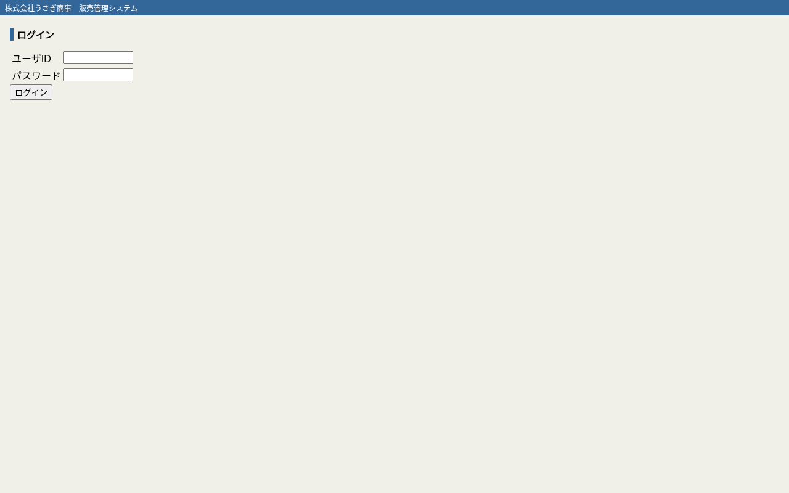
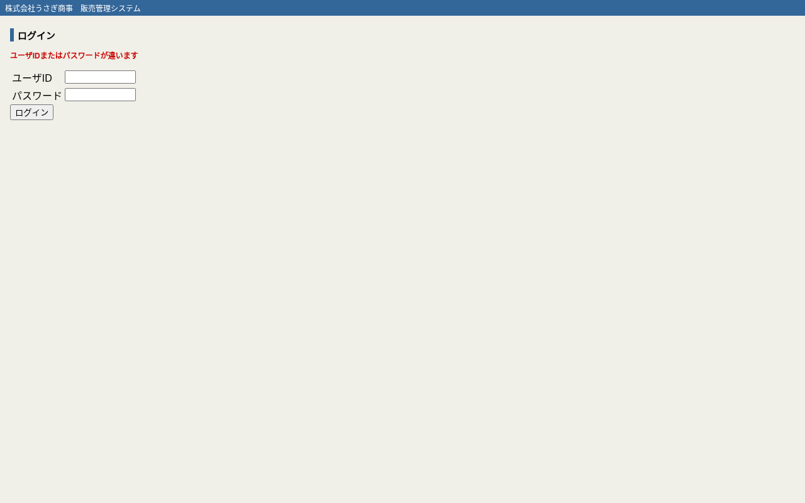
概要（1行）
| 行 | 対象／ルール | 項目／条件 | 内容／結果 | 根拠（静的） | 判定 | 判定の根拠 |
|---|---|---|---|---|---|---|
| 2 | ユーザIDとパスワードを利用者マスタ（m_user）と照合する。（LoginAction.java:29-32） 一致しなければ「ユーザIDまたはパスワードが違います」を表示してログイン画面に戻す。（LoginAction.java:33-35） 一致すればセッションにユーザID・ユーザ名・権限を保持し、メニューへリダイレクトする。（LoginAction.java:37-44, struts-config.xml:17） | 実行で確認 | プログラムを実行し、概要の各文を業務ルール検証で確認（同プログラムの業務ルール行を参照） エビデンス |
業務ルール（3行）
| 行 | 対象／ルール | 項目／条件 | 内容／結果 | 根拠（静的） | 判定 | 判定の根拠 |
|---|---|---|---|---|---|---|
| 16 | 認証 | user_id と password が一致する行がある | ログイン成功→/menu.do | LoginAction.java:29,44 | 実行で確認 | [WEB-LOGIN-1] 入力: user01／usagi01（正）、user01／"usagi01 "（末尾空白） → 期待: 正しい組合せだけ /menu.do へ → 実際: HTTP 302 Location=/usagi/menu.do;jsessionid=3BF9509308B0AA6A5E4B4F7179AC46BF ／ 末尾空白: ユーザIDまたはパスワードが違います（一致） エビデンス |
| 17 | 認証 | 一致する行がない | メッセージを表示してログイン画面 | LoginAction.java:33-35 | 実行で確認 | [WEB-LOGIN-2] 入力: user01／USAGI01（大文字）、user01／空 → 期待: 「ユーザIDまたはパスワードが違います」を表示してログイン画面 → 実際: ユーザIDまたはパスワードが違います ／ ユーザIDまたはパスワードが違います（一致） エビデンス |
| 18 | 初期表示 | userId パラメタなし | ログイン画面を表示 | LoginAction.java:21-23 | 実行で確認 | [WEB-LOGIN-3] 入力: GET login.do（userId なし） → 期待: ログイン画面を表示（メッセージなし） → 実際: HTTP 200 パスワード欄=True メッセージ=""（一致） エビデンス |
入力レコード（7行）
| 行 | 対象／ルール | 項目／条件 | 内容／結果 | 根拠（静的） | 判定 | 判定の根拠 |
|---|---|---|---|---|---|---|
| 4 | 画面入力（login.jsp） | ユーザID（userId） | 文字列 size12 | login.jsp:11 | 実行で確認 | 画面操作・SQL ログで確認 エビデンス |
| 5 | 画面入力（login.jsp） | パスワード（password） | 文字列 平文 | login.jsp:12 | 実行で確認 | 画面操作・SQL ログで確認 エビデンス |
| 7 | テーブル m_user（web/sql/01_ddl.sql） | ユーザID（user_id） | VARCHAR(10) PK | 01_ddl.sql:3 | 実行で確認 | 画面操作・SQL ログで確認 エビデンス |
| 8 | テーブル m_user（web/sql/01_ddl.sql） | パスワード（password） | VARCHAR(20) 平文で照合 | 01_ddl.sql:4, LoginAction.java:29 | 実行で確認 | 画面操作・SQL ログで確認 エビデンス |
| 9 | テーブル m_user（web/sql/01_ddl.sql） | ユーザ名（user_nm） | VARCHAR(40) | 01_ddl.sql:5 | 実行で確認 | 画面操作・SQL ログで確認 エビデンス |
| 10 | テーブル m_user（web/sql/01_ddl.sql） | 権限（kengen） | CHAR(1) 1/9。参照箇所なし | 01_ddl.sql:6, 02_data.sql:3-5 | 実行で確認 | 画面操作・SQL ログで確認 エビデンス |
| 11 | テーブル m_user（web/sql/01_ddl.sql） | 更新日（upd_ymd） | CHAR(8) | 01_ddl.sql:7 | 実行で確認 | 画面操作・SQL ログで確認 エビデンス |
出力レコード（3行）
| 行 | 対象／ルール | 項目／条件 | 内容／結果 | 根拠（静的） | 判定 | 判定の根拠 |
|---|---|---|---|---|---|---|
| 13 | セッション | ログインユーザ（LOGIN_USER） | 文字列 以降の全画面のログイン判定に使う | LoginAction.java:38 | ソースで確認 | セッションの中身は画面から直接見えない（ログイン判定の動作のみ実行で確認） エビデンス |
| 14 | セッション | ユーザ名（LOGIN_NAME） | 文字列 ヘッダに表示 | LoginAction.java:39, header.jsp:4 | ソースで確認 | セッションの中身は画面から直接見えない（ログイン判定の動作のみ実行で確認） エビデンス |
| 15 | セッション | 権限（KENGEN） | 文字列 参照箇所なし | LoginAction.java:40 | ソースで確認 | セッションの中身は画面から直接見えない（ログイン判定の動作のみ実行で確認） エビデンス |
入力例（2行）
| 行 | 対象／ルール | 項目／条件 | 内容／結果 | 根拠（静的） | 判定 | 判定の根拠 |
|---|---|---|---|---|---|---|
| 3 | 画面入力（login.jsp） | userId=user01, password=usagi01 | 02_data.sql:3 | 実行で確認 | 実際: ログイン後のヘッダ: 営業事務１ さん エビデンス | |
| 6 | 利用者マスタ | user01 / 営業事務１ / 権限1 | 02_data.sql:3 | 実行で確認 | 実際: ログイン後のヘッダ: 営業事務１ さん エビデンス |
出力例（1行）
| 行 | 対象／ルール | 項目／条件 | 内容／結果 | 根拠（静的） | 判定 | 判定の根拠 |
|---|---|---|---|---|---|---|
| 12 | セッション | LOGIN_USER=user01, LOGIN_NAME=営業事務１, KENGEN=1 | 02_data.sql:3 | 実行で確認 | 実際: ログイン後のヘッダ: 営業事務１ さん エビデンス |
P02 ログアウト（LogoutAction）
実行で確認 実行できた（画面は docker compose、COBOL は GnuCOBOL 3.1.2 でコンパイルして実行） エビデンス
概要（1行）
| 行 | 対象／ルール | 項目／条件 | 内容／結果 | 根拠（静的） | 判定 | 判定の根拠 |
|---|---|---|---|---|---|---|
| 19 | セッションがあれば破棄し、ログイン画面に戻す。（LogoutAction.java:15-19） | 実行で確認 | プログラムを実行し、概要の各文を業務ルール検証で確認（同プログラムの業務ルール行を参照） エビデンス |
業務ルール（1行）
| 行 | 対象／ルール | 項目／条件 | 内容／結果 | 根拠（静的） | 判定 | 判定の根拠 |
|---|---|---|---|---|---|---|
| 24 | セッション | セッションあり | invalidate | LogoutAction.java:16-17 | 実行で確認 | [WEB-LOGOUT-1] 入力: ログイン→logout.do→menu.do → 期待: セッション破棄。以後 menu.do はログイン画面 → 実際: logout 後 menu.do: ログイン画面（一致） エビデンス |
入力レコード（1行）
| 行 | 対象／ルール | 項目／条件 | 内容／結果 | 根拠（静的） | 判定 | 判定の根拠 |
|---|---|---|---|---|---|---|
| 21 | セッション | ログインユーザ（LOGIN_USER） | 文字列 | LogoutAction.java:15 | ソースで確認 | セッションの中身は画面から直接見えない（ログイン判定の動作のみ実行で確認） エビデンス |
出力レコード（1行）
| 行 | 対象／ルール | 項目／条件 | 内容／結果 | 根拠（静的） | 判定 | 判定の根拠 |
|---|---|---|---|---|---|---|
| 23 | 画面遷移 | 遷移先（success） | JSP login.jsp | struts-config.xml:20 | 実行で確認 | 画面操作・SQL ログで確認 エビデンス |
入力例（1行）
| 行 | 対象／ルール | 項目／条件 | 内容／結果 | 根拠（静的） | 判定 | 判定の根拠 |
|---|---|---|---|---|---|---|
| 20 | セッション | LOGIN_USER=user01 | 実行で確認 | 実際: logout.do 後はログイン画面 エビデンス |
出力例（1行）
| 行 | 対象／ルール | 項目／条件 | 内容／結果 | 根拠（静的） | 判定 | 判定の根拠 |
|---|---|---|---|---|---|---|
| 22 | 画面遷移 | login.jsp を表示 | struts-config.xml:20 | 実行で確認 | 実際: logout.do 後はログイン画面 エビデンス |
P03 メニュー表示（MenuAction）
実行で確認 実行できた（画面は docker compose、COBOL は GnuCOBOL 3.1.2 でコンパイルして実行） エビデンス
画面のスクリーンショット
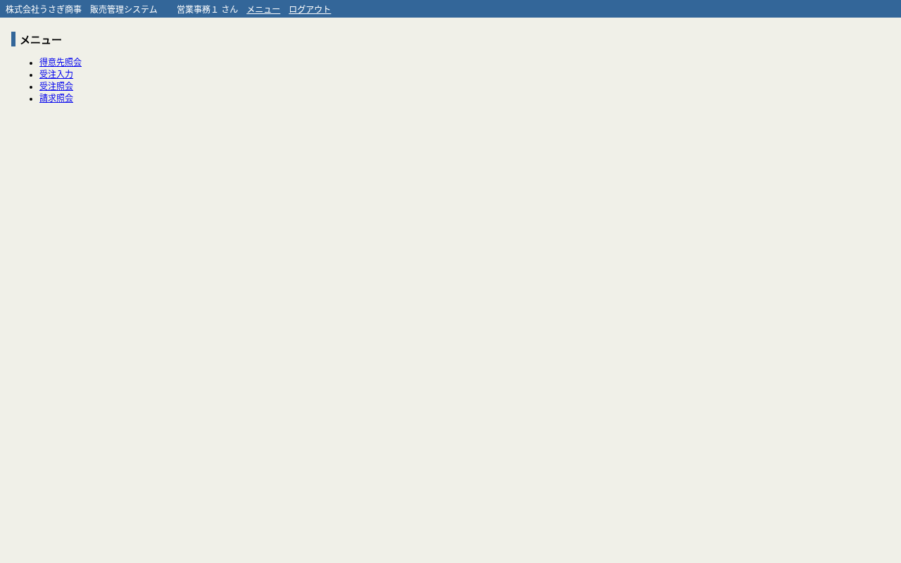
概要（1行）
| 行 | 対象／ルール | 項目／条件 | 内容／結果 | 根拠（静的） | 判定 | 判定の根拠 |
|---|---|---|---|---|---|---|
| 25 | ログイン済みならメニュー画面を表示し、未ログインならログイン画面に戻す。（MenuAction.java:14-17） メニューのリンクは得意先照会・受注入力・受注照会・請求照会の4つ（得意先メンテナンスはない）。（menu.jsp:9-12） | 実行で確認 | プログラムを実行し、概要の各文を業務ルール検証で確認（同プログラムの業務ルール行を参照） エビデンス |
業務ルール（1行）
| 行 | 対象／ルール | 項目／条件 | 内容／結果 | 根拠（静的） | 判定 | 判定の根拠 |
|---|---|---|---|---|---|---|
| 30 | ログイン判定 | LOGIN_USER なし | login.jsp（global-forward） | MenuAction.java:14-15, struts-config.xml:11 | 実行で確認 | [WEB-MENU-1] 入力: 未ログインで menu.do／juchuInquiry.do → 期待: login.jsp を表示 → 実際: menu.do: ログイン画面 ／ juchuInquiry.do: ログイン画面（一致） エビデンス |
入力レコード（1行）
| 行 | 対象／ルール | 項目／条件 | 内容／結果 | 根拠（静的） | 判定 | 判定の根拠 |
|---|---|---|---|---|---|---|
| 27 | セッション | ログインユーザ（LOGIN_USER） | 文字列 | MenuAction.java:14 | ソースで確認 | セッションの中身は画面から直接見えない（ログイン判定の動作のみ実行で確認） エビデンス |
出力レコード（1行）
| 行 | 対象／ルール | 項目／条件 | 内容／結果 | 根拠（静的） | 判定 | 判定の根拠 |
|---|---|---|---|---|---|---|
| 29 | 画面遷移 | 遷移先（success） | JSP menu.jsp | struts-config.xml:23 | 実行で確認 | 画面操作・SQL ログで確認 エビデンス |
入力例（1行）
| 行 | 対象／ルール | 項目／条件 | 内容／結果 | 根拠（静的） | 判定 | 判定の根拠 |
|---|---|---|---|---|---|---|
| 26 | セッション | LOGIN_USER=user01 | 実行で確認 | 実際: メニューのリンク: ['メニュー', 'ログアウト', '得意先照会', '受注入力', '受注照会', '請求照会']（ヘッダの2つを除き4リンク） エビデンス |
出力例（1行）
| 行 | 対象／ルール | 項目／条件 | 内容／結果 | 根拠（静的） | 判定 | 判定の根拠 |
|---|---|---|---|---|---|---|
| 28 | 画面遷移 | menu.jsp（4リンク） | menu.jsp:9-12 | 実行で確認 | 実際: メニューのリンク: ['メニュー', 'ログアウト', '得意先照会', '受注入力', '受注照会', '請求照会']（ヘッダの2つを除き4リンク） エビデンス |
P04 得意先照会（TokuiSearchAction）
実行で確認 実行できた（画面は docker compose、COBOL は GnuCOBOL 3.1.2 でコンパイルして実行） エビデンス
画面のスクリーンショット
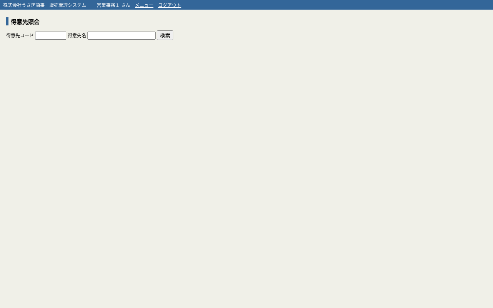
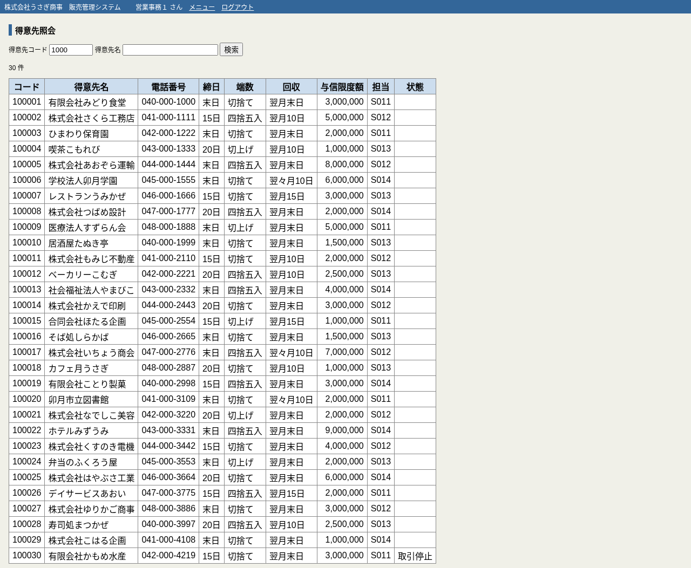
概要（1行）
| 行 | 対象／ルール | 項目／条件 | 内容／結果 | 根拠（静的） | 判定 | 判定の根拠 |
|---|---|---|---|---|---|---|
| 31 | 得意先コード（前方一致）と得意先名・カナ（部分一致）で得意先マスタを検索する。（TokuiSearchAction.java:28-36） 締日・端数区分・回収条件をコードから業務表記（末日、切捨て、翌月末日など）に変換して一覧表示する。（TokuiSearchAction.java:50-70） 取引停止の得意先には「取引停止」と表示する。（TokuiSearchAction.java:73） | 実行で確認 | プログラムを実行し、概要の各文を業務ルール検証で確認（同プログラムの業務ルール行を参照） エビデンス |
業務ルール（6行）
| 行 | 対象／ルール | 項目／条件 | 内容／結果 | 根拠（静的） | 判定 | 判定の根拠 |
|---|---|---|---|---|---|---|
| 62 | 締日表示 | sime_kbn=99 | 末日 | TokuiSearchAction.java:51-52 | 実行で確認 | [WEB-TOKUI-1] 入力: 全得意先 32 件（sime_kbn=99 を含む） → 期待: sime_kbn=99 は「末日」 → 実際: 100001(99): 末日 ／ 全件照合 True（一致） エビデンス |
| 63 | 締日表示 | それ以外 | 数値＋「日」 | TokuiSearchAction.java:54 | 実行で確認 | [WEB-TOKUI-2] 入力: sime_kbn=15／20／05（Z00001） → 期待: 数値＋「日」（05→5日） → 実際: 100002(15): 15日 ／ Z00001(05): 5日（一致） エビデンス |
| 64 | 端数表示 | hasu_kbn=1 / 2 / 3 | 切捨て / 四捨五入 / 切上げ | TokuiSearchAction.java:57-62 | 実行で確認 | [WEB-TOKUI-3] 入力: hasu_kbn=1／2／3 → 期待: 切捨て／四捨五入／切上げ → 実際: 100001(1): 切捨て ／ 100002(2): 四捨五入 ／ 100003(1): 切捨て ／ Z00001(3): 切上げ（一致） エビデンス |
| 65 | 回収表示 | kaisyu_m=1 / 2 / 他 | 翌月 / 翌々月 / 当月 | TokuiSearchAction.java:68 | 実行で確認 | [WEB-TOKUI-4] 入力: kaisyu_m=1／2／0（Z00001） → 期待: 翌月／翌々月／当月 → 実際: Z00001(0,05): 当月5日 ／ Z00002(2,31): 翌々月末日（一致） エビデンス |
| 66 | 回収表示 | kaisyu_d=31 | 末日 | TokuiSearchAction.java:69 | 実行で確認 | [WEB-TOKUI-5] 入力: kaisyu_d=31／10／05 → 期待: 31 は「末日」、他は N日 → 実際: 100001(31): 翌月末日 ／ 100002(10): 翌月10日 ／ Z00001(05): 当月5日（一致） エビデンス |
| 67 | 状態 | del_flg=1 | 取引停止 | TokuiSearchAction.java:73 | 実行で確認 | [WEB-TOKUI-6] 入力: del_flg=1（Z00002 と既存1件）／0 → 期待: 「取引停止」／空白 → 実際: Z00002: 取引停止 ／ 100001: ''（一致） エビデンス |
入力レコード（18行）
| 行 | 対象／ルール | 項目／条件 | 内容／結果 | 根拠（静的） | 判定 | 判定の根拠 |
|---|---|---|---|---|---|---|
| 33 | 画面入力（tokui_search.jsp） | 得意先コード（tkCd） | 文字列 前方一致 | TokuiSearchAction.java:23,31 | 実行で確認 | 画面操作・SQL ログで確認 エビデンス |
| 34 | 画面入力（tokui_search.jsp） | 得意先名（tkNm） | 文字列 tk_nm/tk_kana 部分一致 | TokuiSearchAction.java:24,34 | 実行で確認 | 画面操作・SQL ログで確認 エビデンス |
| 35 | 画面入力（tokui_search.jsp） | 検索ボタン（search） | 有無 なければ初期表示 | TokuiSearchAction.java:25 | 実行で確認 | 画面操作・SQL ログで確認 エビデンス |
| 37 | テーブル m_tokui（web/sql/01_ddl.sql） | 得意先コード（tk_cd） | CHAR(6) PK | 01_ddl.sql:10 | 実行で確認 | 画面操作・SQL ログで確認 エビデンス |
| 38 | テーブル m_tokui（web/sql/01_ddl.sql） | 得意先名（tk_nm） | VARCHAR(60) | 01_ddl.sql:11 | 実行で確認 | 画面操作・SQL ログで確認 エビデンス |
| 39 | テーブル m_tokui（web/sql/01_ddl.sql） | 得意先カナ（tk_kana） | VARCHAR(60) 検索のみ | 01_ddl.sql:12, TokuiSearchAction.java:34 | 実行で確認 | 画面操作・SQL ログで確認 エビデンス |
| 40 | テーブル m_tokui（web/sql/01_ddl.sql） | 郵便番号（yubin） | CHAR(8) 未使用 | 01_ddl.sql:13 | 実行で確認 | 画面操作・SQL ログで確認 エビデンス |
| 41 | テーブル m_tokui（web/sql/01_ddl.sql） | 住所（adr） | VARCHAR(100) 未使用 | 01_ddl.sql:14 | 実行で確認 | 画面操作・SQL ログで確認 エビデンス |
| 42 | テーブル m_tokui（web/sql/01_ddl.sql） | 電話番号（tel） | VARCHAR(15) | 01_ddl.sql:15 | 実行で確認 | 画面操作・SQL ログで確認 エビデンス |
| 43 | テーブル m_tokui（web/sql/01_ddl.sql） | 締日区分（sime_kbn） | CHAR(2) 15/20/99 | 01_ddl.sql:16 | 実行で確認 | 画面操作・SQL ログで確認 エビデンス |
| 44 | テーブル m_tokui（web/sql/01_ddl.sql） | 端数区分（hasu_kbn） | CHAR(1) 1:切捨て 2:四捨五入 3:切上げ | 01_ddl.sql:17, USB110.cbl:73-84 | 実行で確認 | 画面操作・SQL ログで確認 エビデンス |
| 45 | テーブル m_tokui（web/sql/01_ddl.sql） | 回収月（kaisyu_m） | CHAR(1) 0当月 1翌月 2翌々月 | 01_ddl.sql:18, TokuiSearchAction.java:68 | 実行で確認 | 画面操作・SQL ログで確認 エビデンス |
| 46 | テーブル m_tokui（web/sql/01_ddl.sql） | 回収日（kaisyu_d） | CHAR(2) 31:末日 | 01_ddl.sql:19, TokuiSearchAction.java:69 | 実行で確認 | 画面操作・SQL ログで確認 エビデンス |
| 47 | テーブル m_tokui（web/sql/01_ddl.sql） | 与信限度額（gendo） | NUMERIC(11) チェック処理なし | 01_ddl.sql:20 | 実行で確認 | 画面操作・SQL ログで確認 エビデンス |
| 48 | テーブル m_tokui（web/sql/01_ddl.sql） | 営業担当（a4） | CHAR(4) 担当者コード | 01_ddl.sql:21, TokuiEditAction.java:38 | 実行で確認 | 画面操作・SQL ログで確認 エビデンス |
| 49 | テーブル m_tokui（web/sql/01_ddl.sql） | 取引停止フラグ（del_flg） | CHAR(1) 1:取引停止 | 01_ddl.sql:22, JuchuConfirmAction.java:50 | 実行で確認 | 画面操作・SQL ログで確認 エビデンス |
| 50 | テーブル m_tokui（web/sql/01_ddl.sql） | 登録日（ins_ymd） | CHAR(8) | 01_ddl.sql:23 | 実行で確認 | 画面操作・SQL ログで確認 エビデンス |
| 51 | テーブル m_tokui（web/sql/01_ddl.sql） | 更新日（upd_ymd） | CHAR(8) | 01_ddl.sql:24 | 実行で確認 | 画面操作・SQL ログで確認 エビデンス |
出力レコード（9行）
| 行 | 対象／ルール | 項目／条件 | 内容／結果 | 根拠（静的） | 判定 | 判定の根拠 |
|---|---|---|---|---|---|---|
| 53 | 一覧（request属性 list） | 得意先コード（tkCd） | TokuiSearchAction.java:47 | 実行で確認 | 画面操作・SQL ログで確認 エビデンス | |
| 54 | 一覧（request属性 list） | 得意先名（tkNm） | TokuiSearchAction.java:48 | 実行で確認 | 画面操作・SQL ログで確認 エビデンス | |
| 55 | 一覧（request属性 list） | 電話（tel） | TokuiSearchAction.java:49 | 実行で確認 | 画面操作・SQL ログで確認 エビデンス | |
| 56 | 一覧（request属性 list） | 締日（sime） | 表示文字 99→末日、他→N日 | TokuiSearchAction.java:50-55 | 実行で確認 | 画面操作・SQL ログで確認 エビデンス |
| 57 | 一覧（request属性 list） | 端数（hasu） | 表示文字 1→切捨て 2→四捨五入 3→切上げ | TokuiSearchAction.java:56-65 | 実行で確認 | 画面操作・SQL ログで確認 エビデンス |
| 58 | 一覧（request属性 list） | 回収（kaisyu） | 表示文字 回収月＋回収日 | TokuiSearchAction.java:66-70 | 実行で確認 | 画面操作・SQL ログで確認 エビデンス |
| 59 | 一覧（request属性 list） | 与信限度額（gendo） | TokuiSearchAction.java:71 | 実行で確認 | 画面操作・SQL ログで確認 エビデンス | |
| 60 | 一覧（request属性 list） | 担当（tanto） | a4 | TokuiSearchAction.java:72 | 実行で確認 | 画面操作・SQL ログで確認 エビデンス |
| 61 | 一覧（request属性 list） | 状態（del） | 1→取引停止 | TokuiSearchAction.java:73 | 実行で確認 | 画面操作・SQL ログで確認 エビデンス |
入力例（2行）
| 行 | 対象／ルール | 項目／条件 | 内容／結果 | 根拠（静的） | 判定 | 判定の根拠 |
|---|---|---|---|---|---|---|
| 32 | 画面入力（tokui_search.jsp） | tkCd=100010, search=検索 | 実行で確認 | 実際: 100010 居酒屋たぬき亭 040-000-1999 末日 切捨て 翌月末日 1,500,000 S013 エビデンス | ||
| 36 | 得意先マスタ | 100010 居酒屋たぬき亭 締日99 端数1 回収1/31 | 02_data.sql:16 | 実行で確認 | 実際: 100010 居酒屋たぬき亭 040-000-1999 末日 切捨て 翌月末日 1,500,000 S013 エビデンス |
出力例（1行）
| 行 | 対象／ルール | 項目／条件 | 内容／結果 | 根拠（静的） | 判定 | 判定の根拠 |
|---|---|---|---|---|---|---|
| 52 | 一覧（request属性 list） | 100010 居酒屋たぬき亭 末日 切捨て 翌月末日 | 02_data.sql:16 | 実行で確認 | 実際: 100010 居酒屋たぬき亭 040-000-1999 末日 切捨て 翌月末日 1,500,000 S013 エビデンス |
P05 得意先メンテナンス（TokuiEditAction）
実行で確認 実行できた（画面は docker compose、COBOL は GnuCOBOL 3.1.2 でコンパイルして実行） エビデンス
画面のスクリーンショット
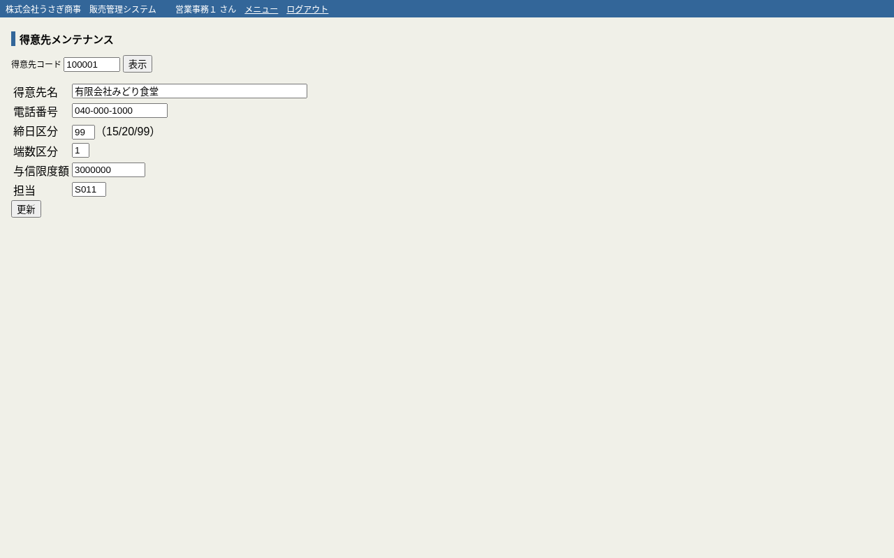
概要（1行）
| 行 | 対象／ルール | 項目／条件 | 内容／結果 | 根拠（静的） | 判定 | 判定の根拠 |
|---|---|---|---|---|---|---|
| 68 | 得意先コードを指定して得意先マスタを表示する。（TokuiEditAction.java:45-57） 更新モード（mode=update）では名称・電話・締日・端数・与信限度額・担当を上書きし、更新日を当日にする。（TokuiEditAction.java:30-43） 入力値の妥当性チェックはない（締日・端数はそのまま保存）。（TokuiEditAction.java:33-38） | 実行で確認 | プログラムを実行し、概要の各文を業務ルール検証で確認（同プログラムの業務ルール行を参照） エビデンス |
業務ルール（3行）
| 行 | 対象／ルール | 項目／条件 | 内容／結果 | 根拠（静的） | 判定 | 判定の根拠 |
|---|---|---|---|---|---|---|
| 112 | 更新 | mode=update | UPDATE 後に再表示 | TokuiEditAction.java:30-43 | 実行で確認 | [WEB-TOKUIEDIT-1] 入力: Z00001 を mode=update（締日31・端数7 を含む） → 期待: 「更新しました」→ UPDATE 後の値を再表示 → 実際: 更新しました ／ DB: 検証用得意先（更新）|111|31|7|200|S998|20261025（一致） ※締日31・端数7 のような範囲外の値も入力チェックなしで更新される エビデンス |
| 113 | 表示 | 該当得意先なし | tokui 属性なし（空表示） | TokuiEditAction.java:48 | 実行で確認 | [WEB-TOKUIEDIT-2] 入力: tkCd=999999（存在しない） → 期待: tokui 属性なし（空表示） → 実際: HTTP 200 入力欄の値=['999999']（一致） エビデンス |
| 114 | 入力チェック | gendo が数値でない | NumberFormatException（エラー画面。推定：Struts/Tomcat の既定エラー画面） | TokuiEditAction.java:37 | 実行で確認 | [WEB-TOKUIEDIT-3] 入力: gendo=abc → 期待: NumberFormatException（Tomcat の既定エラー画面） → 実際: HTTP 500 NumberFormatException（一致） エビデンス |
入力レコード（23行）
| 行 | 対象／ルール | 項目／条件 | 内容／結果 | 根拠（静的） | 判定 | 判定の根拠 |
|---|---|---|---|---|---|---|
| 70 | 画面入力（tokui_edit.jsp） | 得意先コード（tkCd） | 文字列 | tokui_edit.jsp:11,20 | 実行で確認 | 画面操作・SQL ログで確認 エビデンス |
| 71 | 画面入力（tokui_edit.jsp） | モード（mode） | update hidden | tokui_edit.jsp:19 | 実行で確認 | 画面操作・SQL ログで確認 エビデンス |
| 72 | 画面入力（tokui_edit.jsp） | 得意先名（tkNm） | tokui_edit.jsp:22 | 実行で確認 | 画面操作・SQL ログで確認 エビデンス | |
| 73 | 画面入力（tokui_edit.jsp） | 電話番号（tel） | tokui_edit.jsp:23 | 実行で確認 | 画面操作・SQL ログで確認 エビデンス | |
| 74 | 画面入力（tokui_edit.jsp） | 締日区分（simeKbn） | 文字2 画面注記 15/20/99 | tokui_edit.jsp:24 | 実行で確認 | 画面操作・SQL ログで確認 エビデンス |
| 75 | 画面入力（tokui_edit.jsp） | 端数区分（hasuKbn） | 文字1 | tokui_edit.jsp:25 | 実行で確認 | 画面操作・SQL ログで確認 エビデンス |
| 76 | 画面入力（tokui_edit.jsp） | 与信限度額（gendo） | 数値 Long.parseLong | tokui_edit.jsp:26, TokuiEditAction.java:37 | 実行で確認 | 画面操作・SQL ログで確認 エビデンス |
| 77 | 画面入力（tokui_edit.jsp） | 担当（tanto） | 文字4 a4 | tokui_edit.jsp:27 | 実行で確認 | 画面操作・SQL ログで確認 エビデンス |
| 79 | テーブル m_tokui（web/sql/01_ddl.sql） | 得意先コード（tk_cd） | CHAR(6) PK | 01_ddl.sql:10 | 実行で確認 | 画面操作・SQL ログで確認 エビデンス |
| 80 | テーブル m_tokui（web/sql/01_ddl.sql） | 得意先名（tk_nm） | VARCHAR(60) | 01_ddl.sql:11 | 実行で確認 | 画面操作・SQL ログで確認 エビデンス |
| 81 | テーブル m_tokui（web/sql/01_ddl.sql） | 得意先カナ（tk_kana） | VARCHAR(60) 検索のみ | 01_ddl.sql:12, TokuiSearchAction.java:34 | 実行で確認 | 画面操作・SQL ログで確認 エビデンス |
| 82 | テーブル m_tokui（web/sql/01_ddl.sql） | 郵便番号（yubin） | CHAR(8) 未使用 | 01_ddl.sql:13 | 実行で確認 | 画面操作・SQL ログで確認 エビデンス |
| 83 | テーブル m_tokui（web/sql/01_ddl.sql） | 住所（adr） | VARCHAR(100) 未使用 | 01_ddl.sql:14 | 実行で確認 | 画面操作・SQL ログで確認 エビデンス |
| 84 | テーブル m_tokui（web/sql/01_ddl.sql） | 電話番号（tel） | VARCHAR(15) | 01_ddl.sql:15 | 実行で確認 | 画面操作・SQL ログで確認 エビデンス |
| 85 | テーブル m_tokui（web/sql/01_ddl.sql） | 締日区分（sime_kbn） | CHAR(2) 15/20/99 | 01_ddl.sql:16 | 実行で確認 | 画面操作・SQL ログで確認 エビデンス |
| 86 | テーブル m_tokui（web/sql/01_ddl.sql） | 端数区分（hasu_kbn） | CHAR(1) 1:切捨て 2:四捨五入 3:切上げ | 01_ddl.sql:17, USB110.cbl:73-84 | 実行で確認 | 画面操作・SQL ログで確認 エビデンス |
| 87 | テーブル m_tokui（web/sql/01_ddl.sql） | 回収月（kaisyu_m） | CHAR(1) 0当月 1翌月 2翌々月 | 01_ddl.sql:18, TokuiSearchAction.java:68 | 実行で確認 | 画面操作・SQL ログで確認 エビデンス |
| 88 | テーブル m_tokui（web/sql/01_ddl.sql） | 回収日（kaisyu_d） | CHAR(2) 31:末日 | 01_ddl.sql:19, TokuiSearchAction.java:69 | 実行で確認 | 画面操作・SQL ログで確認 エビデンス |
| 89 | テーブル m_tokui（web/sql/01_ddl.sql） | 与信限度額（gendo） | NUMERIC(11) チェック処理なし | 01_ddl.sql:20 | 実行で確認 | 画面操作・SQL ログで確認 エビデンス |
| 90 | テーブル m_tokui（web/sql/01_ddl.sql） | 営業担当（a4） | CHAR(4) 担当者コード | 01_ddl.sql:21, TokuiEditAction.java:38 | 実行で確認 | 画面操作・SQL ログで確認 エビデンス |
| 91 | テーブル m_tokui（web/sql/01_ddl.sql） | 取引停止フラグ（del_flg） | CHAR(1) 1:取引停止 | 01_ddl.sql:22, JuchuConfirmAction.java:50 | 実行で確認 | 画面操作・SQL ログで確認 エビデンス |
| 92 | テーブル m_tokui（web/sql/01_ddl.sql） | 登録日（ins_ymd） | CHAR(8) | 01_ddl.sql:23 | 実行で確認 | 画面操作・SQL ログで確認 エビデンス |
| 93 | テーブル m_tokui（web/sql/01_ddl.sql） | 更新日（upd_ymd） | CHAR(8) | 01_ddl.sql:24 | 実行で確認 | 画面操作・SQL ログで確認 エビデンス |
出力レコード（16行）
| 行 | 対象／ルール | 項目／条件 | 内容／結果 | 根拠（静的） | 判定 | 判定の根拠 |
|---|---|---|---|---|---|---|
| 95 | テーブル m_tokui（web/sql/01_ddl.sql） | 得意先コード（tk_cd） | CHAR(6) PK | 01_ddl.sql:10 | 実行で確認 | 画面操作・SQL ログで確認 エビデンス |
| 96 | テーブル m_tokui（web/sql/01_ddl.sql） | 得意先名（tk_nm） | VARCHAR(60) | 01_ddl.sql:11 | 実行で確認 | 画面操作・SQL ログで確認 エビデンス |
| 97 | テーブル m_tokui（web/sql/01_ddl.sql） | 得意先カナ（tk_kana） | VARCHAR(60) 検索のみ | 01_ddl.sql:12, TokuiSearchAction.java:34 | 実行で確認 | 画面操作・SQL ログで確認 エビデンス |
| 98 | テーブル m_tokui（web/sql/01_ddl.sql） | 郵便番号（yubin） | CHAR(8) 未使用 | 01_ddl.sql:13 | 実行で確認 | 画面操作・SQL ログで確認 エビデンス |
| 99 | テーブル m_tokui（web/sql/01_ddl.sql） | 住所（adr） | VARCHAR(100) 未使用 | 01_ddl.sql:14 | 実行で確認 | 画面操作・SQL ログで確認 エビデンス |
| 100 | テーブル m_tokui（web/sql/01_ddl.sql） | 電話番号（tel） | VARCHAR(15) | 01_ddl.sql:15 | 実行で確認 | 画面操作・SQL ログで確認 エビデンス |
| 101 | テーブル m_tokui（web/sql/01_ddl.sql） | 締日区分（sime_kbn） | CHAR(2) 15/20/99 | 01_ddl.sql:16 | 実行で確認 | 画面操作・SQL ログで確認 エビデンス |
| 102 | テーブル m_tokui（web/sql/01_ddl.sql） | 端数区分（hasu_kbn） | CHAR(1) 1:切捨て 2:四捨五入 3:切上げ | 01_ddl.sql:17, USB110.cbl:73-84 | 実行で確認 | 画面操作・SQL ログで確認 エビデンス |
| 103 | テーブル m_tokui（web/sql/01_ddl.sql） | 回収月（kaisyu_m） | CHAR(1) 0当月 1翌月 2翌々月 | 01_ddl.sql:18, TokuiSearchAction.java:68 | 実行で確認 | 画面操作・SQL ログで確認 エビデンス |
| 104 | テーブル m_tokui（web/sql/01_ddl.sql） | 回収日（kaisyu_d） | CHAR(2) 31:末日 | 01_ddl.sql:19, TokuiSearchAction.java:69 | 実行で確認 | 画面操作・SQL ログで確認 エビデンス |
| 105 | テーブル m_tokui（web/sql/01_ddl.sql） | 与信限度額（gendo） | NUMERIC(11) チェック処理なし | 01_ddl.sql:20 | 実行で確認 | 画面操作・SQL ログで確認 エビデンス |
| 106 | テーブル m_tokui（web/sql/01_ddl.sql） | 営業担当（a4） | CHAR(4) 担当者コード | 01_ddl.sql:21, TokuiEditAction.java:38 | 実行で確認 | 画面操作・SQL ログで確認 エビデンス |
| 107 | テーブル m_tokui（web/sql/01_ddl.sql） | 取引停止フラグ（del_flg） | CHAR(1) 1:取引停止 | 01_ddl.sql:22, JuchuConfirmAction.java:50 | 実行で確認 | 画面操作・SQL ログで確認 エビデンス |
| 108 | テーブル m_tokui（web/sql/01_ddl.sql） | 登録日（ins_ymd） | CHAR(8) | 01_ddl.sql:23 | 実行で確認 | 画面操作・SQL ログで確認 エビデンス |
| 109 | テーブル m_tokui（web/sql/01_ddl.sql） | 更新日（upd_ymd） | CHAR(8) | 01_ddl.sql:24 | 実行で確認 | 画面操作・SQL ログで確認 エビデンス |
| 111 | 画面（request属性 tokui, msg） | メッセージ（msg） | 更新しました | TokuiEditAction.java:43 | 実行で確認 | 画面操作・SQL ログで確認 エビデンス |
入力例（2行）
| 行 | 対象／ルール | 項目／条件 | 内容／結果 | 根拠（静的） | 判定 | 判定の根拠 |
|---|---|---|---|---|---|---|
| 69 | 画面入力（tokui_edit.jsp） | tkCd=100012, mode=update, simeKbn=20, hasuKbn=2 … | 02_data.sql:18 | 実行で確認 | 実際: 同じ処理を検証用得意先 Z00001 で実行（初期データは書き換えない）。「更新しました」と DB 更新を確認 エビデンス | |
| 78 | 得意先マスタ | 100012 ベーカリーこむぎ | 02_data.sql:18 | 実行で確認 | 実際: 同じ処理を検証用得意先 Z00001 で実行（初期データは書き換えない）。「更新しました」と DB 更新を確認 エビデンス |
出力例（2行）
| 行 | 対象／ルール | 項目／条件 | 内容／結果 | 根拠（静的） | 判定 | 判定の根拠 |
|---|---|---|---|---|---|---|
| 94 | 得意先マスタ（UPDATE） | tk_nm, tel, sime_kbn, hasu_kbn, gendo, a4, upd_ymd を更新 | TokuiEditAction.java:31-41 | 実行で確認 | 実際: 同じ処理を検証用得意先 Z00001 で実行（初期データは書き換えない）。「更新しました」と DB 更新を確認 エビデンス | |
| 110 | 画面（request属性 tokui, msg） | 更新しました | 実行で確認 | 実際: 同じ処理を検証用得意先 Z00001 で実行（初期データは書き換えない）。「更新しました」と DB 更新を確認 エビデンス |
P06 受注入力（初期表示）（JuchuInputAction）
実行で確認 実行できた（画面は docker compose、COBOL は GnuCOBOL 3.1.2 でコンパイルして実行） エビデンス
画面のスクリーンショット
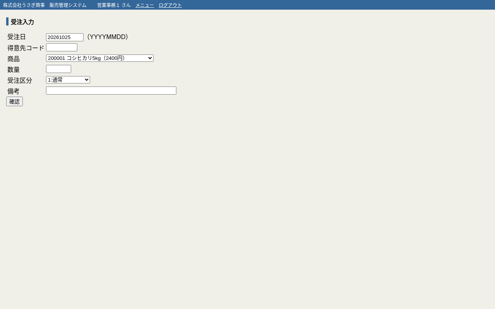
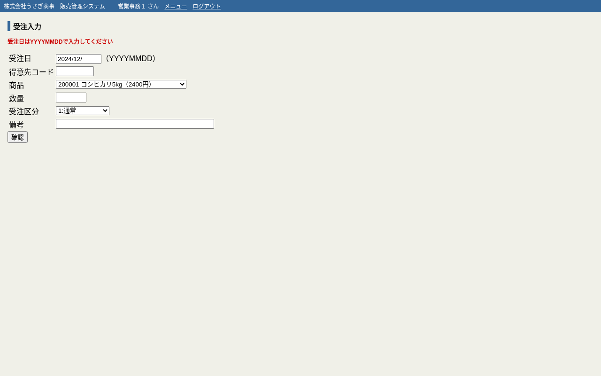
概要（1行）
| 行 | 対象／ルール | 項目／条件 | 内容／結果 | 根拠（静的） | 判定 | 判定の根拠 |
|---|---|---|---|---|---|---|
| 115 | 受注入力画面を表示する。受注日が空なら当日、受注区分が空なら「1:通常」を初期値にする。（JuchuInputAction.java:27-32） 商品選択欄のために商品マスタ全件を商品コード順に読む。（JuchuInputAction.java:40-51） | 実行で確認 | プログラムを実行し、概要の各文を業務ルール検証で確認（同プログラムの業務ルール行を参照） エビデンス |
業務ルール（3行）
| 行 | 対象／ルール | 項目／条件 | 内容／結果 | 根拠（静的） | 判定 | 判定の根拠 |
|---|---|---|---|---|---|---|
| 132 | 初期値 | 受注日が null/空 | 当日（yyyyMMdd） | JuchuInputAction.java:27-28 | 実行で確認 | [WEB-JUCHUIN-1] 入力: juchuInput.do（受注日なし） → 期待: 受注日の初期値＝当日 20261025 → 実際: 受注日=20261025（一致） エビデンス |
| 133 | 初期値 | 受注区分が null | 1（通常） | JuchuInputAction.java:30-31 | 実行で確認 | [WEB-JUCHUIN-2] 入力: 同上（受注区分なし） → 期待: 受注区分 1 を選択 → 実際: 選択=1（一致） エビデンス |
| 134 | 区分選択肢 | 画面 | 1:通常 2:返品 3:無償サンプル | juchu_input.jsp:25-28 | 実行で確認 | [WEB-JUCHUIN-3] 入力: 同上 → 期待: 1:通常 2:返品 3:無償サンプル → 実際: 1:通常 / 2:返品 / 3:無償サンプル（一致） エビデンス |
入力レコード（10行）
| 行 | 対象／ルール | 項目／条件 | 内容／結果 | 根拠（静的） | 判定 | 判定の根拠 |
|---|---|---|---|---|---|---|
| 117 | フォーム JuchuForm | 受注日（juchuYmd） | 文字8 | JuchuInputAction.java:27 | 実行で確認 | 画面操作・SQL ログで確認 エビデンス |
| 118 | フォーム JuchuForm | 受注区分（juchuKbn） | 文字1 | JuchuInputAction.java:30 | 実行で確認 | 画面操作・SQL ログで確認 エビデンス |
| 120 | テーブル m_shohin（web/sql/01_ddl.sql） | 商品コード（sh_cd） | CHAR(6) PK | 01_ddl.sql:27 | 実行で確認 | 画面操作・SQL ログで確認 エビデンス |
| 121 | テーブル m_shohin（web/sql/01_ddl.sql） | 商品名（sh_nm） | VARCHAR(60) | 01_ddl.sql:28 | 実行で確認 | 画面操作・SQL ログで確認 エビデンス |
| 122 | テーブル m_shohin（web/sql/01_ddl.sql） | 分類（bunrui） | CHAR(2) 未使用 | 01_ddl.sql:29 | 実行で確認 | 画面操作・SQL ログで確認 エビデンス |
| 123 | テーブル m_shohin（web/sql/01_ddl.sql） | 税区分（zei_kbn） | CHAR(1) 1:軽減税率対象 | 01_ddl.sql:30 | 実行で確認 | 画面操作・SQL ログで確認 エビデンス |
| 124 | テーブル m_shohin（web/sql/01_ddl.sql） | 標準単価（tanka） | NUMERIC(9) | 01_ddl.sql:31 | 実行で確認 | 画面操作・SQL ログで確認 エビデンス |
| 125 | テーブル m_shohin（web/sql/01_ddl.sql） | 単位（tani） | VARCHAR(6) 未使用 | 01_ddl.sql:32 | 実行で確認 | 画面操作・SQL ログで確認 エビデンス |
| 126 | テーブル m_shohin（web/sql/01_ddl.sql） | 在庫数（zaiko） | NUMERIC(7) 未使用（引当なし） | 01_ddl.sql:33 | 実行で確認 | 画面操作・SQL ログで確認 エビデンス |
| 127 | テーブル m_shohin（web/sql/01_ddl.sql） | 更新日（upd_ymd） | CHAR(8) | 01_ddl.sql:34 | 実行で確認 | 画面操作・SQL ログで確認 エビデンス |
出力レコード（3行）
| 行 | 対象／ルール | 項目／条件 | 内容／結果 | 根拠（静的） | 判定 | 判定の根拠 |
|---|---|---|---|---|---|---|
| 129 | 画面（juchu_input.jsp） | 商品一覧（shohinList） | List shCd, shNm, tanka | JuchuInputAction.java:42-51 | 実行で確認 | 画面操作・SQL ログで確認 エビデンス |
| 130 | 画面（juchu_input.jsp） | 受注日初期値（juchuYmd） | yyyyMMdd 当日 | JuchuInputAction.java:28 | 実行で確認 | 画面操作・SQL ログで確認 エビデンス |
| 131 | 画面（juchu_input.jsp） | 受注区分初期値（juchuKbn） | 1 通常 | JuchuInputAction.java:31 | 実行で確認 | 画面操作・SQL ログで確認 エビデンス |
入力例（2行）
| 行 | 対象／ルール | 項目／条件 | 内容／結果 | 根拠（静的） | 判定 | 判定の根拠 |
|---|---|---|---|---|---|---|
| 116 | フォーム JuchuForm | （初期表示時は空） | 実行で確認 | 実際: 商品 50 件、先頭「200001 コシヒカリ5kg（2400円）」、受注日=20261025、区分=1 エビデンス | ||
| 119 | 商品マスタ | 200001 コシヒカリ5kg 2400 | 02_data.sql:38 | 実行で確認 | 実際: 商品 50 件、先頭「200001 コシヒカリ5kg（2400円）」、受注日=20261025、区分=1 エビデンス |
出力例（1行）
| 行 | 対象／ルール | 項目／条件 | 内容／結果 | 根拠（静的） | 判定 | 判定の根拠 |
|---|---|---|---|---|---|---|
| 128 | 画面（juchu_input.jsp） | 受注日=当日、区分=1:通常、商品50件 | 実行で確認 | 実際: 商品 50 件、先頭「200001 コシヒカリ5kg（2400円）」、受注日=20261025、区分=1 エビデンス |
P07 受注入力チェック・確認表示（JuchuConfirmAction）
実行で確認 実行できた（画面は docker compose、COBOL は GnuCOBOL 3.1.2 でコンパイルして実行） エビデンス
画面のスクリーンショット
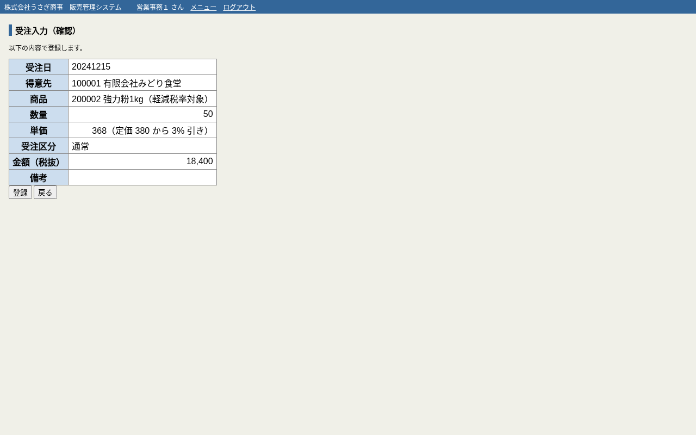
概要（1行）
| 行 | 対象／ルール | 項目／条件 | 内容／結果 | 根拠（静的） | 判定 | 判定の根拠 |
|---|---|---|---|---|---|---|
| 135 | 受注日・数量の形式、得意先の存在と取引停止、商品の存在をチェックする。（JuchuConfirmAction.java:24-67） エラーがあればメッセージ付きで受注入力画面に戻す。（JuchuConfirmAction.java:73-75, struts-config.xml:37） 確認画面（JSP）で数量割引（100以上5%、50以上3%）を適用して割引後単価と金額を計算し、返品はマイナス、無償サンプルは0円にする。（juchu_confirm.jsp:5-21） 計算結果は hidden 項目で登録処理に渡す。（juchu_confirm.jsp:41-49） | 実行で確認 | プログラムを実行し、概要の各文を業務ルール検証で確認（同プログラムの業務ルール行を参照） エビデンス |
業務ルール（12行）
| 行 | 対象／ルール | 項目／条件 | 内容／結果 | 根拠（静的） | 判定 | 判定の根拠 |
|---|---|---|---|---|---|---|
| 172 | 受注日チェック | 8桁数字でない | 「受注日はYYYYMMDDで入力してください」 | JuchuConfirmAction.java:25-26 | 実行で確認 | [WEB-CONF-1] 入力: 受注日 2024120／202412011／2024/1/1／20241399／20241201 → 期待: 8桁数字以外は「受注日はYYYYMMDDで入力してください」 → 実際: 2024120: 受注日はYYYYMMDDで入力してください ／ 202412011: 受注日はYYYYMMDDで入力してください ／ 2024/1/1: 受注日はYYYYMMDDで入力してください ／ 20241399: 確認画面へ ／ 20241201: 確認画面へ（一致） ※20241399（存在しない日付）: 確認画面へ エビデンス |
| 173 | 数量チェック | 数値でない、または0以下 | 「数量を正しく入力してください」 | JuchuConfirmAction.java:31-36 | 実行で確認 | [WEB-CONF-2] 入力: 数量 0／-1／abc／1.5／空／1 → 期待: 1 以外は「数量を正しく入力してください」 → 実際: 0: 数量を正しく入力してください ／ -1: 数量を正しく入力してください ／ abc: 数量を正しく入力してください ／ 1.5: 数量を正しく入力してください ／ 空: 数量を正しく入力してください ／ 1: 確認画面へ（一致） エビデンス |
| 174 | 得意先チェック | m_tokui にない | 「得意先コードが登録されていません」 | JuchuConfirmAction.java:48-49 | 実行で確認 | [WEB-CONF-3] 入力: 得意先 999999 → 期待: 「得意先コードが登録されていません」 → 実際: 得意先コードが登録されていません（一致） エビデンス |
| 175 | 得意先チェック | del_flg=1 | 「取引停止中の得意先です」 | JuchuConfirmAction.java:50-51 | 実行で確認 | [WEB-CONF-4] 入力: 得意先 Z00002（del_flg=1） → 期待: 「取引停止中の得意先です」 → 実際: 取引停止中の得意先です（一致） エビデンス |
| 176 | 商品チェック | m_shohin にない | 「商品コードが登録されていません」 | JuchuConfirmAction.java:62-63 | 実行で確認 | [WEB-CONF-5] 入力: 商品 999999（選択肢にない値を送信） → 期待: 「商品コードが登録されていません」 → 実際: 商品コードが登録されていません（一致） エビデンス |
| 177 | 数量割引 | 数量≧100 | 割引率5% | juchu_confirm.jsp:9-10 | 実行で確認 | [WEB-CONF-6] 入力: 標準単価333、数量 100 → 期待: 割引率5% → 単価 316（316.35 切捨て） → 実際: 数量100: 割引率5.0 単価316 金額31600（一致） エビデンス |
| 178 | 数量割引 | 50≦数量＜100 | 割引率3% | juchu_confirm.jsp:11-12 | 実行で確認 | [WEB-CONF-7] 入力: 標準単価333、数量 50／99 → 期待: 割引率3% → 単価 323（323.01 切捨て） → 実際: 数量50: 割引率3.0 単価323 金額16150 ／ 数量99: 割引率3.0 単価323 金額31977（一致） エビデンス |
| 179 | 数量割引 | 数量＜50 | 割引率0% | juchu_confirm.jsp:8 | 実行で確認 | [WEB-CONF-8] 入力: 標準単価333、数量 49 → 期待: 割引率0% → 単価 333 → 実際: 数量49: 割引率0.0 単価333 金額16317（一致） エビデンス |
| 180 | 単価端数 | 割引後単価 | 整数に切捨て（int キャスト） | juchu_confirm.jsp:14 | 実行で確認 | [WEB-CONF-9] 入力: 標準単価333、数量 50／100 → 期待: 割引後単価は整数に切捨て（323.01→323、316.35→316） → 実際: 数量50: 割引率3.0 単価323 金額16150 ／ 数量100: 割引率5.0 単価316 金額31600（一致） エビデンス |
| 181 | 金額 | 受注区分=2（返品） | 金額をマイナス | juchu_confirm.jsp:16-17 | 実行で確認 | [WEB-CONF-10] 入力: 区分2（返品）数量10 単価333 → 期待: 金額 −3330 → 実際: 金額-3330（一致） エビデンス |
| 182 | 金額 | 受注区分=3（無償サンプル） | 金額0 | juchu_confirm.jsp:18-19 | 実行で確認 | [WEB-CONF-11] 入力: 区分3（無償サンプル）数量10 → 期待: 金額 0 → 実際: 金額0 単価333（一致） エビデンス |
| 183 | 与信 | 与信限度額 | チェックなし（gendo を参照しない） | JuchuConfirmAction.java:45 | 実行で確認 | [WEB-CONF-12] 入力: Z00001（与信限度額100）に 数量9999999 → 期待: チェックなしで確認画面へ → 実際: 確認画面へ 金額3159999684（一致） エビデンス |
入力レコード（29行）
| 行 | 対象／ルール | 項目／条件 | 内容／結果 | 根拠（静的） | 判定 | 判定の根拠 |
|---|---|---|---|---|---|---|
| 137 | フォーム JuchuForm | 受注日（juchuYmd） | 文字8 YYYYMMDD | juchu_input.jsp:13 | 実行で確認 | 画面操作・SQL ログで確認 エビデンス |
| 138 | フォーム JuchuForm | 得意先コード（tkCd） | 文字6 | juchu_input.jsp:14 | 実行で確認 | 画面操作・SQL ログで確認 エビデンス |
| 139 | フォーム JuchuForm | 商品コード（shCd） | 選択 | juchu_input.jsp:15 | 実行で確認 | 画面操作・SQL ログで確認 エビデンス |
| 140 | フォーム JuchuForm | 数量（suryo） | 数字 maxlength5 | juchu_input.jsp:24 | 実行で確認 | 画面操作・SQL ログで確認 エビデンス |
| 141 | フォーム JuchuForm | 受注区分（juchuKbn） | 1/2/3 | juchu_input.jsp:25-28 | 実行で確認 | 画面操作・SQL ログで確認 エビデンス |
| 142 | フォーム JuchuForm | 備考（biko） | 文字 maxlength30 | juchu_input.jsp:30 | 実行で確認 | 画面操作・SQL ログで確認 エビデンス |
| 144 | テーブル m_tokui（web/sql/01_ddl.sql） | 得意先コード（tk_cd） | CHAR(6) PK | 01_ddl.sql:10 | 実行で確認 | 画面操作・SQL ログで確認 エビデンス |
| 145 | テーブル m_tokui（web/sql/01_ddl.sql） | 得意先名（tk_nm） | VARCHAR(60) | 01_ddl.sql:11 | 実行で確認 | 画面操作・SQL ログで確認 エビデンス |
| 146 | テーブル m_tokui（web/sql/01_ddl.sql） | 得意先カナ（tk_kana） | VARCHAR(60) 検索のみ | 01_ddl.sql:12, TokuiSearchAction.java:34 | 実行で確認 | 画面操作・SQL ログで確認 エビデンス |
| 147 | テーブル m_tokui（web/sql/01_ddl.sql） | 郵便番号（yubin） | CHAR(8) 未使用 | 01_ddl.sql:13 | 実行で確認 | 画面操作・SQL ログで確認 エビデンス |
| 148 | テーブル m_tokui（web/sql/01_ddl.sql） | 住所（adr） | VARCHAR(100) 未使用 | 01_ddl.sql:14 | 実行で確認 | 画面操作・SQL ログで確認 エビデンス |
| 149 | テーブル m_tokui（web/sql/01_ddl.sql） | 電話番号（tel） | VARCHAR(15) | 01_ddl.sql:15 | 実行で確認 | 画面操作・SQL ログで確認 エビデンス |
| 150 | テーブル m_tokui（web/sql/01_ddl.sql） | 締日区分（sime_kbn） | CHAR(2) 15/20/99 | 01_ddl.sql:16 | 実行で確認 | 画面操作・SQL ログで確認 エビデンス |
| 151 | テーブル m_tokui（web/sql/01_ddl.sql） | 端数区分（hasu_kbn） | CHAR(1) 1:切捨て 2:四捨五入 3:切上げ | 01_ddl.sql:17, USB110.cbl:73-84 | 実行で確認 | 画面操作・SQL ログで確認 エビデンス |
| 152 | テーブル m_tokui（web/sql/01_ddl.sql） | 回収月（kaisyu_m） | CHAR(1) 0当月 1翌月 2翌々月 | 01_ddl.sql:18, TokuiSearchAction.java:68 | 実行で確認 | 画面操作・SQL ログで確認 エビデンス |
| 153 | テーブル m_tokui（web/sql/01_ddl.sql） | 回収日（kaisyu_d） | CHAR(2) 31:末日 | 01_ddl.sql:19, TokuiSearchAction.java:69 | 実行で確認 | 画面操作・SQL ログで確認 エビデンス |
| 154 | テーブル m_tokui（web/sql/01_ddl.sql） | 与信限度額（gendo） | NUMERIC(11) チェック処理なし | 01_ddl.sql:20 | 実行で確認 | 画面操作・SQL ログで確認 エビデンス |
| 155 | テーブル m_tokui（web/sql/01_ddl.sql） | 営業担当（a4） | CHAR(4) 担当者コード | 01_ddl.sql:21, TokuiEditAction.java:38 | 実行で確認 | 画面操作・SQL ログで確認 エビデンス |
| 156 | テーブル m_tokui（web/sql/01_ddl.sql） | 取引停止フラグ（del_flg） | CHAR(1) 1:取引停止 | 01_ddl.sql:22, JuchuConfirmAction.java:50 | 実行で確認 | 画面操作・SQL ログで確認 エビデンス |
| 157 | テーブル m_tokui（web/sql/01_ddl.sql） | 登録日（ins_ymd） | CHAR(8) | 01_ddl.sql:23 | 実行で確認 | 画面操作・SQL ログで確認 エビデンス |
| 158 | テーブル m_tokui（web/sql/01_ddl.sql） | 更新日（upd_ymd） | CHAR(8) | 01_ddl.sql:24 | 実行で確認 | 画面操作・SQL ログで確認 エビデンス |
| 160 | テーブル m_shohin（web/sql/01_ddl.sql） | 商品コード（sh_cd） | CHAR(6) PK | 01_ddl.sql:27 | 実行で確認 | 画面操作・SQL ログで確認 エビデンス |
| 161 | テーブル m_shohin（web/sql/01_ddl.sql） | 商品名（sh_nm） | VARCHAR(60) | 01_ddl.sql:28 | 実行で確認 | 画面操作・SQL ログで確認 エビデンス |
| 162 | テーブル m_shohin（web/sql/01_ddl.sql） | 分類（bunrui） | CHAR(2) 未使用 | 01_ddl.sql:29 | 実行で確認 | 画面操作・SQL ログで確認 エビデンス |
| 163 | テーブル m_shohin（web/sql/01_ddl.sql） | 税区分（zei_kbn） | CHAR(1) 1:軽減税率対象 | 01_ddl.sql:30 | 実行で確認 | 画面操作・SQL ログで確認 エビデンス |
| 164 | テーブル m_shohin（web/sql/01_ddl.sql） | 標準単価（tanka） | NUMERIC(9) | 01_ddl.sql:31 | 実行で確認 | 画面操作・SQL ログで確認 エビデンス |
| 165 | テーブル m_shohin（web/sql/01_ddl.sql） | 単位（tani） | VARCHAR(6) 未使用 | 01_ddl.sql:32 | 実行で確認 | 画面操作・SQL ログで確認 エビデンス |
| 166 | テーブル m_shohin（web/sql/01_ddl.sql） | 在庫数（zaiko） | NUMERIC(7) 未使用（引当なし） | 01_ddl.sql:33 | 実行で確認 | 画面操作・SQL ログで確認 エビデンス |
| 167 | テーブル m_shohin（web/sql/01_ddl.sql） | 更新日（upd_ymd） | CHAR(8) | 01_ddl.sql:34 | 実行で確認 | 画面操作・SQL ログで確認 エビデンス |
出力レコード（3行）
| 行 | 対象／ルール | 項目／条件 | 内容／結果 | 根拠（静的） | 判定 | 判定の根拠 |
|---|---|---|---|---|---|---|
| 169 | 確認画面（juchu_confirm.jsp）hidden 項目 | 割引後単価（tanka） | 整数 定価×(100−割引率)/100 の切捨て | juchu_confirm.jsp:14,47 | 実行で確認 | 画面操作・SQL ログで確認 エビデンス |
| 170 | 確認画面（juchu_confirm.jsp）hidden 項目 | 割引率（nebikiRitu） | 小数 0/3/5 | juchu_confirm.jsp:8-13,48 | 実行で確認 | 画面操作・SQL ログで確認 エビデンス |
| 171 | 確認画面（juchu_confirm.jsp）hidden 項目 | 売上金額（uriageKin） | 整数 数量×割引後単価（返品−、無償0） | juchu_confirm.jsp:15-20,49 | 実行で確認 | 画面操作・SQL ログで確認 エビデンス |
入力例（3行）
| 行 | 対象／ルール | 項目／条件 | 内容／結果 | 根拠（静的） | 判定 | 判定の根拠 |
|---|---|---|---|---|---|---|
| 136 | フォーム JuchuForm | juchuYmd=20241202, tkCd=100024, shCd=200019, suryo=120, juchuKbn=1 | 02_data.sql:841 | 実行で確認 | 実際: tanka=2470, nebikiRitu=5.0, uriageKin=296400 エビデンス | |
| 143 | 得意先マスタ | 100024 弁当のふくろう屋 del_flg=0 | 02_data.sql:30 | 実行で確認 | 実際: tanka=2470, nebikiRitu=5.0, uriageKin=296400 エビデンス | |
| 159 | 商品マスタ | 200019 コーヒー豆1kg 2600 税区分1 | 02_data.sql:56 | 実行で確認 | 実際: tanka=2470, nebikiRitu=5.0, uriageKin=296400 エビデンス |
出力例（1行）
| 行 | 対象／ルール | 項目／条件 | 内容／結果 | 根拠（静的） | 判定 | 判定の根拠 |
|---|---|---|---|---|---|---|
| 168 | 確認画面（juchu_confirm.jsp）hidden 項目 | tanka=2470, nebikiRitu=5.0, uriageKin=296400 | 02_data.sql:841 | 実行で確認 | 実際: tanka=2470, nebikiRitu=5.0, uriageKin=296400 エビデンス |
P08 受注登録（JuchuRegistAction）
実行で確認 実行できた（画面は docker compose、COBOL は GnuCOBOL 3.1.2 でコンパイルして実行） エビデンス
画面のスクリーンショット
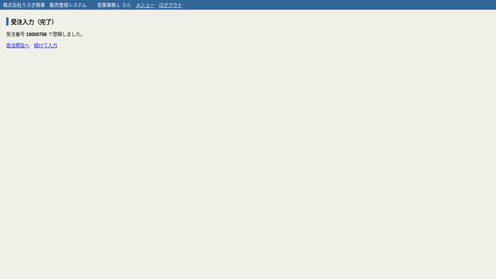
概要（1行）
| 行 | 対象／ルール | 項目／条件 | 内容／結果 | 根拠（静的） | 判定 | 判定の根拠 |
|---|---|---|---|---|---|---|
| 184 | 受注テーブルの最大受注番号に1を足して新しい受注番号を採番する（データなしは10000001）。（JuchuRegistAction.java:36-41） 確認画面から受け取った割引後単価・金額・割引率で受注を1件登録し、抽出フラグは未抽出（0）にする。（JuchuRegistAction.java:42-57） 成功時はコミットして完了画面に受注番号を表示し、例外時はロールバックする。（JuchuRegistAction.java:58-61, juchu_complete.jsp:9） | 実行で確認 | プログラムを実行し、概要の各文を業務ルール検証で確認（同プログラムの業務ルール行を参照） エビデンス |
業務ルール（5行）
| 行 | 対象／ルール | 項目／条件 | 内容／結果 | 根拠（静的） | 判定 | 判定の根拠 |
|---|---|---|---|---|---|---|
| 227 | 採番 | t_juchu が空 | 10000001 | JuchuRegistAction.java:37-41 | 実行で確認 | [WEB-REG-1] 入力: t_juchu を空にして登録 → 期待: 受注番号 10000001 → 実際: 受注番号 10000001（一致） エビデンス |
| 228 | 採番 | データあり | MAX(juchu_no)+1（排他制御なし） | JuchuRegistAction.java:36-41 | 実行で確認 | [WEB-REG-2] 入力: 登録前 MAX=10000757 → 期待: MAX+1＝10000758 → 実際: 受注番号 10000758（一致） エビデンス |
| 229 | 初期値 | 登録時 | flg1=0, wk_x1=空白, ins_ymd=当日, ins_user=ログインユーザ | JuchuRegistAction.java:44,55-56 | 実行で確認 | [WEB-REG-3] 入力: 受注 10000758 の DB 行 → 期待: flg1=0, wk_x1=空白, ins_ymd=20261025, ins_user=user01 → 実際: 0|[]|20261025|user01（一致） ※wk_x1 は CHAR(1) の空白（psql の連結表示では空） エビデンス |
| 230 | トランザクション | 例外 | ロールバックして例外送出 | JuchuRegistAction.java:59-61 | 実行で確認 | [WEB-REG-4] 入力: 備考 61 文字（VARCHAR(60) 超過）で登録 → 期待: 例外 → ロールバック（件数が増えない） → 実際: HTTP 500 件数 758→758（一致） エビデンス |
| 231 | 再計算 | 金額・単価 | サーバ側で再計算しない（hidden の値をそのまま登録） | JuchuRegistAction.java:50-53 | 実行で確認 | [WEB-REG-5] 入力: 確認画面の hidden を tanka=1・uriageKin=1 に書き換えて登録（数量10 単価333） → 期待: サーバ側で再計算せずそのまま登録 → 実際: DB suryo|tanka|uriage_kin = 10|1|1（一致） エビデンス |
入力レコード（23行）
| 行 | 対象／ルール | 項目／条件 | 内容／結果 | 根拠（静的） | 判定 | 判定の根拠 |
|---|---|---|---|---|---|---|
| 186 | 確認画面 hidden（JuchuForm） | 受注日（juchuYmd） | JuchuRegistAction.java:46 | 実行で確認 | 画面操作・SQL ログで確認 エビデンス | |
| 187 | 確認画面 hidden（JuchuForm） | 得意先（tkCd） | JuchuRegistAction.java:47 | 実行で確認 | 画面操作・SQL ログで確認 エビデンス | |
| 188 | 確認画面 hidden（JuchuForm） | 商品（shCd） | JuchuRegistAction.java:48 | 実行で確認 | 画面操作・SQL ログで確認 エビデンス | |
| 189 | 確認画面 hidden（JuchuForm） | 数量（suryo） | int | JuchuRegistAction.java:49 | 実行で確認 | 画面操作・SQL ログで確認 エビデンス |
| 190 | 確認画面 hidden（JuchuForm） | 割引後単価（tanka） | int | JuchuRegistAction.java:50 | 実行で確認 | 画面操作・SQL ログで確認 エビデンス |
| 191 | 確認画面 hidden（JuchuForm） | 受注区分（juchuKbn） | JuchuRegistAction.java:51 | 実行で確認 | 画面操作・SQL ログで確認 エビデンス | |
| 192 | 確認画面 hidden（JuchuForm） | 売上金額（uriageKin） | long | JuchuRegistAction.java:52 | 実行で確認 | 画面操作・SQL ログで確認 エビデンス |
| 193 | 確認画面 hidden（JuchuForm） | 割引率（nebikiRitu） | double | JuchuRegistAction.java:53 | 実行で確認 | 画面操作・SQL ログで確認 エビデンス |
| 194 | 確認画面 hidden（JuchuForm） | 備考（biko） | JuchuRegistAction.java:54 | 実行で確認 | 画面操作・SQL ログで確認 エビデンス | |
| 196 | テーブル t_juchu（web/sql/01_ddl.sql） | 受注番号（juchu_no） | CHAR(8) PK MAX+1 | 01_ddl.sql:37, JuchuRegistAction.java:36-41 | 実行で確認 | 画面操作・SQL ログで確認 エビデンス |
| 197 | テーブル t_juchu（web/sql/01_ddl.sql） | 受注日（juchu_ymd） | CHAR(8) | 01_ddl.sql:38 | 実行で確認 | 画面操作・SQL ログで確認 エビデンス |
| 198 | テーブル t_juchu（web/sql/01_ddl.sql） | 得意先コード（tk_cd） | CHAR(6) | 01_ddl.sql:39 | 実行で確認 | 画面操作・SQL ログで確認 エビデンス |
| 199 | テーブル t_juchu（web/sql/01_ddl.sql） | 商品コード（sh_cd） | CHAR(6) | 01_ddl.sql:40 | 実行で確認 | 画面操作・SQL ログで確認 エビデンス |
| 200 | テーブル t_juchu（web/sql/01_ddl.sql） | 数量（suryo） | NUMERIC(7) | 01_ddl.sql:41 | 実行で確認 | 画面操作・SQL ログで確認 エビデンス |
| 201 | テーブル t_juchu（web/sql/01_ddl.sql） | 単価（tanka） | NUMERIC(9) 割引後 | 01_ddl.sql:42 | 実行で確認 | 画面操作・SQL ログで確認 エビデンス |
| 202 | テーブル t_juchu（web/sql/01_ddl.sql） | 受注区分（juchu_kbn） | CHAR(1) 1/2/3 | 01_ddl.sql:43 | 実行で確認 | 画面操作・SQL ログで確認 エビデンス |
| 203 | テーブル t_juchu（web/sql/01_ddl.sql） | 売上金額（uriage_kin） | NUMERIC(11) 返品マイナス・無償0 | 01_ddl.sql:44 | 実行で確認 | 画面操作・SQL ログで確認 エビデンス |
| 204 | テーブル t_juchu（web/sql/01_ddl.sql） | 値引率（nebiki_ritu） | NUMERIC(3,1) 0/3/5。抽出しない | 01_ddl.sql:45 | 実行で確認 | 画面操作・SQL ログで確認 エビデンス |
| 205 | テーブル t_juchu（web/sql/01_ddl.sql） | 備考（biko） | VARCHAR(60) | 01_ddl.sql:46 | 実行で確認 | 画面操作・SQL ログで確認 エビデンス |
| 206 | テーブル t_juchu（web/sql/01_ddl.sql） | 抽出フラグ（flg1） | CHAR(1) 1:抽出済 | 01_ddl.sql:47, JuchuExtract.java:71 | 実行で確認 | 画面操作・SQL ログで確認 エビデンス |
| 207 | テーブル t_juchu（web/sql/01_ddl.sql） | 予備（wk_x1） | CHAR(1) 常に空白。未使用 | 01_ddl.sql:48, JuchuRegistAction.java:44 | 実行で確認 | 画面操作・SQL ログで確認 エビデンス |
| 208 | テーブル t_juchu（web/sql/01_ddl.sql） | 登録日（ins_ymd） | CHAR(8) | 01_ddl.sql:49 | 実行で確認 | 画面操作・SQL ログで確認 エビデンス |
| 209 | テーブル t_juchu（web/sql/01_ddl.sql） | 登録者（ins_user） | VARCHAR(10) | 01_ddl.sql:50 | 実行で確認 | 画面操作・SQL ログで確認 エビデンス |
出力レコード（15行）
| 行 | 対象／ルール | 項目／条件 | 内容／結果 | 根拠（静的） | 判定 | 判定の根拠 |
|---|---|---|---|---|---|---|
| 211 | テーブル t_juchu（web/sql/01_ddl.sql） | 受注番号（juchu_no） | CHAR(8) PK MAX+1 | 01_ddl.sql:37, JuchuRegistAction.java:36-41 | 実行で確認 | 画面操作・SQL ログで確認 エビデンス |
| 212 | テーブル t_juchu（web/sql/01_ddl.sql） | 受注日（juchu_ymd） | CHAR(8) | 01_ddl.sql:38 | 実行で確認 | 画面操作・SQL ログで確認 エビデンス |
| 213 | テーブル t_juchu（web/sql/01_ddl.sql） | 得意先コード（tk_cd） | CHAR(6) | 01_ddl.sql:39 | 実行で確認 | 画面操作・SQL ログで確認 エビデンス |
| 214 | テーブル t_juchu（web/sql/01_ddl.sql） | 商品コード（sh_cd） | CHAR(6) | 01_ddl.sql:40 | 実行で確認 | 画面操作・SQL ログで確認 エビデンス |
| 215 | テーブル t_juchu（web/sql/01_ddl.sql） | 数量（suryo） | NUMERIC(7) | 01_ddl.sql:41 | 実行で確認 | 画面操作・SQL ログで確認 エビデンス |
| 216 | テーブル t_juchu（web/sql/01_ddl.sql） | 単価（tanka） | NUMERIC(9) 割引後 | 01_ddl.sql:42 | 実行で確認 | 画面操作・SQL ログで確認 エビデンス |
| 217 | テーブル t_juchu（web/sql/01_ddl.sql） | 受注区分（juchu_kbn） | CHAR(1) 1/2/3 | 01_ddl.sql:43 | 実行で確認 | 画面操作・SQL ログで確認 エビデンス |
| 218 | テーブル t_juchu（web/sql/01_ddl.sql） | 売上金額（uriage_kin） | NUMERIC(11) 返品マイナス・無償0 | 01_ddl.sql:44 | 実行で確認 | 画面操作・SQL ログで確認 エビデンス |
| 219 | テーブル t_juchu（web/sql/01_ddl.sql） | 値引率（nebiki_ritu） | NUMERIC(3,1) 0/3/5。抽出しない | 01_ddl.sql:45 | 実行で確認 | 画面操作・SQL ログで確認 エビデンス |
| 220 | テーブル t_juchu（web/sql/01_ddl.sql） | 備考（biko） | VARCHAR(60) | 01_ddl.sql:46 | 実行で確認 | 画面操作・SQL ログで確認 エビデンス |
| 221 | テーブル t_juchu（web/sql/01_ddl.sql） | 抽出フラグ（flg1） | CHAR(1) 1:抽出済 | 01_ddl.sql:47, JuchuExtract.java:71 | 実行で確認 | 画面操作・SQL ログで確認 エビデンス |
| 222 | テーブル t_juchu（web/sql/01_ddl.sql） | 予備（wk_x1） | CHAR(1) 常に空白。未使用 | 01_ddl.sql:48, JuchuRegistAction.java:44 | 実行で確認 | 画面操作・SQL ログで確認 エビデンス |
| 223 | テーブル t_juchu（web/sql/01_ddl.sql） | 登録日（ins_ymd） | CHAR(8) | 01_ddl.sql:49 | 実行で確認 | 画面操作・SQL ログで確認 エビデンス |
| 224 | テーブル t_juchu（web/sql/01_ddl.sql） | 登録者（ins_user） | VARCHAR(10) | 01_ddl.sql:50 | 実行で確認 | 画面操作・SQL ログで確認 エビデンス |
| 226 | 完了画面 | 受注番号（juchuNo） | 受注照会へのリンク付き | JuchuRegistAction.java:66, juchu_complete.jsp:9 | 実行で確認 | 画面操作・SQL ログで確認 エビデンス |
入力例（2行）
| 行 | 対象／ルール | 項目／条件 | 内容／結果 | 根拠（静的） | 判定 | 判定の根拠 |
|---|---|---|---|---|---|---|
| 185 | 確認画面 hidden（JuchuForm） | 20241202 / 100024 / 200019 / 120 / 2470 / 1 / 296400 / 5.0 | 02_data.sql:841 | 実行で確認 | 実際: 同じ処理を実行: MAX+1 採番、flg1=0・ins_ymd=当日・ins_user=ログインユーザで INSERT エビデンス | |
| 195 | 受注テーブル（MAX） | MAX(juchu_no)=10000752 の場合 | 02_data.sql:840 | 実行で確認 | 実際: 同じ処理を実行: MAX+1 採番、flg1=0・ins_ymd=当日・ins_user=ログインユーザで INSERT エビデンス |
出力例（2行）
| 行 | 対象／ルール | 項目／条件 | 内容／結果 | 根拠（静的） | 判定 | 判定の根拠 |
|---|---|---|---|---|---|---|
| 210 | 受注テーブル（INSERT） | ('10000753','20241202','100024','200019',120,2470,'1',296400,5.0,'','0',' ','20241202','user01') | 02_data.sql:841 | 実行で確認 | 実際: 同じ処理を実行: MAX+1 採番、flg1=0・ins_ymd=当日・ins_user=ログインユーザで INSERT エビデンス | |
| 225 | 完了画面 | 10000753 | 実行で確認 | 実際: 同じ処理を実行: MAX+1 採番、flg1=0・ins_ymd=当日・ins_user=ログインユーザで INSERT エビデンス |
P09 受注照会（JuchuInquiryAction）
実行で確認 実行できた（画面は docker compose、COBOL は GnuCOBOL 3.1.2 でコンパイルして実行） エビデンス
画面のスクリーンショット
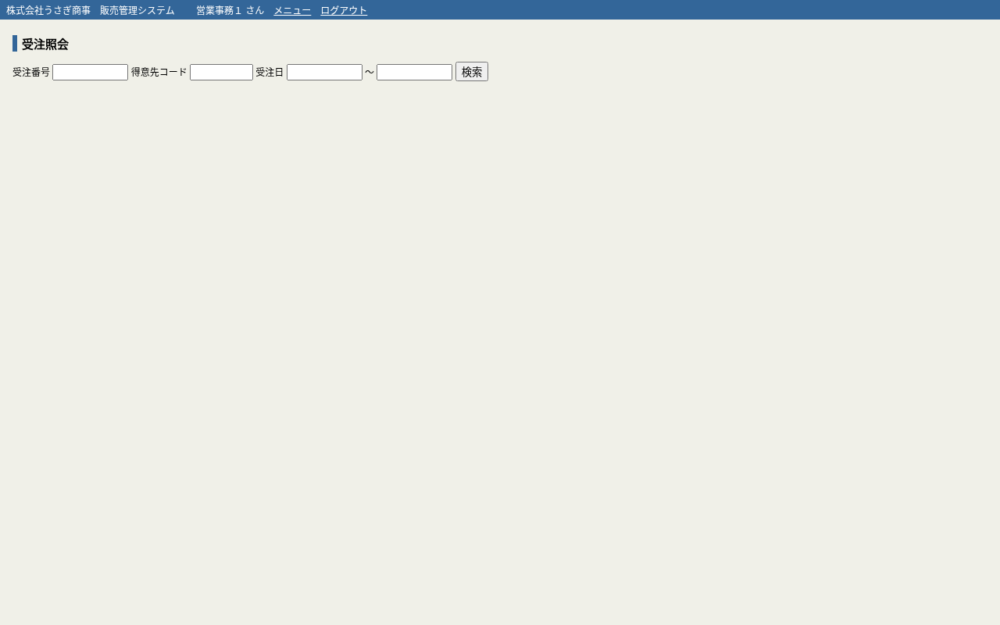
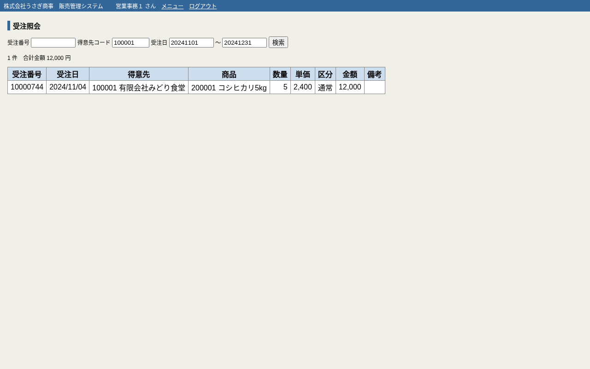
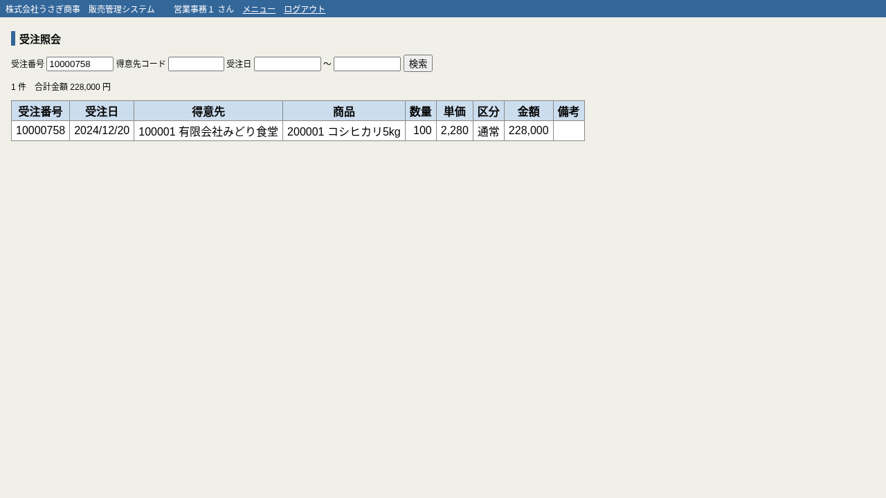
概要（1行）
| 行 | 対象／ルール | 項目／条件 | 内容／結果 | 根拠（静的） | 判定 | 判定の根拠 |
|---|---|---|---|---|---|---|
| 232 | 受注番号または得意先コードを必須として、受注日の範囲（以上〜以下）で受注を検索する。（JuchuInquiryAction.java:30-46） 受注番号の降順で最大100件を表示し、表示した最大100件分の売上金額の合計を出す（101件目以降は合計に含まれない）。（JuchuInquiryAction.java:47,68,75） 得意先名・商品名は JSP の中で1行ごとに DB を引いて表示する。（juchu_inquiry.jsp:20-37） | 実行で確認 | 受注105件の得意先で「100 件 合計金額 33,300 円」（333円×100件）だった（修正済み） エビデンス |
業務ルール（3行）
| 行 | 対象／ルール | 項目／条件 | 内容／結果 | 根拠（静的） | 判定 | 判定の根拠 |
|---|---|---|---|---|---|---|
| 256 | 必須 | 得意先コードも番号も空 | 「得意先コードか番号を入力してください」 | JuchuInquiryAction.java:30-32 | 実行で確認 | [WEB-JINQ-1] 入力: 得意先コード・番号とも空で検索 → 期待: 「得意先コードか番号を入力してください」 → 実際: 得意先コードか番号を入力してください（一致） エビデンス |
| 257 | 期間 | toYmd | juchu_ymd <= toYmd（含む） | JuchuInquiryAction.java:45 | 実行で確認 | [WEB-JINQ-2] 入力: 得意先 100002、fromYmd=toYmd=20240920 → 期待: その日の受注 1 件を表示（toYmd を含む） → 実際: 1 件（一致） エビデンス |
| 258 | 件数上限 | 常に | 受注番号降順 LIMIT 100 | JuchuInquiryAction.java:47 | 実行で確認 | [WEB-JINQ-3] 入力: Z00001 の受注 105 件＋α → 期待: 受注番号降順で 100 件 → 実際: 100 件、先頭 90000105、末尾 90000006（一致） エビデンス |
入力レコード（18行）
| 行 | 対象／ルール | 項目／条件 | 内容／結果 | 根拠（静的） | 判定 | 判定の根拠 |
|---|---|---|---|---|---|---|
| 234 | 画面入力（juchu_inquiry.jsp） | 受注番号（no） | 文字 完全一致 | JuchuInquiryAction.java:24,36 | 実行で確認 | 画面操作・SQL ログで確認 エビデンス |
| 235 | 画面入力（juchu_inquiry.jsp） | 得意先コード（tkCd） | 文字 完全一致 | JuchuInquiryAction.java:23,39 | 実行で確認 | 画面操作・SQL ログで確認 エビデンス |
| 236 | 画面入力（juchu_inquiry.jsp） | 受注日From（fromYmd） | YYYYMMDD 以上 | JuchuInquiryAction.java:25,42 | 実行で確認 | 画面操作・SQL ログで確認 エビデンス |
| 237 | 画面入力（juchu_inquiry.jsp） | 受注日To（toYmd） | YYYYMMDD 以下 | JuchuInquiryAction.java:26,45 | 実行で確認 | 画面操作・SQL ログで確認 エビデンス |
| 239 | テーブル t_juchu（web/sql/01_ddl.sql） | 受注番号（juchu_no） | CHAR(8) PK MAX+1 | 01_ddl.sql:37, JuchuRegistAction.java:36-41 | 実行で確認 | 画面操作・SQL ログで確認 エビデンス |
| 240 | テーブル t_juchu（web/sql/01_ddl.sql） | 受注日（juchu_ymd） | CHAR(8) | 01_ddl.sql:38 | 実行で確認 | 画面操作・SQL ログで確認 エビデンス |
| 241 | テーブル t_juchu（web/sql/01_ddl.sql） | 得意先コード（tk_cd） | CHAR(6) | 01_ddl.sql:39 | 実行で確認 | 画面操作・SQL ログで確認 エビデンス |
| 242 | テーブル t_juchu（web/sql/01_ddl.sql） | 商品コード（sh_cd） | CHAR(6) | 01_ddl.sql:40 | 実行で確認 | 画面操作・SQL ログで確認 エビデンス |
| 243 | テーブル t_juchu（web/sql/01_ddl.sql） | 数量（suryo） | NUMERIC(7) | 01_ddl.sql:41 | 実行で確認 | 画面操作・SQL ログで確認 エビデンス |
| 244 | テーブル t_juchu（web/sql/01_ddl.sql） | 単価（tanka） | NUMERIC(9) 割引後 | 01_ddl.sql:42 | 実行で確認 | 画面操作・SQL ログで確認 エビデンス |
| 245 | テーブル t_juchu（web/sql/01_ddl.sql） | 受注区分（juchu_kbn） | CHAR(1) 1/2/3 | 01_ddl.sql:43 | 実行で確認 | 画面操作・SQL ログで確認 エビデンス |
| 246 | テーブル t_juchu（web/sql/01_ddl.sql） | 売上金額（uriage_kin） | NUMERIC(11) 返品マイナス・無償0 | 01_ddl.sql:44 | 実行で確認 | 画面操作・SQL ログで確認 エビデンス |
| 247 | テーブル t_juchu（web/sql/01_ddl.sql） | 値引率（nebiki_ritu） | NUMERIC(3,1) 0/3/5。抽出しない | 01_ddl.sql:45 | 実行で確認 | 画面操作・SQL ログで確認 エビデンス |
| 248 | テーブル t_juchu（web/sql/01_ddl.sql） | 備考（biko） | VARCHAR(60) | 01_ddl.sql:46 | 実行で確認 | 画面操作・SQL ログで確認 エビデンス |
| 249 | テーブル t_juchu（web/sql/01_ddl.sql） | 抽出フラグ（flg1） | CHAR(1) 1:抽出済 | 01_ddl.sql:47, JuchuExtract.java:71 | 実行で確認 | 画面操作・SQL ログで確認 エビデンス |
| 250 | テーブル t_juchu（web/sql/01_ddl.sql） | 予備（wk_x1） | CHAR(1) 常に空白。未使用 | 01_ddl.sql:48, JuchuRegistAction.java:44 | 実行で確認 | 画面操作・SQL ログで確認 エビデンス |
| 251 | テーブル t_juchu（web/sql/01_ddl.sql） | 登録日（ins_ymd） | CHAR(8) | 01_ddl.sql:49 | 実行で確認 | 画面操作・SQL ログで確認 エビデンス |
| 252 | テーブル t_juchu（web/sql/01_ddl.sql） | 登録者（ins_user） | VARCHAR(10) | 01_ddl.sql:50 | 実行で確認 | 画面操作・SQL ログで確認 エビデンス |
出力レコード（2行）
| 行 | 対象／ルール | 項目／条件 | 内容／結果 | 根拠（静的） | 判定 | 判定の根拠 |
|---|---|---|---|---|---|---|
| 254 | 一覧（list, total） | 件数・合計金額（total） | long uriage_kin の合計 | JuchuInquiryAction.java:68,75, juchu_inquiry.jsp:24 | 実行で確認 | 画面操作・SQL ログで確認 エビデンス |
| 255 | 一覧（list, total） | 明細（受注番号/受注日/得意先/商品/数量/単価/区分/金額） | juchu_inquiry.jsp:26 | 実行で確認 | 画面操作・SQL ログで確認 エビデンス |
入力例（2行）
| 行 | 対象／ルール | 項目／条件 | 内容／結果 | 根拠（静的） | 判定 | 判定の根拠 |
|---|---|---|---|---|---|---|
| 233 | 画面入力（juchu_inquiry.jsp） | no=10000751, search=1 | juchu_complete.jsp:9 | 実行で確認 | 実際: 1 件 合計金額 0 円 ／ 10000751 2024/11/25 100012 ベーカリーこむぎ 200025 料理酒1.8L 1 480 無償 0 試供品 エビデンス | |
| 238 | 受注・得意先・商品 | 10000751 20241125 100012 200025 1 480 区分3 金額0 | 02_data.sql:839 | 実行で確認 | 実際: 1 件 合計金額 0 円 ／ 10000751 2024/11/25 100012 ベーカリーこむぎ 200025 料理酒1.8L 1 480 無償 0 試供品 エビデンス |
出力例（1行）
| 行 | 対象／ルール | 項目／条件 | 内容／結果 | 根拠（静的） | 判定 | 判定の根拠 |
|---|---|---|---|---|---|---|
| 253 | 一覧（list, total） | 1件 合計0円 10000751 ベーカリーこむぎ 料理酒1.8L 無償サンプル | 02_data.sql:839 | 実行で確認 | 実際: 1 件 合計金額 0 円 ／ 10000751 2024/11/25 100012 ベーカリーこむぎ 200025 料理酒1.8L 1 480 無償 0 試供品 エビデンス |
P10 請求照会（SeikyuInquiryAction）
実行で確認 実行できた（画面は docker compose、COBOL は GnuCOBOL 3.1.2 でコンパイルして実行） エビデンス
画面のスクリーンショット
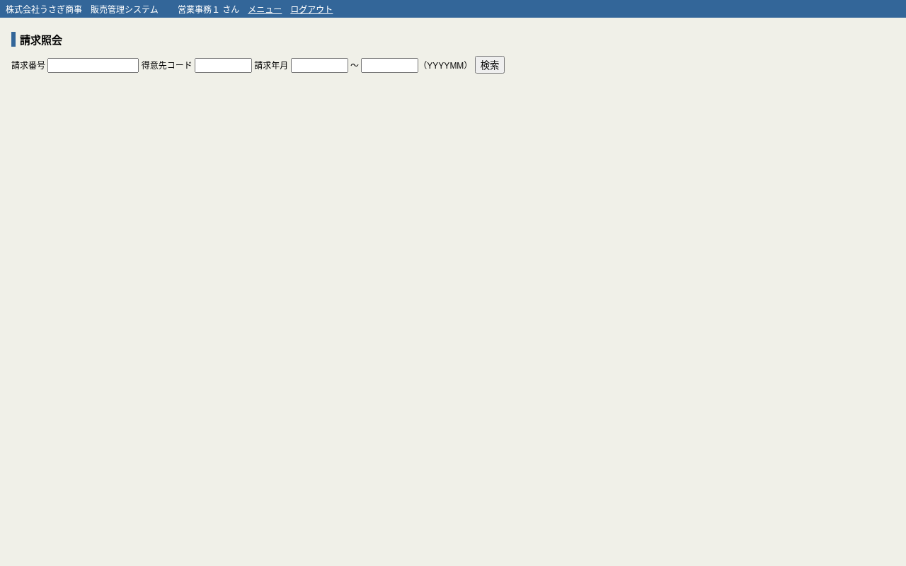
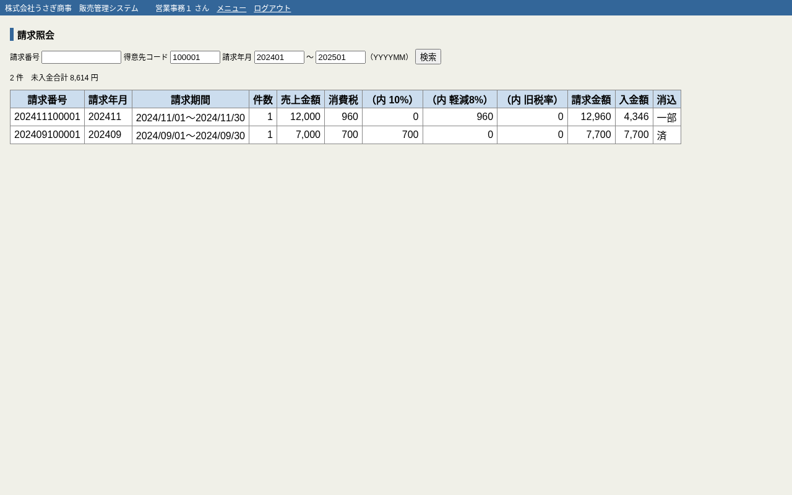
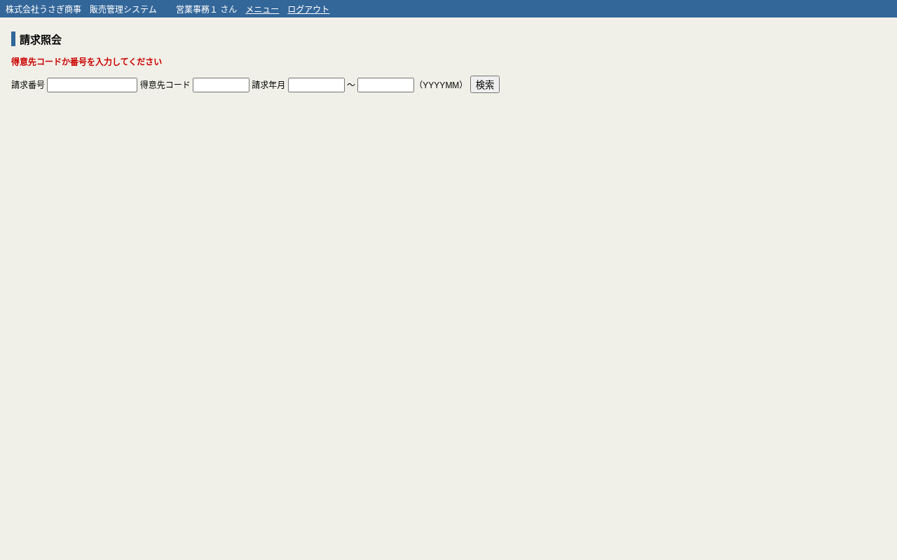
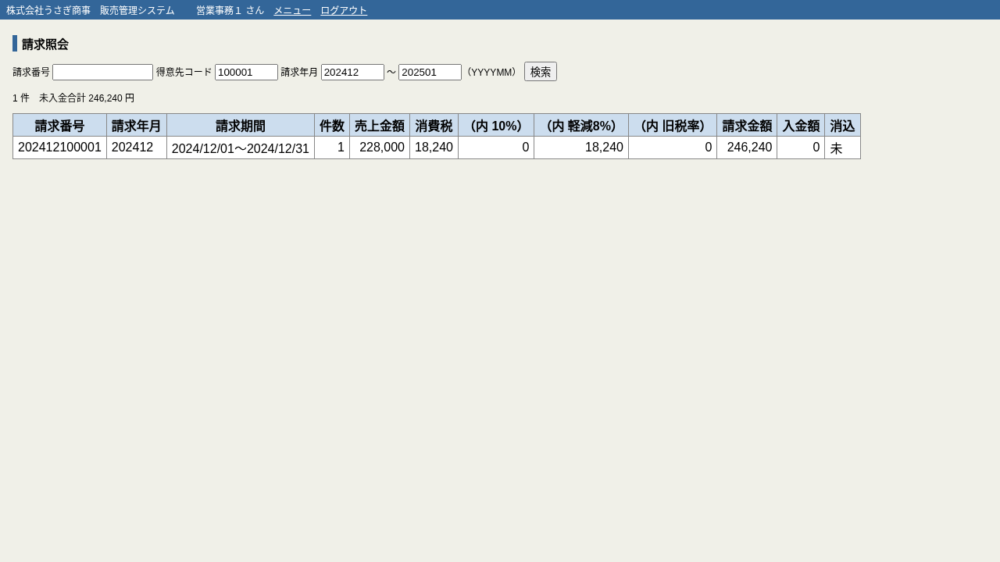
概要（1行）
| 行 | 対象／ルール | 項目／条件 | 内容／結果 | 根拠（静的） | 判定 | 判定の根拠 |
|---|---|---|---|---|---|---|
| 259 | 請求番号または得意先コードを必須として、請求年月の範囲で取込済みの請求（t_seikyu）を検索する。（SeikyuInquiryAction.java:30-46） 請求年月の降順・請求番号順で最大100件を表示し、表示した最大100件分の未入金額（請求−入金）の合計を出す（101件目以降は合計に含まれない）。（SeikyuInquiryAction.java:47,73,80） 請求年月の終了側は「未満」で比較するため、入力した終了年月は含まれない。（SeikyuInquiryAction.java:45） | 実行で確認 | 請求105件の得意先で、合計は表示した100件分だけだった（修正済み） エビデンス |
業務ルール（4行）
| 行 | 対象／ルール | 項目／条件 | 内容／結果 | 根拠（静的） | 判定 | 判定の根拠 |
|---|---|---|---|---|---|---|
| 287 | 必須 | 得意先コードも番号も空 | 「得意先コードか番号を入力してください」 | SeikyuInquiryAction.java:30-32 | 実行で確認 | [WEB-SINQ-1] 入力: 得意先コード・番号とも空 → 期待: 「得意先コードか番号を入力してください」 → 実際: 得意先コードか番号を入力してください（一致） エビデンス |
| 288 | 期間 | toYm | seikyu_ym < toYm（含まない） | SeikyuInquiryAction.java:45 | 実行で確認 | [WEB-SINQ-2] 入力: 得意先 100008、202412〜202412／202412〜202501 → 期待: toYm は含まない（0 件／1 件） → 実際: 0 件 ／ 1 件（一致） ※画面で「2024/12〜2024/12」と入れると 2024/12 が出ない エビデンス |
| 289 | 件数上限 | 常に | LIMIT 100 | SeikyuInquiryAction.java:47 | 実行で確認 | [WEB-SINQ-3] 入力: 得意先 Z00001（請求 105 件） → 期待: 100 件まで → 実際: 100 件（一致） エビデンス |
| 290 | 合計 | 常に | 未入金額の合計 | SeikyuInquiryAction.java:73 | 実行で確認 | [WEB-SINQ-4] 入力: 同上 → 期待: 未入金合計＝表示行の (請求−入金) の合計 6,000 → 実際: 画面: 6,000 円（一致） ※合計は表示した100件分だけ（101件目以降は含まない） エビデンス |
入力レコード（22行）
| 行 | 対象／ルール | 項目／条件 | 内容／結果 | 根拠（静的） | 判定 | 判定の根拠 |
|---|---|---|---|---|---|---|
| 261 | 画面入力（seikyu_inquiry.jsp） | 請求番号（no） | 文字 完全一致 | seikyu_inquiry.jsp:21, SeikyuInquiryAction.java:36 | 実行で確認 | 画面操作・SQL ログで確認 エビデンス |
| 262 | 画面入力（seikyu_inquiry.jsp） | 得意先コード（tkCd） | 文字 完全一致 | seikyu_inquiry.jsp:22, SeikyuInquiryAction.java:39 | 実行で確認 | 画面操作・SQL ログで確認 エビデンス |
| 263 | 画面入力（seikyu_inquiry.jsp） | 請求年月From（fromYm） | YYYYMM 以上 | seikyu_inquiry.jsp:23, SeikyuInquiryAction.java:42 | 実行で確認 | 画面操作・SQL ログで確認 エビデンス |
| 264 | 画面入力（seikyu_inquiry.jsp） | 請求年月To（toYm） | YYYYMM 未満 | seikyu_inquiry.jsp:24, SeikyuInquiryAction.java:45 | 実行で確認 | 画面操作・SQL ログで確認 エビデンス |
| 266 | テーブル t_seikyu（web/sql/01_ddl.sql） | 請求番号（seikyu_no） | CHAR(12) PK | 01_ddl.sql:54 | 実行で確認 | 画面操作・SQL ログで確認 エビデンス |
| 267 | テーブル t_seikyu（web/sql/01_ddl.sql） | 得意先コード（tk_cd） | CHAR(6) | 01_ddl.sql:55 | 実行で確認 | 画面操作・SQL ログで確認 エビデンス |
| 268 | テーブル t_seikyu（web/sql/01_ddl.sql） | 請求年月（seikyu_ym） | CHAR(6) | 01_ddl.sql:56 | 実行で確認 | 画面操作・SQL ログで確認 エビデンス |
| 269 | テーブル t_seikyu（web/sql/01_ddl.sql） | 請求期間開始（from_ymd） | CHAR(8) | 01_ddl.sql:57 | 実行で確認 | 画面操作・SQL ログで確認 エビデンス |
| 270 | テーブル t_seikyu（web/sql/01_ddl.sql） | 請求期間終了（to_ymd） | CHAR(8) | 01_ddl.sql:58 | 実行で確認 | 画面操作・SQL ログで確認 エビデンス |
| 271 | テーブル t_seikyu（web/sql/01_ddl.sql） | 件数（kensu） | NUMERIC(5) | 01_ddl.sql:59 | 実行で確認 | 画面操作・SQL ログで確認 エビデンス |
| 272 | テーブル t_seikyu（web/sql/01_ddl.sql） | 売上金額（uriage_kin） | NUMERIC(11) | 01_ddl.sql:60 | 実行で確認 | 画面操作・SQL ログで確認 エビデンス |
| 273 | テーブル t_seikyu（web/sql/01_ddl.sql） | 消費税（zei_kin） | NUMERIC(11) | 01_ddl.sql:61 | 実行で確認 | 画面操作・SQL ログで確認 エビデンス |
| 274 | テーブル t_seikyu（web/sql/01_ddl.sql） | 請求金額（seikyu_kin） | NUMERIC(11) | 01_ddl.sql:62 | 実行で確認 | 画面操作・SQL ログで確認 エビデンス |
| 275 | テーブル t_seikyu（web/sql/01_ddl.sql） | 入金額（nyukin_kin） | NUMERIC(11) | 01_ddl.sql:63 | 実行で確認 | 画面操作・SQL ログで確認 エビデンス |
| 276 | テーブル t_seikyu（web/sql/01_ddl.sql） | 消込区分（kesi_kbn） | CHAR(1) 0未 1一部 2済 | 01_ddl.sql:64 | 実行で確認 | 画面操作・SQL ログで確認 エビデンス |
| 277 | テーブル t_seikyu（web/sql/01_ddl.sql） | 10%対象（zei10_taisyo） | NUMERIC(11) | 01_ddl.sql:65 | 実行で確認 | 画面操作・SQL ログで確認 エビデンス |
| 278 | テーブル t_seikyu（web/sql/01_ddl.sql） | 10%税（zei10_kin） | NUMERIC(11) | 01_ddl.sql:66 | 実行で確認 | 画面操作・SQL ログで確認 エビデンス |
| 279 | テーブル t_seikyu（web/sql/01_ddl.sql） | 軽減8%対象（zei8k_taisyo） | NUMERIC(11) | 01_ddl.sql:67 | 実行で確認 | 画面操作・SQL ログで確認 エビデンス |
| 280 | テーブル t_seikyu（web/sql/01_ddl.sql） | 軽減8%税（zei8k_kin） | NUMERIC(11) | 01_ddl.sql:68 | 実行で確認 | 画面操作・SQL ログで確認 エビデンス |
| 281 | テーブル t_seikyu（web/sql/01_ddl.sql） | 旧税率対象（zeisonota_taisyo） | NUMERIC(11) | 01_ddl.sql:69 | 実行で確認 | 画面操作・SQL ログで確認 エビデンス |
| 282 | テーブル t_seikyu（web/sql/01_ddl.sql） | 旧税率税（zeisonota_kin） | NUMERIC(11) | 01_ddl.sql:70 | 実行で確認 | 画面操作・SQL ログで確認 エビデンス |
| 283 | テーブル t_seikyu（web/sql/01_ddl.sql） | 取込日（torikomi_ymd） | CHAR(8) | 01_ddl.sql:71, SeikyuImport.java:16 | 実行で確認 | 画面操作・SQL ログで確認 エビデンス |
出力レコード（2行）
| 行 | 対象／ルール | 項目／条件 | 内容／結果 | 根拠（静的） | 判定 | 判定の根拠 |
|---|---|---|---|---|---|---|
| 285 | 一覧（list, total） | 明細（請求番号/年月/期間/売上/税/請求/入金/消込） | seikyu_inquiry.jsp:30-43 | 実行で確認 | 画面操作・SQL ログで確認 エビデンス | |
| 286 | 一覧（list, total） | 未入金合計（total） | long Σ(seikyu_kin−nyukin_kin) | SeikyuInquiryAction.java:73 | 実行で確認 | 画面操作・SQL ログで確認 エビデンス |
入力例（2行）
| 行 | 対象／ルール | 項目／条件 | 内容／結果 | 根拠（静的） | 判定 | 判定の根拠 |
|---|---|---|---|---|---|---|
| 260 | 画面入力（seikyu_inquiry.jsp） | tkCd=100012, fromYm=202412, toYm=202501 | 実行で確認 | 実際: 202412100012 202412 2024/11/21～2024/12/20 1 480 48 48 0 0 528 0 未 エビデンス | ||
| 265 | 請求テーブル | 202412100012 請求528円 入金0 消込区分0（夜間バッチ実行後の t_seikyu。実行で確認） | 請求書_202412.txt:33-45 | 実行で確認 | 実際: 夜間バッチ取込後の t_seikyu: 202412100012|528|0|0 エビデンス |
出力例（1行）
| 行 | 対象／ルール | 項目／条件 | 内容／結果 | 根拠（静的） | 判定 | 判定の根拠 |
|---|---|---|---|---|---|---|
| 284 | 一覧（list, total） | 1件 202412100012 528円、入金0円・消込「未」、未入金合計 528円（実行で確認） | 実行で確認 | 実際: 1 件 未入金合計 528 円 ／ 202412100012 202412 2024/11/21～2024/12/20 1 480 48 48 0 0 528 0 未 エビデンス |
P11 受注抽出（Web→夜間バッチ連携ファイル作成）（JuchuExtract）
実行で確認 実行できた（画面は docker compose、COBOL は GnuCOBOL 3.1.2 でコンパイルして実行） エビデンス
概要（1行）
| 行 | 対象／ルール | 項目／条件 | 内容／結果 | 根拠（静的） | 判定 | 判定の根拠 |
|---|---|---|---|---|---|---|
| 291 | 得意先マスタ・商品マスタ・受注テーブルの全件を、夜間バッチ用の固定長ファイル（TOKUI.DAT 100バイト、SHOHIN.DAT 80バイト、JUCHU.DAT 80バイト）に書き出す。（JuchuExtract.java:19-70） 受注は抽出フラグに関係なく全件を出力する。（JuchuExtract.java:52-53） 最後に未抽出（flg1=0）の受注を抽出済み（1）に更新する。（JuchuExtract.java:71） 文字項目は UTF-8 で指定バイト数に切り詰め、数値は0詰め、金額は符号1桁＋11桁にする。（JuchuExtract.java:63-64,77-91） | 実行で確認 | プログラムを実行し、概要の各文を業務ルール検証で確認（同プログラムの業務ルール行を参照） エビデンス |
業務ルール（6行）
| 行 | 対象／ルール | 項目／条件 | 内容／結果 | 根拠（静的） | 判定 | 判定の根拠 |
|---|---|---|---|---|---|---|
| 374 | 抽出対象 | 受注 | 全件（flg1 の値は問わない） | JuchuExtract.java:52-53 | 実行で確認 | [JX-1] 入力: 受注 758 件（うち flg1=1 を約300件にした） → 期待: 全件を JUCHU.DAT に出力 → 実際: JuchuExtract TOKUI=30 SHOHIN=50 JUCHU=758 ／ JUCHU.DAT 758 行（一致） エビデンス |
| 375 | 抽出済み更新 | flg1=0 | 1 に更新 | JuchuExtract.java:71 | 実行で確認 | [JX-2] 入力: flg1=0 の受注 459 件 → 期待: すべて 1 に更新 → 実際: 事後の flg1=0 件数: 0（一致） エビデンス |
| 376 | 文字項目 | UTF-8 のバイト数が桁を超える | マルチバイトの途中で切らないよう手前で切詰め、残りは空白 | JuchuExtract.java:81-84 | 実行で確認 | [JX-3] 入力: 得意先名 14文字の漢字かな（42バイト）／英字41文字 → 期待: 13文字（39バイト）＋空白1、英字は40文字で切る → 実際: 'あいうえおかきくけこさしす ' ／ 'ABCDEFGHIJKLMNOPQRSTUVWXYZabcdefghijklmn'（一致） エビデンス |
| 377 | 金額符号 | uriage_kin<0 | "-"＋絶対値11桁、それ以外は"+" | JuchuExtract.java:62-64 | 実行で確認 | [JX-4] 入力: 受注 99999999 uriage_kin=−12345 → 期待: "-"＋00000012345 → 実際: -00000012345（一致） エビデンス |
| 378 | レコード区切り | 各行 | LF 改行を付加 | JuchuExtract.java:31,45,66 | 実行で確認 | [JX-5] 入力: 出力ファイル → 期待: 各レコードの後に LF（TOKUI 101・SHOHIN/JUCHU 81 バイト周期） → 実際: TOKUI 3030 バイト／30 行、CR なし=True（一致） エビデンス |
| 379 | エラー | DB・ファイル例外 | main から送出（ロールバック処理なし） | JuchuExtract.java:13 | 実行で確認 | [JX-6] 入力: 出力先 /nonexistent → 期待: 例外を main から送出（終了コード≠0） → 実際: RC=1 Exception in thread "main" java.io.FileNotFoundException: /nonexistent/TOKUI.DAT (No such file or directory) ／ flg1 は 0 のまま（一致） エビデンス |
入力レコード（38行）
| 行 | 対象／ルール | 項目／条件 | 内容／結果 | 根拠（静的） | 判定 | 判定の根拠 |
|---|---|---|---|---|---|---|
| 293 | テーブル m_tokui（web/sql/01_ddl.sql） | 得意先コード（tk_cd） | CHAR(6) PK | 01_ddl.sql:10 | 実行で確認 | 出力ファイル・テーブルをバイト位置で確認 エビデンス |
| 294 | テーブル m_tokui（web/sql/01_ddl.sql） | 得意先名（tk_nm） | VARCHAR(60) | 01_ddl.sql:11 | 実行で確認 | 出力ファイル・テーブルをバイト位置で確認 エビデンス |
| 295 | テーブル m_tokui（web/sql/01_ddl.sql） | 得意先カナ（tk_kana） | VARCHAR(60) 検索のみ | 01_ddl.sql:12, TokuiSearchAction.java:34 | 実行で確認 | 出力ファイル・テーブルをバイト位置で確認 エビデンス |
| 296 | テーブル m_tokui（web/sql/01_ddl.sql） | 郵便番号（yubin） | CHAR(8) 未使用 | 01_ddl.sql:13 | 実行で確認 | 出力ファイル・テーブルをバイト位置で確認 エビデンス |
| 297 | テーブル m_tokui（web/sql/01_ddl.sql） | 住所（adr） | VARCHAR(100) 未使用 | 01_ddl.sql:14 | 実行で確認 | 出力ファイル・テーブルをバイト位置で確認 エビデンス |
| 298 | テーブル m_tokui（web/sql/01_ddl.sql） | 電話番号（tel） | VARCHAR(15) | 01_ddl.sql:15 | 実行で確認 | 出力ファイル・テーブルをバイト位置で確認 エビデンス |
| 299 | テーブル m_tokui（web/sql/01_ddl.sql） | 締日区分（sime_kbn） | CHAR(2) 15/20/99 | 01_ddl.sql:16 | 実行で確認 | 出力ファイル・テーブルをバイト位置で確認 エビデンス |
| 300 | テーブル m_tokui（web/sql/01_ddl.sql） | 端数区分（hasu_kbn） | CHAR(1) 1:切捨て 2:四捨五入 3:切上げ | 01_ddl.sql:17, USB110.cbl:73-84 | 実行で確認 | 出力ファイル・テーブルをバイト位置で確認 エビデンス |
| 301 | テーブル m_tokui（web/sql/01_ddl.sql） | 回収月（kaisyu_m） | CHAR(1) 0当月 1翌月 2翌々月 | 01_ddl.sql:18, TokuiSearchAction.java:68 | 実行で確認 | 出力ファイル・テーブルをバイト位置で確認 エビデンス |
| 302 | テーブル m_tokui（web/sql/01_ddl.sql） | 回収日（kaisyu_d） | CHAR(2) 31:末日 | 01_ddl.sql:19, TokuiSearchAction.java:69 | 実行で確認 | 出力ファイル・テーブルをバイト位置で確認 エビデンス |
| 303 | テーブル m_tokui（web/sql/01_ddl.sql） | 与信限度額（gendo） | NUMERIC(11) チェック処理なし | 01_ddl.sql:20 | 実行で確認 | 出力ファイル・テーブルをバイト位置で確認 エビデンス |
| 304 | テーブル m_tokui（web/sql/01_ddl.sql） | 営業担当（a4） | CHAR(4) 担当者コード | 01_ddl.sql:21, TokuiEditAction.java:38 | 実行で確認 | 出力ファイル・テーブルをバイト位置で確認 エビデンス |
| 305 | テーブル m_tokui（web/sql/01_ddl.sql） | 取引停止フラグ（del_flg） | CHAR(1) 1:取引停止 | 01_ddl.sql:22, JuchuConfirmAction.java:50 | 実行で確認 | 出力ファイル・テーブルをバイト位置で確認 エビデンス |
| 306 | テーブル m_tokui（web/sql/01_ddl.sql） | 登録日（ins_ymd） | CHAR(8) | 01_ddl.sql:23 | 実行で確認 | 出力ファイル・テーブルをバイト位置で確認 エビデンス |
| 307 | テーブル m_tokui（web/sql/01_ddl.sql） | 更新日（upd_ymd） | CHAR(8) | 01_ddl.sql:24 | 実行で確認 | 出力ファイル・テーブルをバイト位置で確認 エビデンス |
| 309 | テーブル m_shohin（web/sql/01_ddl.sql） | 商品コード（sh_cd） | CHAR(6) PK | 01_ddl.sql:27 | 実行で確認 | 出力ファイル・テーブルをバイト位置で確認 エビデンス |
| 310 | テーブル m_shohin（web/sql/01_ddl.sql） | 商品名（sh_nm） | VARCHAR(60) | 01_ddl.sql:28 | 実行で確認 | 出力ファイル・テーブルをバイト位置で確認 エビデンス |
| 311 | テーブル m_shohin（web/sql/01_ddl.sql） | 分類（bunrui） | CHAR(2) 未使用 | 01_ddl.sql:29 | 実行で確認 | 出力ファイル・テーブルをバイト位置で確認 エビデンス |
| 312 | テーブル m_shohin（web/sql/01_ddl.sql） | 税区分（zei_kbn） | CHAR(1) 1:軽減税率対象 | 01_ddl.sql:30 | 実行で確認 | 出力ファイル・テーブルをバイト位置で確認 エビデンス |
| 313 | テーブル m_shohin（web/sql/01_ddl.sql） | 標準単価（tanka） | NUMERIC(9) | 01_ddl.sql:31 | 実行で確認 | 出力ファイル・テーブルをバイト位置で確認 エビデンス |
| 314 | テーブル m_shohin（web/sql/01_ddl.sql） | 単位（tani） | VARCHAR(6) 未使用 | 01_ddl.sql:32 | 実行で確認 | 出力ファイル・テーブルをバイト位置で確認 エビデンス |
| 315 | テーブル m_shohin（web/sql/01_ddl.sql） | 在庫数（zaiko） | NUMERIC(7) 未使用（引当なし） | 01_ddl.sql:33 | 実行で確認 | 出力ファイル・テーブルをバイト位置で確認 エビデンス |
| 316 | テーブル m_shohin（web/sql/01_ddl.sql） | 更新日（upd_ymd） | CHAR(8) | 01_ddl.sql:34 | 実行で確認 | 出力ファイル・テーブルをバイト位置で確認 エビデンス |
| 318 | テーブル t_juchu（web/sql/01_ddl.sql） | 受注番号（juchu_no） | CHAR(8) PK MAX+1 | 01_ddl.sql:37, JuchuRegistAction.java:36-41 | 実行で確認 | 出力ファイル・テーブルをバイト位置で確認 エビデンス |
| 319 | テーブル t_juchu（web/sql/01_ddl.sql） | 受注日（juchu_ymd） | CHAR(8) | 01_ddl.sql:38 | 実行で確認 | 出力ファイル・テーブルをバイト位置で確認 エビデンス |
| 320 | テーブル t_juchu（web/sql/01_ddl.sql） | 得意先コード（tk_cd） | CHAR(6) | 01_ddl.sql:39 | 実行で確認 | 出力ファイル・テーブルをバイト位置で確認 エビデンス |
| 321 | テーブル t_juchu（web/sql/01_ddl.sql） | 商品コード（sh_cd） | CHAR(6) | 01_ddl.sql:40 | 実行で確認 | 出力ファイル・テーブルをバイト位置で確認 エビデンス |
| 322 | テーブル t_juchu（web/sql/01_ddl.sql） | 数量（suryo） | NUMERIC(7) | 01_ddl.sql:41 | 実行で確認 | 出力ファイル・テーブルをバイト位置で確認 エビデンス |
| 323 | テーブル t_juchu（web/sql/01_ddl.sql） | 単価（tanka） | NUMERIC(9) 割引後 | 01_ddl.sql:42 | 実行で確認 | 出力ファイル・テーブルをバイト位置で確認 エビデンス |
| 324 | テーブル t_juchu（web/sql/01_ddl.sql） | 受注区分（juchu_kbn） | CHAR(1) 1/2/3 | 01_ddl.sql:43 | 実行で確認 | 出力ファイル・テーブルをバイト位置で確認 エビデンス |
| 325 | テーブル t_juchu（web/sql/01_ddl.sql） | 売上金額（uriage_kin） | NUMERIC(11) 返品マイナス・無償0 | 01_ddl.sql:44 | 実行で確認 | 出力ファイル・テーブルをバイト位置で確認 エビデンス |
| 326 | テーブル t_juchu（web/sql/01_ddl.sql） | 値引率（nebiki_ritu） | NUMERIC(3,1) 0/3/5。抽出しない | 01_ddl.sql:45 | 実行で確認 | 出力ファイル・テーブルをバイト位置で確認 エビデンス |
| 327 | テーブル t_juchu（web/sql/01_ddl.sql） | 備考（biko） | VARCHAR(60) | 01_ddl.sql:46 | 実行で確認 | 出力ファイル・テーブルをバイト位置で確認 エビデンス |
| 328 | テーブル t_juchu（web/sql/01_ddl.sql） | 抽出フラグ（flg1） | CHAR(1) 1:抽出済 | 01_ddl.sql:47, JuchuExtract.java:71 | 実行で確認 | 出力ファイル・テーブルをバイト位置で確認 エビデンス |
| 329 | テーブル t_juchu（web/sql/01_ddl.sql） | 予備（wk_x1） | CHAR(1) 常に空白。未使用 | 01_ddl.sql:48, JuchuRegistAction.java:44 | 実行で確認 | 出力ファイル・テーブルをバイト位置で確認 エビデンス |
| 330 | テーブル t_juchu（web/sql/01_ddl.sql） | 登録日（ins_ymd） | CHAR(8) | 01_ddl.sql:49 | 実行で確認 | 出力ファイル・テーブルをバイト位置で確認 エビデンス |
| 331 | テーブル t_juchu（web/sql/01_ddl.sql） | 登録者（ins_user） | VARCHAR(10) | 01_ddl.sql:50 | 実行で確認 | 出力ファイル・テーブルをバイト位置で確認 エビデンス |
| 333 | 引数 | 出力ディレクトリ（args[0]） | 文字 省略時 /work | JuchuExtract.java:14 | 実行で確認 | 出力ファイル・テーブルをバイト位置で確認 エビデンス |
出力レコード（36行）
| 行 | 対象／ルール | 項目／条件 | 内容／結果 | 根拠（静的） | 判定 | 判定の根拠 |
|---|---|---|---|---|---|---|
| 335 | 得意先ファイル TOKUI.DAT（USAGI.PROD.TOKUI）固定長100バイト | 得意先コード（TK-CD） | X(06) m_tokui.tk_cd（昇順で出力） | TOKUREC.cpy:5, JuchuExtract.java:20-21 | 実行で確認 | 出力ファイル・テーブルをバイト位置で確認 エビデンス |
| 336 | 得意先ファイル TOKUI.DAT（USAGI.PROD.TOKUI）固定長100バイト | 得意先名（TK-NM） | X(40) m_tokui.tk_nm を UTF-8 で40バイト以内に切詰め（文字の途中では切らず、余りは空白。例：14文字42バイト→13文字39バイト＋空白1） | TOKUREC.cpy:6, JuchuExtract.java:77-86 | 実行で確認 | マルチバイト文字の途中では切らないため、40バイトちょうどにならない場合がある（修正済み） エビデンス |
| 337 | 得意先ファイル TOKUI.DAT（USAGI.PROD.TOKUI）固定長100バイト | 締日区分（TK-SIME） | 9(02) m_tokui.sime_kbn。99:末日 01～28:NN日締め | TOKUREC.cpy:7, USB210.cbl:58-62 | 実行で確認 | 出力ファイル・テーブルをバイト位置で確認 エビデンス |
| 338 | 得意先ファイル TOKUI.DAT（USAGI.PROD.TOKUI）固定長100バイト | 端数区分（TK-HASU） | X(01) m_tokui.hasu_kbn。1:切捨て 2:四捨五入 3:切上げ | TOKUREC.cpy:8, USB110.cbl:73-84 | 実行で確認 | 出力ファイル・テーブルをバイト位置で確認 エビデンス |
| 339 | 得意先ファイル TOKUI.DAT（USAGI.PROD.TOKUI）固定長100バイト | 回収月（TK-KAISYU-M） | 9(01) m_tokui.kaisyu_m。バッチでは未使用 | TOKUREC.cpy:9 | 実行で確認 | 出力ファイル・テーブルをバイト位置で確認 エビデンス |
| 340 | 得意先ファイル TOKUI.DAT（USAGI.PROD.TOKUI）固定長100バイト | 回収日（TK-KAISYU-D） | 9(02) m_tokui.kaisyu_d。バッチでは未使用 | TOKUREC.cpy:10 | 実行で確認 | 出力ファイル・テーブルをバイト位置で確認 エビデンス |
| 341 | 得意先ファイル TOKUI.DAT（USAGI.PROD.TOKUI）固定長100バイト | 取引停止フラグ（TK-DEL） | X(01) m_tokui.del_flg。バッチでは未使用 | TOKUREC.cpy:11 | 実行で確認 | 出力ファイル・テーブルをバイト位置で確認 エビデンス |
| 342 | 得意先ファイル TOKUI.DAT（USAGI.PROD.TOKUI）固定長100バイト | 予備（FILLER） | X(47) 空白 | TOKUREC.cpy:12 | ソースで確認 | プログラムが参照しない項目のため実行結果に影響しない |
| 344 | 商品ファイル SHOHIN.DAT（USAGI.PROD.SHOHIN）固定長80バイト | 商品コード（SH-CD） | X(06) m_shohin.sh_cd | SHOREC.cpy:5 | 実行で確認 | 出力ファイル・テーブルをバイト位置で確認 エビデンス |
| 345 | 商品ファイル SHOHIN.DAT（USAGI.PROD.SHOHIN）固定長80バイト | 商品名（SH-NM） | X(40) m_shohin.sh_nm | SHOREC.cpy:6 | 実行で確認 | 出力ファイル・テーブルをバイト位置で確認 エビデンス |
| 346 | 商品ファイル SHOHIN.DAT（USAGI.PROD.SHOHIN）固定長80バイト | 税区分（SH-ZEI-KBN） | X(01) 1:軽減税率対象 0:標準 | SHOREC.cpy:7, USB110.cbl:62 | 実行で確認 | 出力ファイル・テーブルをバイト位置で確認 エビデンス |
| 347 | 商品ファイル SHOHIN.DAT（USAGI.PROD.SHOHIN）固定長80バイト | 標準単価（SH-TANKA） | 9(07) m_shohin.tanka。USB100 では未使用 | SHOREC.cpy:8 | 実行で確認 | 出力ファイル・テーブルをバイト位置で確認 エビデンス |
| 348 | 商品ファイル SHOHIN.DAT（USAGI.PROD.SHOHIN）固定長80バイト | 予備（FILLER） | X(26) 空白 | SHOREC.cpy:9 | ソースで確認 | プログラムが参照しない項目のため実行結果に影響しない |
| 350 | 受注ファイル JUCHU.DAT（USAGI.PROD.JUCHU）固定長80バイト | 受注番号（JU-NO） | 9(08) t_juchu.juchu_no | JUCHREC.cpy:5, JuchuExtract.java:55 | 実行で確認 | 出力ファイル・テーブルをバイト位置で確認 エビデンス |
| 351 | 受注ファイル JUCHU.DAT（USAGI.PROD.JUCHU）固定長80バイト | 受注日（売上日）（JU-DATE） | 9(08) YYYYMMDD t_juchu.juchu_ymd。売上日・税率判定日として使う | JUCHREC.cpy:6-10, USB100.cbl:90,102 | 実行で確認 | 出力ファイル・テーブルをバイト位置で確認 エビデンス |
| 352 | 受注ファイル JUCHU.DAT（USAGI.PROD.JUCHU）固定長80バイト | 得意先コード（JU-TK-CD） | X(06) t_juchu.tk_cd | JUCHREC.cpy:11 | 実行で確認 | 出力ファイル・テーブルをバイト位置で確認 エビデンス |
| 353 | 受注ファイル JUCHU.DAT（USAGI.PROD.JUCHU）固定長80バイト | 商品コード（JU-SH-CD） | X(06) t_juchu.sh_cd | JUCHREC.cpy:12 | 実行で確認 | 出力ファイル・テーブルをバイト位置で確認 エビデンス |
| 354 | 受注ファイル JUCHU.DAT（USAGI.PROD.JUCHU）固定長80バイト | 数量（JU-SURYO） | 9(07) t_juchu.suryo（0詰め） | JUCHREC.cpy:13, JuchuExtract.java:59 | 実行で確認 | 出力ファイル・テーブルをバイト位置で確認 エビデンス |
| 355 | 受注ファイル JUCHU.DAT（USAGI.PROD.JUCHU）固定長80バイト | 単価（割引後）（JU-TANKA） | 9(07) t_juchu.tanka（0詰め） | JUCHREC.cpy:14, JuchuExtract.java:60 | 実行で確認 | 出力ファイル・テーブルをバイト位置で確認 エビデンス |
| 356 | 受注ファイル JUCHU.DAT（USAGI.PROD.JUCHU）固定長80バイト | 受注区分（JU-KBN） | X(01) 1:通常 2:返品 3:無償サンプル | JUCHREC.cpy:15, juchu_input.jsp:26-28 | 実行で確認 | 出力ファイル・テーブルをバイト位置で確認 エビデンス |
| 357 | 受注ファイル JUCHU.DAT（USAGI.PROD.JUCHU）固定長80バイト | 売上金額（JU-KIN） | S9(11) SIGN LEADING SEPARATE（12バイト） t_juchu.uriage_kin。USB100 では参照しない | JUCHREC.cpy:16-17, JuchuExtract.java:62-64 | ソースで確認 | プログラムが参照しない項目のため実行結果に影響しない |
| 358 | 受注ファイル JUCHU.DAT（USAGI.PROD.JUCHU）固定長80バイト | 予備（FILLER） | X(25) 空白 | JUCHREC.cpy:18, JuchuExtract.java:65 | ソースで確認 | プログラムが参照しない項目のため実行結果に影響しない |
| 360 | テーブル t_juchu（web/sql/01_ddl.sql） | 受注番号（juchu_no） | CHAR(8) PK MAX+1 | 01_ddl.sql:37, JuchuRegistAction.java:36-41 | 実行で確認 | 出力ファイル・テーブルをバイト位置で確認 エビデンス |
| 361 | テーブル t_juchu（web/sql/01_ddl.sql） | 受注日（juchu_ymd） | CHAR(8) | 01_ddl.sql:38 | 実行で確認 | 出力ファイル・テーブルをバイト位置で確認 エビデンス |
| 362 | テーブル t_juchu（web/sql/01_ddl.sql） | 得意先コード（tk_cd） | CHAR(6) | 01_ddl.sql:39 | 実行で確認 | 出力ファイル・テーブルをバイト位置で確認 エビデンス |
| 363 | テーブル t_juchu（web/sql/01_ddl.sql） | 商品コード（sh_cd） | CHAR(6) | 01_ddl.sql:40 | 実行で確認 | 出力ファイル・テーブルをバイト位置で確認 エビデンス |
| 364 | テーブル t_juchu（web/sql/01_ddl.sql） | 数量（suryo） | NUMERIC(7) | 01_ddl.sql:41 | 実行で確認 | 出力ファイル・テーブルをバイト位置で確認 エビデンス |
| 365 | テーブル t_juchu（web/sql/01_ddl.sql） | 単価（tanka） | NUMERIC(9) 割引後 | 01_ddl.sql:42 | 実行で確認 | 出力ファイル・テーブルをバイト位置で確認 エビデンス |
| 366 | テーブル t_juchu（web/sql/01_ddl.sql） | 受注区分（juchu_kbn） | CHAR(1) 1/2/3 | 01_ddl.sql:43 | 実行で確認 | 出力ファイル・テーブルをバイト位置で確認 エビデンス |
| 367 | テーブル t_juchu（web/sql/01_ddl.sql） | 売上金額（uriage_kin） | NUMERIC(11) 返品マイナス・無償0 | 01_ddl.sql:44 | 実行で確認 | 出力ファイル・テーブルをバイト位置で確認 エビデンス |
| 368 | テーブル t_juchu（web/sql/01_ddl.sql） | 値引率（nebiki_ritu） | NUMERIC(3,1) 0/3/5。抽出しない | 01_ddl.sql:45 | 実行で確認 | 出力ファイル・テーブルをバイト位置で確認 エビデンス |
| 369 | テーブル t_juchu（web/sql/01_ddl.sql） | 備考（biko） | VARCHAR(60) | 01_ddl.sql:46 | 実行で確認 | 出力ファイル・テーブルをバイト位置で確認 エビデンス |
| 370 | テーブル t_juchu（web/sql/01_ddl.sql） | 抽出フラグ（flg1） | CHAR(1) 1:抽出済 | 01_ddl.sql:47, JuchuExtract.java:71 | 実行で確認 | 出力ファイル・テーブルをバイト位置で確認 エビデンス |
| 371 | テーブル t_juchu（web/sql/01_ddl.sql） | 予備（wk_x1） | CHAR(1) 常に空白。未使用 | 01_ddl.sql:48, JuchuRegistAction.java:44 | 実行で確認 | 出力ファイル・テーブルをバイト位置で確認 エビデンス |
| 372 | テーブル t_juchu（web/sql/01_ddl.sql） | 登録日（ins_ymd） | CHAR(8) | 01_ddl.sql:49 | 実行で確認 | 出力ファイル・テーブルをバイト位置で確認 エビデンス |
| 373 | テーブル t_juchu（web/sql/01_ddl.sql） | 登録者（ins_user） | VARCHAR(10) | 01_ddl.sql:50 | 実行で確認 | 出力ファイル・テーブルをバイト位置で確認 エビデンス |
入力例（4行）
| 行 | 対象／ルール | 項目／条件 | 内容／結果 | 根拠（静的） | 判定 | 判定の根拠 |
|---|---|---|---|---|---|---|
| 292 | 得意先マスタ | 100012 ベーカリーこむぎ 20 2 1 10 0 | 02_data.sql:18 | 実行で確認 | 実際: JuchuExtract の出力に該当レコードあり エビデンス | |
| 308 | 商品マスタ | 200025 料理酒1.8L 税区分0 480 | 02_data.sql:62 | 実行で確認 | 実際: JuchuExtract の出力に該当レコードあり エビデンス | |
| 317 | 受注テーブル | 10000751 20241125 100012 200025 1 480 3 0 | 02_data.sql:839 | 実行で確認 | 実際: JuchuExtract の出力に該当レコードあり エビデンス | |
| 332 | 引数 | （省略） | 実行で確認 | 実際: 引数なし＝/work に出力（実行時は /work を指定） エビデンス |
出力例（4行）
| 行 | 対象／ルール | 項目／条件 | 内容／結果 | 根拠（静的） | 判定 | 判定の根拠 |
|---|---|---|---|---|---|---|
| 334 | 得意先ファイル | 100012ベーカリーこむぎ 2021100␣…（100バイト。実行で確認） | JuchuExtract.java:23-31 | 実行で確認 | 実際: '100012ベーカリーこむぎ 2021100'（100バイト） エビデンス | |
| 343 | 商品ファイル | 200025料理酒1.8L 00000480␣…（80バイト。実行で確認） | JuchuExtract.java:40-45 | 実行で確認 | 実際: '200025料理酒1.8L 00000480' エビデンス | |
| 349 | 受注ファイル | 1000075120241125100012200025000000100004803+00000000000␣×25（80バイト。実行で確認） | JuchuExtract.java:55-66 | 実行で確認 | 実際: '1000075120241125100012200025000000100004803+00000000000' エビデンス | |
| 359 | 受注テーブル（UPDATE） | flg1 '0'→'1' | JuchuExtract.java:71 | 実行で確認 | 実際: JuchuExtract 後 flg1=0 の件数 0 エビデンス |
P12 請求取込（夜間バッチ→Web）（SeikyuImport）
実行で確認 実行できた（画面は docker compose、COBOL は GnuCOBOL 3.1.2 でコンパイルして実行） エビデンス
概要（1行）
| 行 | 対象／ルール | 項目／条件 | 内容／結果 | 根拠（静的） | 判定 | 判定の根拠 |
|---|---|---|---|---|---|---|
| 380 | 夜間バッチから送られた請求結果ファイル（SKKEKKA.DAT、170バイト）を読む。（SeikyuImport.java:15,22-26） 請求テーブル（t_seikyu）を全件削除し、ファイルの全レコードを固定位置で分解して登録し直す。（SeikyuImport.java:19-45） 取込日は引数（省略時は当日）を入れる。全件登録後にコミットする。（SeikyuImport.java:16,49） | 実行で確認 | プログラムを実行し、概要の各文を業務ルール検証で確認（同プログラムの業務ルール行を参照） エビデンス |
業務ルール（5行）
| 行 | 対象／ルール | 項目／条件 | 内容／結果 | 根拠（静的） | 判定 | 判定の根拠 |
|---|---|---|---|---|---|---|
| 422 | 取込方式 | 毎回 | t_seikyu を全件 DELETE してから INSERT（洗い替え） | SeikyuImport.java:19 | 実行で確認 | [SI-1] 入力: 取込前に t_seikyu へダミー1件、10行のファイルを取込 → 期待: ダミーは消え、10件だけになる → 実際: SeikyuImport SEIKYU=10 ／ 件数|ダミー残 = 10|0（一致） エビデンス |
| 423 | 空行 | trim 後が空 | 読み飛ばす | SeikyuImport.java:26 | 実行で確認 | [SI-2] 入力: 空行と空白だけの行を2行はさむ → 期待: 読み飛ばす → 実際: SeikyuImport SEIKYU=10（一致） エビデンス |
| 424 | 金額 | 符号位置が "-" | マイナス値 | SeikyuImport.java:55-57 | 実行で確認 | [SI-3] 入力: 1行目の入金額を "-00000000500" → 期待: nyukin_kin = −500 → 実際: nyukin_kin=-500（一致） エビデンス |
| 425 | 文字コード | 読込 | ISO-8859-1（バイト位置で切出し） | SeikyuImport.java:22 | 実行で確認 | [SI-4] 入力: 2行目の末尾 FILLER に UTF-8 の「あ」（3バイト） → 期待: 1文字ずつ＝1バイトずつ切り出すので位置がずれない → 実際: 201409100001|336（一致） エビデンス |
| 426 | トランザクション | 全件成功 | commit（途中例外時は明示ロールバックなし。推定：接続破棄でロールバックされる） | SeikyuImport.java:18,49 | 実行で確認 | [SI-5] 入力: 11行目の売上金額を "+0000000ABCD"（数値でない） → 期待: 例外で終了し、DELETE も含めて取り消される（前回の10件が残る） → 実際: RC=1 Exception in thread "main" java.lang.NumberFormatException: For input string: "0000000ABCD" ／ 取込後件数 10（一致） エビデンス |
入力レコード（20行）
| 行 | 対象／ルール | 項目／条件 | 内容／結果 | 根拠（静的） | 判定 | 判定の根拠 |
|---|---|---|---|---|---|---|
| 382 | 請求ファイル SEIKYU / 請求結果ファイル SKKEKKA.DAT 固定長170バイト（同一レイアウト） | 請求番号（SK-NO） | X(12) 請求年月6桁＋得意先コード6桁 | SEIKREC.cpy:5, USB200.cbl:94-95 | 実行で確認 | 出力ファイル・テーブルをバイト位置で確認 エビデンス |
| 383 | 請求ファイル SEIKYU / 請求結果ファイル SKKEKKA.DAT 固定長170バイト（同一レイアウト） | 得意先コード（SK-TK-CD） | X(06) | SEIKREC.cpy:6 | 実行で確認 | 出力ファイル・テーブルをバイト位置で確認 エビデンス |
| 384 | 請求ファイル SEIKYU / 請求結果ファイル SKKEKKA.DAT 固定長170バイト（同一レイアウト） | 請求年月（SK-YM） | 9(06) YYYYMM | SEIKREC.cpy:7 | 実行で確認 | 出力ファイル・テーブルをバイト位置で確認 エビデンス |
| 385 | 請求ファイル SEIKYU / 請求結果ファイル SKKEKKA.DAT 固定長170バイト（同一レイアウト） | 請求期間開始日（SK-FROM） | 9(08) USB210 で算出 | SEIKREC.cpy:8 | 実行で確認 | 出力ファイル・テーブルをバイト位置で確認 エビデンス |
| 386 | 請求ファイル SEIKYU / 請求結果ファイル SKKEKKA.DAT 固定長170バイト（同一レイアウト） | 請求期間終了日（締日）（SK-TO） | 9(08) USB210 で算出 | SEIKREC.cpy:9 | 実行で確認 | 出力ファイル・テーブルをバイト位置で確認 エビデンス |
| 387 | 請求ファイル SEIKYU / 請求結果ファイル SKKEKKA.DAT 固定長170バイト（同一レイアウト） | 売上件数（SK-KENSU） | 9(05) | SEIKREC.cpy:10 | 実行で確認 | 出力ファイル・テーブルをバイト位置で確認 エビデンス |
| 388 | 請求ファイル SEIKYU / 請求結果ファイル SKKEKKA.DAT 固定長170バイト（同一レイアウト） | 売上金額（税抜）（SK-URIAGE） | S9(11) SLS 明細の合計 | SEIKREC.cpy:11 | 実行で確認 | 出力ファイル・テーブルをバイト位置で確認 エビデンス |
| 389 | 請求ファイル SEIKYU / 請求結果ファイル SKKEKKA.DAT 固定長170バイト（同一レイアウト） | 消費税額（SK-ZEI） | S9(11) SLS 明細税額の合計 | SEIKREC.cpy:12 | 実行で確認 | 出力ファイル・テーブルをバイト位置で確認 エビデンス |
| 390 | 請求ファイル SEIKYU / 請求結果ファイル SKKEKKA.DAT 固定長170バイト（同一レイアウト） | 請求金額（SK-SEIKYU） | S9(11) SLS 売上＋消費税 | SEIKREC.cpy:13, USB200.cbl:143 | 実行で確認 | 出力ファイル・テーブルをバイト位置で確認 エビデンス |
| 391 | 請求ファイル SEIKYU / 請求結果ファイル SKKEKKA.DAT 固定長170バイト（同一レイアウト） | 入金額（SK-NYUKIN） | S9(11) SLS USB300 で加算 | SEIKREC.cpy:14, USB300.cbl:123 | 実行で確認 | 出力ファイル・テーブルをバイト位置で確認 エビデンス |
| 392 | 請求ファイル SEIKYU / 請求結果ファイル SKKEKKA.DAT 固定長170バイト（同一レイアウト） | 消込区分（SK-KESI） | X(01) 0:未 1:一部 2:済 | SEIKREC.cpy:15, USB300.cbl:99-106 | 実行で確認 | 出力ファイル・テーブルをバイト位置で確認 エビデンス |
| 393 | 請求ファイル SEIKYU / 請求結果ファイル SKKEKKA.DAT 固定長170バイト（同一レイアウト） | 10%対象額（SK-Z10-TAISYO） | S9(11) SLS | SEIKREC.cpy:16 | 実行で確認 | 出力ファイル・テーブルをバイト位置で確認 エビデンス |
| 394 | 請求ファイル SEIKYU / 請求結果ファイル SKKEKKA.DAT 固定長170バイト（同一レイアウト） | 10%消費税（SK-Z10） | S9(11) SLS | SEIKREC.cpy:17 | 実行で確認 | 出力ファイル・テーブルをバイト位置で確認 エビデンス |
| 395 | 請求ファイル SEIKYU / 請求結果ファイル SKKEKKA.DAT 固定長170バイト（同一レイアウト） | 軽減8%対象額（SK-Z8K-TAISYO） | S9(11) SLS | SEIKREC.cpy:18 | 実行で確認 | 出力ファイル・テーブルをバイト位置で確認 エビデンス |
| 396 | 請求ファイル SEIKYU / 請求結果ファイル SKKEKKA.DAT 固定長170バイト（同一レイアウト） | 軽減8%消費税（SK-Z8K） | S9(11) SLS | SEIKREC.cpy:19 | 実行で確認 | 出力ファイル・テーブルをバイト位置で確認 エビデンス |
| 397 | 請求ファイル SEIKYU / 請求結果ファイル SKKEKKA.DAT 固定長170バイト（同一レイアウト） | 旧税率対象額（SK-SONOTA-TAISYO） | S9(11) SLS 10%・軽減以外（3/5/8%） | SEIKREC.cpy:20, USB200.cbl:153 | 実行で確認 | 出力ファイル・テーブルをバイト位置で確認 エビデンス |
| 398 | 請求ファイル SEIKYU / 請求結果ファイル SKKEKKA.DAT 固定長170バイト（同一レイアウト） | 旧税率消費税（SK-SONOTA） | S9(11) SLS | SEIKREC.cpy:21 | 実行で確認 | 出力ファイル・テーブルをバイト位置で確認 エビデンス |
| 399 | 請求ファイル SEIKYU / 請求結果ファイル SKKEKKA.DAT 固定長170バイト（同一レイアウト） | 予備（FILLER） | X(04) | SEIKREC.cpy:22 | ソースで確認 | プログラムが参照しない項目のため実行結果に影響しない |
| 401 | 引数 | ファイル（args[0]） | 省略時 /work/SKKEKKA.DAT | SeikyuImport.java:15 | 実行で確認 | 出力ファイル・テーブルをバイト位置で確認 エビデンス |
| 402 | 引数 | 取込日（args[1]） | YYYYMMDD 省略時 当日 | SeikyuImport.java:16 | 実行で確認 | 出力ファイル・テーブルをバイト位置で確認 エビデンス |
出力レコード（18行）
| 行 | 対象／ルール | 項目／条件 | 内容／結果 | 根拠（静的） | 判定 | 判定の根拠 |
|---|---|---|---|---|---|---|
| 404 | テーブル t_seikyu（web/sql/01_ddl.sql） | 請求番号（seikyu_no） | CHAR(12) PK | 01_ddl.sql:54 | 実行で確認 | 出力ファイル・テーブルをバイト位置で確認 エビデンス |
| 405 | テーブル t_seikyu（web/sql/01_ddl.sql） | 得意先コード（tk_cd） | CHAR(6) | 01_ddl.sql:55 | 実行で確認 | 出力ファイル・テーブルをバイト位置で確認 エビデンス |
| 406 | テーブル t_seikyu（web/sql/01_ddl.sql） | 請求年月（seikyu_ym） | CHAR(6) | 01_ddl.sql:56 | 実行で確認 | 出力ファイル・テーブルをバイト位置で確認 エビデンス |
| 407 | テーブル t_seikyu（web/sql/01_ddl.sql） | 請求期間開始（from_ymd） | CHAR(8) | 01_ddl.sql:57 | 実行で確認 | 出力ファイル・テーブルをバイト位置で確認 エビデンス |
| 408 | テーブル t_seikyu（web/sql/01_ddl.sql） | 請求期間終了（to_ymd） | CHAR(8) | 01_ddl.sql:58 | 実行で確認 | 出力ファイル・テーブルをバイト位置で確認 エビデンス |
| 409 | テーブル t_seikyu（web/sql/01_ddl.sql） | 件数（kensu） | NUMERIC(5) | 01_ddl.sql:59 | 実行で確認 | 出力ファイル・テーブルをバイト位置で確認 エビデンス |
| 410 | テーブル t_seikyu（web/sql/01_ddl.sql） | 売上金額（uriage_kin） | NUMERIC(11) | 01_ddl.sql:60 | 実行で確認 | 出力ファイル・テーブルをバイト位置で確認 エビデンス |
| 411 | テーブル t_seikyu（web/sql/01_ddl.sql） | 消費税（zei_kin） | NUMERIC(11) | 01_ddl.sql:61 | 実行で確認 | 出力ファイル・テーブルをバイト位置で確認 エビデンス |
| 412 | テーブル t_seikyu（web/sql/01_ddl.sql） | 請求金額（seikyu_kin） | NUMERIC(11) | 01_ddl.sql:62 | 実行で確認 | 出力ファイル・テーブルをバイト位置で確認 エビデンス |
| 413 | テーブル t_seikyu（web/sql/01_ddl.sql） | 入金額（nyukin_kin） | NUMERIC(11) | 01_ddl.sql:63 | 実行で確認 | 出力ファイル・テーブルをバイト位置で確認 エビデンス |
| 414 | テーブル t_seikyu（web/sql/01_ddl.sql） | 消込区分（kesi_kbn） | CHAR(1) 0未 1一部 2済 | 01_ddl.sql:64 | 実行で確認 | 出力ファイル・テーブルをバイト位置で確認 エビデンス |
| 415 | テーブル t_seikyu（web/sql/01_ddl.sql） | 10%対象（zei10_taisyo） | NUMERIC(11) | 01_ddl.sql:65 | 実行で確認 | 出力ファイル・テーブルをバイト位置で確認 エビデンス |
| 416 | テーブル t_seikyu（web/sql/01_ddl.sql） | 10%税（zei10_kin） | NUMERIC(11) | 01_ddl.sql:66 | 実行で確認 | 出力ファイル・テーブルをバイト位置で確認 エビデンス |
| 417 | テーブル t_seikyu（web/sql/01_ddl.sql） | 軽減8%対象（zei8k_taisyo） | NUMERIC(11) | 01_ddl.sql:67 | 実行で確認 | 出力ファイル・テーブルをバイト位置で確認 エビデンス |
| 418 | テーブル t_seikyu（web/sql/01_ddl.sql） | 軽減8%税（zei8k_kin） | NUMERIC(11) | 01_ddl.sql:68 | 実行で確認 | 出力ファイル・テーブルをバイト位置で確認 エビデンス |
| 419 | テーブル t_seikyu（web/sql/01_ddl.sql） | 旧税率対象（zeisonota_taisyo） | NUMERIC(11) | 01_ddl.sql:69 | 実行で確認 | 出力ファイル・テーブルをバイト位置で確認 エビデンス |
| 420 | テーブル t_seikyu（web/sql/01_ddl.sql） | 旧税率税（zeisonota_kin） | NUMERIC(11) | 01_ddl.sql:70 | 実行で確認 | 出力ファイル・テーブルをバイト位置で確認 エビデンス |
| 421 | テーブル t_seikyu（web/sql/01_ddl.sql） | 取込日（torikomi_ymd） | CHAR(8) | 01_ddl.sql:71, SeikyuImport.java:16 | 実行で確認 | 出力ファイル・テーブルをバイト位置で確認 エビデンス |
入力例（2行）
| 行 | 対象／ルール | 項目／条件 | 内容／結果 | 根拠（静的） | 判定 | 判定の根拠 |
|---|---|---|---|---|---|---|
| 381 | 請求結果ファイル | 202412100012 100012 202412 20241121 20241220 00001 +00000000480 +00000000048 +00000000528 入金+00000000000 消込区分0 …（実行で確認） | 請求書_202412.txt:33-45 | 実行で確認 | 実際: 202412100012 100012 202412 20241121 20241220 件数1 売上480 税48 請求528 入金0 消込0 エビデンス | |
| 400 | 引数 | （省略） | ソースで確認 | 引数 [ファイル, 取込日]。省略時は /work/SKKEKKA.DAT・当日 |
出力例（1行）
| 行 | 対象／ルール | 項目／条件 | 内容／結果 | 根拠（静的） | 判定 | 判定の根拠 |
|---|---|---|---|---|---|---|
| 403 | 請求テーブル（DELETE→INSERT） | 202412100012, 100012, 202412, 20241121, 20241220, 1, 480, 48, 528, 0, 0, 20261025（取込日＝実行日。実行で確認） | SeikyuImport.java:19-45 | 実行で確認 | 実際: 202412100012|100012|202412|20241121|20241220|1|480|48|528|0|0|20261025 エビデンス |
P13 売上計上（USB100）
実行で確認 実行できた（画面は docker compose、COBOL は GnuCOBOL 3.1.2 でコンパイルして実行） エビデンス
概要（1行）
| 行 | 対象／ルール | 項目／条件 | 内容／結果 | 根拠（静的） | 判定 | 判定の根拠 |
|---|---|---|---|---|---|---|
| 427 | Webから受信した受注ファイル（得意先・日付・受注番号順にソート済み）と得意先ファイルを得意先コードで突き合わせる。（USB100.cbl:78-86, USJ010.jcl:29） 受注1件ごとに売上レコードを作り、返品は数量をマイナスにして、金額を数量×単価で計算し直す。（USB100.cbl:88-99） 商品ファイルから軽減税率区分を引き、消費税計算（USB110）を呼んで税区分・税率・税額をセットする。（USB100.cbl:102-115） 得意先マスタにない受注は売上にせず件数だけ数える。（USB100.cbl:84-86,124） | 実行で確認 | プログラムを実行し、概要の各文を業務ルール検証で確認（同プログラムの業務ルール行を参照） エビデンス |
業務ルール（8行）
| 行 | 対象／ルール | 項目／条件 | 内容／結果 | 根拠（静的） | 判定 | 判定の根拠 |
|---|---|---|---|---|---|---|
| 468 | 数量 | 受注区分=2（返品） | 数量＝0−受注数量（マイナス） | USB100.cbl:94-95 | 実行で確認 | [USB100-1] 入力: 受注2: 区分2 数量10 単価100 → 期待: 数量 −10 → 実際: 受注2: 数量-10 金額-1000 税区分'1' 税率10 税額-100（一致） エビデンス |
| 469 | 数量 | 受注区分=1・3 | 受注数量のまま | USB100.cbl:96-97 | 実行で確認 | [USB100-2] 入力: 受注1: 区分1 数量10／受注3: 区分3 数量10 → 期待: 数量 10 のまま → 実際: 受注1: 数量10 金額1000 税区分'1' 税率10 税額100 ／ 受注3: 数量10 金額1000 税区分'1' 税率10 税額100（一致） エビデンス |
| 470 | 金額 | 全件 | 売上金額＝数量×単価（受注ファイルの金額 JU-KIN は使わない） | USB100.cbl:99 | 実行で確認 | [USB100-3] 入力: 受注4: 数量10 単価100、受注ファイルの金額 JU-KIN=999 → 期待: 売上金額 1000（JU-KIN を使わない） → 実際: 受注4: 数量10 金額1000 税区分'1' 税率10 税額100（一致） エビデンス |
| 471 | 金額（結果） | 受注区分=3（無償サンプル） | Web では0円だが、売上金額＝数量×単価となり請求される（10000751 が請求書に480円で出力） | USB100.cbl:99, 02_data.sql:839, 請求書_202412.txt:41 | 実行で確認 | [USB100-4] 入力: 受注3: 区分3（無償サンプル）数量10 単価100 JU-KIN=0 → 期待: 売上金額 1000（Web の 0 円ではなく有償で計上） → 実際: 受注3: 数量10 金額1000 税区分'1' 税率10 税額100（一致） エビデンス |
| 472 | 税計算 | 全件 | USB110 に売上日・金額・端数区分・軽減区分を渡す | USB100.cbl:102-112 | 実行で確認 | [USB100-5] 入力: 受注5: 20241205 軽減商品／受注9: 20190930 軽減商品 → 期待: 売上日で税率が変わる（8%軽減・区分2／8%標準） → 実際: 受注5: 数量10 金額1000 税区分'2' 税率08 税額80 ／ 受注9: 数量10 金額1000 税区分'1' 税率08 税額80（一致） エビデンス |
| 473 | 軽減区分 | 商品ファイルにない商品 | 空白（→10%扱い） | USB100.cbl:106-109, USB110.cbl:62-66 | 実行で確認 | [USB100-6] 入力: 受注6: 商品 S99999（商品ファイルにない） → 期待: 軽減区分空白→10% → 実際: 受注6: 数量10 金額1000 税区分'1' 税率10 税額100（一致） エビデンス |
| 474 | 得意先突合 | 受注の得意先が得意先ファイルにない | 売上を出さず NOTK を加算 | USB100.cbl:84-86 | 実行で確認 | [USB100-7] 入力: 受注8: 得意先 T99999（得意先ファイルにない） → 期待: 売上を出さず NOTK=1 → 実際: 受注8: 出力なし ／ USB100 IN=0000009 OUT=0000008 NOTK=0000001（一致） エビデンス |
| 475 | 得意先 | 取引停止（TK-DEL=1） | チェックしない（売上計上する） | USB100.cbl:78-117 | 実行で確認 | [USB100-8] 入力: 受注7: 得意先 T00002（取引停止 TK-DEL=1） → 期待: 売上計上する → 実際: 受注7: 数量10 金額1000 税区分'1' 税率10 税額100（一致） エビデンス |
入力レコード（22行）
| 行 | 対象／ルール | 項目／条件 | 内容／結果 | 根拠（静的） | 判定 | 判定の根拠 |
|---|---|---|---|---|---|---|
| 429 | 受注ファイル JUCHU.DAT（USAGI.PROD.JUCHU）固定長80バイト | 受注番号（JU-NO） | 9(08) t_juchu.juchu_no | JUCHREC.cpy:5, JuchuExtract.java:55 | 実行で確認 | 固定長の桁位置で実データを読み書きし、帳票サンプルと一致。項目値は境界値試験の入出力で確認 エビデンス |
| 430 | 受注ファイル JUCHU.DAT（USAGI.PROD.JUCHU）固定長80バイト | 受注日（売上日）（JU-DATE） | 9(08) YYYYMMDD t_juchu.juchu_ymd。売上日・税率判定日として使う | JUCHREC.cpy:6-10, USB100.cbl:90,102 | 実行で確認 | 固定長の桁位置で実データを読み書きし、帳票サンプルと一致。項目値は境界値試験の入出力で確認 エビデンス |
| 431 | 受注ファイル JUCHU.DAT（USAGI.PROD.JUCHU）固定長80バイト | 得意先コード（JU-TK-CD） | X(06) t_juchu.tk_cd | JUCHREC.cpy:11 | 実行で確認 | 固定長の桁位置で実データを読み書きし、帳票サンプルと一致。項目値は境界値試験の入出力で確認 エビデンス |
| 432 | 受注ファイル JUCHU.DAT（USAGI.PROD.JUCHU）固定長80バイト | 商品コード（JU-SH-CD） | X(06) t_juchu.sh_cd | JUCHREC.cpy:12 | 実行で確認 | 固定長の桁位置で実データを読み書きし、帳票サンプルと一致。項目値は境界値試験の入出力で確認 エビデンス |
| 433 | 受注ファイル JUCHU.DAT（USAGI.PROD.JUCHU）固定長80バイト | 数量（JU-SURYO） | 9(07) t_juchu.suryo（0詰め） | JUCHREC.cpy:13, JuchuExtract.java:59 | 実行で確認 | 固定長の桁位置で実データを読み書きし、帳票サンプルと一致。項目値は境界値試験の入出力で確認 エビデンス |
| 434 | 受注ファイル JUCHU.DAT（USAGI.PROD.JUCHU）固定長80バイト | 単価（割引後）（JU-TANKA） | 9(07) t_juchu.tanka（0詰め） | JUCHREC.cpy:14, JuchuExtract.java:60 | 実行で確認 | 固定長の桁位置で実データを読み書きし、帳票サンプルと一致。項目値は境界値試験の入出力で確認 エビデンス |
| 435 | 受注ファイル JUCHU.DAT（USAGI.PROD.JUCHU）固定長80バイト | 受注区分（JU-KBN） | X(01) 1:通常 2:返品 3:無償サンプル | JUCHREC.cpy:15, juchu_input.jsp:26-28 | 実行で確認 | 固定長の桁位置で実データを読み書きし、帳票サンプルと一致。項目値は境界値試験の入出力で確認 エビデンス |
| 436 | 受注ファイル JUCHU.DAT（USAGI.PROD.JUCHU）固定長80バイト | 売上金額（JU-KIN） | S9(11) SIGN LEADING SEPARATE（12バイト） t_juchu.uriage_kin。USB100 では参照しない | JUCHREC.cpy:16-17, JuchuExtract.java:62-64 | ソースで確認 | プログラムが参照しない項目のため実行結果に影響しない |
| 437 | 受注ファイル JUCHU.DAT（USAGI.PROD.JUCHU）固定長80バイト | 予備（FILLER） | X(25) 空白 | JUCHREC.cpy:18, JuchuExtract.java:65 | ソースで確認 | プログラムが参照しない項目のため実行結果に影響しない |
| 439 | 得意先ファイル TOKUI.DAT（USAGI.PROD.TOKUI）固定長100バイト | 得意先コード（TK-CD） | X(06) m_tokui.tk_cd（昇順で出力） | TOKUREC.cpy:5, JuchuExtract.java:20-21 | 実行で確認 | 固定長の桁位置で実データを読み書きし、帳票サンプルと一致。項目値は境界値試験の入出力で確認 エビデンス |
| 440 | 得意先ファイル TOKUI.DAT（USAGI.PROD.TOKUI）固定長100バイト | 得意先名（TK-NM） | X(40) m_tokui.tk_nm を UTF-8 で40バイトに切詰め | TOKUREC.cpy:6, JuchuExtract.java:77-86 | 実行で確認 | 固定長の桁位置で実データを読み書きし、帳票サンプルと一致。項目値は境界値試験の入出力で確認 エビデンス |
| 441 | 得意先ファイル TOKUI.DAT（USAGI.PROD.TOKUI）固定長100バイト | 締日区分（TK-SIME） | 9(02) m_tokui.sime_kbn。99:末日 01～28:NN日締め | TOKUREC.cpy:7, USB210.cbl:58-62 | 実行で確認 | 固定長の桁位置で実データを読み書きし、帳票サンプルと一致。項目値は境界値試験の入出力で確認 エビデンス |
| 442 | 得意先ファイル TOKUI.DAT（USAGI.PROD.TOKUI）固定長100バイト | 端数区分（TK-HASU） | X(01) m_tokui.hasu_kbn。1:切捨て 2:四捨五入 3:切上げ | TOKUREC.cpy:8, USB110.cbl:73-84 | 実行で確認 | 固定長の桁位置で実データを読み書きし、帳票サンプルと一致。項目値は境界値試験の入出力で確認 エビデンス |
| 443 | 得意先ファイル TOKUI.DAT（USAGI.PROD.TOKUI）固定長100バイト | 回収月（TK-KAISYU-M） | 9(01) m_tokui.kaisyu_m。バッチでは未使用 | TOKUREC.cpy:9 | 実行で確認 | 固定長の桁位置で実データを読み書きし、帳票サンプルと一致。項目値は境界値試験の入出力で確認 エビデンス |
| 444 | 得意先ファイル TOKUI.DAT（USAGI.PROD.TOKUI）固定長100バイト | 回収日（TK-KAISYU-D） | 9(02) m_tokui.kaisyu_d。バッチでは未使用 | TOKUREC.cpy:10 | 実行で確認 | 固定長の桁位置で実データを読み書きし、帳票サンプルと一致。項目値は境界値試験の入出力で確認 エビデンス |
| 445 | 得意先ファイル TOKUI.DAT（USAGI.PROD.TOKUI）固定長100バイト | 取引停止フラグ（TK-DEL） | X(01) m_tokui.del_flg。バッチでは未使用 | TOKUREC.cpy:11 | 実行で確認 | 固定長の桁位置で実データを読み書きし、帳票サンプルと一致。項目値は境界値試験の入出力で確認 エビデンス |
| 446 | 得意先ファイル TOKUI.DAT（USAGI.PROD.TOKUI）固定長100バイト | 予備（FILLER） | X(47) 空白 | TOKUREC.cpy:12 | ソースで確認 | プログラムが参照しない項目のため実行結果に影響しない |
| 448 | 商品ファイル SHOHIN.DAT（USAGI.PROD.SHOHIN）固定長80バイト | 商品コード（SH-CD） | X(06) m_shohin.sh_cd | SHOREC.cpy:5 | 実行で確認 | 固定長の桁位置で実データを読み書きし、帳票サンプルと一致。項目値は境界値試験の入出力で確認 エビデンス |
| 449 | 商品ファイル SHOHIN.DAT（USAGI.PROD.SHOHIN）固定長80バイト | 商品名（SH-NM） | X(40) m_shohin.sh_nm | SHOREC.cpy:6 | 実行で確認 | 固定長の桁位置で実データを読み書きし、帳票サンプルと一致。項目値は境界値試験の入出力で確認 エビデンス |
| 450 | 商品ファイル SHOHIN.DAT（USAGI.PROD.SHOHIN）固定長80バイト | 税区分（SH-ZEI-KBN） | X(01) 1:軽減税率対象 0:標準 | SHOREC.cpy:7, USB110.cbl:62 | 実行で確認 | 固定長の桁位置で実データを読み書きし、帳票サンプルと一致。項目値は境界値試験の入出力で確認 エビデンス |
| 451 | 商品ファイル SHOHIN.DAT（USAGI.PROD.SHOHIN）固定長80バイト | 標準単価（SH-TANKA） | 9(07) m_shohin.tanka。USB100 では未使用 | SHOREC.cpy:8 | 実行で確認 | 固定長の桁位置で実データを読み書きし、帳票サンプルと一致。項目値は境界値試験の入出力で確認 エビデンス |
| 452 | 商品ファイル SHOHIN.DAT（USAGI.PROD.SHOHIN）固定長80バイト | 予備（FILLER） | X(26) 空白 | SHOREC.cpy:9 | ソースで確認 | プログラムが参照しない項目のため実行結果に影響しない |
出力レコード（13行）
| 行 | 対象／ルール | 項目／条件 | 内容／結果 | 根拠（静的） | 判定 | 判定の根拠 |
|---|---|---|---|---|---|---|
| 454 | 売上ファイル USAGI.PROD.URIAGE 固定長64バイト（SEQUENTIAL・COMP-3 含む） | 得意先コード（UR-TK-CD） | X(06) | URIREC.cpy:5 | 実行で確認 | 固定長の桁位置で実データを読み書きし、帳票サンプルと一致。項目値は境界値試験の入出力で確認 エビデンス |
| 455 | 売上ファイル USAGI.PROD.URIAGE 固定長64バイト（SEQUENTIAL・COMP-3 含む） | 売上日（UR-DATE） | 9(08) 受注日 | URIREC.cpy:6, USB100.cbl:90 | 実行で確認 | 固定長の桁位置で実データを読み書きし、帳票サンプルと一致。項目値は境界値試験の入出力で確認 エビデンス |
| 456 | 売上ファイル USAGI.PROD.URIAGE 固定長64バイト（SEQUENTIAL・COMP-3 含む） | 受注番号（UR-JU-NO） | 9(08) | URIREC.cpy:7 | 実行で確認 | 固定長の桁位置で実データを読み書きし、帳票サンプルと一致。項目値は境界値試験の入出力で確認 エビデンス |
| 457 | 売上ファイル USAGI.PROD.URIAGE 固定長64バイト（SEQUENTIAL・COMP-3 含む） | 商品コード（UR-SH-CD） | X(06) | URIREC.cpy:8 | 実行で確認 | 固定長の桁位置で実データを読み書きし、帳票サンプルと一致。項目値は境界値試験の入出力で確認 エビデンス |
| 458 | 売上ファイル USAGI.PROD.URIAGE 固定長64バイト（SEQUENTIAL・COMP-3 含む） | 受注区分（UR-KBN） | X(01) 1/2/3 | URIREC.cpy:9 | 実行で確認 | 固定長の桁位置で実データを読み書きし、帳票サンプルと一致。項目値は境界値試験の入出力で確認 エビデンス |
| 459 | 売上ファイル USAGI.PROD.URIAGE 固定長64バイト（SEQUENTIAL・COMP-3 含む） | 数量（UR-SURYO） | S9(07) COMP-3 返品はマイナス | URIREC.cpy:10, USB100.cbl:94-97 | 実行で確認 | 固定長の桁位置で実データを読み書きし、帳票サンプルと一致。項目値は境界値試験の入出力で確認 エビデンス |
| 460 | 売上ファイル USAGI.PROD.URIAGE 固定長64バイト（SEQUENTIAL・COMP-3 含む） | 単価（UR-TANKA） | S9(07) COMP-3 | URIREC.cpy:11 | 実行で確認 | 固定長の桁位置で実データを読み書きし、帳票サンプルと一致。項目値は境界値試験の入出力で確認 エビデンス |
| 461 | 売上ファイル USAGI.PROD.URIAGE 固定長64バイト（SEQUENTIAL・COMP-3 含む） | 売上金額（税抜）（URIAGE-KIN） | S9(11) COMP-3 数量×単価 | URIREC.cpy:12, USB100.cbl:99 | 実行で確認 | 固定長の桁位置で実データを読み書きし、帳票サンプルと一致。項目値は境界値試験の入出力で確認 エビデンス |
| 462 | 売上ファイル USAGI.PROD.URIAGE 固定長64バイト（SEQUENTIAL・COMP-3 含む） | 税区分（ZEI-KBN） | X(01) 1:標準 2:軽減 | URIREC.cpy:13, USB110.cbl:40,64 | 実行で確認 | 固定長の桁位置で実データを読み書きし、帳票サンプルと一致。項目値は境界値試験の入出力で確認 エビデンス |
| 463 | 売上ファイル USAGI.PROD.URIAGE 固定長64バイト（SEQUENTIAL・COMP-3 含む） | 税率（UR-ZEI-RITU） | 9(02) 3/5/8/10 | URIREC.cpy:14 | 実行で確認 | 固定長の桁位置で実データを読み書きし、帳票サンプルと一致。項目値は境界値試験の入出力で確認 エビデンス |
| 464 | 売上ファイル USAGI.PROD.URIAGE 固定長64バイト（SEQUENTIAL・COMP-3 含む） | 消費税額（UR-ZEI-KIN） | S9(09) COMP-3 明細単位で計算 | URIREC.cpy:15 | 実行で確認 | 固定長の桁位置で実データを読み書きし、帳票サンプルと一致。項目値は境界値試験の入出力で確認 エビデンス |
| 465 | 売上ファイル USAGI.PROD.URIAGE 固定長64バイト（SEQUENTIAL・COMP-3 含む） | 予備（FILLER） | X(13) | URIREC.cpy:16 | ソースで確認 | プログラムが参照しない項目のため実行結果に影響しない |
| 467 | SYSOUT | 件数（IN/OUT/NOTK） | 入力・出力・得意先なし件数 | USB100.cbl:124 | 実行で確認 | 固定長の桁位置で実データを読み書きし、帳票サンプルと一致。項目値は境界値試験の入出力で確認 エビデンス |
入力例（3行）
| 行 | 対象／ルール | 項目／条件 | 内容／結果 | 根拠（静的） | 判定 | 判定の根拠 |
|---|---|---|---|---|---|---|
| 428 | ソート済み受注ファイル JUCHSRT | 10000751 20241125 100012 200025 0000001 0000480 3 +00000000000 | 02_data.sql:839 | 実行で確認 | 実際: USB100 の入力（ソート済み受注・得意先・商品）に該当レコードあり エビデンス | |
| 438 | 得意先ファイル TOKUI | 100012 ベーカリーこむぎ 締日20 端数2 | 02_data.sql:18 | 実行で確認 | 実際: USB100 の入力（ソート済み受注・得意先・商品）に該当レコードあり エビデンス | |
| 447 | 商品ファイル SHOHIN（全件をメモリに展開） | 200025 料理酒1.8L 税区分0 | 02_data.sql:62 | 実行で確認 | 実際: USB100 の入力（ソート済み受注・得意先・商品）に該当レコードあり エビデンス |
出力例（2行）
| 行 | 対象／ルール | 項目／条件 | 内容／結果 | 根拠（静的） | 判定 | 判定の根拠 |
|---|---|---|---|---|---|---|
| 453 | 売上ファイル URIAGE | 100012 20241125 10000751 200025 区分3 数量1 単価480 金額480 税区分1 税率10 税額48 | 請求書_202412.txt:41,43 | 実行で確認 | 実際: 100012 20241125 10000751 200025 区分3 数量1 単価480 金額480 税区分1 税率10 税額48 エビデンス | |
| 466 | SYSOUT | USB100 IN=0000757 OUT=0000757 NOTK=0000000（202412 データでの実行結果） | 実行で確認 | 実際: USB100 IN=0000757 OUT=0000757 NOTK=0000000 エビデンス |
P14 消費税計算（サブ）（USB110）
実行で確認 実行できた（画面は docker compose、COBOL は GnuCOBOL 3.1.2 でコンパイルして実行） エビデンス
概要（1行）
| 行 | 対象／ルール | 項目／条件 | 内容／結果 | 根拠（静的） | 判定 | 判定の根拠 |
|---|---|---|---|---|---|---|
| 476 | 売上日から消費税率を決める（2019/10/01以降は10%、軽減対象は8%、2014/04/01以降は8%、それより前は5%）。（USB110.cbl:42-66） 税額＝売上金額×税率÷100を、得意先の端数区分（2:四捨五入、3:切上げ、それ以外:切捨て）で整数にする。（USB110.cbl:69-84） 軽減税率を適用したときは税区分を2にする。（USB110.cbl:40,64） | 実行で確認 | プログラムを実行し、概要の各文を業務ルール検証で確認（同プログラムの業務ルール行を参照） エビデンス |
業務ルール（9行）
| 行 | 対象／ルール | 項目／条件 | 内容／結果 | 根拠（静的） | 判定 | 判定の根拠 |
|---|---|---|---|---|---|---|
| 487 | 税率 | 売上日≧20191001 かつ 軽減区分=1 | 8%（軽減）・税区分2 | USB110.cbl:42-43,62-64 | 実行で確認 | [USB110-1] 入力: 売上日 20191001／20190930、金額1000、軽減区分1、端数1 → 期待: 20191001 は 8%・税区分2。20190930 は軽減対象外（8%標準） → 実際: 20191001 +00000001000 1 1 → 税率08 区分2 税額80 ／ 20190930 +00000001000 1 1 → 税率08 区分1 税額80（一致） エビデンス |
| 488 | 税率 | 売上日≧20191001 かつ 軽減区分≠1 | 10% | USB110.cbl:65-66 | 実行で確認 | [USB110-2] 入力: 売上日 20191001／20190930、軽減区分0 → 期待: 20191001 は 10%、20190930 は 8% → 実際: 20191001 +00000001000 0 1 → 税率10 区分1 税額100 ／ 20190930 +00000001000 0 1 → 税率08 区分1 税額80（一致） エビデンス |
| 489 | 税率 | 20140401≦売上日＜20191001 | 8% | USB110.cbl:44-45,56-57 | 実行で確認 | [USB110-3] 入力: 売上日 20140401／20140331 → 期待: 20140401 は 8%、20140331 は 5% → 実際: 20140401 +00000001000 0 1 → 税率08 区分1 税額80 ／ 20140331 +00000001000 0 1 → 税率05 区分1 税額50（一致） エビデンス |
| 490 | 税率 | 売上日＜20140401 | 5% | USB110.cbl:46,52-53 | 実行で確認 | [USB110-4] 入力: 売上日 20140331／19890401 → 期待: どちらも 5% → 実際: 20140331 +00000001000 0 1 → 税率05 区分1 税額50 ／ 19890401 +00000001000 0 1 → 税率05 区分1 税額50（一致） エビデンス |
| 491 | 税率 | 3%（ZEI-03-RTN） | どこからも分岐しない（到達不能） | USB110.cbl:48-50 | 実行で確認 | [USB110-5] 入力: 売上日 19970331（実際の税率3%の期間） → 期待: 3% にならず 5%（ZEI-03-RTN に到達しない） → 実際: 19970331 +00000001000 0 1 → 税率05 区分1 税額50（一致） エビデンス |
| 492 | 端数 | 端数区分=2 | 四捨五入（ROUNDED） | USB110.cbl:73-75 | 実行で確認 | [USB110-6] 入力: 端数区分2、金額105／104（10%） → 期待: 10.5→11、10.4→10（四捨五入） → 実際: 20241201 +00000000105 0 2 → 税率10 区分1 税額11 ／ 20241201 +00000000104 0 2 → 税率10 区分1 税額10 ／ 20241201 -00000000105 0 2 → 税率10 区分1 税額-11（一致） エビデンス |
| 493 | 端数 | 端数区分=3 | 切上げ（小数があれば＋1） | USB110.cbl:76-83 | 実行で確認 | [USB110-7] 入力: 端数区分3、金額101／100／−101（10%） → 期待: 10.1→11、10.0→10（小数がなければ加算しない） → 実際: 20241201 +00000000101 0 3 → 税率10 区分1 税額11 ／ 20241201 +00000000100 0 3 → 税率10 区分1 税額10 ／ 20241201 -00000000101 0 3 → 税率10 区分1 税額-10（一致） ※マイナス金額の切上げは -10 エビデンス |
| 494 | 端数 | 端数区分=1・その他 | 切捨て | USB110.cbl:84 | 実行で確認 | [USB110-8] 入力: 端数区分1／空白／9、金額109（10%） → 期待: いずれも 10.9→10（切捨て） → 実際: 20241201 +00000000109 0 1 → 税率10 区分1 税額10 ／ 20241201 +00000000109 0 → 税率10 区分1 税額10 ／ 20241201 +00000000109 0 9 → 税率10 区分1 税額10 ／ 20241201 -00000000109 0 1 → 税率10 区分1 税額-10（一致） エビデンス |
| 495 | 計算単位 | 売上明細1件ごと | 明細ごとに税額を計算・端数処理する | USB100.cbl:102-115 | 実行で確認 | [USB110-9] 入力: USB200-A の A00001 202401: 105円の明細2件（10%・切捨て） → 期待: 明細ごとに 10円ずつ（請求単位なら 31円） → 実際: A00001 202401: 20240101〜20240131 件数3 売上310 税30 請求340（一致） エビデンス |
入力レコード（4行）
| 行 | 対象／ルール | 項目／条件 | 内容／結果 | 根拠（静的） | 判定 | 判定の根拠 |
|---|---|---|---|---|---|---|
| 478 | パラメタ ZP-AREA | 売上日（ZP-DATE） | 9(08) 税率判定日 | USB110.cbl:42-44 | 実行で確認 | 固定長の桁位置で実データを読み書きし、帳票サンプルと一致。項目値は境界値試験の入出力で確認 エビデンス |
| 479 | パラメタ ZP-AREA | 売上金額（ZP-KIN） | S9(11) | USB110.cbl:71 | 実行で確認 | 固定長の桁位置で実データを読み書きし、帳票サンプルと一致。項目値は境界値試験の入出力で確認 エビデンス |
| 480 | パラメタ ZP-AREA | 端数区分（ZP-HASU） | X(01) 得意先の hasu_kbn | USB110.cbl:73-76 | 実行で確認 | 固定長の桁位置で実データを読み書きし、帳票サンプルと一致。項目値は境界値試験の入出力で確認 エビデンス |
| 481 | パラメタ ZP-AREA | 軽減区分（ZP-KEIGEN） | X(01) 商品の税区分 | USB110.cbl:62 | 実行で確認 | 固定長の桁位置で実データを読み書きし、帳票サンプルと一致。項目値は境界値試験の入出力で確認 エビデンス |
出力レコード（4行）
| 行 | 対象／ルール | 項目／条件 | 内容／結果 | 根拠（静的） | 判定 | 判定の根拠 |
|---|---|---|---|---|---|---|
| 483 | パラメタ ZP-AREA（戻り） | 税区分（ZP-KBN） | X(01) 1:標準 2:軽減 | USB110.cbl:40,64 | 実行で確認 | 固定長の桁位置で実データを読み書きし、帳票サンプルと一致。項目値は境界値試験の入出力で確認 エビデンス |
| 484 | パラメタ ZP-AREA（戻り） | 税率（ZP-RITU） | 9(02) | USB110.cbl:70 | 実行で確認 | 固定長の桁位置で実データを読み書きし、帳票サンプルと一致。項目値は境界値試験の入出力で確認 エビデンス |
| 485 | パラメタ ZP-AREA（戻り） | 税額（ZP-ZEI） | S9(09) | USB110.cbl:74-84 | 実行で確認 | 固定長の桁位置で実データを読み書きし、帳票サンプルと一致。項目値は境界値試験の入出力で確認 エビデンス |
| 486 | パラメタ ZP-AREA（戻り） | リターンコード（ZP-RC） | 9(02) 常に0 | USB110.cbl:39 | 実行で確認 | 固定長の桁位置で実データを読み書きし、帳票サンプルと一致。項目値は境界値試験の入出力で確認 エビデンス |
入力例（1行）
| 行 | 対象／ルール | 項目／条件 | 内容／結果 | 根拠（静的） | 判定 | 判定の根拠 |
|---|---|---|---|---|---|---|
| 477 | パラメタ ZP-AREA | ZP-DATE=20241205 ZP-KIN=5520 ZP-HASU=1 ZP-KEIGEN=1 | 02_data.sql:16, 請求書_202412.txt:25 | 実行で確認 | 実際: 10000754: 金額5520 税区分2 税率08 税額441 エビデンス |
出力例（1行）
| 行 | 対象／ルール | 項目／条件 | 内容／結果 | 根拠（静的） | 判定 | 判定の根拠 |
|---|---|---|---|---|---|---|
| 482 | パラメタ ZP-AREA（戻り） | ZP-KBN=2 ZP-RITU=8 ZP-ZEI=441（5,520×8%=441.6 を切捨て） | 請求書_202412.txt:29 | 実行で確認 | 実際: 10000754: 金額5520 税区分2 税率08 税額441 エビデンス |
P15 月次請求締め（USB200）
実行で確認 実行できた（画面は docker compose、COBOL は GnuCOBOL 3.1.2 でコンパイルして実行） エビデンス
概要（1行）
| 行 | 対象／ルール | 項目／条件 | 内容／結果 | 根拠（静的） | 判定 | 判定の根拠 |
|---|---|---|---|---|---|---|
| 496 | SYSIN の業務日付（年月）と締め開始年月を受け取り、開始年月から業務年月まで1か月ずつ処理する。（USB200.cbl:67-69,83-86,118-122） 得意先ごと・年月ごとに締日算出（USB210）を呼んで請求期間を求める。（USB200.cbl:87-92） 請求期間に入る売上を集計し、売上・消費税・請求金額と税率別内訳（10%、軽減8%、旧税率）を作る。（USB200.cbl:101-112,138-154） 売上が1件以上ある月だけ請求レコード（請求番号＝年月＋得意先コード）を出力する。（USB200.cbl:93-100,114-116） | 実行で確認 | プログラムを実行し、概要の各文を業務ルール検証で確認（同プログラムの業務ルール行を参照） エビデンス |
業務ルール（12行）
| 行 | 対象／ルール | 項目／条件 | 内容／結果 | 根拠（静的） | 判定 | 判定の根拠 |
|---|---|---|---|---|---|---|
| 541 | 処理範囲 | 年月 | 締め開始年月〜業務日付の年月まで毎回すべて作り直す | USB200.cbl:68,83-86 | 実行で確認 | [USB200-1] 入力: SYSIN 20240331202401、A00001 の売上 20231231〜20240415 → 期待: 202401〜202403 の3か月分だけ作る（20240415 は対象外） → 実際: A00001 202401: 20240101〜20240131 件数3 売上310 税30 請求340 ／ A00001 202402: 20240201〜20240228 件数2 売上200 税20 請求220 ／ A00001 202403: 20240301〜20240331 件数1 売上100 税10 請求110 ／ A00001 202404: 請求なし（一致） エビデンス |
| 542 | 請求期間 | 締日区分 | USB210 の結果（下記 USB210 のルール） | USB200.cbl:87-89 | 実行で確認 | [USB200-2] 入力: A00002（締日20）202402 → 期待: 20240121〜20240220（USB210 の結果） → 実際: A00002 202402: 20240121〜20240220 件数1 売上100 税10 請求110（一致） エビデンス |
| 543 | 締日エラー | USB210 RC≠0 | エラー表示し、その月の請求を作らずに次の月へ | USB200.cbl:90-92 | 実行で確認 | [USB200-3] 入力: A00003（締日区分00） → 期待: エラー表示し請求を作らない → 実際: USB200 SIME 202401 - 202403 ／ USB200 SIME ERROR A00003 00 ／ USB200 SIME ERROR A00003 00 ／ USB200 SIME ERROR A00003 00 ／ USB200 URIAGE=0000016 TAISYO=0000010 SEIKYU=0000007 TOBASI=0000003（一致） エビデンス |
| 544 | 集計対象 | SP-FROM≦売上日≦SP-TO | 請求に集計 | USB200.cbl:104-110 | 実行で確認 | [USB200-4] 入力: A00001 の 20240131（期間末日）・20240201（期間初日）、A00002 の 20240120 → 期待: 期間の両端の日を含めて集計する → 実際: A00001 202401: 20240101〜20240131 件数3 売上310 税30 請求340 ／ A00001 202402: 20240201〜20240228 件数2 売上200 税20 請求220 ／ A00002 202401: 20231221〜20240120 件数1 売上100 税10 請求110（一致） エビデンス |
| 545 | 読み飛ばし | 売上日＜SP-FROM | TOBASI 件数に数えて読み捨て（どの請求にも載らない） | USB200.cbl:104-107 | 実行で確認 | [USB200-5] 入力: A00001 の 20231231（開始年月 202401 の期間より前） → 期待: TOBASI に数え、どの請求にも載らない → 実際: USB200 SIME 202401 - 202403 ／ USB200 SIME ERROR A00003 00 ／ USB200 SIME ERROR A00003 00 ／ USB200 SIME ERROR A00003 00 ／ USB200 URIAGE=0000016 TAISYO=0000010 SEIKYU=0000007 TOBASI=0000003（一致） ※TOBASI には 20231231、A00000、末日締め 20240229 の3件が入る エビデンス |
| 546 | 読み飛ばし | 得意先ファイルにない得意先の売上 | TOBASI 件数に数えて読み捨て | USB200.cbl:79-82 | 実行で確認 | [USB200-6] 入力: 得意先ファイルにない A00000 の売上1件 → 期待: TOBASI に数えて読み捨て → 実際: USB200 SIME 202401 - 202403 ／ USB200 SIME ERROR A00003 00 ／ USB200 SIME ERROR A00003 00 ／ USB200 SIME ERROR A00003 00 ／ USB200 URIAGE=0000016 TAISYO=0000010 SEIKYU=0000007 TOBASI=0000003（一致） エビデンス |
| 547 | 出力 | 売上件数＞0 | 請求レコードを出力（0件の月は出さない） | USB200.cbl:114-116 | 実行で確認 | [USB200-7] 入力: A00004（売上なし）、A00005（202402 のみ売上） → 期待: 売上0件の月は請求を出さない → 実際: A00004 202401: 請求なし ／ A00005 202401: 請求なし ／ A00005 202402: 20240129〜20240229 件数1 売上100 税10 請求110 ／ A00005 202403: 請求なし（一致） エビデンス |
| 548 | 請求番号 | 全件 | 年月6桁＋得意先コード6桁 | USB200.cbl:94-95 | 実行で確認 | [USB200-8] 入力: 全請求 → 期待: 請求番号＝年月6桁＋得意先コード6桁 → 実際: 202401A00001, 202402A00001, 202403A00001, 202401A00002 …（一致） エビデンス |
| 549 | 請求金額 | 全件 | 売上合計＋消費税合計（明細税額の合計） | USB200.cbl:141-143 | 実行で確認 | [USB200-9] 入力: A00001 202401: 100円×1・105円×2（10%・切捨て） → 期待: 請求金額＝売上＋税。税は明細ごと（10+10+10=30） → 実際: A00001 202401: 20240101〜20240131 件数3 売上310 税30 請求340（一致） エビデンス |
| 550 | 税率別内訳 | 税区分=2 | 軽減8% 欄 | USB200.cbl:145-148 | 実行で確認 | [USB200-10] 入力: 201910: 20191002 軽減商品1000円 → 期待: 軽減8% 欄 1000／80 → 実際: 201910: 10%対象1000/税100 軽減8%対象1000/税80 旧税率対象0/税0（一致） エビデンス |
| 551 | 税率別内訳 | 税率=10 | 10% 欄 | USB200.cbl:149-152 | 実行で確認 | [USB200-11] 入力: 201910: 20191001 標準商品1000円 → 期待: 10% 欄 1000／100 → 実際: 201910: 10%対象1000/税100 軽減8%対象1000/税80 旧税率対象0/税0（一致） エビデンス |
| 552 | 税率別内訳 | それ以外（3/5/8%） | 旧税率欄 | USB200.cbl:153-154 | 実行で確認 | [USB200-12] 入力: 201909: 20190915 軽減商品・20190930 標準商品（8%） → 期待: 旧税率欄 2000／160 → 実際: 201909: 10%対象0/税0 軽減8%対象0/税0 旧税率対象2000/税160（一致） エビデンス |
入力レコード（22行）
| 行 | 対象／ルール | 項目／条件 | 内容／結果 | 根拠（静的） | 判定 | 判定の根拠 |
|---|---|---|---|---|---|---|
| 498 | SYSIN | 業務日付（W-GYOMU） | 9(08) 年月部分を締め終了年月にする | USB200.cbl:49-52,68 | 実行で確認 | 固定長の桁位置で実データを読み書きし、帳票サンプルと一致。項目値は境界値試験の入出力で確認 エビデンス |
| 499 | SYSIN | 締め開始年月（W-FROM-YM） | 9(06) | USB200.cbl:53 | 実行で確認 | 固定長の桁位置で実データを読み書きし、帳票サンプルと一致。項目値は境界値試験の入出力で確認 エビデンス |
| 501 | 得意先ファイル TOKUI.DAT（USAGI.PROD.TOKUI）固定長100バイト | 得意先コード（TK-CD） | X(06) m_tokui.tk_cd（昇順で出力） | TOKUREC.cpy:5, JuchuExtract.java:20-21 | 実行で確認 | 固定長の桁位置で実データを読み書きし、帳票サンプルと一致。項目値は境界値試験の入出力で確認 エビデンス |
| 502 | 得意先ファイル TOKUI.DAT（USAGI.PROD.TOKUI）固定長100バイト | 得意先名（TK-NM） | X(40) m_tokui.tk_nm を UTF-8 で40バイトに切詰め | TOKUREC.cpy:6, JuchuExtract.java:77-86 | 実行で確認 | 固定長の桁位置で実データを読み書きし、帳票サンプルと一致。項目値は境界値試験の入出力で確認 エビデンス |
| 503 | 得意先ファイル TOKUI.DAT（USAGI.PROD.TOKUI）固定長100バイト | 締日区分（TK-SIME） | 9(02) m_tokui.sime_kbn。99:末日 01～28:NN日締め | TOKUREC.cpy:7, USB210.cbl:58-62 | 実行で確認 | 固定長の桁位置で実データを読み書きし、帳票サンプルと一致。項目値は境界値試験の入出力で確認 エビデンス |
| 504 | 得意先ファイル TOKUI.DAT（USAGI.PROD.TOKUI）固定長100バイト | 端数区分（TK-HASU） | X(01) m_tokui.hasu_kbn。1:切捨て 2:四捨五入 3:切上げ | TOKUREC.cpy:8, USB110.cbl:73-84 | 実行で確認 | 固定長の桁位置で実データを読み書きし、帳票サンプルと一致。項目値は境界値試験の入出力で確認 エビデンス |
| 505 | 得意先ファイル TOKUI.DAT（USAGI.PROD.TOKUI）固定長100バイト | 回収月（TK-KAISYU-M） | 9(01) m_tokui.kaisyu_m。バッチでは未使用 | TOKUREC.cpy:9 | 実行で確認 | 固定長の桁位置で実データを読み書きし、帳票サンプルと一致。項目値は境界値試験の入出力で確認 エビデンス |
| 506 | 得意先ファイル TOKUI.DAT（USAGI.PROD.TOKUI）固定長100バイト | 回収日（TK-KAISYU-D） | 9(02) m_tokui.kaisyu_d。バッチでは未使用 | TOKUREC.cpy:10 | 実行で確認 | 固定長の桁位置で実データを読み書きし、帳票サンプルと一致。項目値は境界値試験の入出力で確認 エビデンス |
| 507 | 得意先ファイル TOKUI.DAT（USAGI.PROD.TOKUI）固定長100バイト | 取引停止フラグ（TK-DEL） | X(01) m_tokui.del_flg。バッチでは未使用 | TOKUREC.cpy:11 | 実行で確認 | 固定長の桁位置で実データを読み書きし、帳票サンプルと一致。項目値は境界値試験の入出力で確認 エビデンス |
| 508 | 得意先ファイル TOKUI.DAT（USAGI.PROD.TOKUI）固定長100バイト | 予備（FILLER） | X(47) 空白 | TOKUREC.cpy:12 | ソースで確認 | プログラムが参照しない項目のため実行結果に影響しない |
| 510 | 売上ファイル USAGI.PROD.URIAGE 固定長64バイト（SEQUENTIAL・COMP-3 含む） | 得意先コード（UR-TK-CD） | X(06) | URIREC.cpy:5 | 実行で確認 | 固定長の桁位置で実データを読み書きし、帳票サンプルと一致。項目値は境界値試験の入出力で確認 エビデンス |
| 511 | 売上ファイル USAGI.PROD.URIAGE 固定長64バイト（SEQUENTIAL・COMP-3 含む） | 売上日（UR-DATE） | 9(08) 受注日 | URIREC.cpy:6, USB100.cbl:90 | 実行で確認 | 固定長の桁位置で実データを読み書きし、帳票サンプルと一致。項目値は境界値試験の入出力で確認 エビデンス |
| 512 | 売上ファイル USAGI.PROD.URIAGE 固定長64バイト（SEQUENTIAL・COMP-3 含む） | 受注番号（UR-JU-NO） | 9(08) | URIREC.cpy:7 | 実行で確認 | 固定長の桁位置で実データを読み書きし、帳票サンプルと一致。項目値は境界値試験の入出力で確認 エビデンス |
| 513 | 売上ファイル USAGI.PROD.URIAGE 固定長64バイト（SEQUENTIAL・COMP-3 含む） | 商品コード（UR-SH-CD） | X(06) | URIREC.cpy:8 | 実行で確認 | 固定長の桁位置で実データを読み書きし、帳票サンプルと一致。項目値は境界値試験の入出力で確認 エビデンス |
| 514 | 売上ファイル USAGI.PROD.URIAGE 固定長64バイト（SEQUENTIAL・COMP-3 含む） | 受注区分（UR-KBN） | X(01) 1/2/3 | URIREC.cpy:9 | 実行で確認 | 固定長の桁位置で実データを読み書きし、帳票サンプルと一致。項目値は境界値試験の入出力で確認 エビデンス |
| 515 | 売上ファイル USAGI.PROD.URIAGE 固定長64バイト（SEQUENTIAL・COMP-3 含む） | 数量（UR-SURYO） | S9(07) COMP-3 返品はマイナス | URIREC.cpy:10, USB100.cbl:94-97 | 実行で確認 | 固定長の桁位置で実データを読み書きし、帳票サンプルと一致。項目値は境界値試験の入出力で確認 エビデンス |
| 516 | 売上ファイル USAGI.PROD.URIAGE 固定長64バイト（SEQUENTIAL・COMP-3 含む） | 単価（UR-TANKA） | S9(07) COMP-3 | URIREC.cpy:11 | 実行で確認 | 固定長の桁位置で実データを読み書きし、帳票サンプルと一致。項目値は境界値試験の入出力で確認 エビデンス |
| 517 | 売上ファイル USAGI.PROD.URIAGE 固定長64バイト（SEQUENTIAL・COMP-3 含む） | 売上金額（税抜）（URIAGE-KIN） | S9(11) COMP-3 数量×単価 | URIREC.cpy:12, USB100.cbl:99 | 実行で確認 | 固定長の桁位置で実データを読み書きし、帳票サンプルと一致。項目値は境界値試験の入出力で確認 エビデンス |
| 518 | 売上ファイル USAGI.PROD.URIAGE 固定長64バイト（SEQUENTIAL・COMP-3 含む） | 税区分（ZEI-KBN） | X(01) 1:標準 2:軽減 | URIREC.cpy:13, USB110.cbl:40,64 | 実行で確認 | 固定長の桁位置で実データを読み書きし、帳票サンプルと一致。項目値は境界値試験の入出力で確認 エビデンス |
| 519 | 売上ファイル USAGI.PROD.URIAGE 固定長64バイト（SEQUENTIAL・COMP-3 含む） | 税率（UR-ZEI-RITU） | 9(02) 3/5/8/10 | URIREC.cpy:14 | 実行で確認 | 固定長の桁位置で実データを読み書きし、帳票サンプルと一致。項目値は境界値試験の入出力で確認 エビデンス |
| 520 | 売上ファイル USAGI.PROD.URIAGE 固定長64バイト（SEQUENTIAL・COMP-3 含む） | 消費税額（UR-ZEI-KIN） | S9(09) COMP-3 明細単位で計算 | URIREC.cpy:15 | 実行で確認 | 固定長の桁位置で実データを読み書きし、帳票サンプルと一致。項目値は境界値試験の入出力で確認 エビデンス |
| 521 | 売上ファイル USAGI.PROD.URIAGE 固定長64バイト（SEQUENTIAL・COMP-3 含む） | 予備（FILLER） | X(13) | URIREC.cpy:16 | ソースで確認 | プログラムが参照しない項目のため実行結果に影響しない |
出力レコード（18行）
| 行 | 対象／ルール | 項目／条件 | 内容／結果 | 根拠（静的） | 判定 | 判定の根拠 |
|---|---|---|---|---|---|---|
| 523 | 請求ファイル SEIKYU / 請求結果ファイル SKKEKKA.DAT 固定長170バイト（同一レイアウト） | 請求番号（SK-NO） | X(12) 請求年月6桁＋得意先コード6桁 | SEIKREC.cpy:5, USB200.cbl:94-95 | 実行で確認 | 固定長の桁位置で実データを読み書きし、帳票サンプルと一致。項目値は境界値試験の入出力で確認 エビデンス |
| 524 | 請求ファイル SEIKYU / 請求結果ファイル SKKEKKA.DAT 固定長170バイト（同一レイアウト） | 得意先コード（SK-TK-CD） | X(06) | SEIKREC.cpy:6 | 実行で確認 | 固定長の桁位置で実データを読み書きし、帳票サンプルと一致。項目値は境界値試験の入出力で確認 エビデンス |
| 525 | 請求ファイル SEIKYU / 請求結果ファイル SKKEKKA.DAT 固定長170バイト（同一レイアウト） | 請求年月（SK-YM） | 9(06) YYYYMM | SEIKREC.cpy:7 | 実行で確認 | 固定長の桁位置で実データを読み書きし、帳票サンプルと一致。項目値は境界値試験の入出力で確認 エビデンス |
| 526 | 請求ファイル SEIKYU / 請求結果ファイル SKKEKKA.DAT 固定長170バイト（同一レイアウト） | 請求期間開始日（SK-FROM） | 9(08) USB210 で算出 | SEIKREC.cpy:8 | 実行で確認 | 固定長の桁位置で実データを読み書きし、帳票サンプルと一致。項目値は境界値試験の入出力で確認 エビデンス |
| 527 | 請求ファイル SEIKYU / 請求結果ファイル SKKEKKA.DAT 固定長170バイト（同一レイアウト） | 請求期間終了日（締日）（SK-TO） | 9(08) USB210 で算出 | SEIKREC.cpy:9 | 実行で確認 | 固定長の桁位置で実データを読み書きし、帳票サンプルと一致。項目値は境界値試験の入出力で確認 エビデンス |
| 528 | 請求ファイル SEIKYU / 請求結果ファイル SKKEKKA.DAT 固定長170バイト（同一レイアウト） | 売上件数（SK-KENSU） | 9(05) | SEIKREC.cpy:10 | 実行で確認 | 固定長の桁位置で実データを読み書きし、帳票サンプルと一致。項目値は境界値試験の入出力で確認 エビデンス |
| 529 | 請求ファイル SEIKYU / 請求結果ファイル SKKEKKA.DAT 固定長170バイト（同一レイアウト） | 売上金額（税抜）（SK-URIAGE） | S9(11) SLS 明細の合計 | SEIKREC.cpy:11 | 実行で確認 | 固定長の桁位置で実データを読み書きし、帳票サンプルと一致。項目値は境界値試験の入出力で確認 エビデンス |
| 530 | 請求ファイル SEIKYU / 請求結果ファイル SKKEKKA.DAT 固定長170バイト（同一レイアウト） | 消費税額（SK-ZEI） | S9(11) SLS 明細税額の合計 | SEIKREC.cpy:12 | 実行で確認 | 固定長の桁位置で実データを読み書きし、帳票サンプルと一致。項目値は境界値試験の入出力で確認 エビデンス |
| 531 | 請求ファイル SEIKYU / 請求結果ファイル SKKEKKA.DAT 固定長170バイト（同一レイアウト） | 請求金額（SK-SEIKYU） | S9(11) SLS 売上＋消費税 | SEIKREC.cpy:13, USB200.cbl:143 | 実行で確認 | 固定長の桁位置で実データを読み書きし、帳票サンプルと一致。項目値は境界値試験の入出力で確認 エビデンス |
| 532 | 請求ファイル SEIKYU / 請求結果ファイル SKKEKKA.DAT 固定長170バイト（同一レイアウト） | 入金額（SK-NYUKIN） | S9(11) SLS USB300 で加算 | SEIKREC.cpy:14, USB300.cbl:123 | 実行で確認 | 固定長の桁位置で実データを読み書きし、帳票サンプルと一致。項目値は境界値試験の入出力で確認 エビデンス |
| 533 | 請求ファイル SEIKYU / 請求結果ファイル SKKEKKA.DAT 固定長170バイト（同一レイアウト） | 消込区分（SK-KESI） | X(01) 0:未 1:一部 2:済 | SEIKREC.cpy:15, USB300.cbl:99-106 | 実行で確認 | 固定長の桁位置で実データを読み書きし、帳票サンプルと一致。項目値は境界値試験の入出力で確認 エビデンス |
| 534 | 請求ファイル SEIKYU / 請求結果ファイル SKKEKKA.DAT 固定長170バイト（同一レイアウト） | 10%対象額（SK-Z10-TAISYO） | S9(11) SLS | SEIKREC.cpy:16 | 実行で確認 | 固定長の桁位置で実データを読み書きし、帳票サンプルと一致。項目値は境界値試験の入出力で確認 エビデンス |
| 535 | 請求ファイル SEIKYU / 請求結果ファイル SKKEKKA.DAT 固定長170バイト（同一レイアウト） | 10%消費税（SK-Z10） | S9(11) SLS | SEIKREC.cpy:17 | 実行で確認 | 固定長の桁位置で実データを読み書きし、帳票サンプルと一致。項目値は境界値試験の入出力で確認 エビデンス |
| 536 | 請求ファイル SEIKYU / 請求結果ファイル SKKEKKA.DAT 固定長170バイト（同一レイアウト） | 軽減8%対象額（SK-Z8K-TAISYO） | S9(11) SLS | SEIKREC.cpy:18 | 実行で確認 | 固定長の桁位置で実データを読み書きし、帳票サンプルと一致。項目値は境界値試験の入出力で確認 エビデンス |
| 537 | 請求ファイル SEIKYU / 請求結果ファイル SKKEKKA.DAT 固定長170バイト（同一レイアウト） | 軽減8%消費税（SK-Z8K） | S9(11) SLS | SEIKREC.cpy:19 | 実行で確認 | 固定長の桁位置で実データを読み書きし、帳票サンプルと一致。項目値は境界値試験の入出力で確認 エビデンス |
| 538 | 請求ファイル SEIKYU / 請求結果ファイル SKKEKKA.DAT 固定長170バイト（同一レイアウト） | 旧税率対象額（SK-SONOTA-TAISYO） | S9(11) SLS 10%・軽減以外（3/5/8%） | SEIKREC.cpy:20, USB200.cbl:153 | 実行で確認 | 固定長の桁位置で実データを読み書きし、帳票サンプルと一致。項目値は境界値試験の入出力で確認 エビデンス |
| 539 | 請求ファイル SEIKYU / 請求結果ファイル SKKEKKA.DAT 固定長170バイト（同一レイアウト） | 旧税率消費税（SK-SONOTA） | S9(11) SLS | SEIKREC.cpy:21 | 実行で確認 | 固定長の桁位置で実データを読み書きし、帳票サンプルと一致。項目値は境界値試験の入出力で確認 エビデンス |
| 540 | 請求ファイル SEIKYU / 請求結果ファイル SKKEKKA.DAT 固定長170バイト（同一レイアウト） | 予備（FILLER） | X(04) | SEIKREC.cpy:22 | ソースで確認 | プログラムが参照しない項目のため実行結果に影響しない |
入力例（3行）
| 行 | 対象／ルール | 項目／条件 | 内容／結果 | 根拠（静的） | 判定 | 判定の根拠 |
|---|---|---|---|---|---|---|
| 497 | SYSIN | 20241231201401 | USJ020.jcl:20 | 実行で確認 | 実際: USJ020 SYSIN=20241231201401 で実行。100010 の売上 10000754・10000757 エビデンス | |
| 500 | 得意先ファイル TOKUI | 100010 居酒屋たぬき亭 締日99 | 02_data.sql:16 | 実行で確認 | 実際: USJ020 SYSIN=20241231201401 で実行。100010 の売上 10000754・10000757 エビデンス | |
| 509 | 売上ファイル URIAGE（得意先・日付順） | 100010 20241205 10000754 5,520 軽減8% 税441 / 20241227 10000757 13,920 10% 税1,392 | 請求書_202412.txt:25-26 | 実行で確認 | 実際: USJ020 SYSIN=20241231201401 で実行。100010 の売上 10000754・10000757 エビデンス |
出力例（1行）
| 行 | 対象／ルール | 項目／条件 | 内容／結果 | 根拠（静的） | 判定 | 判定の根拠 |
|---|---|---|---|---|---|---|
| 522 | 請求ファイル SEIKYU | 202412100010 100010 202412 20241201 20241231 件数2 売上19,440 税1,833 請求21,273 消込0 10%:13,920/1,392 軽減:5,520/441 | 請求書_202412.txt:17-31 | 実行で確認 | 実際: 202412100010 20241201〜20241231 件数2 売上19440 税1833 請求21273 10%:13920/1392 軽減:5520/441 エビデンス |
P16 締日算出（サブ）（USB210）
実行で確認 実行できた（画面は docker compose、COBOL は GnuCOBOL 3.1.2 でコンパイルして実行） エビデンス
概要（1行）
| 行 | 対象／ルール | 項目／条件 | 内容／結果 | 根拠（静的） | 判定 | 判定の根拠 |
|---|---|---|---|---|---|---|
| 553 | 請求年月と得意先の締日区分から、請求期間の開始日と終了日を求める。（USB210.cbl:52-94） 末日締め（99）は当月1日〜当月末日、NN日締めは前月NN+1日〜当月NN日とする。（USB210.cbl:66-86） 月が1〜12でない、または締日区分が1〜28・99以外ならエラー（RC=9）を返す。（USB210.cbl:55-62） | 実行で確認 | プログラムを実行し、概要の各文を業務ルール検証で確認（同プログラムの業務ルール行を参照） エビデンス |
業務ルール（7行）
| 行 | 対象／ルール | 項目／条件 | 内容／結果 | 根拠（静的） | 判定 | 判定の根拠 |
|---|---|---|---|---|---|---|
| 561 | 入力チェック | 月＜1 または 月＞12 | RC=9 | USB210.cbl:55-57 | 実行で確認 | [USB210-1] 入力: 締日99、年月 202400／202413／202401 → 期待: 月0・13 は RC=9、202401 は RC=0 → 実際: 99 202400 → 00000000〜00000000 RC=09 ／ 99 202413 → 00000000〜00000000 RC=09 ／ 99 202401 → 20240101〜20240131 RC=00（一致） エビデンス |
| 562 | 入力チェック | 締日区分が 99 以外で 1〜28 の範囲外 | RC=9 | USB210.cbl:58-62 | 実行で確認 | [USB210-2] 入力: 締日 00／29／98／01／28（202401） → 期待: 00・29・98 は RC=9、01・28 は RC=0 → 実際: 00 202401 → 00000000〜00000000 RC=09 ／ 29 202401 → 00000000〜00000000 RC=09 ／ 98 202401 → 00000000〜00000000 RC=09 ／ 01 202401 → 20231202〜20240101 RC=00 ／ 28 202401 → 20231229〜20240128 RC=00（一致） エビデンス |
| 563 | 末日締め | 締日区分=99 | 当月1日〜当月末日（末日表：1月31,2月28,3月31…） | USB210.cbl:23-25,67-75 | 実行で確認 | [USB210-3] 入力: 締日99、202401／202304／202302 → 期待: 当月1日〜末日（31/30/28） → 実際: 99 202401 → 20240101〜20240131 RC=00 ／ 99 202304 → 20230401〜20230430 RC=00 ／ 99 202302 → 20230201〜20230228 RC=00（一致） エビデンス |
| 564 | 末日締め・うるう年 | 締日区分=99 かつ うるう年2月 | 2/28 のまま（うるう年補正 S300 を通らない）→2/29 の売上が請求されない | USB210.cbl:75, 請求書_202402.txt:59-69, 02_data.sql:783 | 実行で確認 | [USB210-8] 入力: USB200-A の A00001（末日締め）20240229 の売上 → 期待: 2/29 の売上はどの請求にも載らない → 実際: A00001 202402: 20240201〜20240228 件数2 売上200 税20 請求220 ／ A00001 202403: 20240301〜20240331 件数1 売上100 税10 請求110（一致） ※202402 は 0201・0228 の2件、202403 は 0301 の1件。0229 は TOBASI エビデンス |
| 565 | NN日締め | 締日区分=1〜28 | 前月(NN+1)日〜当月NN日（1月は前年12月から） | USB210.cbl:78-86,97-103 | 実行で確認 | [USB210-5] 入力: 締日15（202401）、締日20（202403）、締日01（202403） → 期待: 20231216〜20240115、20240221〜20240320、20240202〜20240301 → 実際: 15 202401 → 20231216〜20240115 RC=00 ／ 20 202403 → 20240221〜20240320 RC=00 ／ 01 202403 → 20240202〜20240301 RC=00（一致） エビデンス |
| 566 | うるう年補正 | NN日締めで 年÷4 の余り0・2月・終了日28 | 終了日を29日にする（＝締日28の得意先のみ対象） | USB210.cbl:88-93 | 実行で確認 | [USB210-6] 入力: 締日28／27（202402）、締日28（202302） → 期待: 28 は 20240229 まで、27 は 20240227 のまま、平年 202302 は 20230228 → 実際: 28 202402 → 20240129〜20240229 RC=00 ／ 27 202402 → 20240128〜20240227 RC=00 ／ 28 202302 → 20230129〜20230228 RC=00（一致） ※翌月の開始日: 28 202403 → 20240229〜20240328 RC=00 ／ 28 202303 → 20230229〜20230328 RC=00（平年に 0229 という存在しない日付を作る） エビデンス |
| 567 | うるう年判定 | 年÷4 の余りが0 | うるう年（100年・400年の規則なし） | USB210.cbl:90-92 | 実行で確認 | [USB210-7] 入力: 締日28、210002／200002 → 期待: 年÷4 の余り0 でうるう年扱い（2100 年も 29 日） → 実際: 28 210002 → 21000129〜21000229 RC=00 ／ 28 200002 → 20000129〜20000229 RC=00（一致） エビデンス |
入力レコード（2行）
| 行 | 対象／ルール | 項目／条件 | 内容／結果 | 根拠（静的） | 判定 | 判定の根拠 |
|---|---|---|---|---|---|---|
| 555 | パラメタ SP-AREA | 請求年月（SP-YM） | 9(06) | USB210.cbl:54 | 実行で確認 | 固定長の桁位置で実データを読み書きし、帳票サンプルと一致。項目値は境界値試験の入出力で確認 エビデンス |
| 556 | パラメタ SP-AREA | 締日区分（SP-SIME） | 9(02) | USB210.cbl:58-60 | 実行で確認 | 固定長の桁位置で実データを読み書きし、帳票サンプルと一致。項目値は境界値試験の入出力で確認 エビデンス |
出力レコード（3行）
| 行 | 対象／ルール | 項目／条件 | 内容／結果 | 根拠（静的） | 判定 | 判定の根拠 |
|---|---|---|---|---|---|---|
| 558 | パラメタ SP-AREA（戻り） | 期間開始（SP-FROM） | 9(08) | USB210.cbl:72,82 | 実行で確認 | 固定長の桁位置で実データを読み書きし、帳票サンプルと一致。項目値は境界値試験の入出力で確認 エビデンス |
| 559 | パラメタ SP-AREA（戻り） | 期間終了（SP-TO） | 9(08) | USB210.cbl:74,86 | 実行で確認 | 固定長の桁位置で実データを読み書きし、帳票サンプルと一致。項目値は境界値試験の入出力で確認 エビデンス |
| 560 | パラメタ SP-AREA（戻り） | リターンコード（SP-RC） | 9(01) 0:正常 9:エラー | USB210.cbl:53,56,61 | 実行で確認 | 固定長の桁位置で実データを読み書きし、帳票サンプルと一致。項目値は境界値試験の入出力で確認 エビデンス |
入力例（1行）
| 行 | 対象／ルール | 項目／条件 | 内容／結果 | 根拠（静的） | 判定 | 判定の根拠 |
|---|---|---|---|---|---|---|
| 554 | パラメタ SP-AREA | SP-YM=202412 SP-SIME=20 | 02_data.sql:18 | 実行で確認 | 実際: 202412100012 の期間 20241121〜20241220 エビデンス |
出力例（1行）
| 行 | 対象／ルール | 項目／条件 | 内容／結果 | 根拠（静的） | 判定 | 判定の根拠 |
|---|---|---|---|---|---|---|
| 557 | パラメタ SP-AREA（戻り） | SP-FROM=20241121 SP-TO=20241220 RC=0 | 請求書_202412.txt:34 | 実行で確認 | 実際: 202412100012 の期間 20241121〜20241220 エビデンス |
P17 入金消込（USB300）
実行で確認 NYKREC.cpy が欠けておりそのままではコンパイル不可。復元案を補ってコンパイル・実行できた エビデンス
概要（1行）
| 行 | 対象／ルール | 項目／条件 | 内容／結果 | 根拠（静的） | 判定 | 判定の根拠 |
|---|---|---|---|---|---|---|
| 568 | 銀行の入金データ（得意先・入金日・入金番号順にソート済み）と請求ファイルを得意先コードで突き合わせる。（USB300.cbl:66-73, USJ030.jcl:19） 得意先の請求をすべてメモリに読み込み、入金額＋振込手数料を、締日が入金日より前で残高のある請求へ表の先頭から順に充当する。（USB300.cbl:87-96,110-131） 充当しきれない入金は過入金（9）、請求のない得意先の入金は不明入金（8）として消込結果に出す。（USB300.cbl:132-145） 入金額の累計に応じて請求の消込区分（0未・1一部・2済）を決め、請求結果ファイル（SKKEKKA）を出力する。（USB300.cbl:97-107） | 実行で確認 | プログラムを実行し、概要の各文を業務ルール検証で確認（同プログラムの業務ルール行を参照） エビデンス |
業務ルール（11行）
| 行 | 対象／ルール | 項目／条件 | 内容／結果 | 根拠（静的） | 判定 | 判定の根拠 |
|---|---|---|---|---|---|---|
| 625 | 消込対象額 | 全入金 | 入金額＋振込手数料 | USB300.cbl:111 | 実行で確認 | [USB300-1] 入力: 入金1: 入金額10560＋手数料440（B00001 202401 請求11000） → 期待: 11000 を消込 → 実際: 入金1: 202401B00001 11000 区分1（一致） エビデンス |
| 626 | 充当対象 | 請求の締日（SK-TO）＜入金日 かつ 残高＞0 | 充当する | USB300.cbl:116-117 | 実行で確認 | [USB300-2] 入力: 入金5: 入金日20240131＝B00003 202401 の締日 → 期待: 締日＜入金日 でないので充当しない（→過入金） → 実際: 入金5: (請求番号なし) 5000 区分9（一致） エビデンス |
| 627 | 充当順 | 同一得意先の請求 | 表の先頭（＝請求ファイル順＝年月の古い順）から。コメントは「新しい請求から順に」 | USB300.cbl:112-114, USB200.cbl:83,118-122 | 実行で確認 | [USB300-3] 入力: 入金3: B00002 に 15000（202401・202402 とも残高11000） → 期待: 古い請求（202401）から充当: 11000＋4000 → 実際: 入金3: 202401B00002 11000 区分1, 202402B00002 4000 区分1（一致） ※ソースのコメント「新しい請求から順に」とは逆 エビデンス |
| 628 | 充当額 | 残額＜請求残高 | 残額をすべて充当（一部消込） | USB300.cbl:118-119 | 実行で確認 | [USB300-4] 入力: 入金2: B00001 202402（残高22000）に 5000 → 期待: 5000 を一部消込 → 実際: 入金2: 202402B00001 5000 区分1（一致） エビデンス |
| 629 | 充当額 | 残額≧請求残高 | 請求残高分を充当 | USB300.cbl:120-121 | 実行で確認 | [USB300-5] 入力: 入金4: B00002 202402（残高7000）に 10000 → 期待: 7000 を充当 → 実際: 入金4: 202402B00002 7000 区分1, (請求番号なし) 3000 区分9（一致） エビデンス |
| 630 | 過入金 | 充当後に残額＞0 | 請求番号空白・区分9で出力 | USB300.cbl:132-137 | 実行で確認 | [USB300-6] 入力: 入金4 の残り3000 → 期待: 請求番号空白・区分9で 3000 → 実際: 入金4: 202402B00002 7000 区分1, (請求番号なし) 3000 区分9（一致） エビデンス |
| 631 | 不明入金 | その得意先の請求がない（請求ファイルにない得意先） | 区分8で出力（手数料込み金額） | USB300.cbl:84-86,140-145 | 実行で確認 | [USB300-7] 入力: 入金6: 請求がない B00000 に 1000＋手数料330／入金7: B00009 に 2000 → 期待: 区分8で 1330／2000 → 実際: 入金6: (請求番号なし) 1330 区分8 ／ 入金7: (請求番号なし) 2000 区分8（一致） エビデンス |
| 632 | 消込区分 | 入金累計=0 | 0（未） | USB300.cbl:100-101 | 実行で確認 | [USB300-8] 入力: B00003 202401（入金なし） → 期待: 消込区分0 → 実際: 202401B00003: 請求5000 入金0 消込0（一致） エビデンス |
| 633 | 消込区分 | 0＜入金累計＜請求金額 | 1（一部） | USB300.cbl:102-103 | 実行で確認 | [USB300-9] 入力: B00001 202402（22000 に 5000） → 期待: 消込区分1 → 実際: 202402B00001: 請求22000 入金5000 消込1（一致） エビデンス |
| 634 | 消込区分 | 入金累計≧請求金額 | 2（済） | USB300.cbl:104-105 | 実行で確認 | [USB300-10] 入力: B00001 202401（11000 に 11000） → 期待: 消込区分2 → 実際: 202401B00001: 請求11000 入金11000 消込2（一致） エビデンス |
| 635 | 上限 | 1得意先の請求数 | 400件（超過チェックなし） | USB300.cbl:53,89-90 | 実行で確認 | [USB300-11] 入力: 得意先 C00001 の請求 401 件（表は 400 件） → 期待: 超過チェックなし（推定: 表あふれ） → 実際: RC=0 出力請求 402 件 / 入力 402 件。USB300 NYUKIN=0000002 KESIKOMI=0000402 KAJO=0000001 FUMEI=0000000（一致） ※判定はソース記述どおりチェックが無いことの確認。挙動は要確認の挙動に記録 エビデンス |
入力レコード（25行）
| 行 | 対象／ルール | 項目／条件 | 内容／結果 | 根拠（静的） | 判定 | 判定の根拠 |
|---|---|---|---|---|---|---|
| 570 | 入金ファイル NYUKIN.DAT（USAGI.PROD.NYUKIN）固定長60バイト【推定：コピー句 NYKREC.cpy が欠落】 | 入金番号（NY-NO） | 9(06)【推定】 SORT 第3キー 1,6（USJ030.jcl:19）、データ1-6桁 000001 | USB300.cbl:149, NYUKIN.DAT:1 | 実行で確認 | 復元案の NYKREC で実データ650件を読み、消込結果と請求書サンプルが一致（定義そのものは復元案） エビデンス |
| 571 | 入金ファイル NYUKIN.DAT（USAGI.PROD.NYUKIN）固定長60バイト【推定：コピー句 NYKREC.cpy が欠落】 | 入金日（NY-DATE） | 9(08)【推定】 SORT 第2キー 7,8。SK-TO と比較 | USB300.cbl:117,150, USJ030.jcl:19 | 実行で確認 | 復元案の NYKREC で実データ650件を読み、消込結果と請求書サンプルが一致（定義そのものは復元案） エビデンス |
| 572 | 入金ファイル NYUKIN.DAT（USAGI.PROD.NYUKIN）固定長60バイト【推定：コピー句 NYKREC.cpy が欠落】 | 得意先コード（NY-TK-CD） | X(06)【推定】 SORT 第1キー 15,6。999999 は該当なし | USB300.cbl:151,168, NYUKIN.DAT:650 | 実行で確認 | 復元案の NYKREC で実データ650件を読み、消込結果と請求書サンプルが一致（定義そのものは復元案） エビデンス |
| 573 | 入金ファイル NYUKIN.DAT（USAGI.PROD.NYUKIN）固定長60バイト【推定：コピー句 NYKREC.cpy が欠落】 | 入金額（NY-KIN） | 9(09)【推定】 KS-NY-KIN 9(09) と同じ桁 | USB300.cbl:111,152, USB300.cbl:42 | 実行で確認 | 復元案の NYKREC で実データ650件を読み、消込結果と請求書サンプルが一致（定義そのものは復元案） エビデンス |
| 574 | 入金ファイル NYUKIN.DAT（USAGI.PROD.NYUKIN）固定長60バイト【推定：コピー句 NYKREC.cpy が欠落】 | 入金区分（NY-KBN） | X(01)【推定】 データは全650件が 1。プログラムでは未使用 | NYUKIN.DAT:1-650 | 実行で確認 | 復元案の NYKREC で実データ650件を読み、消込結果と請求書サンプルが一致（定義そのものは復元案） エビデンス |
| 575 | 入金ファイル NYUKIN.DAT（USAGI.PROD.NYUKIN）固定長60バイト【推定：コピー句 NYKREC.cpy が欠落】 | 振込手数料（NY-TESURYO） | 9(05)【推定】 KS-TESURYO 9(05) と同じ。00000/00440/00660 | USB300.cbl:111,153, USB300.cbl:43 | 実行で確認 | 復元案の NYKREC で実データ650件を読み、消込結果と請求書サンプルが一致（定義そのものは復元案） エビデンス |
| 576 | 入金ファイル NYUKIN.DAT（USAGI.PROD.NYUKIN）固定長60バイト【推定：コピー句 NYKREC.cpy が欠落】 | 摘要（NY-TEKIYO） | X(25)【推定】 振込／振込手数料差引／一部入金（UTF-8） | NYUKIN.DAT:1 | 実行で確認 | 復元案の NYKREC で実データ650件を読み、消込結果と請求書サンプルが一致（定義そのものは復元案） エビデンス |
| 578 | 請求ファイル SEIKYU / 請求結果ファイル SKKEKKA.DAT 固定長170バイト（同一レイアウト） | 請求番号（SK-NO） | X(12) 請求年月6桁＋得意先コード6桁 | SEIKREC.cpy:5, USB200.cbl:94-95 | 実行で確認 | 固定長の桁位置で実データを読み書きし、帳票サンプルと一致。項目値は境界値試験の入出力で確認 エビデンス |
| 579 | 請求ファイル SEIKYU / 請求結果ファイル SKKEKKA.DAT 固定長170バイト（同一レイアウト） | 得意先コード（SK-TK-CD） | X(06) | SEIKREC.cpy:6 | 実行で確認 | 固定長の桁位置で実データを読み書きし、帳票サンプルと一致。項目値は境界値試験の入出力で確認 エビデンス |
| 580 | 請求ファイル SEIKYU / 請求結果ファイル SKKEKKA.DAT 固定長170バイト（同一レイアウト） | 請求年月（SK-YM） | 9(06) YYYYMM | SEIKREC.cpy:7 | 実行で確認 | 固定長の桁位置で実データを読み書きし、帳票サンプルと一致。項目値は境界値試験の入出力で確認 エビデンス |
| 581 | 請求ファイル SEIKYU / 請求結果ファイル SKKEKKA.DAT 固定長170バイト（同一レイアウト） | 請求期間開始日（SK-FROM） | 9(08) USB210 で算出 | SEIKREC.cpy:8 | 実行で確認 | 固定長の桁位置で実データを読み書きし、帳票サンプルと一致。項目値は境界値試験の入出力で確認 エビデンス |
| 582 | 請求ファイル SEIKYU / 請求結果ファイル SKKEKKA.DAT 固定長170バイト（同一レイアウト） | 請求期間終了日（締日）（SK-TO） | 9(08) USB210 で算出 | SEIKREC.cpy:9 | 実行で確認 | 固定長の桁位置で実データを読み書きし、帳票サンプルと一致。項目値は境界値試験の入出力で確認 エビデンス |
| 583 | 請求ファイル SEIKYU / 請求結果ファイル SKKEKKA.DAT 固定長170バイト（同一レイアウト） | 売上件数（SK-KENSU） | 9(05) | SEIKREC.cpy:10 | 実行で確認 | 固定長の桁位置で実データを読み書きし、帳票サンプルと一致。項目値は境界値試験の入出力で確認 エビデンス |
| 584 | 請求ファイル SEIKYU / 請求結果ファイル SKKEKKA.DAT 固定長170バイト（同一レイアウト） | 売上金額（税抜）（SK-URIAGE） | S9(11) SLS 明細の合計 | SEIKREC.cpy:11 | 実行で確認 | 固定長の桁位置で実データを読み書きし、帳票サンプルと一致。項目値は境界値試験の入出力で確認 エビデンス |
| 585 | 請求ファイル SEIKYU / 請求結果ファイル SKKEKKA.DAT 固定長170バイト（同一レイアウト） | 消費税額（SK-ZEI） | S9(11) SLS 明細税額の合計 | SEIKREC.cpy:12 | 実行で確認 | 固定長の桁位置で実データを読み書きし、帳票サンプルと一致。項目値は境界値試験の入出力で確認 エビデンス |
| 586 | 請求ファイル SEIKYU / 請求結果ファイル SKKEKKA.DAT 固定長170バイト（同一レイアウト） | 請求金額（SK-SEIKYU） | S9(11) SLS 売上＋消費税 | SEIKREC.cpy:13, USB200.cbl:143 | 実行で確認 | 固定長の桁位置で実データを読み書きし、帳票サンプルと一致。項目値は境界値試験の入出力で確認 エビデンス |
| 587 | 請求ファイル SEIKYU / 請求結果ファイル SKKEKKA.DAT 固定長170バイト（同一レイアウト） | 入金額（SK-NYUKIN） | S9(11) SLS USB300 で加算 | SEIKREC.cpy:14, USB300.cbl:123 | 実行で確認 | 固定長の桁位置で実データを読み書きし、帳票サンプルと一致。項目値は境界値試験の入出力で確認 エビデンス |
| 588 | 請求ファイル SEIKYU / 請求結果ファイル SKKEKKA.DAT 固定長170バイト（同一レイアウト） | 消込区分（SK-KESI） | X(01) 0:未 1:一部 2:済 | SEIKREC.cpy:15, USB300.cbl:99-106 | 実行で確認 | 固定長の桁位置で実データを読み書きし、帳票サンプルと一致。項目値は境界値試験の入出力で確認 エビデンス |
| 589 | 請求ファイル SEIKYU / 請求結果ファイル SKKEKKA.DAT 固定長170バイト（同一レイアウト） | 10%対象額（SK-Z10-TAISYO） | S9(11) SLS | SEIKREC.cpy:16 | 実行で確認 | 固定長の桁位置で実データを読み書きし、帳票サンプルと一致。項目値は境界値試験の入出力で確認 エビデンス |
| 590 | 請求ファイル SEIKYU / 請求結果ファイル SKKEKKA.DAT 固定長170バイト（同一レイアウト） | 10%消費税（SK-Z10） | S9(11) SLS | SEIKREC.cpy:17 | 実行で確認 | 固定長の桁位置で実データを読み書きし、帳票サンプルと一致。項目値は境界値試験の入出力で確認 エビデンス |
| 591 | 請求ファイル SEIKYU / 請求結果ファイル SKKEKKA.DAT 固定長170バイト（同一レイアウト） | 軽減8%対象額（SK-Z8K-TAISYO） | S9(11) SLS | SEIKREC.cpy:18 | 実行で確認 | 固定長の桁位置で実データを読み書きし、帳票サンプルと一致。項目値は境界値試験の入出力で確認 エビデンス |
| 592 | 請求ファイル SEIKYU / 請求結果ファイル SKKEKKA.DAT 固定長170バイト（同一レイアウト） | 軽減8%消費税（SK-Z8K） | S9(11) SLS | SEIKREC.cpy:19 | 実行で確認 | 固定長の桁位置で実データを読み書きし、帳票サンプルと一致。項目値は境界値試験の入出力で確認 エビデンス |
| 593 | 請求ファイル SEIKYU / 請求結果ファイル SKKEKKA.DAT 固定長170バイト（同一レイアウト） | 旧税率対象額（SK-SONOTA-TAISYO） | S9(11) SLS 10%・軽減以外（3/5/8%） | SEIKREC.cpy:20, USB200.cbl:153 | 実行で確認 | 固定長の桁位置で実データを読み書きし、帳票サンプルと一致。項目値は境界値試験の入出力で確認 エビデンス |
| 594 | 請求ファイル SEIKYU / 請求結果ファイル SKKEKKA.DAT 固定長170バイト（同一レイアウト） | 旧税率消費税（SK-SONOTA） | S9(11) SLS | SEIKREC.cpy:21 | 実行で確認 | 固定長の桁位置で実データを読み書きし、帳票サンプルと一致。項目値は境界値試験の入出力で確認 エビデンス |
| 595 | 請求ファイル SEIKYU / 請求結果ファイル SKKEKKA.DAT 固定長170バイト（同一レイアウト） | 予備（FILLER） | X(04) | SEIKREC.cpy:22 | ソースで確認 | プログラムが参照しない項目のため実行結果に影響しない |
出力レコード（27行）
| 行 | 対象／ルール | 項目／条件 | 内容／結果 | 根拠（静的） | 判定 | 判定の根拠 |
|---|---|---|---|---|---|---|
| 597 | 請求ファイル SEIKYU / 請求結果ファイル SKKEKKA.DAT 固定長170バイト（同一レイアウト） | 請求番号（SK-NO） | X(12) 請求年月6桁＋得意先コード6桁 | SEIKREC.cpy:5, USB200.cbl:94-95 | 実行で確認 | 固定長の桁位置で実データを読み書きし、帳票サンプルと一致。項目値は境界値試験の入出力で確認 エビデンス |
| 598 | 請求ファイル SEIKYU / 請求結果ファイル SKKEKKA.DAT 固定長170バイト（同一レイアウト） | 得意先コード（SK-TK-CD） | X(06) | SEIKREC.cpy:6 | 実行で確認 | 固定長の桁位置で実データを読み書きし、帳票サンプルと一致。項目値は境界値試験の入出力で確認 エビデンス |
| 599 | 請求ファイル SEIKYU / 請求結果ファイル SKKEKKA.DAT 固定長170バイト（同一レイアウト） | 請求年月（SK-YM） | 9(06) YYYYMM | SEIKREC.cpy:7 | 実行で確認 | 固定長の桁位置で実データを読み書きし、帳票サンプルと一致。項目値は境界値試験の入出力で確認 エビデンス |
| 600 | 請求ファイル SEIKYU / 請求結果ファイル SKKEKKA.DAT 固定長170バイト（同一レイアウト） | 請求期間開始日（SK-FROM） | 9(08) USB210 で算出 | SEIKREC.cpy:8 | 実行で確認 | 固定長の桁位置で実データを読み書きし、帳票サンプルと一致。項目値は境界値試験の入出力で確認 エビデンス |
| 601 | 請求ファイル SEIKYU / 請求結果ファイル SKKEKKA.DAT 固定長170バイト（同一レイアウト） | 請求期間終了日（締日）（SK-TO） | 9(08) USB210 で算出 | SEIKREC.cpy:9 | 実行で確認 | 固定長の桁位置で実データを読み書きし、帳票サンプルと一致。項目値は境界値試験の入出力で確認 エビデンス |
| 602 | 請求ファイル SEIKYU / 請求結果ファイル SKKEKKA.DAT 固定長170バイト（同一レイアウト） | 売上件数（SK-KENSU） | 9(05) | SEIKREC.cpy:10 | 実行で確認 | 固定長の桁位置で実データを読み書きし、帳票サンプルと一致。項目値は境界値試験の入出力で確認 エビデンス |
| 603 | 請求ファイル SEIKYU / 請求結果ファイル SKKEKKA.DAT 固定長170バイト（同一レイアウト） | 売上金額（税抜）（SK-URIAGE） | S9(11) SLS 明細の合計 | SEIKREC.cpy:11 | 実行で確認 | 固定長の桁位置で実データを読み書きし、帳票サンプルと一致。項目値は境界値試験の入出力で確認 エビデンス |
| 604 | 請求ファイル SEIKYU / 請求結果ファイル SKKEKKA.DAT 固定長170バイト（同一レイアウト） | 消費税額（SK-ZEI） | S9(11) SLS 明細税額の合計 | SEIKREC.cpy:12 | 実行で確認 | 固定長の桁位置で実データを読み書きし、帳票サンプルと一致。項目値は境界値試験の入出力で確認 エビデンス |
| 605 | 請求ファイル SEIKYU / 請求結果ファイル SKKEKKA.DAT 固定長170バイト（同一レイアウト） | 請求金額（SK-SEIKYU） | S9(11) SLS 売上＋消費税 | SEIKREC.cpy:13, USB200.cbl:143 | 実行で確認 | 固定長の桁位置で実データを読み書きし、帳票サンプルと一致。項目値は境界値試験の入出力で確認 エビデンス |
| 606 | 請求ファイル SEIKYU / 請求結果ファイル SKKEKKA.DAT 固定長170バイト（同一レイアウト） | 入金額（SK-NYUKIN） | S9(11) SLS USB300 で加算 | SEIKREC.cpy:14, USB300.cbl:123 | 実行で確認 | 固定長の桁位置で実データを読み書きし、帳票サンプルと一致。項目値は境界値試験の入出力で確認 エビデンス |
| 607 | 請求ファイル SEIKYU / 請求結果ファイル SKKEKKA.DAT 固定長170バイト（同一レイアウト） | 消込区分（SK-KESI） | X(01) 0:未 1:一部 2:済 | SEIKREC.cpy:15, USB300.cbl:99-106 | 実行で確認 | 固定長の桁位置で実データを読み書きし、帳票サンプルと一致。項目値は境界値試験の入出力で確認 エビデンス |
| 608 | 請求ファイル SEIKYU / 請求結果ファイル SKKEKKA.DAT 固定長170バイト（同一レイアウト） | 10%対象額（SK-Z10-TAISYO） | S9(11) SLS | SEIKREC.cpy:16 | 実行で確認 | 固定長の桁位置で実データを読み書きし、帳票サンプルと一致。項目値は境界値試験の入出力で確認 エビデンス |
| 609 | 請求ファイル SEIKYU / 請求結果ファイル SKKEKKA.DAT 固定長170バイト（同一レイアウト） | 10%消費税（SK-Z10） | S9(11) SLS | SEIKREC.cpy:17 | 実行で確認 | 固定長の桁位置で実データを読み書きし、帳票サンプルと一致。項目値は境界値試験の入出力で確認 エビデンス |
| 610 | 請求ファイル SEIKYU / 請求結果ファイル SKKEKKA.DAT 固定長170バイト（同一レイアウト） | 軽減8%対象額（SK-Z8K-TAISYO） | S9(11) SLS | SEIKREC.cpy:18 | 実行で確認 | 固定長の桁位置で実データを読み書きし、帳票サンプルと一致。項目値は境界値試験の入出力で確認 エビデンス |
| 611 | 請求ファイル SEIKYU / 請求結果ファイル SKKEKKA.DAT 固定長170バイト（同一レイアウト） | 軽減8%消費税（SK-Z8K） | S9(11) SLS | SEIKREC.cpy:19 | 実行で確認 | 固定長の桁位置で実データを読み書きし、帳票サンプルと一致。項目値は境界値試験の入出力で確認 エビデンス |
| 612 | 請求ファイル SEIKYU / 請求結果ファイル SKKEKKA.DAT 固定長170バイト（同一レイアウト） | 旧税率対象額（SK-SONOTA-TAISYO） | S9(11) SLS 10%・軽減以外（3/5/8%） | SEIKREC.cpy:20, USB200.cbl:153 | 実行で確認 | 固定長の桁位置で実データを読み書きし、帳票サンプルと一致。項目値は境界値試験の入出力で確認 エビデンス |
| 613 | 請求ファイル SEIKYU / 請求結果ファイル SKKEKKA.DAT 固定長170バイト（同一レイアウト） | 旧税率消費税（SK-SONOTA） | S9(11) SLS | SEIKREC.cpy:21 | 実行で確認 | 固定長の桁位置で実データを読み書きし、帳票サンプルと一致。項目値は境界値試験の入出力で確認 エビデンス |
| 614 | 請求ファイル SEIKYU / 請求結果ファイル SKKEKKA.DAT 固定長170バイト（同一レイアウト） | 予備（FILLER） | X(04) | SEIKREC.cpy:22 | ソースで確認 | プログラムが参照しない項目のため実行結果に影響しない |
| 616 | 消込結果ファイル KESIKOMI（USAGI.PROD.KESIKOMI）固定長80バイト | 入金番号（KS-NY-NO） | 9(06) | USB300.cbl:36 | 実行で確認 | 固定長の桁位置で実データを読み書きし、帳票サンプルと一致。項目値は境界値試験の入出力で確認 エビデンス |
| 617 | 消込結果ファイル KESIKOMI（USAGI.PROD.KESIKOMI）固定長80バイト | 入金日（KS-DATE） | 9(08) | USB300.cbl:37 | 実行で確認 | 固定長の桁位置で実データを読み書きし、帳票サンプルと一致。項目値は境界値試験の入出力で確認 エビデンス |
| 618 | 消込結果ファイル KESIKOMI（USAGI.PROD.KESIKOMI）固定長80バイト | 得意先コード（KS-TK-CD） | X(06) | USB300.cbl:38 | 実行で確認 | 固定長の桁位置で実データを読み書きし、帳票サンプルと一致。項目値は境界値試験の入出力で確認 エビデンス |
| 619 | 消込結果ファイル KESIKOMI（USAGI.PROD.KESIKOMI）固定長80バイト | 請求番号（KS-SK-NO） | X(12) 過入金・不明入金は空白 | USB300.cbl:39,133,141 | 実行で確認 | 固定長の桁位置で実データを読み書きし、帳票サンプルと一致。項目値は境界値試験の入出力で確認 エビデンス |
| 620 | 消込結果ファイル KESIKOMI（USAGI.PROD.KESIKOMI）固定長80バイト | 消込額（KS-KIN） | 9(09) | USB300.cbl:40 | 実行で確認 | 固定長の桁位置で実データを読み書きし、帳票サンプルと一致。項目値は境界値試験の入出力で確認 エビデンス |
| 621 | 消込結果ファイル KESIKOMI（USAGI.PROD.KESIKOMI）固定長80バイト | 消込区分（KS-KBN） | X(01) 1:消込 8:不明入金 9:過入金 | USB300.cbl:128,135,143 | 実行で確認 | 固定長の桁位置で実データを読み書きし、帳票サンプルと一致。項目値は境界値試験の入出力で確認 エビデンス |
| 622 | 消込結果ファイル KESIKOMI（USAGI.PROD.KESIKOMI）固定長80バイト | 入金額（KS-NY-KIN） | 9(09) | USB300.cbl:42 | 実行で確認 | 固定長の桁位置で実データを読み書きし、帳票サンプルと一致。項目値は境界値試験の入出力で確認 エビデンス |
| 623 | 消込結果ファイル KESIKOMI（USAGI.PROD.KESIKOMI）固定長80バイト | 振込手数料（KS-TESURYO） | 9(05) | USB300.cbl:43 | 実行で確認 | 固定長の桁位置で実データを読み書きし、帳票サンプルと一致。項目値は境界値試験の入出力で確認 エビデンス |
| 624 | 消込結果ファイル KESIKOMI（USAGI.PROD.KESIKOMI）固定長80バイト | 予備（FILLER） | X(24) | USB300.cbl:44 | ソースで確認 | プログラムが参照しない項目のため実行結果に影響しない |
入力例（2行）
| 行 | 対象／ルール | 項目／条件 | 内容／結果 | 根拠（静的） | 判定 | 判定の根拠 |
|---|---|---|---|---|---|---|
| 569 | ソート済み入金ファイル NYUKSRT【コピー句 NYKREC 欠落・推定】 | 000001 20140930 100001 000003188 1 00440 振込手数料差引 | NYUKIN.DAT:1 | 実行で確認 | 実際: NYUKIN.DAT 1行目 '00000120140930100001000003188100440振込手数料差引' を復元 NYKREC で読んで消込できた エビデンス | |
| 577 | 請求ファイル SEIKYU | 201408100001 100001 201408 20140801〜20140831 請求3628（入金000001 の充当先。201409100001 は 20140901〜20140930 請求4536 で入金000002 が充当される。実行で確認） | 02_data.sql:7 | 実行で確認 | 実際: 入金000001 の充当先は 201408100001（20140801〜20140831 請求3628）。201409100001 は 20140901〜20140930 売上4200 税336 請求4536（入金000002 で消込）（設計書と不一致 → 修正） エビデンス |
出力例（2行）
| 行 | 対象／ルール | 項目／条件 | 内容／結果 | 根拠（静的） | 判定 | 判定の根拠 |
|---|---|---|---|---|---|---|
| 596 | 請求結果ファイル SKKEKKA | SEIKYU と同じ内容＋入金額・消込区分 | USB300.cbl:97-107 | 実行で確認 | 実際: SKKEKKA は SEIKYU と同じレイアウト＋入金額・消込区分 エビデンス | |
| 615 | 消込結果ファイル KESIKOMI | 000001 20140930 100001 201408100001 消込額3,628 区分1 入金3,188 手数料440（実行で確認） | USB300.cbl:111,123-129,148-154 | 実行で確認 | 実際: '00000120140930100001201408100001000003628100000318800440\x00\x00\x00\x00' → 入金000001 請求201408100001 消込額3628 区分1 入金3188 手数料440 エビデンス |
P18 得意先別月次売上集計（USB400）
実行で確認 実行できた（画面は docker compose、COBOL は GnuCOBOL 3.1.2 でコンパイルして実行） エビデンス
概要（1行）
| 行 | 対象／ルール | 項目／条件 | 内容／結果 | 根拠（静的） | 判定 | 判定の根拠 |
|---|---|---|---|---|---|---|
| 636 | 売上ファイルを読み、得意先コード＋売上年月（売上日の年月＝暦月）が変わるごとに件数・売上金額・消費税を集計する。（USB400.cbl:70-79,102-103） 集計結果に合計（売上＋消費税）を付けて得意先別月次売上ファイル（TKSUM）に出力する。（USB400.cbl:81-92） 締日に関係なく暦月で集計するため、請求金額とは一致しない場合がある。（USB400.cbl:103, USB200.cbl:104-110） | 実行で確認 | プログラムを実行し、概要の各文を業務ルール検証で確認（同プログラムの業務ルール行を参照） エビデンス |
業務ルール（4行）
| 行 | 対象／ルール | 項目／条件 | 内容／結果 | 根拠（静的） | 判定 | 判定の根拠 |
|---|---|---|---|---|---|---|
| 658 | 集計キー | 得意先コード＋売上日(1:6) | キーが変わったら出力 | USB400.cbl:71-74,102-103 | 実行で確認 | [USB400-1] 入力: D00001: 20240131・20240201・20240215、D00002: 20240201 → 期待: D00001 202401(1件)・202402(2件)、D00002 202402(1件) → 実際: D00001 202401 件数1 売上1000 税100 合計1100 ／ D00001 202402 件数2 売上3000 税300 合計3300 ／ D00002 202402 件数1 売上1000 税100 合計1100（一致） エビデンス |
| 659 | 出力 | 件数＞0 | 出力（先頭の空キーは出さない） | USB400.cbl:82 | 実行で確認 | [USB400-2] 入力: 同上 → 期待: 先頭に空キーのレコードを出さない → 実際: 3 レコード。先頭 D00001（一致） エビデンス |
| 660 | 合計 | 全件 | 売上＋消費税 | USB400.cbl:89 | 実行で確認 | [USB400-3] 入力: 同上 → 期待: 合計＝売上＋税 → 実際: D00001 202401 件数1 売上1000 税100 合計1100 ／ D00001 202402 件数2 売上3000 税300 合計3300 ／ D00002 202402 件数1 売上1000 税100 合計1100（一致） エビデンス |
| 661 | 前提 | 売上ファイルの並び | 得意先・日付順であること（推定：USB100 がソート済み受注から作るため USJ010.jcl:29） | USB400.cbl:71 | 実行で確認 | [USB400-4] 入力: 売上の並びを D00001 202401 → D00002 → D00001 202402 に入れ替え → 期待: （前提）並んでいないと同じキーが複数行に分かれる → 実際: D00001 202401 件数1 ／ D00002 202402 件数1 ／ D00001 202402 件数2（一致） ※JCL どおりの順（USB100 がソート済み受注から作る）なら前提を満たす: evidence/batch/run_202412 エビデンス |
入力レコード（12行）
| 行 | 対象／ルール | 項目／条件 | 内容／結果 | 根拠（静的） | 判定 | 判定の根拠 |
|---|---|---|---|---|---|---|
| 638 | 売上ファイル USAGI.PROD.URIAGE 固定長64バイト（SEQUENTIAL・COMP-3 含む） | 得意先コード（UR-TK-CD） | X(06) | URIREC.cpy:5 | 実行で確認 | 固定長の桁位置で実データを読み書きし、帳票サンプルと一致。項目値は境界値試験の入出力で確認 エビデンス |
| 639 | 売上ファイル USAGI.PROD.URIAGE 固定長64バイト（SEQUENTIAL・COMP-3 含む） | 売上日（UR-DATE） | 9(08) 受注日 | URIREC.cpy:6, USB100.cbl:90 | 実行で確認 | 固定長の桁位置で実データを読み書きし、帳票サンプルと一致。項目値は境界値試験の入出力で確認 エビデンス |
| 640 | 売上ファイル USAGI.PROD.URIAGE 固定長64バイト（SEQUENTIAL・COMP-3 含む） | 受注番号（UR-JU-NO） | 9(08) | URIREC.cpy:7 | 実行で確認 | 固定長の桁位置で実データを読み書きし、帳票サンプルと一致。項目値は境界値試験の入出力で確認 エビデンス |
| 641 | 売上ファイル USAGI.PROD.URIAGE 固定長64バイト（SEQUENTIAL・COMP-3 含む） | 商品コード（UR-SH-CD） | X(06) | URIREC.cpy:8 | 実行で確認 | 固定長の桁位置で実データを読み書きし、帳票サンプルと一致。項目値は境界値試験の入出力で確認 エビデンス |
| 642 | 売上ファイル USAGI.PROD.URIAGE 固定長64バイト（SEQUENTIAL・COMP-3 含む） | 受注区分（UR-KBN） | X(01) 1/2/3 | URIREC.cpy:9 | 実行で確認 | 固定長の桁位置で実データを読み書きし、帳票サンプルと一致。項目値は境界値試験の入出力で確認 エビデンス |
| 643 | 売上ファイル USAGI.PROD.URIAGE 固定長64バイト（SEQUENTIAL・COMP-3 含む） | 数量（UR-SURYO） | S9(07) COMP-3 返品はマイナス | URIREC.cpy:10, USB100.cbl:94-97 | 実行で確認 | 固定長の桁位置で実データを読み書きし、帳票サンプルと一致。項目値は境界値試験の入出力で確認 エビデンス |
| 644 | 売上ファイル USAGI.PROD.URIAGE 固定長64バイト（SEQUENTIAL・COMP-3 含む） | 単価（UR-TANKA） | S9(07) COMP-3 | URIREC.cpy:11 | 実行で確認 | 固定長の桁位置で実データを読み書きし、帳票サンプルと一致。項目値は境界値試験の入出力で確認 エビデンス |
| 645 | 売上ファイル USAGI.PROD.URIAGE 固定長64バイト（SEQUENTIAL・COMP-3 含む） | 売上金額（税抜）（URIAGE-KIN） | S9(11) COMP-3 数量×単価 | URIREC.cpy:12, USB100.cbl:99 | 実行で確認 | 固定長の桁位置で実データを読み書きし、帳票サンプルと一致。項目値は境界値試験の入出力で確認 エビデンス |
| 646 | 売上ファイル USAGI.PROD.URIAGE 固定長64バイト（SEQUENTIAL・COMP-3 含む） | 税区分（ZEI-KBN） | X(01) 1:標準 2:軽減 | URIREC.cpy:13, USB110.cbl:40,64 | 実行で確認 | 固定長の桁位置で実データを読み書きし、帳票サンプルと一致。項目値は境界値試験の入出力で確認 エビデンス |
| 647 | 売上ファイル USAGI.PROD.URIAGE 固定長64バイト（SEQUENTIAL・COMP-3 含む） | 税率（UR-ZEI-RITU） | 9(02) 3/5/8/10 | URIREC.cpy:14 | 実行で確認 | 固定長の桁位置で実データを読み書きし、帳票サンプルと一致。項目値は境界値試験の入出力で確認 エビデンス |
| 648 | 売上ファイル USAGI.PROD.URIAGE 固定長64バイト（SEQUENTIAL・COMP-3 含む） | 消費税額（UR-ZEI-KIN） | S9(09) COMP-3 明細単位で計算 | URIREC.cpy:15 | 実行で確認 | 固定長の桁位置で実データを読み書きし、帳票サンプルと一致。項目値は境界値試験の入出力で確認 エビデンス |
| 649 | 売上ファイル USAGI.PROD.URIAGE 固定長64バイト（SEQUENTIAL・COMP-3 含む） | 予備（FILLER） | X(13) | URIREC.cpy:16 | ソースで確認 | プログラムが参照しない項目のため実行結果に影響しない |
出力レコード（7行）
| 行 | 対象／ルール | 項目／条件 | 内容／結果 | 根拠（静的） | 判定 | 判定の根拠 |
|---|---|---|---|---|---|---|
| 651 | 得意先別月次売上ファイル TKSUM（USAGI.PROD.TKSUM）固定長60バイト | 得意先コード（TS-TK-CD） | X(06) | USB400.cbl:28 | 実行で確認 | 固定長の桁位置で実データを読み書きし、帳票サンプルと一致。項目値は境界値試験の入出力で確認 エビデンス |
| 652 | 得意先別月次売上ファイル TKSUM（USAGI.PROD.TKSUM）固定長60バイト | 売上年月（TS-YM） | 9(06) 売上日の年月（暦月） | USB400.cbl:29,103 | 実行で確認 | 固定長の桁位置で実データを読み書きし、帳票サンプルと一致。項目値は境界値試験の入出力で確認 エビデンス |
| 653 | 得意先別月次売上ファイル TKSUM（USAGI.PROD.TKSUM）固定長60バイト | 件数（TS-KENSU） | 9(05) | USB400.cbl:30 | 実行で確認 | 固定長の桁位置で実データを読み書きし、帳票サンプルと一致。項目値は境界値試験の入出力で確認 エビデンス |
| 654 | 得意先別月次売上ファイル TKSUM（USAGI.PROD.TKSUM）固定長60バイト | 売上金額（TS-KIN） | S9(11) SLS | USB400.cbl:31 | 実行で確認 | 固定長の桁位置で実データを読み書きし、帳票サンプルと一致。項目値は境界値試験の入出力で確認 エビデンス |
| 655 | 得意先別月次売上ファイル TKSUM（USAGI.PROD.TKSUM）固定長60バイト | 消費税（TS-ZEI） | S9(09) SLS | USB400.cbl:32 | 実行で確認 | 固定長の桁位置で実データを読み書きし、帳票サンプルと一致。項目値は境界値試験の入出力で確認 エビデンス |
| 656 | 得意先別月次売上ファイル TKSUM（USAGI.PROD.TKSUM）固定長60バイト | 合計（TS-GOKEI） | S9(11) SLS 売上＋消費税 | USB400.cbl:33,89 | 実行で確認 | 固定長の桁位置で実データを読み書きし、帳票サンプルと一致。項目値は境界値試験の入出力で確認 エビデンス |
| 657 | 得意先別月次売上ファイル TKSUM（USAGI.PROD.TKSUM）固定長60バイト | 予備（FILLER） | X(09) | USB400.cbl:34 | ソースで確認 | プログラムが参照しない項目のため実行結果に影響しない |
入力例（1行）
| 行 | 対象／ルール | 項目／条件 | 内容／結果 | 根拠（静的） | 判定 | 判定の根拠 |
|---|---|---|---|---|---|---|
| 637 | 売上ファイル URIAGE | 100009 20240304 10000697 200027 1 580 税58 | 02_data.sql:785 | 実行で確認 | 実際: 100009 202403 1 580 58 638 エビデンス |
出力例（1行）
| 行 | 対象／ルール | 項目／条件 | 内容／結果 | 根拠（静的） | 判定 | 判定の根拠 |
|---|---|---|---|---|---|---|
| 650 | 得意先別月次売上 TKSUM | 100009 202403 1 580 58 638 | 月次売上表_202403.txt:5 | 実行で確認 | 実際: 100009 202403 1 580 58 638 エビデンス |
P19 請求書発行（USR500）
実行で確認 実行できた（画面は docker compose、COBOL は GnuCOBOL 3.1.2 でコンパイルして実行） エビデンス
概要（1行）
| 行 | 対象／ルール | 項目／条件 | 内容／結果 | 根拠（静的） | 判定 | 判定の根拠 |
|---|---|---|---|---|---|---|
| 662 | SYSIN で指定された請求年月の請求結果（SKKEKKA）を読み、得意先ファイルから得意先名を、売上ファイルから請求期間内の明細を突き合わせる。（USR500.cbl:101-121,131-154） 1請求ごとに改ページして、請求番号・得意先・請求期間・ご請求金額、明細（軽減税率は※）を出力する。（USR500.cbl:116-130,141-152） 税率別内訳（10%、軽減8%、旧税率）を0でないものだけ出し、税抜合計と消費税を出力する。（USR500.cbl:155-174） | 実行で確認 | プログラムを実行し、概要の各文を業務ルール検証で確認（同プログラムの業務ルール行を参照） エビデンス |
業務ルール（6行）
| 行 | 対象／ルール | 項目／条件 | 内容／結果 | 根拠（静的） | 判定 | 判定の根拠 |
|---|---|---|---|---|---|---|
| 713 | 対象 | SK-YM=SYSIN年月 | 出力（他の年月は読み飛ばし） | USR500.cbl:109-111 | 実行で確認 | [USR500-1] 入力: SKKEKKA に E00001 の 202411・202412、SYSIN=202412 → 期待: 202412 だけ出力（202411 は読み飛ばし） → 実際: 2 枚: 請求番号 202412E00001 得意先 E00001 テスト商事, 請求番号 202412E00009 得意先 E00009（一致） エビデンス |
| 714 | 得意先名 | 得意先ファイルにない | 空白 | USR500.cbl:119-121 | 実行で確認 | [USR500-2] 入力: E00009（得意先ファイルにない）の 202412 請求 → 期待: 得意先名を空白で出力 → 実際: 請求番号 202412E00009 得意先 E00009（一致） エビデンス |
| 715 | 明細 | SK-FROM≦売上日≦SK-TO | 明細に出力 | USR500.cbl:135-140 | 実行で確認 | [USR500-3] 入力: E00001 の売上 20241130・20241201・20241231（請求期間 20241201〜20241231） → 期待: 20241201・20241231 の2行だけ → 実際: 請求期間 2024/12/01 ～ 2024/12/31 ／ 2024/12/01 00000002 S00001 1 1,000 1,000 10% ／ 2024/12/31 00000003 S00002 1 1,000 1,000 8%※（一致） エビデンス |
| 716 | 軽減表示 | 税区分=2 | 明細末尾に※ | USR500.cbl:150-151 | 実行で確認 | [USR500-4] 入力: 20241231 の軽減商品 → 期待: 明細の末尾に ※ → 実際: 請求期間 2024/12/01 ～ 2024/12/31 ／ 2024/12/31 00000003 S00002 1 1,000 1,000 8%※（一致） エビデンス |
| 717 | 内訳 | 対象額≠0 | 行を出力（10%/軽減8%/旧税率） | USR500.cbl:157-171 | 実行で確認 | [USR500-5] 入力: E00001 202412: 10% 1000、軽減8% 1000、旧税率 0 → 期待: 10%・軽減8% の行だけ出す → 実際: 2024/12/01 00000002 S00001 1 1,000 1,000 10% ／ 2024/12/31 00000003 S00002 1 1,000 1,000 8%※ ／ 10%対象 1,000 消費税 100 ／ 8%対象（軽減）※ 1,000 消費税 80（一致） エビデンス |
| 718 | 改ページ | 請求ごと | AFTER ADVANCING PAGE | USR500.cbl:116 | 実行で確認 | [USR500-6] 入力: 202412 の請求2件 → 期待: 請求ごとに改ページ（\f） → 実際: 改ページ 2 回 / 請求 2 件（一致） エビデンス |
入力レコード（39行）
| 行 | 対象／ルール | 項目／条件 | 内容／結果 | 根拠（静的） | 判定 | 判定の根拠 |
|---|---|---|---|---|---|---|
| 664 | SYSIN | 請求年月（W-YM） | 9(06) | USR500.cbl:101 | 実行で確認 | 固定長の桁位置で実データを読み書きし、帳票サンプルと一致。項目値は境界値試験の入出力で確認 エビデンス |
| 666 | 請求ファイル SEIKYU / 請求結果ファイル SKKEKKA.DAT 固定長170バイト（同一レイアウト） | 請求番号（SK-NO） | X(12) 請求年月6桁＋得意先コード6桁 | SEIKREC.cpy:5, USB200.cbl:94-95 | 実行で確認 | 固定長の桁位置で実データを読み書きし、帳票サンプルと一致。項目値は境界値試験の入出力で確認 エビデンス |
| 667 | 請求ファイル SEIKYU / 請求結果ファイル SKKEKKA.DAT 固定長170バイト（同一レイアウト） | 得意先コード（SK-TK-CD） | X(06) | SEIKREC.cpy:6 | 実行で確認 | 固定長の桁位置で実データを読み書きし、帳票サンプルと一致。項目値は境界値試験の入出力で確認 エビデンス |
| 668 | 請求ファイル SEIKYU / 請求結果ファイル SKKEKKA.DAT 固定長170バイト（同一レイアウト） | 請求年月（SK-YM） | 9(06) YYYYMM | SEIKREC.cpy:7 | 実行で確認 | 固定長の桁位置で実データを読み書きし、帳票サンプルと一致。項目値は境界値試験の入出力で確認 エビデンス |
| 669 | 請求ファイル SEIKYU / 請求結果ファイル SKKEKKA.DAT 固定長170バイト（同一レイアウト） | 請求期間開始日（SK-FROM） | 9(08) USB210 で算出 | SEIKREC.cpy:8 | 実行で確認 | 固定長の桁位置で実データを読み書きし、帳票サンプルと一致。項目値は境界値試験の入出力で確認 エビデンス |
| 670 | 請求ファイル SEIKYU / 請求結果ファイル SKKEKKA.DAT 固定長170バイト（同一レイアウト） | 請求期間終了日（締日）（SK-TO） | 9(08) USB210 で算出 | SEIKREC.cpy:9 | 実行で確認 | 固定長の桁位置で実データを読み書きし、帳票サンプルと一致。項目値は境界値試験の入出力で確認 エビデンス |
| 671 | 請求ファイル SEIKYU / 請求結果ファイル SKKEKKA.DAT 固定長170バイト（同一レイアウト） | 売上件数（SK-KENSU） | 9(05) | SEIKREC.cpy:10 | 実行で確認 | 固定長の桁位置で実データを読み書きし、帳票サンプルと一致。項目値は境界値試験の入出力で確認 エビデンス |
| 672 | 請求ファイル SEIKYU / 請求結果ファイル SKKEKKA.DAT 固定長170バイト（同一レイアウト） | 売上金額（税抜）（SK-URIAGE） | S9(11) SLS 明細の合計 | SEIKREC.cpy:11 | 実行で確認 | 固定長の桁位置で実データを読み書きし、帳票サンプルと一致。項目値は境界値試験の入出力で確認 エビデンス |
| 673 | 請求ファイル SEIKYU / 請求結果ファイル SKKEKKA.DAT 固定長170バイト（同一レイアウト） | 消費税額（SK-ZEI） | S9(11) SLS 明細税額の合計 | SEIKREC.cpy:12 | 実行で確認 | 固定長の桁位置で実データを読み書きし、帳票サンプルと一致。項目値は境界値試験の入出力で確認 エビデンス |
| 674 | 請求ファイル SEIKYU / 請求結果ファイル SKKEKKA.DAT 固定長170バイト（同一レイアウト） | 請求金額（SK-SEIKYU） | S9(11) SLS 売上＋消費税 | SEIKREC.cpy:13, USB200.cbl:143 | 実行で確認 | 固定長の桁位置で実データを読み書きし、帳票サンプルと一致。項目値は境界値試験の入出力で確認 エビデンス |
| 675 | 請求ファイル SEIKYU / 請求結果ファイル SKKEKKA.DAT 固定長170バイト（同一レイアウト） | 入金額（SK-NYUKIN） | S9(11) SLS USB300 で加算 | SEIKREC.cpy:14, USB300.cbl:123 | 実行で確認 | 固定長の桁位置で実データを読み書きし、帳票サンプルと一致。項目値は境界値試験の入出力で確認 エビデンス |
| 676 | 請求ファイル SEIKYU / 請求結果ファイル SKKEKKA.DAT 固定長170バイト（同一レイアウト） | 消込区分（SK-KESI） | X(01) 0:未 1:一部 2:済 | SEIKREC.cpy:15, USB300.cbl:99-106 | 実行で確認 | 固定長の桁位置で実データを読み書きし、帳票サンプルと一致。項目値は境界値試験の入出力で確認 エビデンス |
| 677 | 請求ファイル SEIKYU / 請求結果ファイル SKKEKKA.DAT 固定長170バイト（同一レイアウト） | 10%対象額（SK-Z10-TAISYO） | S9(11) SLS | SEIKREC.cpy:16 | 実行で確認 | 固定長の桁位置で実データを読み書きし、帳票サンプルと一致。項目値は境界値試験の入出力で確認 エビデンス |
| 678 | 請求ファイル SEIKYU / 請求結果ファイル SKKEKKA.DAT 固定長170バイト（同一レイアウト） | 10%消費税（SK-Z10） | S9(11) SLS | SEIKREC.cpy:17 | 実行で確認 | 固定長の桁位置で実データを読み書きし、帳票サンプルと一致。項目値は境界値試験の入出力で確認 エビデンス |
| 679 | 請求ファイル SEIKYU / 請求結果ファイル SKKEKKA.DAT 固定長170バイト（同一レイアウト） | 軽減8%対象額（SK-Z8K-TAISYO） | S9(11) SLS | SEIKREC.cpy:18 | 実行で確認 | 固定長の桁位置で実データを読み書きし、帳票サンプルと一致。項目値は境界値試験の入出力で確認 エビデンス |
| 680 | 請求ファイル SEIKYU / 請求結果ファイル SKKEKKA.DAT 固定長170バイト（同一レイアウト） | 軽減8%消費税（SK-Z8K） | S9(11) SLS | SEIKREC.cpy:19 | 実行で確認 | 固定長の桁位置で実データを読み書きし、帳票サンプルと一致。項目値は境界値試験の入出力で確認 エビデンス |
| 681 | 請求ファイル SEIKYU / 請求結果ファイル SKKEKKA.DAT 固定長170バイト（同一レイアウト） | 旧税率対象額（SK-SONOTA-TAISYO） | S9(11) SLS 10%・軽減以外（3/5/8%） | SEIKREC.cpy:20, USB200.cbl:153 | 実行で確認 | 固定長の桁位置で実データを読み書きし、帳票サンプルと一致。項目値は境界値試験の入出力で確認 エビデンス |
| 682 | 請求ファイル SEIKYU / 請求結果ファイル SKKEKKA.DAT 固定長170バイト（同一レイアウト） | 旧税率消費税（SK-SONOTA） | S9(11) SLS | SEIKREC.cpy:21 | 実行で確認 | 固定長の桁位置で実データを読み書きし、帳票サンプルと一致。項目値は境界値試験の入出力で確認 エビデンス |
| 683 | 請求ファイル SEIKYU / 請求結果ファイル SKKEKKA.DAT 固定長170バイト（同一レイアウト） | 予備（FILLER） | X(04) | SEIKREC.cpy:22 | ソースで確認 | プログラムが参照しない項目のため実行結果に影響しない |
| 685 | 売上ファイル USAGI.PROD.URIAGE 固定長64バイト（SEQUENTIAL・COMP-3 含む） | 得意先コード（UR-TK-CD） | X(06) | URIREC.cpy:5 | 実行で確認 | 固定長の桁位置で実データを読み書きし、帳票サンプルと一致。項目値は境界値試験の入出力で確認 エビデンス |
| 686 | 売上ファイル USAGI.PROD.URIAGE 固定長64バイト（SEQUENTIAL・COMP-3 含む） | 売上日（UR-DATE） | 9(08) 受注日 | URIREC.cpy:6, USB100.cbl:90 | 実行で確認 | 固定長の桁位置で実データを読み書きし、帳票サンプルと一致。項目値は境界値試験の入出力で確認 エビデンス |
| 687 | 売上ファイル USAGI.PROD.URIAGE 固定長64バイト（SEQUENTIAL・COMP-3 含む） | 受注番号（UR-JU-NO） | 9(08) | URIREC.cpy:7 | 実行で確認 | 固定長の桁位置で実データを読み書きし、帳票サンプルと一致。項目値は境界値試験の入出力で確認 エビデンス |
| 688 | 売上ファイル USAGI.PROD.URIAGE 固定長64バイト（SEQUENTIAL・COMP-3 含む） | 商品コード（UR-SH-CD） | X(06) | URIREC.cpy:8 | 実行で確認 | 固定長の桁位置で実データを読み書きし、帳票サンプルと一致。項目値は境界値試験の入出力で確認 エビデンス |
| 689 | 売上ファイル USAGI.PROD.URIAGE 固定長64バイト（SEQUENTIAL・COMP-3 含む） | 受注区分（UR-KBN） | X(01) 1/2/3 | URIREC.cpy:9 | 実行で確認 | 固定長の桁位置で実データを読み書きし、帳票サンプルと一致。項目値は境界値試験の入出力で確認 エビデンス |
| 690 | 売上ファイル USAGI.PROD.URIAGE 固定長64バイト（SEQUENTIAL・COMP-3 含む） | 数量（UR-SURYO） | S9(07) COMP-3 返品はマイナス | URIREC.cpy:10, USB100.cbl:94-97 | 実行で確認 | 固定長の桁位置で実データを読み書きし、帳票サンプルと一致。項目値は境界値試験の入出力で確認 エビデンス |
| 691 | 売上ファイル USAGI.PROD.URIAGE 固定長64バイト（SEQUENTIAL・COMP-3 含む） | 単価（UR-TANKA） | S9(07) COMP-3 | URIREC.cpy:11 | 実行で確認 | 固定長の桁位置で実データを読み書きし、帳票サンプルと一致。項目値は境界値試験の入出力で確認 エビデンス |
| 692 | 売上ファイル USAGI.PROD.URIAGE 固定長64バイト（SEQUENTIAL・COMP-3 含む） | 売上金額（税抜）（URIAGE-KIN） | S9(11) COMP-3 数量×単価 | URIREC.cpy:12, USB100.cbl:99 | 実行で確認 | 固定長の桁位置で実データを読み書きし、帳票サンプルと一致。項目値は境界値試験の入出力で確認 エビデンス |
| 693 | 売上ファイル USAGI.PROD.URIAGE 固定長64バイト（SEQUENTIAL・COMP-3 含む） | 税区分（ZEI-KBN） | X(01) 1:標準 2:軽減 | URIREC.cpy:13, USB110.cbl:40,64 | 実行で確認 | 固定長の桁位置で実データを読み書きし、帳票サンプルと一致。項目値は境界値試験の入出力で確認 エビデンス |
| 694 | 売上ファイル USAGI.PROD.URIAGE 固定長64バイト（SEQUENTIAL・COMP-3 含む） | 税率（UR-ZEI-RITU） | 9(02) 3/5/8/10 | URIREC.cpy:14 | 実行で確認 | 固定長の桁位置で実データを読み書きし、帳票サンプルと一致。項目値は境界値試験の入出力で確認 エビデンス |
| 695 | 売上ファイル USAGI.PROD.URIAGE 固定長64バイト（SEQUENTIAL・COMP-3 含む） | 消費税額（UR-ZEI-KIN） | S9(09) COMP-3 明細単位で計算 | URIREC.cpy:15 | 実行で確認 | 固定長の桁位置で実データを読み書きし、帳票サンプルと一致。項目値は境界値試験の入出力で確認 エビデンス |
| 696 | 売上ファイル USAGI.PROD.URIAGE 固定長64バイト（SEQUENTIAL・COMP-3 含む） | 予備（FILLER） | X(13) | URIREC.cpy:16 | ソースで確認 | プログラムが参照しない項目のため実行結果に影響しない |
| 698 | 得意先ファイル TOKUI.DAT（USAGI.PROD.TOKUI）固定長100バイト | 得意先コード（TK-CD） | X(06) m_tokui.tk_cd（昇順で出力） | TOKUREC.cpy:5, JuchuExtract.java:20-21 | 実行で確認 | 固定長の桁位置で実データを読み書きし、帳票サンプルと一致。項目値は境界値試験の入出力で確認 エビデンス |
| 699 | 得意先ファイル TOKUI.DAT（USAGI.PROD.TOKUI）固定長100バイト | 得意先名（TK-NM） | X(40) m_tokui.tk_nm を UTF-8 で40バイトに切詰め | TOKUREC.cpy:6, JuchuExtract.java:77-86 | 実行で確認 | 固定長の桁位置で実データを読み書きし、帳票サンプルと一致。項目値は境界値試験の入出力で確認 エビデンス |
| 700 | 得意先ファイル TOKUI.DAT（USAGI.PROD.TOKUI）固定長100バイト | 締日区分（TK-SIME） | 9(02) m_tokui.sime_kbn。99:末日 01～28:NN日締め | TOKUREC.cpy:7, USB210.cbl:58-62 | 実行で確認 | 固定長の桁位置で実データを読み書きし、帳票サンプルと一致。項目値は境界値試験の入出力で確認 エビデンス |
| 701 | 得意先ファイル TOKUI.DAT（USAGI.PROD.TOKUI）固定長100バイト | 端数区分（TK-HASU） | X(01) m_tokui.hasu_kbn。1:切捨て 2:四捨五入 3:切上げ | TOKUREC.cpy:8, USB110.cbl:73-84 | 実行で確認 | 固定長の桁位置で実データを読み書きし、帳票サンプルと一致。項目値は境界値試験の入出力で確認 エビデンス |
| 702 | 得意先ファイル TOKUI.DAT（USAGI.PROD.TOKUI）固定長100バイト | 回収月（TK-KAISYU-M） | 9(01) m_tokui.kaisyu_m。バッチでは未使用 | TOKUREC.cpy:9 | 実行で確認 | 固定長の桁位置で実データを読み書きし、帳票サンプルと一致。項目値は境界値試験の入出力で確認 エビデンス |
| 703 | 得意先ファイル TOKUI.DAT（USAGI.PROD.TOKUI）固定長100バイト | 回収日（TK-KAISYU-D） | 9(02) m_tokui.kaisyu_d。バッチでは未使用 | TOKUREC.cpy:10 | 実行で確認 | 固定長の桁位置で実データを読み書きし、帳票サンプルと一致。項目値は境界値試験の入出力で確認 エビデンス |
| 704 | 得意先ファイル TOKUI.DAT（USAGI.PROD.TOKUI）固定長100バイト | 取引停止フラグ（TK-DEL） | X(01) m_tokui.del_flg。バッチでは未使用 | TOKUREC.cpy:11 | 実行で確認 | 固定長の桁位置で実データを読み書きし、帳票サンプルと一致。項目値は境界値試験の入出力で確認 エビデンス |
| 705 | 得意先ファイル TOKUI.DAT（USAGI.PROD.TOKUI）固定長100バイト | 予備（FILLER） | X(47) 空白 | TOKUREC.cpy:12 | ソースで確認 | プログラムが参照しない項目のため実行結果に影響しない |
出力レコード（6行）
| 行 | 対象／ルール | 項目／条件 | 内容／結果 | 根拠（静的） | 判定 | 判定の根拠 |
|---|---|---|---|---|---|---|
| 707 | 請求書（帳票 SEIKYUSH 132桁） | 請求番号・得意先（L2） | X(12)/X(06)/X(40) | USR500.cbl:46-52 | 実行で確認 | 固定長の桁位置で実データを読み書きし、帳票サンプルと一致。項目値は境界値試験の入出力で確認 エビデンス |
| 708 | 請求書（帳票 SEIKYUSH 132桁） | 請求期間（L3） | 9999/99/99 SK-FROM～SK-TO | USR500.cbl:53-57 | 実行で確認 | 固定長の桁位置で実データを読み書きし、帳票サンプルと一致。項目値は境界値試験の入出力で確認 エビデンス |
| 709 | 請求書（帳票 SEIKYUSH 132桁） | ご請求金額（L4-KIN） | ---,---,---,--9 SK-SEIKYU | USR500.cbl:58-62,126 | 実行で確認 | 固定長の桁位置で実データを読み書きし、帳票サンプルと一致。項目値は境界値試験の入出力で確認 エビデンス |
| 710 | 請求書（帳票 SEIKYUSH 132桁） | 明細（M1） | 売上日/受注番号/商品/数量/単価/金額/税率/※ ※は軽減税率 | USR500.cbl:70-86,150-151 | 実行で確認 | 固定長の桁位置で実データを読み書きし、帳票サンプルと一致。項目値は境界値試験の入出力で確認 エビデンス |
| 711 | 請求書（帳票 SEIKYUSH 132桁） | 税率別合計（F1） | 10%対象／8%対象（軽減）※／旧税率対象 0 の行は出さない | USR500.cbl:87-92,157-171 | 実行で確認 | 固定長の桁位置で実データを読み書きし、帳票サンプルと一致。項目値は境界値試験の入出力で確認 エビデンス |
| 712 | 請求書（帳票 SEIKYUSH 132桁） | 合計（F2） | 税抜合計・消費税 | USR500.cbl:93-98,172-174 | 実行で確認 | 固定長の桁位置で実データを読み書きし、帳票サンプルと一致。項目値は境界値試験の入出力で確認 エビデンス |
入力例（4行）
| 行 | 対象／ルール | 項目／条件 | 内容／結果 | 根拠（静的） | 判定 | 判定の根拠 |
|---|---|---|---|---|---|---|
| 663 | SYSIN | 202412 | USJ040.jcl:25 | 実行で確認 | 実際: 請求書_202412.txt と内容一致（改ページ位置のみ正規化） エビデンス | |
| 665 | 請求結果 SKKEKKA | 202412100012 100012 期間20241121〜20241220 請求528 | 請求書_202412.txt:33-36 | 実行で確認 | 実際: 請求書_202412.txt と内容一致（改ページ位置のみ正規化） エビデンス | |
| 684 | 売上 URIAGE | 100012 20241125 10000751 200025 1 480 480 10% | 請求書_202412.txt:41 | 実行で確認 | 実際: 請求書_202412.txt と内容一致（改ページ位置のみ正規化） エビデンス | |
| 697 | 得意先 TOKUI | 100012 ベーカリーこむぎ | 02_data.sql:18 | 実行で確認 | 実際: 請求書_202412.txt と内容一致（改ページ位置のみ正規化） エビデンス |
出力例（1行）
| 行 | 対象／ルール | 項目／条件 | 内容／結果 | 根拠（静的） | 判定 | 判定の根拠 |
|---|---|---|---|---|---|---|
| 706 | 請求書 SEIKYUSH | 請求書_202412.txt:33-45（請求番号 202412100012 ベーカリーこむぎ ご請求金額528円） | 請求書_202412.txt:33-45 | 実行で確認 | 実際: 請求書_202412.txt と内容一致（改ページ位置のみ正規化） エビデンス |
P20 月次売上表出力（USR510）
実行で確認 実行できた（画面は docker compose、COBOL は GnuCOBOL 3.1.2 でコンパイルして実行） エビデンス
概要（1行）
| 行 | 対象／ルール | 項目／条件 | 内容／結果 | 根拠（静的） | 判定 | 判定の根拠 |
|---|---|---|---|---|---|---|
| 719 | SYSIN の年月に一致する得意先別月次売上（TKSUM）を読み、得意先ファイルから得意先名を突き合わせて1行ずつ出力する。（USR510.cbl:71-86,98-113） 全得意先の件数・売上・消費税・合計を「合計」行として最後に出力する。（USR510.cbl:87-93,114-116） | 実行で確認 | プログラムを実行し、概要の各文を業務ルール検証で確認（同プログラムの業務ルール行を参照） エビデンス |
業務ルール（3行）
| 行 | 対象／ルール | 項目／条件 | 内容／結果 | 根拠（静的） | 判定 | 判定の根拠 |
|---|---|---|---|---|---|---|
| 743 | 対象 | TS-YM=指定年月 | 出力 | USR510.cbl:82-83 | 実行で確認 | [USR510-1] 入力: TKSUM: F00001 202411・202412、F00002 202412、F00009 202412、SYSIN=202412 → 期待: 202412 の3行だけ → 実際: 月次売上表（得意先別） 2024/12 ／ コード 件数 売上金額 消費税 合計 得意先名 ／ F00001 2 2,000 200 2,200 テスト一商店 ／ F00002 1 1,000 80 1,080 テスト二商店 ／ F00009 1 500 50 550 ／ 4 3,500 330 3,830 合計（一致） エビデンス |
| 744 | 得意先名 | 得意先ファイルにない | 空白 | USR510.cbl:109-112 | 実行で確認 | [USR510-2] 入力: F00009（得意先ファイルにない） → 期待: 得意先名を空白 → 実際: F00009 1 500 50 550（一致） エビデンス |
| 745 | 合計行 | 最後 | 件数・売上・税・合計（売上＋税） | USR510.cbl:87-93 | 実行で確認 | [USR510-3] 入力: 同上 → 期待: 合計行: 件数4・売上3,500・税330・合計3,830 → 実際: 4 3,500 330 3,830 合計（一致） エビデンス |
入力レコード（16行）
| 行 | 対象／ルール | 項目／条件 | 内容／結果 | 根拠（静的） | 判定 | 判定の根拠 |
|---|---|---|---|---|---|---|
| 721 | SYSIN | 対象年月（WS-YM） | 9(06) | USR510.cbl:71 | 実行で確認 | 固定長の桁位置で実データを読み書きし、帳票サンプルと一致。項目値は境界値試験の入出力で確認 エビデンス |
| 723 | 得意先別月次売上ファイル TKSUM（USAGI.PROD.TKSUM）固定長60バイト | 得意先コード（TS-TK-CD） | X(06) | USB400.cbl:28 | 実行で確認 | 固定長の桁位置で実データを読み書きし、帳票サンプルと一致。項目値は境界値試験の入出力で確認 エビデンス |
| 724 | 得意先別月次売上ファイル TKSUM（USAGI.PROD.TKSUM）固定長60バイト | 売上年月（TS-YM） | 9(06) 売上日の年月（暦月） | USB400.cbl:29,103 | 実行で確認 | 固定長の桁位置で実データを読み書きし、帳票サンプルと一致。項目値は境界値試験の入出力で確認 エビデンス |
| 725 | 得意先別月次売上ファイル TKSUM（USAGI.PROD.TKSUM）固定長60バイト | 件数（TS-KENSU） | 9(05) | USB400.cbl:30 | 実行で確認 | 固定長の桁位置で実データを読み書きし、帳票サンプルと一致。項目値は境界値試験の入出力で確認 エビデンス |
| 726 | 得意先別月次売上ファイル TKSUM（USAGI.PROD.TKSUM）固定長60バイト | 売上金額（TS-KIN） | S9(11) SLS | USB400.cbl:31 | 実行で確認 | 固定長の桁位置で実データを読み書きし、帳票サンプルと一致。項目値は境界値試験の入出力で確認 エビデンス |
| 727 | 得意先別月次売上ファイル TKSUM（USAGI.PROD.TKSUM）固定長60バイト | 消費税（TS-ZEI） | S9(09) SLS | USB400.cbl:32 | 実行で確認 | 固定長の桁位置で実データを読み書きし、帳票サンプルと一致。項目値は境界値試験の入出力で確認 エビデンス |
| 728 | 得意先別月次売上ファイル TKSUM（USAGI.PROD.TKSUM）固定長60バイト | 合計（TS-GOKEI） | S9(11) SLS 売上＋消費税 | USB400.cbl:33,89 | 実行で確認 | 固定長の桁位置で実データを読み書きし、帳票サンプルと一致。項目値は境界値試験の入出力で確認 エビデンス |
| 729 | 得意先別月次売上ファイル TKSUM（USAGI.PROD.TKSUM）固定長60バイト | 予備（FILLER） | X(09) | USB400.cbl:34 | ソースで確認 | プログラムが参照しない項目のため実行結果に影響しない |
| 731 | 得意先ファイル TOKUI.DAT（USAGI.PROD.TOKUI）固定長100バイト | 得意先コード（TK-CD） | X(06) m_tokui.tk_cd（昇順で出力） | TOKUREC.cpy:5, JuchuExtract.java:20-21 | 実行で確認 | 固定長の桁位置で実データを読み書きし、帳票サンプルと一致。項目値は境界値試験の入出力で確認 エビデンス |
| 732 | 得意先ファイル TOKUI.DAT（USAGI.PROD.TOKUI）固定長100バイト | 得意先名（TK-NM） | X(40) m_tokui.tk_nm を UTF-8 で40バイトに切詰め | TOKUREC.cpy:6, JuchuExtract.java:77-86 | 実行で確認 | 固定長の桁位置で実データを読み書きし、帳票サンプルと一致。項目値は境界値試験の入出力で確認 エビデンス |
| 733 | 得意先ファイル TOKUI.DAT（USAGI.PROD.TOKUI）固定長100バイト | 締日区分（TK-SIME） | 9(02) m_tokui.sime_kbn。99:末日 01～28:NN日締め | TOKUREC.cpy:7, USB210.cbl:58-62 | 実行で確認 | 固定長の桁位置で実データを読み書きし、帳票サンプルと一致。項目値は境界値試験の入出力で確認 エビデンス |
| 734 | 得意先ファイル TOKUI.DAT（USAGI.PROD.TOKUI）固定長100バイト | 端数区分（TK-HASU） | X(01) m_tokui.hasu_kbn。1:切捨て 2:四捨五入 3:切上げ | TOKUREC.cpy:8, USB110.cbl:73-84 | 実行で確認 | 固定長の桁位置で実データを読み書きし、帳票サンプルと一致。項目値は境界値試験の入出力で確認 エビデンス |
| 735 | 得意先ファイル TOKUI.DAT（USAGI.PROD.TOKUI）固定長100バイト | 回収月（TK-KAISYU-M） | 9(01) m_tokui.kaisyu_m。バッチでは未使用 | TOKUREC.cpy:9 | 実行で確認 | 固定長の桁位置で実データを読み書きし、帳票サンプルと一致。項目値は境界値試験の入出力で確認 エビデンス |
| 736 | 得意先ファイル TOKUI.DAT（USAGI.PROD.TOKUI）固定長100バイト | 回収日（TK-KAISYU-D） | 9(02) m_tokui.kaisyu_d。バッチでは未使用 | TOKUREC.cpy:10 | 実行で確認 | 固定長の桁位置で実データを読み書きし、帳票サンプルと一致。項目値は境界値試験の入出力で確認 エビデンス |
| 737 | 得意先ファイル TOKUI.DAT（USAGI.PROD.TOKUI）固定長100バイト | 取引停止フラグ（TK-DEL） | X(01) m_tokui.del_flg。バッチでは未使用 | TOKUREC.cpy:11 | 実行で確認 | 固定長の桁位置で実データを読み書きし、帳票サンプルと一致。項目値は境界値試験の入出力で確認 エビデンス |
| 738 | 得意先ファイル TOKUI.DAT（USAGI.PROD.TOKUI）固定長100バイト | 予備（FILLER） | X(47) 空白 | TOKUREC.cpy:12 | ソースで確認 | プログラムが参照しない項目のため実行結果に影響しない |
出力レコード（3行）
| 行 | 対象／ルール | 項目／条件 | 内容／結果 | 根拠（静的） | 判定 | 判定の根拠 |
|---|---|---|---|---|---|---|
| 740 | 月次売上表（帳票 URIGETU 132桁） | 見出し（HD1） | 9999/99 対象年月 | USR510.cbl:46-50 | 実行で確認 | 固定長の桁位置で実データを読み書きし、帳票サンプルと一致。項目値は境界値試験の入出力で確認 エビデンス |
| 741 | 月次売上表（帳票 URIGETU 132桁） | 明細（DT1） | コード/件数/売上/消費税/合計/得意先名 | USR510.cbl:56-68 | 実行で確認 | 固定長の桁位置で実データを読み書きし、帳票サンプルと一致。項目値は境界値試験の入出力で確認 エビデンス |
| 742 | 月次売上表（帳票 URIGETU 132桁） | 合計行（DT1） | 得意先名欄に「合計」 | USR510.cbl:87-93 | 実行で確認 | 固定長の桁位置で実データを読み書きし、帳票サンプルと一致。項目値は境界値試験の入出力で確認 エビデンス |
入力例（3行）
| 行 | 対象／ルール | 項目／条件 | 内容／結果 | 根拠（静的） | 判定 | 判定の根拠 |
|---|---|---|---|---|---|---|
| 720 | SYSIN | 202403（サンプル）／JCL は 202412 | USJ040.jcl:34 | 実行で確認 | 実際: 月次売上表_202403.txt と内容一致 エビデンス | |
| 722 | 得意先別月次売上 TKSUM | 100009 202403 1 580 58 638 | 月次売上表_202403.txt:5 | 実行で確認 | 実際: 月次売上表_202403.txt と内容一致 エビデンス | |
| 730 | 得意先 TOKUI | 100009 医療法人すずらん会 | 月次売上表_202403.txt:5 | 実行で確認 | 実際: 月次売上表_202403.txt と内容一致 エビデンス |
出力例（1行）
| 行 | 対象／ルール | 項目／条件 | 内容／結果 | 根拠（静的） | 判定 | 判定の根拠 |
|---|---|---|---|---|---|---|
| 739 | 月次売上表 URIGETU | 月次売上表_202403.txt:1-11（5件 合計 91,880／8,798／100,678） | 月次売上表_202403.txt:1-11 | 実行で確認 | 実際: 月次売上表_202403.txt と内容一致 エビデンス |
P21 消費税再計算（税率改定対応・未使用）（USB900）
実行で確認 JCL からは呼ばれない。DD URINEW を補って単独実行 エビデンス
概要（1行）
| 行 | 対象／ルール | 項目／条件 | 内容／結果 | 根拠（静的） | 判定 | 判定の根拠 |
|---|---|---|---|---|---|---|
| 746 | 売上ファイルを読み、売上日が1997/04/01以降で税率が3%のレコードを5%に直し、税額を売上金額×5÷100で計算し直して新しい売上ファイル（URINEW）に書き出す。（USB900.cbl:36-51） それ以外のレコードはそのまま書き出す。（USB900.cbl:41-44,49-50） 1997年の税率改定時の一時的な補正プログラムと推定される（推定：条件が 19970401 と 3%→5% のみのため）。（USB900.cbl:41-46） | 実行で確認 | プログラムを実行し、概要の各文を業務ルール検証で確認（同プログラムの業務ルール行を参照） エビデンス |
業務ルール（2行）
| 行 | 対象／ルール | 項目／条件 | 内容／結果 | 根拠（静的） | 判定 | 判定の根拠 |
|---|---|---|---|---|---|---|
| 773 | 対象 | 売上日≧19970401 かつ 税率=3 | 税率5・税額＝金額×5/100（端数区分を考慮しない） | USB900.cbl:41-47 | 実行で確認 | [USB900-1] 入力: 19970401・税率3・金額1005 → 期待: 税率5・税額 1005×5/100＝50（端数区分を見ない） → 実際: 19970401 税率05 金額1005 税額50（一致） エビデンス |
| 774 | 対象外 | それ以外 | そのまま出力 | USB900.cbl:42,44,49-50 | 実行で確認 | [USB900-2] 入力: 19970331・税率3／19970402・税率5 → 期待: そのまま出力 → 実際: 19970331 税率03 金額1005 税額50 ／ 19970402 税率05 金額1005 税額50（一致） エビデンス |
入力レコード（12行）
| 行 | 対象／ルール | 項目／条件 | 内容／結果 | 根拠（静的） | 判定 | 判定の根拠 |
|---|---|---|---|---|---|---|
| 748 | 売上ファイル USAGI.PROD.URIAGE 固定長64バイト（SEQUENTIAL・COMP-3 含む） | 得意先コード（UR-TK-CD） | X(06) | URIREC.cpy:5 | 実行で確認 | 固定長の桁位置で実データを読み書きし、帳票サンプルと一致。項目値は境界値試験の入出力で確認 エビデンス |
| 749 | 売上ファイル USAGI.PROD.URIAGE 固定長64バイト（SEQUENTIAL・COMP-3 含む） | 売上日（UR-DATE） | 9(08) 受注日 | URIREC.cpy:6, USB100.cbl:90 | 実行で確認 | 固定長の桁位置で実データを読み書きし、帳票サンプルと一致。項目値は境界値試験の入出力で確認 エビデンス |
| 750 | 売上ファイル USAGI.PROD.URIAGE 固定長64バイト（SEQUENTIAL・COMP-3 含む） | 受注番号（UR-JU-NO） | 9(08) | URIREC.cpy:7 | 実行で確認 | 固定長の桁位置で実データを読み書きし、帳票サンプルと一致。項目値は境界値試験の入出力で確認 エビデンス |
| 751 | 売上ファイル USAGI.PROD.URIAGE 固定長64バイト（SEQUENTIAL・COMP-3 含む） | 商品コード（UR-SH-CD） | X(06) | URIREC.cpy:8 | 実行で確認 | 固定長の桁位置で実データを読み書きし、帳票サンプルと一致。項目値は境界値試験の入出力で確認 エビデンス |
| 752 | 売上ファイル USAGI.PROD.URIAGE 固定長64バイト（SEQUENTIAL・COMP-3 含む） | 受注区分（UR-KBN） | X(01) 1/2/3 | URIREC.cpy:9 | 実行で確認 | 固定長の桁位置で実データを読み書きし、帳票サンプルと一致。項目値は境界値試験の入出力で確認 エビデンス |
| 753 | 売上ファイル USAGI.PROD.URIAGE 固定長64バイト（SEQUENTIAL・COMP-3 含む） | 数量（UR-SURYO） | S9(07) COMP-3 返品はマイナス | URIREC.cpy:10, USB100.cbl:94-97 | 実行で確認 | 固定長の桁位置で実データを読み書きし、帳票サンプルと一致。項目値は境界値試験の入出力で確認 エビデンス |
| 754 | 売上ファイル USAGI.PROD.URIAGE 固定長64バイト（SEQUENTIAL・COMP-3 含む） | 単価（UR-TANKA） | S9(07) COMP-3 | URIREC.cpy:11 | 実行で確認 | 固定長の桁位置で実データを読み書きし、帳票サンプルと一致。項目値は境界値試験の入出力で確認 エビデンス |
| 755 | 売上ファイル USAGI.PROD.URIAGE 固定長64バイト（SEQUENTIAL・COMP-3 含む） | 売上金額（税抜）（URIAGE-KIN） | S9(11) COMP-3 数量×単価 | URIREC.cpy:12, USB100.cbl:99 | 実行で確認 | 固定長の桁位置で実データを読み書きし、帳票サンプルと一致。項目値は境界値試験の入出力で確認 エビデンス |
| 756 | 売上ファイル USAGI.PROD.URIAGE 固定長64バイト（SEQUENTIAL・COMP-3 含む） | 税区分（ZEI-KBN） | X(01) 1:標準 2:軽減 | URIREC.cpy:13, USB110.cbl:40,64 | 実行で確認 | 固定長の桁位置で実データを読み書きし、帳票サンプルと一致。項目値は境界値試験の入出力で確認 エビデンス |
| 757 | 売上ファイル USAGI.PROD.URIAGE 固定長64バイト（SEQUENTIAL・COMP-3 含む） | 税率（UR-ZEI-RITU） | 9(02) 3/5/8/10 | URIREC.cpy:14 | 実行で確認 | 固定長の桁位置で実データを読み書きし、帳票サンプルと一致。項目値は境界値試験の入出力で確認 エビデンス |
| 758 | 売上ファイル USAGI.PROD.URIAGE 固定長64バイト（SEQUENTIAL・COMP-3 含む） | 消費税額（UR-ZEI-KIN） | S9(09) COMP-3 明細単位で計算 | URIREC.cpy:15 | 実行で確認 | 固定長の桁位置で実データを読み書きし、帳票サンプルと一致。項目値は境界値試験の入出力で確認 エビデンス |
| 759 | 売上ファイル USAGI.PROD.URIAGE 固定長64バイト（SEQUENTIAL・COMP-3 含む） | 予備（FILLER） | X(13) | URIREC.cpy:16 | ソースで確認 | プログラムが参照しない項目のため実行結果に影響しない |
出力レコード（12行）
| 行 | 対象／ルール | 項目／条件 | 内容／結果 | 根拠（静的） | 判定 | 判定の根拠 |
|---|---|---|---|---|---|---|
| 761 | 売上ファイル USAGI.PROD.URIAGE 固定長64バイト（SEQUENTIAL・COMP-3 含む） | 得意先コード（UR-TK-CD） | X(06) | URIREC.cpy:5 | 実行で確認 | 固定長の桁位置で実データを読み書きし、帳票サンプルと一致。項目値は境界値試験の入出力で確認 エビデンス |
| 762 | 売上ファイル USAGI.PROD.URIAGE 固定長64バイト（SEQUENTIAL・COMP-3 含む） | 売上日（UR-DATE） | 9(08) 受注日 | URIREC.cpy:6, USB100.cbl:90 | 実行で確認 | 固定長の桁位置で実データを読み書きし、帳票サンプルと一致。項目値は境界値試験の入出力で確認 エビデンス |
| 763 | 売上ファイル USAGI.PROD.URIAGE 固定長64バイト（SEQUENTIAL・COMP-3 含む） | 受注番号（UR-JU-NO） | 9(08) | URIREC.cpy:7 | 実行で確認 | 固定長の桁位置で実データを読み書きし、帳票サンプルと一致。項目値は境界値試験の入出力で確認 エビデンス |
| 764 | 売上ファイル USAGI.PROD.URIAGE 固定長64バイト（SEQUENTIAL・COMP-3 含む） | 商品コード（UR-SH-CD） | X(06) | URIREC.cpy:8 | 実行で確認 | 固定長の桁位置で実データを読み書きし、帳票サンプルと一致。項目値は境界値試験の入出力で確認 エビデンス |
| 765 | 売上ファイル USAGI.PROD.URIAGE 固定長64バイト（SEQUENTIAL・COMP-3 含む） | 受注区分（UR-KBN） | X(01) 1/2/3 | URIREC.cpy:9 | 実行で確認 | 固定長の桁位置で実データを読み書きし、帳票サンプルと一致。項目値は境界値試験の入出力で確認 エビデンス |
| 766 | 売上ファイル USAGI.PROD.URIAGE 固定長64バイト（SEQUENTIAL・COMP-3 含む） | 数量（UR-SURYO） | S9(07) COMP-3 返品はマイナス | URIREC.cpy:10, USB100.cbl:94-97 | 実行で確認 | 固定長の桁位置で実データを読み書きし、帳票サンプルと一致。項目値は境界値試験の入出力で確認 エビデンス |
| 767 | 売上ファイル USAGI.PROD.URIAGE 固定長64バイト（SEQUENTIAL・COMP-3 含む） | 単価（UR-TANKA） | S9(07) COMP-3 | URIREC.cpy:11 | 実行で確認 | 固定長の桁位置で実データを読み書きし、帳票サンプルと一致。項目値は境界値試験の入出力で確認 エビデンス |
| 768 | 売上ファイル USAGI.PROD.URIAGE 固定長64バイト（SEQUENTIAL・COMP-3 含む） | 売上金額（税抜）（URIAGE-KIN） | S9(11) COMP-3 数量×単価 | URIREC.cpy:12, USB100.cbl:99 | 実行で確認 | 固定長の桁位置で実データを読み書きし、帳票サンプルと一致。項目値は境界値試験の入出力で確認 エビデンス |
| 769 | 売上ファイル USAGI.PROD.URIAGE 固定長64バイト（SEQUENTIAL・COMP-3 含む） | 税区分（ZEI-KBN） | X(01) 1:標準 2:軽減 | URIREC.cpy:13, USB110.cbl:40,64 | 実行で確認 | 固定長の桁位置で実データを読み書きし、帳票サンプルと一致。項目値は境界値試験の入出力で確認 エビデンス |
| 770 | 売上ファイル USAGI.PROD.URIAGE 固定長64バイト（SEQUENTIAL・COMP-3 含む） | 税率（UR-ZEI-RITU） | 9(02) 3/5/8/10 | URIREC.cpy:14 | 実行で確認 | 固定長の桁位置で実データを読み書きし、帳票サンプルと一致。項目値は境界値試験の入出力で確認 エビデンス |
| 771 | 売上ファイル USAGI.PROD.URIAGE 固定長64バイト（SEQUENTIAL・COMP-3 含む） | 消費税額（UR-ZEI-KIN） | S9(09) COMP-3 明細単位で計算 | URIREC.cpy:15 | 実行で確認 | 固定長の桁位置で実データを読み書きし、帳票サンプルと一致。項目値は境界値試験の入出力で確認 エビデンス |
| 772 | 売上ファイル USAGI.PROD.URIAGE 固定長64バイト（SEQUENTIAL・COMP-3 含む） | 予備（FILLER） | X(13) | URIREC.cpy:16 | ソースで確認 | プログラムが参照しない項目のため実行結果に影響しない |
入力例（1行）
| 行 | 対象／ルール | 項目／条件 | 内容／結果 | 根拠（静的） | 判定 | 判定の根拠 |
|---|---|---|---|---|---|---|
| 747 | 売上ファイル URIAGE | （2014年以降のデータのみのため対象なし。実データ757件で実行し UPD=0 を確認） | 02_data.sql:136 | 実行で確認 | 実際: USB900 を 202412 の URIAGE（757件）で実行: IN=757 UPD=0、URINEW は入力とバイト一致 エビデンス |
出力例（1行）
| 行 | 対象／ルール | 項目／条件 | 内容／結果 | 根拠（静的） | 判定 | 判定の根拠 |
|---|---|---|---|---|---|---|
| 760 | 新売上ファイル URINEW | （2014年以降のデータのみのため対象なし。実データ757件で実行し UPD=0 を確認） | USB900.cbl:23,50 | 実行で確認 | 実際: USB900 を 202412 の URIAGE（757件）で実行: IN=757 UPD=0、URINEW は入力とバイト一致 エビデンス |
02 プログラム処理フロー図
凡例：根拠は「ファイル名:行番号」。パスは省略形（例 USB100.cbl＝batch/cobol/USB100.cbl、JuchuRegistAction.java＝web/src/jp/co/usagi/sales/action/JuchuRegistAction.java、02_data.sql＝web/sql/02_data.sql、旧仕様書.xlsx＝docs/旧仕様書.xlsx）。「推定」と書いたものはコードから確定できない記述で、理由を併記する。
ノード内の「:NN」は同じソースの行番号。
P01 ログイン認証（LoginAction）
ソース：web/src/jp/co/usagi/sales/action/LoginAction.java
flowchart TD
S(["開始 /login.do"]) --> C1{"userId は null?<br/>LoginAction.java:21"}
C1 -- はい --> F1["login.jsp を表示<br/>:22"]
C1 -- いいえ --> Q["m_user を user_id・password で検索<br/>:28-32"]
Q --> C2{"該当あり?<br/>:33"}
C2 -- いいえ --> E1["msg=ユーザIDまたはパスワードが違います<br/>:34-35"] --> F1
C2 -- はい --> SS["セッションに LOGIN_USER/LOGIN_NAME/KENGEN<br/>:37-40"]
SS --> F2(["menu.do へリダイレクト<br/>:44, struts-config.xml:17"])
Q -. 例外 .-> X(["例外はそのまま送出・finally で DB クローズ<br/>:41-42"])
図の判定: 実行で確認 処理の流れを境界値試験で通した（分岐は業務ルール検証結果を参照） エビデンス
P02 ログアウト（LogoutAction）
ソース：web/src/jp/co/usagi/sales/action/LogoutAction.java
flowchart TD
S(["開始 /logout.do"]) --> C{"セッションあり?<br/>LogoutAction.java:16"}
C -- はい --> I["session.invalidate<br/>:17"] --> E(["login.jsp<br/>:19"])
C -- いいえ --> E
図の判定: 実行で確認 処理の流れを境界値試験で通した（分岐は業務ルール検証結果を参照） エビデンス
P03 メニュー表示（MenuAction）
ソース：web/src/jp/co/usagi/sales/action/MenuAction.java
flowchart TD
S(["開始 /menu.do"]) --> C{"LOGIN_USER あり?<br/>MenuAction.java:14"}
C -- いいえ --> L(["login.jsp<br/>:15"])
C -- はい --> M(["menu.jsp<br/>:17"])
図の判定: 実行で確認 処理の流れを境界値試験で通した（分岐は業務ルール検証結果を参照） エビデンス
P04 得意先照会（TokuiSearchAction）
ソース：web/src/jp/co/usagi/sales/action/TokuiSearchAction.java
flowchart TD
S(["開始 /tokuiSearch.do"]) --> L{"LOGIN_USER あり?<br/>TokuiSearchAction.java:20"}
L -- いいえ --> LG(["login.jsp :21"])
L -- はい --> C{"search パラメタあり?<br/>:25"}
C -- いいえ --> V(["tokui_search.jsp 初期表示 :26"])
C -- はい --> B["SQL 組立て（文字列連結）<br/>コード前方一致・名称部分一致 :28-36"]
B --> Q["m_tokui を検索 ORDER BY tk_cd :42-44"]
Q --> LP{"次の行あり? :45"}
LP -- はい --> CV["締日・端数・回収・状態を表示文字へ変換 :50-73"] --> LP
LP -- いいえ --> R(["list を設定し tokui_search.jsp :79-80"])
図の判定: 実行で確認 処理の流れを境界値試験で通した（分岐は業務ルール検証結果を参照） エビデンス
P05 得意先メンテナンス（TokuiEditAction）
ソース：web/src/jp/co/usagi/sales/action/TokuiEditAction.java
flowchart TD
S(["開始 /tokuiEdit.do"]) --> L{"LOGIN_USER あり?<br/>TokuiEditAction.java:21"}
L -- いいえ --> LG(["login.jsp :22"])
L -- はい --> M{"mode=update?<br/>:30"}
M -- はい --> U["m_tokui UPDATE<br/>名称・電話・締日・端数・限度額・担当・更新日 :31-41"]
U --> MS["msg=更新しました :43"] --> Q
M -- いいえ --> Q["m_tokui を tk_cd で検索 :45-47"]
Q --> F{"該当あり? :48"}
F -- はい --> T["tokui 属性を設定 :49-57"] --> R(["tokui_edit.jsp :62"])
F -- いいえ --> R
U -. gendo 非数値 .-> X(["例外送出 :37"])
図の判定: 実行で確認 処理の流れを境界値試験で通した（分岐は業務ルール検証結果を参照） エビデンス
P06 受注入力（初期表示）（JuchuInputAction）
ソース：web/src/jp/co/usagi/sales/action/JuchuInputAction.java
flowchart TD
S(["開始 /juchuInput.do"]) --> L{"LOGIN_USER あり?<br/>JuchuInputAction.java:23"}
L -- いいえ --> LG(["login.jsp :24"])
L -- はい --> D{"受注日 空?<br/>:27"}
D -- はい --> D1["受注日=当日 :28"] --> K
D -- いいえ --> K{"受注区分 null?<br/>:30"}
K -- はい --> K1["区分=1 :31"] --> Q
K -- いいえ --> Q["m_shohin 全件 ORDER BY sh_cd :40"]
Q --> LP{"次の行? :41"}
LP -- はい --> A["一覧に追加 :42-46"] --> LP
LP -- いいえ --> R(["shohinList を設定し juchu_input.jsp :51-52"])
図の判定: 実行で確認 処理の流れを境界値試験で通した（分岐は業務ルール検証結果を参照） エビデンス
P07 受注入力チェック・確認表示（JuchuConfirmAction）
ソース：web/src/jp/co/usagi/sales/action/JuchuConfirmAction.java, web/WebContent/juchu_confirm.jsp
flowchart TD
S(["開始 /juchuConfirm.do"]) --> L{"LOGIN_USER あり?<br/>JuchuConfirmAction.java:19"}
L -- いいえ --> LG(["login.jsp :20"])
L -- はい --> D{"受注日 8桁数字?<br/>:25"}
D -- いいえ --> E1["msg=受注日形式 :26"] --> ER
D -- はい --> N{"数量 > 0?<br/>:31-35"}
N -- いいえ --> E2["msg=数量 :36"] --> ER
N -- はい --> T["m_tokui 検索 :45-47"]
T --> T1{"存在? :48"}
T1 -- いいえ --> E3["msg=得意先未登録 :49"] --> ER
T1 -- はい --> T2{"del_flg=1? :50"}
T2 -- はい --> E4["msg=取引停止 :51"] --> ER
T2 -- いいえ --> H["m_shohin 検索 :59-61"]
H --> H1{"存在? :62"}
H1 -- いいえ --> E5["msg=商品未登録 :63"] --> ER
H1 -- はい --> OK["商品名・定価・税区分を設定 :65-67"]
ER(["msg を設定し /juchuInput.do へ :73-75"])
OK --> J1{"数量≧100? juchu_confirm.jsp:9"}
J1 -- はい --> R5["割引率5%"] --> CAL
J1 -- いいえ --> J2{"数量≧50? :11"}
J2 -- はい --> R3["割引率3%"] --> CAL
J2 -- いいえ --> CAL["割引後単価=定価×(100−率)/100 切捨て<br/>金額=数量×割引後単価 :14-15"]
CAL --> K{"受注区分 :16-19"}
K -- 2 返品 --> KM["金額をマイナス"] --> V
K -- 3 無償 --> K0["金額=0"] --> V
K -- 1 通常 --> V(["確認画面表示・hidden 送信 :30-51"])
図の判定: 実行で確認 処理の流れを境界値試験で通した（分岐は業務ルール検証結果を参照） エビデンス
P08 受注登録（JuchuRegistAction）
ソース：web/src/jp/co/usagi/sales/action/JuchuRegistAction.java
flowchart TD
S(["開始 /juchuRegist.do"]) --> L{"LOGIN_USER あり?<br/>JuchuRegistAction.java:22-23"}
L -- いいえ --> LG(["login.jsp :24"])
L -- はい --> TX["autoCommit=false :34"]
TX --> MX["SELECT MAX(juchu_no) :36"]
MX --> C{"結果あり?<br/>:38"}
C -- はい --> N1["n=MAX"] --> NO
C -- いいえ --> N0["n=10000000 :37"] --> NO
NO["受注番号=n+1 :41"] --> IN["t_juchu INSERT flg1='0' :42-57"]
IN --> CM["commit :58"] --> R(["juchu_complete.jsp に受注番号 :66-67"])
IN -. 例外 .-> RB["rollback :60"] --> X(["例外送出 :61"])
図の判定: 実行で確認 処理の流れを境界値試験で通した（分岐は業務ルール検証結果を参照） エビデンス
P09 受注照会（JuchuInquiryAction）
ソース：web/src/jp/co/usagi/sales/action/JuchuInquiryAction.java, web/WebContent/juchu_inquiry.jsp
flowchart TD
S(["開始 /juchuInquiry.do"]) --> L{"LOGIN_USER あり?<br/>JuchuInquiryAction.java:20"}
L -- いいえ --> LG(["login.jsp :21"])
L -- はい --> C{"search あり? :27"}
C -- いいえ --> V(["初期表示 :28"])
C -- はい --> M{"得意先コード・番号とも空? :30"}
M -- はい --> E(["msg を設定し再表示 :31-32"])
M -- いいえ --> B["SQL 組立て（文字列連結）:34-47"]
B --> Q["t_juchu 検索 LIMIT 100 :56"]
Q --> LP{"次の行? :57"}
LP -- はい --> A["一覧追加・合計加算 :58-69"] --> LP
LP -- いいえ --> J["juchu_inquiry.jsp :76"]
J --> JL{"行ごと juchu_inquiry.jsp:28"}
JL --> N["m_tokui・m_shohin を1件ずつ検索 :30-37"] --> JL
図の判定: 実行で確認 処理の流れを境界値試験で通した（分岐は業務ルール検証結果を参照） エビデンス
P10 請求照会（SeikyuInquiryAction）
ソース：web/src/jp/co/usagi/sales/action/SeikyuInquiryAction.java, web/WebContent/seikyu_inquiry.jsp
flowchart TD
S(["開始 /seikyuInquiry.do"]) --> L{"LOGIN_USER あり?<br/>SeikyuInquiryAction.java:20"}
L -- いいえ --> LG(["login.jsp :21"])
L -- はい --> C{"search あり? :27"}
C -- いいえ --> V(["初期表示 :28"])
C -- はい --> M{"得意先コード・番号とも空? :30"}
M -- はい --> E(["msg を設定し再表示 :31-32"])
M -- いいえ --> B["SQL 組立て（文字列連結）<br/>toYm は未満 :34-47"]
B --> Q["t_seikyu 検索 LIMIT 100 :56"]
Q --> LP{"次の行? :57"}
LP -- はい --> A["一覧追加・未入金合計加算 :58-74"] --> LP
LP -- いいえ --> R(["seikyu_inquiry.jsp :79-81"])
図の判定: 実行で確認 処理の流れを境界値試験で通した（分岐は業務ルール検証結果を参照） エビデンス
P11 受注抽出（Web→夜間バッチ連携ファイル作成）（JuchuExtract）
ソース：web/src/jp/co/usagi/batch/JuchuExtract.java
flowchart TD
S(["開始 main"]) --> A["出力先=args0 または /work :14"]
A --> C["DB 接続 :15-16"]
C --> T["TOKUI.DAT を開く :19"]
T --> TL{"m_tokui 次行? ORDER BY tk_cd :20-22"}
TL -- はい --> TW["100バイト出力 :23-31"] --> TL
TL -- いいえ --> H["SHOHIN.DAT :37-38"]
H --> HL{"m_shohin 次行? :39"}
HL -- はい --> HW["80バイト出力 :40-45"] --> HL
HL -- いいえ --> J["JUCHU.DAT :51-53 全件"]
J --> JL{"t_juchu 次行? :54"}
JL -- はい --> JW["80バイト出力 金額は符号＋11桁 :55-66"] --> JL
JL -- いいえ --> U["UPDATE t_juchu SET flg1=1 WHERE flg1=0 :71"]
U --> E(["件数表示して終了 :74"])
C -. 例外 .-> X(["異常終了（例外送出）:13"])
図の判定: 実行で確認 処理の流れを境界値試験で通した（分岐は業務ルール検証結果を参照） エビデンス
P12 請求取込（夜間バッチ→Web）（SeikyuImport）
ソース：web/src/jp/co/usagi/batch/SeikyuImport.java
flowchart TD
S(["開始 main"]) --> A["ファイル=args0 または /work/SKKEKKA.DAT<br/>取込日=args1 または当日 :15-16"]
A --> C["DB 接続 autoCommit=false :17-18"]
C --> D["DELETE FROM t_seikyu :19"]
D --> R{"次の行あり? :25"}
R -- はい --> B{"空行? :26"}
B -- はい --> R
B -- いいえ --> P["固定位置で18項目に分解 :27-44"] --> I["INSERT t_seikyu :45"] --> R
R -- いいえ --> CM["commit :49"] --> E(["件数表示 :52"])
P -. 数値変換エラー等 .-> X(["例外送出（commit されない）:14"])
図の判定: 実行で確認 処理の流れを境界値試験で通した（分岐は業務ルール検証結果を参照） エビデンス
P13 売上計上（USB100）
ソース：batch/cobol/USB100.cbl
flowchart TD
S(["開始"]) --> O1["商品ファイルを開く USB100.cbl:64"]
O1 --> L1{"商品を読む :66"}
L1 -- あり --> L1A["W-SH 表に格納 :67-69"] --> L1
L1 -- 終了 --> O2["受注・得意先を開き 売上を出力で開く :71-74"]
O2 --> R["受注・得意先を1件読む :75-76"]
R --> A{"受注キー=HIGH-VALUE?<br/>:79"}
A -- はい --> END["CLOSE・件数表示 :123-125"] --> E(["STOP RUN"])
A -- いいえ --> B{"得意先キー＜受注キー?<br/>:81"}
B -- はい --> B1["得意先を読み進む :82"] --> A
B -- いいえ --> C{"得意先キー＞受注キー?<br/>:84"}
C -- はい --> C1["NOTK+1 得意先なし :85"] --> NX
C -- いいえ --> D["売上レコード編集 :88-93"]
D --> K{"受注区分=2? :94"}
K -- はい --> K1["数量をマイナス :95"] --> M
K -- いいえ --> K2["数量そのまま :97"] --> M
M["金額=数量×単価 :99"] --> SR["商品表を SEARCH 軽減区分取得 :106-111"]
SR --> CL[["CALL USB110 :112"]]
CL --> W["税区分・税率・税額をセットし WRITE :113-117"]
W --> NX["次の受注を読む :119"] --> A
図の判定: 実行で確認 処理の流れを境界値試験で通した（分岐は業務ルール検証結果を参照） エビデンス
P14 消費税計算（サブ）（USB110）
ソース：batch/cobol/USB110.cbl
flowchart TD
S(["CALL USING ZP-AREA"]) --> I["税額・RC・税率=0 税区分=1 :39-40"]
I --> D1{"売上日≧20191001?<br/>:42"}
D1 -- はい --> K{"軽減区分=1?<br/>:62"}
K -- はい --> K8["税率8 税区分2 :63-64"] --> C
K -- いいえ --> K10["税率10 :66"] --> C
D1 -- いいえ --> D2{"売上日≧20140401?<br/>:44"}
D2 -- はい --> R8["税率8 :57"] --> C
D2 -- いいえ --> R5["税率5 :53"] --> C
Z3["税率3 :48-50 到達不能"] -.-> C
C["税額W=金額×税率/100 :70-71"] --> H2{"端数区分=2? :73"}
H2 -- はい --> RD["四捨五入 :74"] --> E
H2 -- いいえ --> H3{"端数区分=3? :76"}
H3 -- はい --> UP{"小数あり? :78"}
UP -- はい --> U1["切捨て値+1 :79"] --> E
UP -- いいえ --> U0["切捨て値 :82"] --> E
H3 -- いいえ --> TR["切捨て :84"] --> E(["EXIT PROGRAM :86-87"])
図の判定: 実行で確認 処理の流れを境界値試験で通した（分岐は業務ルール検証結果を参照） エビデンス
P15 月次請求締め（USB200）
ソース：batch/cobol/USB200.cbl
flowchart TD
S(["開始"]) --> P["SYSIN 受取 終了年月=業務年月 :67-68"]
P --> O["得意先・売上を開く 請求を出力で開く :70-71"]
O --> R["得意先・売上を1件読む :72-73"]
R --> A{"得意先=HIGH-VALUE? :76"}
A -- はい --> END["CLOSE・件数表示 :132-134"] --> E(["STOP RUN"])
A -- いいえ --> B{"売上の得意先＜得意先? :79"}
B -- はい --> B1["TOBASI+1 売上読み捨て :80-81"] --> B
B -- いいえ --> Y["年月=開始年月 :83"]
Y --> YL{"年月＞終了年月? :85"}
YL -- はい --> SK["この得意先の残り売上を読み捨て :125-127"] --> NT["次の得意先 :128"] --> A
YL -- いいえ --> CALL[["CALL USB210 締日算出 :87-89"]]
CALL --> RC{"RC≠0? :90"}
RC -- はい --> ERR["SIME ERROR 表示 :91"] --> NM
RC -- いいえ --> IN["請求レコード初期化・番号・期間 :93-100"]
IN --> U{"売上の得意先≠得意先? :102"}
U -- はい --> W
U -- いいえ --> F{"売上日＜期間開始? :104"}
F -- はい --> F1["TOBASI+1 読み捨て :105-106"] --> U
F -- いいえ --> T{"売上日＞期間終了? :108"}
T -- はい --> W
T -- いいえ --> K["請求集計 K100 :110,138-154"] --> K1["売上を読む :111"] --> U
W{"件数＞0? :114"} -- はい --> WR["請求を WRITE :115"] --> NM
W -- いいえ --> NM["年月+1（12月→翌年1月）:118-122"] --> YL
図の判定: 実行で確認 処理の流れを境界値試験で通した（分岐は業務ルール検証結果を参照） エビデンス
P16 締日算出（サブ）（USB210）
ソース：batch/cobol/USB210.cbl
flowchart TD
S(["CALL USING SP-AREA"]) --> I["RC・FROM・TO=0 :53-54"]
I --> M{"月 1〜12? :55"}
M -- いいえ --> E9["RC=9 :56"] --> X
M -- はい --> S99{"締日=99? :58"}
S99 -- はい --> L["FROM=当月1日 TO=当月末日（表）:67-74"] --> X
S99 -- いいえ --> R{"締日 1〜28? :60"}
R -- いいえ --> E9b["RC=9 :61"] --> X
R -- はい --> PM["前月算出 S500 :63,97-103"]
PM --> NN["FROM=前月 締日+1 / TO=当月 締日 :78-86"]
NN --> LP{"年÷4余り0 かつ 2月 かつ TO日=28? :89-92"}
LP -- はい --> L29["TO日=29 :93"] --> X
LP -- いいえ --> X(["GOBACK S999"])
図の判定: 実行で確認 処理の流れを境界値試験で通した（分岐は業務ルール検証結果を参照） エビデンス
P17 入金消込（USB300）
ソース：batch/cobol/USB300.cbl
flowchart TD
S(["開始"]) --> O["入金・請求を開き 結果・消込を出力で開く :67-68"]
O --> R["請求・入金を1件読む :69-70"]
R --> A{"請求キー=HIGH-VALUE? :71"}
A -- いいえ --> T["TOKUI-RTN :82"]
A -- はい --> F{"入金キー=HIGH-VALUE? :74"}
F -- いいえ --> FU["FUMEI-RTN 不明入金 区分8 :75,140-146"] --> F
F -- はい --> END["CLOSE・件数表示 :77-79"] --> E(["STOP RUN"])
T --> T1{"入金の得意先＜請求の得意先? :84"}
T1 -- はい --> T1F["FUMEI-RTN :85"] --> T1
T1 -- いいえ --> T2["同じ得意先の請求を表に格納（最大400）:87-92"]
T2 --> T3{"入金の得意先=当得意先? :93"}
T3 -- はい --> KS["KESIKOMI-RTN :94"]
KS --> K0["対象額=入金+手数料 :111"]
K0 --> KL{"表の次の請求あり かつ 残額≠0? :113-114"}
KL -- はい --> KC{"締日＜入金日 かつ 残高＞0? :117"}
KC -- はい --> KA["充当額=min(残額,残高) 入金加算・区分1出力 :118-129"] --> KL
KC -- いいえ --> KL
KL -- いいえ --> KO{"残額＞0? :132"}
KO -- はい --> K9["過入金 区分9出力 :133-137"] --> RN
KO -- いいえ --> RN["次の入金を読む :95"] --> T3
T3 -- いいえ --> T4["表の各請求の消込区分 0/1/2 を決め SKKEKKA 出力 :97-108"] --> A
図の判定: 実行で確認 処理の流れを境界値試験で通した（分岐は業務ルール検証結果を参照） エビデンス
P18 得意先別月次売上集計（USB400）
ソース：batch/cobol/USB400.cbl
flowchart TD
S(["開始"]) --> I["1000-INIT 開く・1件読む :64-67"]
I --> L{"EOF? :59"}
L -- いいえ --> K{"キー変化? :71"}
K -- はい --> W["3000-WRITE-SUM :72"] --> AC
K -- いいえ --> AC["件数・金額・税を加算 :76-78"]
AC --> RD["8000-READ-URI :79"] --> L
L -- はい --> WL["最後のキーを出力 :60"]
WL --> T(["9000-TERM 件数表示・STOP RUN :61-62,106-108"])
W --> WC{"件数＞0? :82"}
WC -- はい --> WO["TKSUM WRITE :83-91"]
図の判定: 実行で確認 処理の流れを境界値試験で通した（分岐は業務ルール検証結果を参照） エビデンス
P19 請求書発行（USR500）
ソース：batch/cobol/USR500.cbl
flowchart TD
S(["開始"]) --> P["SYSIN 年月 :101"] --> O["開く・各ファイル1件読む :102-105"]
O --> A{"請求=HIGH-VALUE? :107"}
A -- はい --> END["CLOSE・枚数表示 :179-181"] --> E(["STOP RUN"])
A -- いいえ --> Y{"請求年月=指定年月? :109"}
Y -- いいえ --> Y1["次の請求 :110"] --> A
Y -- はい --> T{"得意先キー＜請求キー? :113"}
T -- はい --> T1["得意先読み進め :114"] --> T
T -- いいえ --> H["改ページ・ヘッダ出力 得意先名 :116-130"]
H --> U{"売上キー＜請求キー または 期間前? :132-136"}
U -- はい --> U1["売上読み進め"] --> U
U -- いいえ --> M{"同じ得意先 かつ 売上日≦期間終了? :139"}
M -- はい --> M1["明細出力（軽減は※）:141-152"] --> M2["売上を読む :153"] --> M
M -- いいえ --> F["内訳（0以外）・合計を出力 :155-175"]
F --> N["次の請求 :176"] --> A
図の判定: 実行で確認 処理の流れを境界値試験で通した（分岐は業務ルール検証結果を参照） エビデンス
P20 月次売上表出力（USR510）
ソース：batch/cobol/USR510.cbl
flowchart TD
S(["開始"]) --> P["SYSIN 年月・見出し出力 :71-77"]
P --> L{"TKSUM を読む :78-80"}
L -- 終了 --> TT["合計行出力 :87-93"] --> E(["CLOSE・STOP RUN :94-96"])
L -- あり --> Y{"TS-YM=指定年月? :82"}
Y -- いいえ --> L
Y -- はい --> T["得意先ファイルを読み進め :99-103"]
T --> N{"得意先一致? :110"}
N -- はい --> NM["得意先名 :111"] --> W
N -- いいえ --> NB["空白"] --> W
W["明細出力・合計加算 :113-116"] --> L
図の判定: 実行で確認 処理の流れを境界値試験で通した（分岐は業務ルール検証結果を参照） エビデンス
P21 消費税再計算（税率改定対応・未使用）（USB900）
ソース：batch/cobol/USB900.cbl
flowchart TD
S(["開始"]) --> O["開く :37"]
O --> R{"売上を読む :39"}
R -- 終了 --> E(["CLOSE・件数表示・STOP RUN :52-55"])
R -- あり --> D{"売上日＜19970401? :41"}
D -- はい --> W
D -- いいえ --> T{"税率≠3? :43"}
T -- はい --> W
T -- いいえ --> U["税率5・税額再計算 :45-48"] --> W
W["URINEW へ WRITE :50"] --> R
図の判定: 実行で確認 処理の流れを境界値試験で通した（分岐は業務ルール検証結果を参照） エビデンス
03 アプリケーション詳細設計書
静的版：spec/md/03_アプリケーション詳細設計書.md
凡例：根拠は「ファイル名:行番号」。パスは省略形（例 USB100.cbl＝batch/cobol/USB100.cbl、JuchuRegistAction.java＝web/src/jp/co/usagi/sales/action/JuchuRegistAction.java、02_data.sql＝web/sql/02_data.sql、旧仕様書.xlsx＝docs/旧仕様書.xlsx）。「推定」と書いたものはコードから確定できない記述で、理由を併記する。
業務イベント一覧
| ID | 業務イベント | 関連プログラム | 判定 |
|---|---|---|---|
| EV01 | ログイン・メニュー | P01 LoginAction, P02 LogoutAction, P03 MenuAction | 実行で確認 業務イベントを実行（画面操作・夜間バッチ） エビデンス |
| EV02 | 得意先照会・メンテナンス | P04 TokuiSearchAction, P05 TokuiEditAction, P11 JuchuExtract（得意先ファイル） | 実行で確認 業務イベントを実行（画面操作・夜間バッチ） エビデンス |
| EV03 | 受注入力 | P06 JuchuInputAction, P07 JuchuConfirmAction（＋juchu_confirm.jsp）, P08 JuchuRegistAction | 実行で確認 業務イベントを実行（画面操作・夜間バッチ） エビデンス |
| EV04 | 受注照会 | P09 JuchuInquiryAction（＋juchu_inquiry.jsp） | 実行で確認 業務イベントを実行（画面操作・夜間バッチ） エビデンス |
| EV05 | 売上計上（受注抽出→売上ファイル作成） | P11 JuchuExtract, USJ010（FTP・SORT）, P13 USB100, P14 USB110 | 実行で確認 業務イベントを実行（画面操作・夜間バッチ） エビデンス |
| EV06 | 月次請求締め | USJ020, P15 USB200, P16 USB210 | 実行で確認 業務イベントを実行（画面操作・夜間バッチ） エビデンス |
| EV07 | 入金消込・請求結果連携 | USJ030（SORT・FTP）, P17 USB300, P12 SeikyuImport | 実行で確認 業務イベントを実行（画面操作・夜間バッチ） エビデンス |
| EV08 | 請求照会 | P10 SeikyuInquiryAction（＋seikyu_inquiry.jsp） | 実行で確認 業務イベントを実行（画面操作・夜間バッチ） エビデンス |
| EV09 | 月次集計・帳票出力（請求書・月次売上表） | USJ040, P18 USB400, P19 USR500, P20 USR510 | 実行で確認 業務イベントを実行（画面操作・夜間バッチ） エビデンス |
夜間バッチの流れ（全体）
flowchart LR X["JuchuExtract<br/>JuchuExtract.java:13"] --> J1["USJ010 受注受信・売上計上<br/>USJ010.jcl:5"] J1 --> J2["USJ020 請求締め<br/>USJ020.jcl:5"] J2 --> J3["USJ030 入金消込・請求結果送信<br/>USJ030.jcl:5"] J3 --> I["SeikyuImport<br/>USJ030.jcl:7"] J3 --> J4["USJ040 月次集計・帳票出力<br/>USJ040.jcl:5"]
図の判定: ソースで確認
推定：起動順はJCLのコメント（先行／後続）による。スケジューラ定義は存在しない（07_欠けた資産と復元案.md M07）。
EV01 ログイン・メニュー
概要
- 利用者がユーザIDとパスワードでログインし、メニューから各業務画面へ進む。（LoginAction.java:29-44, menu.jsp:9-12） 実行で確認 エビデンス
- ログイン状態はセッション属性 LOGIN_USER で判定し、未ログインはログイン画面に戻す。（MenuAction.java:14-15, struts-config.xml:11） 実行で確認 エビデンス
- セッションの有効期間は60分。（web.xml:32-34） ソースで確認
関連プログラム：P01 LoginAction, P02 LogoutAction, P03 MenuAction
処理の流れ（画面→Action→DB→抽出→COBOL→帳票）
| No | 層 | 処理 | データ（CRUD） | 根拠 | 判定 |
|---|---|---|---|---|---|
| 1 | 画面 | login.jsp でユーザID・パスワードを入力し /login.do へ POST | userId, password | login.jsp:9-12 | ソースで確認 |
| 2 | Action | LoginAction が m_user を照合 | m_user（R） | LoginAction.java:28-32 | ソースで確認 |
| 3 | Action | 成功時セッションに LOGIN_USER/LOGIN_NAME/KENGEN を保存 | セッション | LoginAction.java:37-40 | ソースで確認 |
| 4 | 画面 | /menu.do へリダイレクトし menu.jsp を表示 | struts-config.xml:17,23 | ソースで確認 | |
| 5 | 画面 | ヘッダの「ログアウト」で /logout.do → セッション破棄 | header.jsp:4, LogoutAction.java:15-19 | ソースで確認 |
プログラムをまたぐ業務ルール
| ルール | 内容 | 根拠 | 判定 |
|---|---|---|---|
| 認証失敗 | 「ユーザIDまたはパスワードが違います」 | LoginAction.java:34 | ソースで確認 |
| 未ログイン | 全 Action で login.jsp へ | struts-config.xml:11 | 実行で確認 エビデンス |
| 文字コード | 全リクエストを UTF-8 で受ける | web.xml:7-18 | ソースで確認 |
注意点
- パスワードは平文で保存・照合している（LoginAction.java:29, 02_data.sql:3-5） ソースで確認
- 権限 KENGEN は保存するだけで参照されない（LoginAction.java:40） ソースで確認
シーケンス図：04_処理フローシーケンス図.md
EV02 得意先照会・メンテナンス
概要
- 得意先をコード・名称で検索し、締日・端数・回収条件・与信限度額を確認する。（TokuiSearchAction.java:28-73） 実行で確認 エビデンス
- 得意先メンテナンスでは名称・電話・締日・端数・与信限度額・担当を更新する。更新内容は次回の受注抽出で夜間バッチに渡る。（TokuiEditAction.java:30-43, JuchuExtract.java:19-33） 実行で確認 エビデンス
関連プログラム：P04 TokuiSearchAction, P05 TokuiEditAction, P11 JuchuExtract（得意先ファイル）
処理の流れ（画面→Action→DB→抽出→COBOL→帳票）
| No | 層 | 処理 | データ（CRUD） | 根拠 | 判定 |
|---|---|---|---|---|---|
| 1 | 画面 | menu.jsp →「得意先照会」 /tokuiSearch.do | menu.jsp:9 | 実行で確認 エビデンス | |
| 2 | Action | TokuiSearchAction が m_tokui を検索し表示文字に変換 | m_tokui（R） | TokuiSearchAction.java:28-73 | ソースで確認 |
| 3 | 画面 | /tokuiEdit.do?tkCd=… を直接開く（リンクなし） | tokui_edit.jsp:10-11 | ソースで確認 | |
| 4 | Action | TokuiEditAction が mode=update で UPDATE | m_tokui（U） | TokuiEditAction.java:30-41 | ソースで確認 |
| 5 | 抽出 | 夜間に JuchuExtract が m_tokui 全件を TOKUI.DAT へ | TOKUI.DAT（C） | JuchuExtract.java:19-35 | 実行で確認 エビデンス |
| 6 | COBOL | USB100/USB200/USR500/USR510 が締日・端数・得意先名に使う | TOKUI（R） | USB100.cbl:104, USB200.cbl:87, USR500.cbl:121, USR510.cbl:111 | 実行で確認 エビデンス |
プログラムをまたぐ業務ルール
| ルール | 内容 | 根拠 | 判定 |
|---|---|---|---|
| 締日区分 | 99:末日、1〜28:NN日締め | USB210.cbl:58-62 | 実行で確認 エビデンス |
| 端数区分 | 1:切捨て 2:四捨五入 3:切上げ | USB110.cbl:73-84, TokuiSearchAction.java:57-62 | 実行で確認 エビデンス |
| 取引停止 | del_flg=1 は Web 受注不可 | JuchuConfirmAction.java:50-51 | 実行で確認 エビデンス |
注意点
- 締日・端数の入力チェックがない（不正値は USB210 でエラー RC=9→その得意先の請求が作られない）（TokuiEditAction.java:35-36, USB200.cbl:90-92） 実行で確認 エビデンス
- 得意先照会の SQL は文字列連結（TokuiSearchAction.java:31,34） 実行で確認 エビデンス
シーケンス図：04_処理フローシーケンス図.md
EV03 受注入力
概要
- 営業事務が受注日・得意先・商品・数量・受注区分を入力し、確認画面で数量割引後の単価と金額を確認して登録する。（juchu_input.jsp:11-32, juchu_confirm.jsp:5-51） 実行で確認 エビデンス
- 登録した受注は抽出フラグ0で t_juchu に入り、夜間の受注抽出→売上計上（EV05）で売上になる。（JuchuRegistAction.java:42-57, JuchuExtract.java:51-71） 実行で確認 エビデンス
関連プログラム：P06 JuchuInputAction, P07 JuchuConfirmAction（＋juchu_confirm.jsp）, P08 JuchuRegistAction
処理の流れ（画面→Action→DB→抽出→COBOL→帳票）
| No | 層 | 処理 | データ（CRUD） | 根拠 | 判定 |
|---|---|---|---|---|---|
| 1 | 画面 | menu.jsp →「受注入力」 /juchuInput.do | menu.jsp:10 | 実行で確認 エビデンス | |
| 2 | Action | JuchuInputAction が初期値と商品一覧を準備 | m_shohin（R） | JuchuInputAction.java:27-51 | ソースで確認 |
| 3 | 画面 | juchu_input.jsp で入力し /juchuConfirm.do へ | JuchuForm | juchu_input.jsp:11-32 | ソースで確認 |
| 4 | Action | JuchuConfirmAction が日付・数量・得意先・商品をチェック | m_tokui（R）, m_shohin（R） | JuchuConfirmAction.java:24-67 | ソースで確認 |
| 5 | 画面 | juchu_confirm.jsp が割引率・割引後単価・金額を計算して表示 | hidden: tanka, nebikiRitu, uriageKin | juchu_confirm.jsp:5-49 | 実行で確認 エビデンス |
| 6 | Action | JuchuRegistAction が MAX+1 で採番し INSERT・COMMIT | t_juchu（R/C） | JuchuRegistAction.java:33-58 | 実行で確認 エビデンス |
| 7 | 画面 | juchu_complete.jsp に受注番号、受注照会へのリンク | juchu_complete.jsp:9 | 実行で確認 エビデンス | |
| 8 | 抽出→COBOL | 夜間：EV05 売上計上へ | JUCHU.DAT | JuchuExtract.java:51-71 | 実行で確認 エビデンス |
プログラムをまたぐ業務ルール
| ルール | 内容 | 根拠 | 判定 |
|---|---|---|---|
| 数量割引 | 100以上5%、50以上3%、他0% | juchu_confirm.jsp:8-13 | 実行で確認 エビデンス |
| 割引後単価 | 定価×(100−率)/100 を切捨て | juchu_confirm.jsp:14 | 実行で確認 エビデンス |
| 受注区分 | 1:通常 2:返品（金額マイナス）3:無償サンプル（金額0） | juchu_confirm.jsp:15-21 | 実行で確認 エビデンス |
| 入力チェック | 受注日8桁数字、数量＞0、得意先あり・取引中、商品あり | JuchuConfirmAction.java:24-67 | ソースで確認 |
| 採番 | MAX(juchu_no)+1、初回 10000001 | JuchuRegistAction.java:36-41 | 実行で確認 エビデンス |
注意点
- 受注日は8桁数字かだけを見る（20241399 なども通る）（JuchuConfirmAction.java:25） ソースで確認
- 返品も数量は正で入力し、金額だけマイナスで保存。夜間 USB100 は数量をマイナスにして金額を再計算する（juchu_confirm.jsp:16-17, USB100.cbl:94-99） 実行で確認 エビデンス
- 無償サンプルは夜間で請求される（Q01）（USB100.cbl:99, 請求書_202412.txt:41） 実行で確認 エビデンス
- 金額は hidden の値を信用して登録（JuchuRegistAction.java:50-53） 実行で確認 エビデンス
シーケンス図：04_処理フローシーケンス図.md
EV04 受注照会
概要
- 受注番号または得意先コード（必須）と受注日の範囲で受注を検索し、最大100件と金額合計を表示する。（JuchuInquiryAction.java:30-47,68） ソースで確認
関連プログラム：P09 JuchuInquiryAction（＋juchu_inquiry.jsp）
処理の流れ（画面→Action→DB→抽出→COBOL→帳票）
| No | 層 | 処理 | データ（CRUD） | 根拠 | 判定 |
|---|---|---|---|---|---|
| 1 | 画面 | menu.jsp →「受注照会」、または受注完了画面のリンク | menu.jsp:11, juchu_complete.jsp:9 | 実行で確認 エビデンス | |
| 2 | Action | JuchuInquiryAction が t_juchu を検索 | t_juchu（R） | JuchuInquiryAction.java:34-56 | ソースで確認 |
| 3 | 画面 | juchu_inquiry.jsp が行ごとに得意先名・商品名を検索して表示 | m_tokui（R）, m_shohin（R） | juchu_inquiry.jsp:20-37 | ソースで確認 |
プログラムをまたぐ業務ルール
| ルール | 内容 | 根拠 | 判定 |
|---|---|---|---|
| 必須 | 得意先コードか番号 | JuchuInquiryAction.java:30-32 | ソースで確認 |
| 期間 | From以上・To以下 | JuchuInquiryAction.java:42,45 | ソースで確認 |
| 上限 | 受注番号降順 100件 | JuchuInquiryAction.java:47 | ソースで確認 |
注意点
- JSP 内で DB 接続を開いて1行ごとに2回 SELECT する（最大200回）（juchu_inquiry.jsp:20-37） ソースで確認
シーケンス図：04_処理フローシーケンス図.md
EV05 売上計上（受注抽出→売上ファイル作成）
夜間バッチの実行ログ：evidence/batch/run_202412.log（操作動画の後半でも実行）
概要
- 夜間に Web の得意先・商品・受注を固定長ファイルに抽出し、ホストへ FTP で取り込む。（JuchuExtract.java:19-71, USJ010.jcl:12-20） 実行で確認 エビデンス
- 受注を得意先・日付・受注番号順にソートし、USB100 が得意先と突き合わせて売上ファイルを作る。（USJ010.jcl:22-37, USB100.cbl:78-117） 実行で確認 エビデンス
- 売上1件ごとに USB110 で税率と税額（得意先の端数区分）を決める。（USB100.cbl:102-115, USB110.cbl:42-84） 実行で確認 エビデンス
関連プログラム：P11 JuchuExtract, USJ010（FTP・SORT）, P13 USB100, P14 USB110
処理の流れ（画面→Action→DB→抽出→COBOL→帳票）
| No | 層 | 処理 | データ（CRUD） | 根拠 | 判定 |
|---|---|---|---|---|---|
| 1 | 抽出 | JuchuExtract が m_tokui/m_shohin/t_juchu 全件を /work/*.DAT へ、t_juchu.flg1 を1に | TOKUI.DAT, SHOHIN.DAT, JUCHU.DAT（C）, t_juchu（R/U） | JuchuExtract.java:19-71 | 実行で確認 エビデンス |
| 2 | JCL | USJ010 STEP005：FTP get で USAGI.PROD.TOKUI/SHOHIN/JUCHU に置換 | USJ010.jcl:12-20 | 実行で確認 エビデンス | |
| 3 | JCL | STEP010：SORT 得意先(17,6)・受注日(9,8)・受注番号(1,8) | JUCHU（R）→&&JUCHSRT（C） | USJ010.jcl:22-30 | 実行で確認 エビデンス |
| 4 | COBOL | STEP020：USB100 売上計上（USB110 を CALL） | JUCHSRT, TOKUI, SHOHIN（R）→URIAGE（C） | USJ010.jcl:31-37, USB100.cbl:64-125 | 実行で確認 エビデンス |
| 5 | 後続 | USJ020 請求締めへ | USJ010.jcl:7 | 実行で確認 エビデンス |
プログラムをまたぐ業務ルール
| ルール | 内容 | 根拠 | 判定 |
|---|---|---|---|
| 返品 | 数量マイナス | USB100.cbl:94-95 | 実行で確認 エビデンス |
| 売上金額 | 数量×単価で再計算 | USB100.cbl:99 | ソースで確認 |
| 税率 | 2019/10/01〜 10%・軽減8%、2014/04/01〜 8%、それ前 5% | USB110.cbl:42-66 | 実行で確認 エビデンス |
| 端数 | 2:四捨五入 3:切上げ 他:切捨て（明細単位） | USB110.cbl:73-84 | 実行で確認 エビデンス |
| 得意先なし | 売上にしない（NOTK） | USB100.cbl:84-86 | ソースで確認 |
注意点
- 毎回全件抽出・売上ファイルを OPEN OUTPUT で作り直す（累積ではなく全件再作成）（JuchuExtract.java:52-53, USB100.cbl:73-74） 実行で確認 エビデンス
- 文字項目は UTF-8 でバイト数を数える。ホスト側は CH 比較のみ（推定：EBCDIC 変換なしの binary 転送）（JuchuExtract.java:81, USJ010.jcl:16） 未検証 ホストへの FTP 転送は再現できない（Linux 上はバイナリのまま処理）
シーケンス図：04_処理フローシーケンス図.md
EV06 月次請求締め
夜間バッチの実行ログ：evidence/batch/run_202412.log（操作動画の後半でも実行）
概要
- 得意先の締日区分に従って請求期間を求め、期間内の売上を集計して請求データを作る。（USB200.cbl:75-129, USB210.cbl:52-103） 実行で確認 エビデンス
- 請求番号は請求年月＋得意先コード、請求金額は売上合計＋明細税額合計。（USB200.cbl:94-95,141-143） ソースで確認
- 締め開始年月から業務年月まで、毎回すべての月を作り直す。（USJ020.jcl:18-20, USB200.cbl:83-86） 実行で確認 エビデンス
関連プログラム：USJ020, P15 USB200, P16 USB210
処理の流れ（画面→Action→DB→抽出→COBOL→帳票）
| No | 層 | 処理 | データ（CRUD） | 根拠 | 判定 |
|---|---|---|---|---|---|
| 1 | JCL | USJ020 STEP010：SYSIN 20241231201401 で USB200 | TOKUI, URIAGE（R）→SEIKYU（C） | USJ020.jcl:12-20 | 実行で確認 エビデンス |
| 2 | COBOL | 得意先ごと・年月ごとに USB210 で請求期間 | USB200.cbl:83-92 | 実行で確認 エビデンス | |
| 3 | COBOL | 期間内の売上を K100 で集計、件数＞0 なら WRITE | SEIKYU（C） | USB200.cbl:101-116,138-154 | ソースで確認 |
| 4 | 後続 | USJ030 入金消込へ | USJ020.jcl:7 | 実行で確認 エビデンス |
プログラムをまたぐ業務ルール
| ルール | 内容 | 根拠 | 判定 |
|---|---|---|---|
| 末日締め | 当月1日〜末日（2月は常に28日） | USB210.cbl:23-25,67-75 | ソースで確認 |
| NN日締め | 前月NN+1日〜当月NN日 | USB210.cbl:78-86 | ソースで確認 |
| 締日28のうるう年 | 2月の終了日を29日に | USB210.cbl:88-93 | 実行で確認 エビデンス |
| 期間前の売上 | 読み飛ばし（TOBASI） | USB200.cbl:104-107 | 実行で確認 エビデンス |
| 税率別内訳 | 軽減8% / 10% / 旧税率 | USB200.cbl:145-154 | 実行で確認 エビデンス |
注意点
- 末日締めで2/29の売上が請求されない（Q02）（USB210.cbl:75, 請求書_202402.txt:59-69, 02_data.sql:783） 実行で確認 エビデンス
- 締日エラーの得意先は請求なしで処理続行・RC は0のまま（推定：RETURN-CODE を設定していない）（USB200.cbl:90-92,135） 実行で確認 締日区分00 で SIME ERROR、RC=0 エビデンス
修正後：（実行で確認：締日区分00の得意先で SIME ERROR を表示し、RC=0 で終了） エビデンス
シーケンス図：04_処理フローシーケンス図.md
EV07 入金消込・請求結果連携
夜間バッチの実行ログ：evidence/batch/run_202412.log（操作動画の後半でも実行）
概要
- 銀行の入金データをソートし、USB300 が請求に消し込んで、入金額と消込区分を付けた請求結果（SKKEKKA）と消込結果（KESIKOMI）を作る。（USJ030.jcl:12-27, USB300.cbl:66-155） 実行で確認 エビデンス
- 請求結果を Web サーバへ FTP で送り、SeikyuImport が t_seikyu を洗い替えする。（USJ030.jcl:28-34, SeikyuImport.java:19-49） 実行で確認 エビデンス
関連プログラム：USJ030（SORT・FTP）, P17 USB300, P12 SeikyuImport
処理の流れ（画面→Action→DB→抽出→COBOL→帳票）
| No | 層 | 処理 | データ（CRUD） | 根拠 | 判定 |
|---|---|---|---|---|---|
| 1 | JCL | STEP010：入金 SORT 得意先(15,6)・入金日(7,8)・入金番号(1,6) | NYUKIN（R）→&&NYUKSRT（C） | USJ030.jcl:12-20 | 実行で確認 エビデンス |
| 2 | COBOL | STEP020：USB300 入金消込 | NYUKSRT, SEIKYU（R）→SKKEKKA, KESIKOMI（C） | USJ030.jcl:21-27 | 実行で確認 エビデンス |
| 3 | JCL | STEP030：STEP020 が RC=0 のときだけ FTP put | SKKEKKA→/work/SKKEKKA.DAT | USJ030.jcl:28-34 | 実行で確認 エビデンス |
| 4 | 取込 | SeikyuImport が t_seikyu を DELETE→INSERT | t_seikyu（D/C） | SeikyuImport.java:19-49 | 実行で確認 エビデンス |
| 5 | 後続 | USJ040 帳票へ | USJ030.jcl:7 | 実行で確認 エビデンス |
プログラムをまたぐ業務ルール
| ルール | 内容 | 根拠 | 判定 |
|---|---|---|---|
| 消込対象額 | 入金額＋振込手数料 | USB300.cbl:111 | 実行で確認 エビデンス |
| 充当条件 | 締日＜入金日 かつ 残高＞0 | USB300.cbl:117 | 実行で確認 エビデンス |
| 充当順 | 年月の古い請求から | USB300.cbl:113, USB200.cbl:83 | 実行で確認 エビデンス |
| 過入金 | 区分9 | USB300.cbl:132-137 | ソースで確認 |
| 不明入金 | 区分8 | USB300.cbl:140-145 | ソースで確認 |
| 消込区分 | 0未 / 1一部 / 2済 | USB300.cbl:99-106 | 実行で確認 エビデンス |
注意点
- 入金レコードのコピー句 NYKREC が欠落（07 参照）（USB300.cbl:29） ソースで確認
- SeikyuImport の起動定義がない（M03）（USJ030.jcl:7） 実行で確認 エビデンス
シーケンス図：04_処理フローシーケンス図.md
EV08 請求照会
概要
- 取り込まれた請求（t_seikyu）を請求番号または得意先コード（必須）と請求年月の範囲で検索し、未入金合計を表示する。（SeikyuInquiryAction.java:30-80） 実行で確認 エビデンス
関連プログラム：P10 SeikyuInquiryAction（＋seikyu_inquiry.jsp）
処理の流れ（画面→Action→DB→抽出→COBOL→帳票）
| No | 層 | 処理 | データ（CRUD） | 根拠 | 判定 |
|---|---|---|---|---|---|
| 1 | 画面 | menu.jsp →「請求照会」 | menu.jsp:12 | 実行で確認 エビデンス | |
| 2 | Action | SeikyuInquiryAction が t_seikyu を検索 | t_seikyu（R） | SeikyuInquiryAction.java:34-56 | 実行で確認 エビデンス |
| 3 | 画面 | seikyu_inquiry.jsp に一覧と未入金合計 | seikyu_inquiry.jsp:20-43 | ソースで確認 |
プログラムをまたぐ業務ルール
| ルール | 内容 | 根拠 | 判定 |
|---|---|---|---|
| 必須 | 得意先コードか番号 | SeikyuInquiryAction.java:30-32 | ソースで確認 |
| 期間 | From以上・To未満 | SeikyuInquiryAction.java:42,45 | ソースで確認 |
| 合計 | Σ(請求−入金) | SeikyuInquiryAction.java:73 | ソースで確認 |
注意点
- 表示されるのは前回の SeikyuImport 時点の内容（洗い替え）（SeikyuImport.java:19） 実行で確認 エビデンス
シーケンス図：04_処理フローシーケンス図.md
EV09 月次集計・帳票出力（請求書・月次売上表）
夜間バッチの実行ログ：evidence/batch/compare_samples.txt（操作動画の後半でも実行）
概要
- 売上を得意先×暦月で集計し（USB400）、指定年月の請求書（USR500）と月次売上表（USR510）を印刷する。（USJ040.jcl:12-35） 実行で確認 エビデンス
- 請求書は請求結果（SKKEKKA）と売上明細・得意先名を突き合わせて作る。（USR500.cbl:101-176） 実行で確認 エビデンス
関連プログラム：USJ040, P18 USB400, P19 USR500, P20 USR510
処理の流れ（画面→Action→DB→抽出→COBOL→帳票）
| No | 層 | 処理 | データ（CRUD） | 根拠 | 判定 |
|---|---|---|---|---|---|
| 1 | COBOL | STEP010：USB400 得意先別月次売上集計 | URIAGE（R）→TKSUM（C） | USJ040.jcl:12-16 | 実行で確認 エビデンス |
| 2 | COBOL | STEP020：USR500 請求書（SYSIN 202412） | SKKEKKA, URIAGE, TOKUI（R）→SEIKYUSH | USJ040.jcl:17-26 | 実行で確認 エビデンス |
| 3 | COBOL | STEP030：USR510 月次売上表（SYSIN 202412） | TKSUM, TOKUI（R）→URIGETU | USJ040.jcl:27-35 | 実行で確認 エビデンス |
プログラムをまたぐ業務ルール
| ルール | 内容 | 根拠 | 判定 |
|---|---|---|---|
| 集計単位 | 得意先＋売上日の年月（暦月） | USB400.cbl:102-103 | ソースで確認 |
| 請求書明細 | 請求期間内の売上、軽減税率は※ | USR500.cbl:135-151 | 実行で確認 エビデンス |
| 税率別内訳 | 0 以外を出力 | USR500.cbl:157-171 | 実行で確認 エビデンス |
注意点
- STEP に COND がないため、前ステップが異常でも後続が動く（推定：JCL 既定動作）（USJ040.jcl:17,27） 未検証 z/OS の JCL 実行環境がなく、COND 既定動作は確かめられない
- 月次売上表（暦月）と請求（締め期間）は金額が一致しないことがある（USB400.cbl:103, USB200.cbl:104-110） 実行で確認 エビデンス
シーケンス図：04_処理フローシーケンス図.md
04 処理フローシーケンス図
凡例：根拠は「ファイル名:行番号」。パスは省略形（例 USB100.cbl＝batch/cobol/USB100.cbl、JuchuRegistAction.java＝web/src/jp/co/usagi/sales/action/JuchuRegistAction.java、02_data.sql＝web/sql/02_data.sql、旧仕様書.xlsx＝docs/旧仕様書.xlsx）。「推定」と書いたものはコードから確定できない記述で、理由を併記する。
EV01 ログイン・メニュー
sequenceDiagram
actor U as 利用者
participant J as login.jsp
participant A as LoginAction
participant DB as m_user
participant M as MenuAction/menu.jsp
U->>J: ユーザID・パスワード入力（login.jsp:9-12）
J->>A: POST /login.do（struts-config.xml:14）
A->>DB: SELECT user_nm,kengen WHERE user_id,password（LoginAction.java:29）
alt 該当なし
DB-->>A: 0件
A-->>J: msg=ユーザIDまたはパスワードが違います（:34-35）
else 該当あり
DB-->>A: user_nm, kengen
A->>A: セッションに LOGIN_USER 等（:37-40）
A-->>M: redirect /menu.do（struts-config.xml:17）
M-->>U: メニュー（menu.jsp:9-12）
end
図の判定: 実行で確認 業務イベントを実行し、SQL ログ・ジョブログで呼出し順を確認 エビデンス
EV02 得意先照会・メンテナンス
sequenceDiagram
actor U as 営業事務
participant S as TokuiSearchAction
participant E as TokuiEditAction
participant DB as m_tokui
participant X as JuchuExtract
participant B as USB100/USB200
U->>S: /tokuiSearch.do?tkCd=&tkNm=&search（menu.jsp:9）
S->>DB: SELECT … LIKE（TokuiSearchAction.java:28-44）
DB-->>S: 得意先一覧
S-->>U: 締日・端数・回収を表示（:50-73）
U->>E: /tokuiEdit.do?tkCd=…（直接入力）
opt mode=update
E->>DB: UPDATE m_tokui（TokuiEditAction.java:31-41）
end
E->>DB: SELECT *（:45-47）
E-->>U: tokui_edit.jsp
Note over X,B: 夜間
X->>DB: SELECT m_tokui 全件（JuchuExtract.java:20）
X->>B: TOKUI.DAT → FTP → USAGI.PROD.TOKUI（USJ010.jcl:17）
図の判定: 実行で確認 業務イベントを実行し、SQL ログ・ジョブログで呼出し順を確認 エビデンス
EV03 受注入力
sequenceDiagram
actor U as 営業事務
participant I as JuchuInputAction
participant C as JuchuConfirmAction
participant CJ as juchu_confirm.jsp
participant R as JuchuRegistAction
participant DB as PostgreSQL
U->>I: /juchuInput.do（menu.jsp:10）
I->>DB: SELECT m_shohin（JuchuInputAction.java:40）
I-->>U: juchu_input.jsp（受注日=当日, 区分=1）
U->>C: POST /juchuConfirm.do（juchu_input.jsp:11）
C->>C: 受注日・数量チェック（JuchuConfirmAction.java:24-37）
C->>DB: SELECT m_tokui（:45）
C->>DB: SELECT m_shohin（:59）
alt エラー
C-->>I: msg 付きで /juchuInput.do（:73-75）
else OK
C->>CJ: forward（:77）
CJ->>CJ: 割引率・単価・金額計算（juchu_confirm.jsp:8-21）
CJ-->>U: 確認画面
U->>R: POST /juchuRegist.do（hidden）（juchu_confirm.jsp:30-50）
R->>DB: SELECT MAX(juchu_no)（JuchuRegistAction.java:36）
R->>DB: INSERT t_juchu flg1='0'（:42-57）
alt 成功
R->>DB: COMMIT（:58）
R-->>U: juchu_complete.jsp 受注番号（:66）
else 例外
R->>DB: ROLLBACK（:60）
end
end
図の判定: 実行で確認 業務イベントを実行し、SQL ログ・ジョブログで呼出し順を確認 エビデンス
EV04 受注照会
sequenceDiagram
actor U as 営業事務
participant A as JuchuInquiryAction
participant J as juchu_inquiry.jsp
participant DB as PostgreSQL
U->>A: /juchuInquiry.do?no=&tkCd=&fromYmd=&toYmd=&search
alt 得意先・番号とも空
A-->>U: msg（JuchuInquiryAction.java:30-32）
else
A->>DB: SELECT t_juchu … LIMIT 100（:34-56）
A->>J: list, total（:74-76）
loop 各行（juchu_inquiry.jsp:28）
J->>DB: SELECT tk_nm / sh_nm（:30-37）
end
J-->>U: 一覧・合計
end
図の判定: 実行で確認 業務イベントを実行し、SQL ログ・ジョブログで呼出し順を確認 エビデンス
EV05 売上計上（受注抽出→売上ファイル作成）
sequenceDiagram
participant DB as PostgreSQL
participant X as JuchuExtract
participant W as /work
participant J1 as USJ010
participant S as SORT
participant B1 as USB100
participant B2 as USB110
X->>DB: SELECT m_tokui / m_shohin / t_juchu（JuchuExtract.java:20,38,52）
X->>W: TOKUI.DAT・SHOHIN.DAT・JUCHU.DAT（:19,37,51）
X->>DB: UPDATE t_juchu SET flg1='1'（:71）
J1->>W: FTP get（USJ010.jcl:12-20）
J1->>S: STEP010 SORT 17,6/9,8/1,8（:22-30）
S-->>J1: &&JUCHSRT
J1->>B1: STEP020（:31-37）
B1->>B1: SHOHIN をメモリへ（USB100.cbl:64-72）
loop 受注ごと（:78-120）
alt 得意先なし
B1->>B1: NOTK+1（:84-86）
else
B1->>B2: CALL USB110（:112）
B2-->>B1: 税区分・税率・税額
B1->>B1: WRITE URIAGE（:116）
end
end
図の判定: 実行で確認 業務イベントを実行し、SQL ログ・ジョブログで呼出し順を確認 エビデンス
EV06 月次請求締め
sequenceDiagram
participant J as USJ020
participant B as USB200
participant S as USB210
participant T as TOKUI
participant U as URIAGE
participant K as SEIKYU
J->>B: EXEC PGM=USB200 SYSIN=20241231201401（USJ020.jcl:12-20）
B->>T: READ（USB200.cbl:72）
B->>U: READ（:73）
loop 得意先ごと（:75-129）
loop 年月=開始〜業務年月（:83-122）
B->>S: CALL USB210（年月, 締日）（:89）
S-->>B: FROM, TO, RC
alt RC≠0
B->>B: SIME ERROR 表示（:91）
else
loop 期間内の売上（:101-112）
B->>U: READ
B->>B: K100 集計（:138-154）
end
opt 件数＞0
B->>K: WRITE 請求（:115）
end
end
end
end
図の判定: 実行で確認 業務イベントを実行し、SQL ログ・ジョブログで呼出し順を確認 エビデンス
EV07 入金消込・請求結果連携
sequenceDiagram
participant J as USJ030
participant S as SORT
participant B as USB300
participant K as SEIKYU
participant O as SKKEKKA/KESIKOMI
participant W as /work
participant I as SeikyuImport
participant DB as t_seikyu
J->>S: STEP010 SORT 15,6/7,8/1,6（USJ030.jcl:12-20）
S-->>J: &&NYUKSRT
J->>B: STEP020（:21-27）
loop 請求の得意先ごと（USB300.cbl:71-73）
B->>B: 先行する入金は不明入金 8（:84-86）
B->>K: 同じ得意先の請求を表へ（:87-92）
loop 同じ得意先の入金（:93-96）
B->>B: KESIKOMI-RTN 充当（:110-131）
B->>O: KESIKOMI 区分1 / 9（:128-137）
end
B->>O: SKKEKKA 消込区分0/1/2（:97-107）
end
B->>O: 残りの入金は不明入金 8（:74-76）
alt STEP020 RC=0
J->>W: STEP030 FTP put /work/SKKEKKA.DAT（:28-34）
I->>W: 読む（SeikyuImport.java:15,22）
I->>DB: DELETE 全件（:19）
loop 各行
I->>DB: INSERT（:45）
end
I->>DB: COMMIT（:49）
end
図の判定: 実行で確認 業務イベントを実行し、SQL ログ・ジョブログで呼出し順を確認 エビデンス
EV08 請求照会
sequenceDiagram
actor U as 営業事務
participant A as SeikyuInquiryAction
participant DB as t_seikyu
U->>A: /seikyuInquiry.do?no=&tkCd=&fromYm=&toYm=&search（seikyu_inquiry.jsp:20-25）
alt 得意先・番号とも空
A-->>U: msg（SeikyuInquiryAction.java:30-32）
else
A->>DB: SELECT … seikyu_ym < toYm LIMIT 100（:34-56）
DB-->>A: 請求
A-->>U: 一覧・未入金合計（:73-81）
end
図の判定: 実行で確認 業務イベントを実行し、SQL ログ・ジョブログで呼出し順を確認 エビデンス
EV09 月次集計・帳票出力（請求書・月次売上表）
sequenceDiagram
participant J as USJ040
participant B4 as USB400
participant R5 as USR500
participant R51 as USR510
participant P as プリンタ
J->>B4: STEP010（USJ040.jcl:12-16）
B4->>B4: URIAGE を得意先×年月で集計（USB400.cbl:70-104）
B4-->>J: TKSUM
J->>R5: STEP020 SYSIN=202412（:17-26）
loop 指定年月の請求ごと（USR500.cbl:106-177）
R5->>R5: 得意先名・期間内明細を突合（:113-154）
R5->>P: 請求書 SEIKYUSH（:116-174）
end
J->>R51: STEP030 SYSIN=202412（:27-35）
R51->>P: 月次売上表 URIGETU（USR510.cbl:70-96）
図の判定: 実行で確認 業務イベントを実行し、SQL ログ・ジョブログで呼出し順を確認 エビデンス
05 呼出し関係ツリー図
凡例：根拠は「ファイル名:行番号」。パスは省略形（例 USB100.cbl＝batch/cobol/USB100.cbl、JuchuRegistAction.java＝web/src/jp/co/usagi/sales/action/JuchuRegistAction.java、02_data.sql＝web/sql/02_data.sql、旧仕様書.xlsx＝docs/旧仕様書.xlsx）。「推定」と書いたものはコードから確定できない記述で、理由を併記する。
DAO 層はなく、各 Action が DBUtil（接続取得 DBUtil.java:11-23）で直接 SQL を発行する。
JCL → プログラム → コピー句
flowchart LR USJ010["USJ010.jcl"] --> S005["STEP005 FTP get<br/>USJ010.jcl:12"] USJ010 --> S010["STEP010 SORT<br/>USJ010.jcl:22"] USJ010 --> USB100["USB100<br/>USJ010.jcl:31"] USB100 --> USB110["USB110<br/>USB100.cbl:112"] USB100 --> C1["JUCHREC.cpy"] & C2["TOKUREC.cpy"] & C3["SHOREC.cpy"] & C4["URIREC.cpy"] USJ020["USJ020.jcl"] --> USB200["USB200<br/>USJ020.jcl:12"] USB200 --> USB210["USB210<br/>USB200.cbl:89"] USB200 --> C2b["TOKUREC.cpy"] & C4b["URIREC.cpy"] & C5["SEIKREC.cpy"] USJ030["USJ030.jcl"] --> S3010["STEP010 SORT<br/>USJ030.jcl:12"] USJ030 --> USB300["USB300<br/>USJ030.jcl:21"] USJ030 --> S3030["STEP030 FTP put<br/>USJ030.jcl:28"] USB300 --> CN["NYKREC.cpy 欠落<br/>USB300.cbl:29"] USB300 --> C5b["SEIKREC.cpy<br/>USB300.cbl:46"] USJ040["USJ040.jcl"] --> USB400["USB400<br/>USJ040.jcl:12"] USJ040 --> USR500["USR500<br/>USJ040.jcl:17"] USJ040 --> USR510["USR510<br/>USJ040.jcl:27"] USB400 --> C4c["URIREC.cpy"] USR500 --> C5c["SEIKREC.cpy"] & C4d["URIREC.cpy"] & C2c["TOKUREC.cpy"] USR510 --> C2d["TOKUREC.cpy"] NONE["呼出し元なし"] -.-> USB900["USB900 未使用"] USB900 --> C4e["URIREC.cpy"] style CN fill:#fdd,stroke:#c00 style USB900 fill:#eee,stroke:#999,stroke-dasharray:4
図の判定: ソースで確認
| JCL・STEP | プログラム | サブ CALL | コピー句 | DD（ファイル） | 根拠 | 判定 |
|---|---|---|---|---|---|---|
| USJ010 STEP005 | FTP | INPUT（get TOKUI/SHOHIN/JUCHU） | USJ010.jcl:12-20 | 実行で確認 エビデンス | ||
| USJ010 STEP010 | SORT | SORTIN=JUCHU, SORTOUT=&&JUCHSRT | USJ010.jcl:22-30 | 実行で確認 エビデンス | ||
| USJ010 STEP020 | USB100 | USB110 | JUCHREC, TOKUREC, SHOREC, URIREC | JUCHSRT, TOKUI, SHOHIN, URIAGE | USJ010.jcl:31-37, USB100.cbl:112 | 実行で確認 エビデンス |
| USJ020 STEP010 | USB200 | USB210 | TOKUREC, URIREC, SEIKREC | TOKUI, URIAGE, SEIKYU, SYSIN | USJ020.jcl:12-20, USB200.cbl:89 | 実行で確認 エビデンス |
| USJ030 STEP010 | SORT | SORTIN=NYUKIN, SORTOUT=&&NYUKSRT | USJ030.jcl:12-20 | 実行で確認 エビデンス | ||
| USJ030 STEP020 | USB300 | NYKREC（欠落）, SEIKREC | NYUKSRT, SEIKYU, SKKEKKA, KESIKOMI | USJ030.jcl:21-27, USB300.cbl:29,46 | 実行で確認 エビデンス | |
| USJ030 STEP030 | FTP | put SKKEKKA | USJ030.jcl:28-34 | 実行で確認 エビデンス | ||
| USJ040 STEP010 | USB400 | URIREC | URIAGE, TKSUM | USJ040.jcl:12-16 | 実行で確認 エビデンス | |
| USJ040 STEP020 | USR500 | SEIKREC, URIREC, TOKUREC | SKKEKKA, URIAGE, TOKUI, SEIKYUSH, SYSIN | USJ040.jcl:17-26 | 実行で確認 エビデンス | |
| USJ040 STEP030 | USR510 | TOKUREC | TKSUM, TOKUI, URIGETU, SYSIN | USJ040.jcl:27-35 | 実行で確認 エビデンス | |
| （なし） | USB900 | URIREC | URIAGE, URINEW | USB900.cbl:21-23 | 実行で確認 エビデンス |
推定：コピー句の利用はソース内の COPY 文による（grep "COPY" batch/cobol/*.cbl の結果）。
画面 → Action → DAO（DBUtil）→ テーブル
flowchart LR LJ["login.jsp"] --> LA["LoginAction<br/>struts-config.xml:14"] --> DU["DBUtil<br/>DBUtil.java:11-23"] --> m_user["(m_user)"] MJ["menu.jsp"] --> TS["TokuiSearchAction<br/>menu.jsp:9"] --> DU2["DBUtil"] --> m_tokui["(m_tokui)"] MJ --> JI["JuchuInputAction<br/>menu.jsp:10"] --> DU3["DBUtil"] --> m_shohin["(m_shohin)"] JI --> IJ["juchu_input.jsp"] --> JC["JuchuConfirmAction<br/>juchu_input.jsp:11"] JC --> m_tokui & m_shohin JC --> CJ["juchu_confirm.jsp"] --> JR["JuchuRegistAction<br/>juchu_confirm.jsp:30"] --> t_juchu["(t_juchu)"] JR --> CP["juchu_complete.jsp"] --> JQ MJ --> JQ["JuchuInquiryAction<br/>menu.jsp:11"] --> t_juchu JQ --> QJ["juchu_inquiry.jsp<br/>直接DB juchu_inquiry.jsp:20-22"] --> m_tokui & m_shohin MJ --> SQ["SeikyuInquiryAction<br/>menu.jsp:12"] --> t_seikyu["(t_seikyu)"] HJ["header.jsp"] --> LO["LogoutAction<br/>header.jsp:4"] NOLINK["リンクなし"] -.-> TE["TokuiEditAction<br/>struts-config.xml:28"] --> m_tokui JX["JuchuExtract"] --> m_tokui & m_shohin & t_juchu SI["SeikyuImport"] --> t_seikyu
図の判定: ソースで確認
| 画面（JSP） | URL | Action | 遷移先 | テーブル | 根拠 | 判定 |
|---|---|---|---|---|---|---|
| login.jsp | /login.do | LoginAction | menu.do / login.jsp | m_user | struts-config.xml:14-18, LoginAction.java:29 | ソースで確認 |
| header.jsp | /logout.do | LogoutAction | login.jsp | struts-config.xml:19-21, header.jsp:4 | ソースで確認 | |
| menu.jsp | /menu.do | MenuAction | menu.jsp | struts-config.xml:22-24 | ソースで確認 | |
| tokui_search.jsp | /tokuiSearch.do | TokuiSearchAction | tokui_search.jsp | m_tokui | struts-config.xml:25-27, TokuiSearchAction.java:28 | ソースで確認 |
| tokui_edit.jsp | /tokuiEdit.do | TokuiEditAction | tokui_edit.jsp | m_tokui | struts-config.xml:28-30, TokuiEditAction.java:31,45 | ソースで確認 |
| juchu_input.jsp | /juchuInput.do | JuchuInputAction | juchu_input.jsp | m_shohin | struts-config.xml:31-34, JuchuInputAction.java:40 | ソースで確認 |
| juchu_input.jsp | /juchuConfirm.do | JuchuConfirmAction | juchu_confirm.jsp / juchuInput.do | m_tokui, m_shohin | struts-config.xml:35-39, JuchuConfirmAction.java:45,59 | ソースで確認 |
| juchu_confirm.jsp | /juchuRegist.do | JuchuRegistAction | juchu_complete.jsp | t_juchu | struts-config.xml:40-43, JuchuRegistAction.java:36,42 | ソースで確認 |
| juchu_inquiry.jsp | /juchuInquiry.do | JuchuInquiryAction | juchu_inquiry.jsp | t_juchu（＋JSP で m_tokui, m_shohin） | struts-config.xml:44-46, JuchuInquiryAction.java:34, juchu_inquiry.jsp:21-22 | ソースで確認 |
| seikyu_inquiry.jsp | /seikyuInquiry.do | SeikyuInquiryAction | seikyu_inquiry.jsp | t_seikyu | struts-config.xml:47-49, SeikyuInquiryAction.java:34 | 実行で確認 エビデンス |
06 CRUD図
凡例：根拠は「ファイル名:行番号」。パスは省略形（例 USB100.cbl＝batch/cobol/USB100.cbl、JuchuRegistAction.java＝web/src/jp/co/usagi/sales/action/JuchuRegistAction.java、02_data.sql＝web/sql/02_data.sql、旧仕様書.xlsx＝docs/旧仕様書.xlsx）。「推定」と書いたものはコードから確定できない記述で、理由を併記する。
C=作成（INSERT・OPEN OUTPUT・FTP 受信）、R=参照、U=更新、D=削除（DELETE・DISP=DELETE の一時ファイル）。USB110/USB210 はファイルを持たない（パラメタのみ）。
テーブル・ファイル一覧
| 名前 | 種別 | 内容 | 根拠 | 判定 |
|---|---|---|---|---|
| m_user | テーブル | 利用者 | 01_ddl.sql:2-8 | ソースで確認 |
| m_tokui | テーブル | 得意先 | 01_ddl.sql:9-25 | ソースで確認 |
| m_shohin | テーブル | 商品 | 01_ddl.sql:26-35 | ソースで確認 |
| t_juchu | テーブル | 受注 | 01_ddl.sql:36-52 | ソースで確認 |
| t_seikyu | テーブル | 請求（取込） | 01_ddl.sql:53-72 | 実行で確認 エビデンス |
| TOKUI | 固定長100 | /work/TOKUI.DAT ⇔ USAGI.PROD.TOKUI | JuchuExtract.java:19, USJ010.jcl:17 | 実行で確認 エビデンス |
| SHOHIN | 固定長80 | /work/SHOHIN.DAT ⇔ USAGI.PROD.SHOHIN | USJ010.jcl:18 | 実行で確認 エビデンス |
| JUCHU | 固定長80 | /work/JUCHU.DAT ⇔ USAGI.PROD.JUCHU | USJ010.jcl:19 | 実行で確認 エビデンス |
| JUCHSRT | 一時80 | &&JUCHSRT | USJ010.jcl:25 | 実行で確認 エビデンス |
| URIAGE | 固定長64 | USAGI.PROD.URIAGE | USJ010.jcl:36 | 実行で確認 エビデンス |
| SEIKYU | 固定長170 | USAGI.PROD.SEIKYU | USJ020.jcl:16 | 実行で確認 エビデンス |
| NYUKIN | 固定長60 | USAGI.PROD.NYUKIN（batch/data/NYUKIN.DAT） | USJ030.jcl:14 | 実行で確認 エビデンス |
| NYUKSRT | 一時60 | &&NYUKSRT | USJ030.jcl:15 | 実行で確認 エビデンス |
| SKKEKKA | 固定長170 | USAGI.PROD.SKKEKKA ⇔ /work/SKKEKKA.DAT | USJ030.jcl:25,33 | 実行で確認 エビデンス |
| KESIKOMI | 固定長80 | USAGI.PROD.KESIKOMI | USJ030.jcl:26 | 実行で確認 エビデンス |
| TKSUM | 固定長60 | USAGI.PROD.TKSUM | USJ040.jcl:15 | 実行で確認 エビデンス |
| URINEW | 固定長64 | DD 定義なし | USB900.cbl:23 | 実行で確認 エビデンス |
| SEIKYUSH | 帳票 | 請求書 SYSOUT=(B,,SK01) | USJ040.jcl:22 | 実行で確認 エビデンス |
| URIGETU | 帳票 | 月次売上表 SYSOUT=(A,,STD) | USJ040.jcl:31 | 実行で確認 エビデンス |
CRUD マトリクス
| プログラム／画面 | 種別 | m_user | m_tokui | m_shohin | t_juchu | t_seikyu | TOKUI | SHOHIN | JUCHU | JUCHSRT | URIAGE | SEIKYU | NYUKIN | NYUKSRT | SKKEKKA | KESIKOMI | TKSUM | URINEW | SEIKYUSH | URIGETU | 根拠 | 判定 |
|---|---|---|---|---|---|---|---|---|---|---|---|---|---|---|---|---|---|---|---|---|---|---|
| login.jsp / LoginAction | 画面 | R | LoginAction.java:29 | ソースで確認 | ||||||||||||||||||
| tokui_search.jsp / TokuiSearchAction | 画面 | R | TokuiSearchAction.java:28-44 | ソースで確認 | ||||||||||||||||||
| tokui_edit.jsp / TokuiEditAction | 画面 | RU | TokuiEditAction.java:31-47 | ソースで確認 | ||||||||||||||||||
| juchu_input.jsp / JuchuInputAction | 画面 | R | JuchuInputAction.java:40 | ソースで確認 | ||||||||||||||||||
| juchu_confirm.jsp / JuchuConfirmAction | 画面 | R | R | JuchuConfirmAction.java:45,59 | ソースで確認 | |||||||||||||||||
| juchu_complete.jsp / JuchuRegistAction | 画面 | CR | JuchuRegistAction.java:36,42-57 | ソースで確認 | ||||||||||||||||||
| juchu_inquiry.jsp / JuchuInquiryAction | 画面 | R | R | R | JuchuInquiryAction.java:34-56, juchu_inquiry.jsp:21-22 | ソースで確認 | ||||||||||||||||
| seikyu_inquiry.jsp / SeikyuInquiryAction | 画面 | R | SeikyuInquiryAction.java:34-56 | ソースで確認 | ||||||||||||||||||
| JuchuExtract | Java | R | R | RU | C | C | C | JuchuExtract.java:19-71 | 実行で確認 エビデンス | |||||||||||||
| USJ010 STEP005 FTP | JCL | C | C | C | USJ010.jcl:12-20 | 実行で確認 エビデンス | ||||||||||||||||
| USJ010 STEP010 SORT | JCL | R | C | USJ010.jcl:22-30 | 実行で確認 エビデンス | |||||||||||||||||
| USB100 | COBOL | R | R | RD | C | USB100.cbl:64-74, USJ010.jcl:33 | 実行で確認 エビデンス | |||||||||||||||
| USB200 | COBOL | R | R | C | USB200.cbl:70-71 | ソースで確認 | ||||||||||||||||
| USJ030 STEP010 SORT | JCL | R | C | USJ030.jcl:12-20 | 実行で確認 エビデンス | |||||||||||||||||
| USB300 | COBOL | R | RD | C | C | USB300.cbl:67-68, USJ030.jcl:23 | 実行で確認 エビデンス | |||||||||||||||
| USJ030 STEP030 FTP | JCL | R | USJ030.jcl:28-34 | 実行で確認 エビデンス | ||||||||||||||||||
| SeikyuImport | Java | CD | R | SeikyuImport.java:19-45 | 実行で確認 エビデンス | |||||||||||||||||
| USB400 | COBOL | R | C | USB400.cbl:65-66 | ソースで確認 | |||||||||||||||||
| USR500 | COBOL | R | R | R | C | USR500.cbl:102 | ソースで確認 | |||||||||||||||
| USR510 | COBOL | R | R | C | USR510.cbl:72 | ソースで確認 | ||||||||||||||||
| USB900（未使用） | COBOL | R | C | USB900.cbl:37 | 実行で確認 エビデンス |
実測した CRUD（SQL ログ・strace）
| プログラム | 判定 | 実測 |
|---|---|---|
| login.jsp / LoginAction | 実行で確認 | 実測 {'m_user': 'R'} エビデンス |
| tokui_search.jsp / TokuiSearchAction | 実行で確認 | 実測 {'m_tokui': 'R'} エビデンス |
| tokui_edit.jsp / TokuiEditAction | 実行で確認 | 実測 {'m_tokui': 'RU'} エビデンス |
| juchu_input.jsp / JuchuInputAction | 実行で確認 | 実測 {'m_shohin': 'R'} エビデンス |
| juchu_confirm.jsp / JuchuConfirmAction | 実行で確認 | 実測 {'m_tokui': 'R', 'm_shohin': 'R'} エビデンス |
| juchu_complete.jsp / JuchuRegistAction | 実行で確認 | 実測 {'t_juchu': 'CR'} エビデンス |
| juchu_inquiry.jsp / JuchuInquiryAction | 実行で確認 | 実測 {'t_juchu': 'R', 'm_tokui': 'R', 'm_shohin': 'R'} エビデンス |
| seikyu_inquiry.jsp / SeikyuInquiryAction | 実行で確認 | 実測 {'t_seikyu': 'R'} エビデンス |
| JuchuExtract | 実行で確認 | 実測 {'m_tokui': 'R', 'm_shohin': 'R', 't_juchu': 'RU'} ／ 静的 {'m_tokui': 'R', 'm_shohin': 'R', 't_juchu': 'RU', 'TOKUI': 'C', 'SHOHIN': 'C', 'JUCHU': 'C'} エビデンス |
| USJ010 STEP005 FTP | 実行で確認 | pipeline.py で同じ入出力を実行（FTP は docker compose exec、SORT は Python で代替） エビデンス |
| USJ010 STEP010 SORT | 実行で確認 | pipeline.py で同じ入出力を実行（FTP は docker compose exec、SORT は Python で代替） エビデンス |
| USB100 | 実行で確認 | 実測 {'SHOHIN': 'R', 'JUCHSRT': 'R', 'TOKUI': 'R', 'URIAGE': 'C'}（D は JCL の DISP=(OLD,DELETE)。pipeline.py で削除） エビデンス |
| USB200 | 実行で確認 | 実測 {'TOKUI': 'R', 'URIAGE': 'R', 'SEIKYU': 'C'} エビデンス |
| USJ030 STEP010 SORT | 実行で確認 | pipeline.py で同じ入出力を実行（FTP は docker compose exec、SORT は Python で代替） エビデンス |
| USB300 | 実行で確認 | 実測 {'NYUKSRT': 'R', 'SEIKYU': 'R', 'SKKEKKA': 'C', 'KESIKOMI': 'C'}（D は JCL の DISP=(OLD,DELETE)。pipeline.py で削除） エビデンス |
| USJ030 STEP030 FTP | 実行で確認 | pipeline.py で同じ入出力を実行（FTP は docker compose exec、SORT は Python で代替） エビデンス |
| SeikyuImport | 実行で確認 | 実測 {'t_seikyu': 'CD'} ／ 静的 {'t_seikyu': 'CD', 'SKKEKKA': 'R'} エビデンス |
| USB400 | 実行で確認 | 実測 {'URIAGE': 'R', 'TKSUM': 'C'} エビデンス |
| USR500 | 実行で確認 | 実測 {'SKKEKKA': 'R', 'URIAGE': 'R', 'TOKUI': 'R', 'SEIKYUSH': 'C'} エビデンス |
| USR510 | 実行で確認 | 実測 {'TKSUM': 'R', 'TOKUI': 'R', 'URIGETU': 'C'} エビデンス |
| USB900（未使用） | 実行で確認 | 境界値試験で URIAGE を読み URINEW を作成 エビデンス |
07 欠けた資産と復元案
凡例：根拠は「ファイル名:行番号」。パスは省略形（例 USB100.cbl＝batch/cobol/USB100.cbl、JuchuRegistAction.java＝web/src/jp/co/usagi/sales/action/JuchuRegistAction.java、02_data.sql＝web/sql/02_data.sql、旧仕様書.xlsx＝docs/旧仕様書.xlsx）。「推定」と書いたものはコードから確定できない記述で、理由を併記する。
| No | 欠けた資産 | 状況 | 影響 | 参照元 | 復元案（根拠） | 判定 |
|---|---|---|---|---|---|---|
| M01 | コピー句 NYKREC.cpy（入金レコード定義） | USB300.cbl:28-29 の FD NYFL で COPY NYKREC しているが batch/copy/ に存在しない（batch/copy は JUCHREC/SEIKREC/SHOREC/TOKUREC/URIREC の5本のみ） | 高：USB300 がコンパイルできない | USB300.cbl:29 | JCL の LRECL=60（USJ030.jcl:17）、SORT キー 15,6 / 7,8 / 1,6（USJ030.jcl:19）、参照項目 NY-NO/NY-DATE/NY-TK-CD/NY-KIN/NY-TESURYO（USB300.cbl:111,117,142,149-153,168）、実データ NYUKIN.DAT（650件・60バイト）から下記「復元案」を作成 | 実行で確認 復元案で USB300 のコンパイル・実行に成功 エビデンス |
| M02 | Struts メッセージリソース MessageResources.properties | struts-config.xml:51 で参照しているが WEB-INF/classes 等に存在しない（null="true" のため実害は小さい。推定：メッセージは各 Action に直書きのため） | 低 | struts-config.xml:51 | 各 Action の直書きメッセージ（JuchuConfirmAction.java:26-63 等）を集めれば作成可能。現行では不要の可能性が高い（推定） | 実行で確認 なくても画面は起動・動作（null=true） エビデンス |
| M03 | Web 側バッチの起動定義（JuchuExtract / SeikyuImport を呼ぶシェル・cron・ジョブ定義） | JCL のコメントに先行「Ｗｅｂ 受注抽出（JuchuExtract）」・後続「Ｗｅｂ 請求取込」とあるが、起動する資産がない | 中：連携時刻・順序が分からない | USJ010.jcl:6, USJ030.jcl:7 | JuchuExtract は USJ010 の FTP get（/work/*.DAT USJ010.jcl:17-19）より前、SeikyuImport は USJ030 STEP030 の FTP put（/work/SKKEKKA.DAT USJ030.jcl:33）より後に、Web サーバ上で java -cp … jp.co.usagi.batch.JuchuExtract /work のように起動していたと推定（引数既定値 JuchuExtract.java:14, SeikyuImport.java:15, docker-compose.yml:21） | 実行で確認 推定の起動順で pipeline.py を組み立てて完走 エビデンス |
| M04 | 入金データ USAGI.PROD.NYUKIN を作成するジョブ（銀行振込データ受信） | USJ030 が USAGI.PROD.NYUKIN を入力するが、作成するJCL・プログラムがない。データ batch/data/NYUKIN.DAT のみ存在 | 中 | USJ030.jcl:14 | 摘要「振込」「振込手数料差引」「一部入金」（NYUKIN.DAT）から、銀行の振込入金明細を60バイトに変換して受信するジョブがあったと推定。旧仕様書にも「銀行振込データ」とある（旧仕様書.xlsx バッチ処理概要!D7） | 未検証 作成ジョブはなく NYUKIN.DAT をそのまま使った エビデンス |
| M05 | 消込結果 USAGI.PROD.KESIKOMI の利用先 | USB300 が出力するが、どの JCL・プログラムも読まない。不明入金（8）・過入金（9）を確認する帳票・画面がない | 中 | USJ030.jcl:26, USB300.cbl:34-44 | 推定：経理担当が別システム（またはデータセットの直接閲覧）で確認していた。レイアウトは USB300.cbl:35-44 から確定 | 実行で確認 KESIKOMI を出力し、読み手がないことを確認 エビデンス |
| M06 | USB900 用の JCL（DD URINEW） | USB900 は URINEW に出力する（USB900.cbl:23）が、URINEW を定義した JCL がない | 低（未使用） | USB900.cbl:21-23 | 1997年の税率改定時に一度だけ実行した臨時ジョブと推定（USB900.cbl:41-46）。復元不要の可能性が高い | 実行で確認 DD URINEW を補って USB900 を実行 エビデンス |
| M07 | データセットの初期作成（割当）とジョブネット定義 | URIAGE/SEIKYU/SKKEKKA/KESIKOMI/TKSUM は DISP=OLD で既存前提だが、割当ジョブがない。USJ010→USJ040 の実行順序はコメントのみでスケジューラ定義がない | 低 | USJ010.jcl:36, USJ020.jcl:16, USJ030.jcl:25-26, USJ040.jcl:15, USJ010.jcl:6-7 | 各 JCL の「先行／後続」コメント（USJ010.jcl:6-7, USJ020.jcl:6-7, USJ030.jcl:6-7, USJ040.jcl:6-7）から下記の順序を復元：JuchuExtract→USJ010→USJ020→USJ030→（SeikyuImport, USJ040） | 実行で確認 出力データセットは毎回新規作成で代替し完走 エビデンス |
| M08 | SYSIN（業務日付・対象年月）の更新手順 | USJ020 の SYSIN が 20241231201401、USJ040 の SYSIN が 202412 と固定値で書かれている。毎回の書き換え手順・パラメタ作成ジョブがない | 中 | USJ020.jcl:18-20, USJ040.jcl:24-25,33-34 | 推定：運用者が月次で JCL を手修正していた（または日付を作る前処理が欠落）。確認事項 Q16 で確認 | 実行で確認 SYSIN は引数で渡して実行（202412／202402／202403） エビデンス |
M01 NYKREC.cpy 復元案
修正後：復元案を evidence/restore/NYKREC.cpy に補い、USB300 のコンパイル・実行に成功（入金650件 消込946件 過入金0 不明1。請求書サンプル3本と一致） エビデンス
現行リポジトリに NYKREC.cpy は存在しない。以下は JCL・呼出し元・実データから作った推定の定義（リポジトリには追加していない）。
*****************************************************************
* NYKREC 入金ファイル レコード長 60 【復元案・現行リポジトリには存在しない】
* 根拠: USJ030.jcl:17（LRECL=60）, USJ030.jcl:19（SORT 15,6/7,8/1,6）,
* USB300.cbl:111,117,142,149-153,168（参照項目）, NYUKIN.DAT:1-650
*****************************************************************
01 NY-REC.
03 NY-NO PIC 9(06).
03 NY-DATE PIC 9(08).
03 NY-TK-CD PIC X(06).
03 NY-KIN PIC 9(09).
03 NY-KBN PIC X(01).
03 NY-TESURYO PIC 9(05).
03 NY-TEKIYO PIC X(25).
| 位置 | 項目 | 型・桁 | 業務名 | 根拠 | 確度 | 判定 |
|---|---|---|---|---|---|---|
| 1-6 | NY-NO | 9(06) | 入金番号 | SORT 第3キー 1,6（USJ030.jcl:19）。データ 000001〜000650 の連番（NYUKIN.DAT:1,650）。KS-NY-NO 9(06) へ MOVE（USB300.cbl:36,149） | 確度高 | 実行で確認 エビデンス |
| 7-14 | NY-DATE | 9(08) | 入金日 | SORT 第2キー 7,8（USJ030.jcl:19）。SK-TO 9(08) と比較（USB300.cbl:117）。データ 20140930（NYUKIN.DAT:1） | 確度高 | 実行で確認 エビデンス |
| 15-20 | NY-TK-CD | X(06) | 得意先コード | SORT 第1キー 15,6（USJ030.jcl:19）。WK-NY-KEY X(06) へ MOVE（USB300.cbl:50,168）。データ 100001 | 確度高 | 実行で確認 エビデンス |
| 21-29 | NY-KIN | 9(09) | 入金額 | KS-NY-KIN 9(09) へ MOVE（USB300.cbl:42,152）。データ 000003188 | 確度中（桁はデータと送り先から推定） | 推定 静的版の推定のまま |
| 30 | NY-KBN | X(01) | 入金区分 | データ全650件が "1"（NYUKIN.DAT）。プログラムでは参照しない。名前・意味は推定 | 確度低（名前・意味） | 推定 静的版の推定のまま |
| 31-35 | NY-TESURYO | 9(05) | 振込手数料 | KS-TESURYO 9(05) へ MOVE（USB300.cbl:43,153）。データ 00000/00440/00660。摘要「振込手数料差引」の行が 00440/00660 | 確度高 | 実行で確認 エビデンス |
| 36-60 | NY-TEKIYO | X(25) | 摘要 | データは「振込」「振込手数料差引」「一部入金」（UTF-8、末尾空白）。プログラムでは参照しない。名前は推定 | 確度中 | 推定 この記述の推定部分は実行で確かめられない（関連する動作は実行で確認） エビデンス |
検算：6+8+6+9+1+5+25＝60 バイト（USJ030.jcl:17 の LRECL=60 と一致）。NYUKIN.DAT:1 を当てはめると「000001｜20140930｜100001｜000003188｜1｜00440｜振込手数料差引」。
M07 ジョブ順序の復元案
修正後：推定どおりの順序（JuchuExtract→USJ010→USJ020→USJ030→SeikyuImport→USJ040）を pipeline.py で組み立てて完走。SYSIN は引数で渡した エビデンス
flowchart LR A["JuchuExtract 推定:Webサーバで起動<br/>USJ010.jcl:6"] --> B["USJ010<br/>USJ010.jcl:7"] B --> C["USJ020<br/>USJ020.jcl:6-7"] --> D["USJ030<br/>USJ030.jcl:6-7"] D --> E["SeikyuImport 推定:Webサーバで起動<br/>USJ030.jcl:7"] D --> F["USJ040<br/>USJ040.jcl:6"]
図の判定: 実行で確認 出力データセットは毎回新規作成で代替し完走 エビデンス
08 旧仕様書との差分
凡例：根拠は「ファイル名:行番号」。パスは省略形（例 USB100.cbl＝batch/cobol/USB100.cbl、JuchuRegistAction.java＝web/src/jp/co/usagi/sales/action/JuchuRegistAction.java、02_data.sql＝web/sql/02_data.sql、旧仕様書.xlsx＝docs/旧仕様書.xlsx）。「推定」と書いたものはコードから確定できない記述で、理由を併記する。
旧仕様書：docs/旧仕様書.xlsx（第1.3版 2008年4月1日 表紙!B12-B13）。「旧仕様書の記載」はシート名!セル。
| No | 項目 | 旧仕様書の記載 | 現行コードの内容 | 根拠 | 判定 |
|---|---|---|---|---|---|
| D01 | 数量割引の割引率 | 画面一覧!D6「数量100個以上は単価の10%引き、50個以上は5%引き」 | 100個以上5%、50個以上3% | juchu_confirm.jsp:8-13。データ 10000753（120個、定価2,600→2,470＝5%引き）02_data.sql:841,56 | 実行で確認 現行の内容を実行で確認 エビデンス |
| D02 | 受注区分 | 画面一覧!D6・項目定義!E18「1:通常 2:返品」 | 3:無償サンプルが追加されている（Web では金額0） | juchu_input.jsp:25-28, juchu_confirm.jsp:18-21。データ 02_data.sql:839（区分3） | 実行で確認 現行の内容を実行で確認 エビデンス |
| D03 | 端数区分のコード値 | 項目定義!E5「1:四捨五入 2:切捨て 3:切上げ」 | 1:切捨て 2:四捨五入 3:切上げ（バッチ・画面とも） | USB110.cbl:73-84, TokuiSearchAction.java:57-62。請求書 100010（端数1）の軽減税 5,520×8%=441.6→441（請求書_202412.txt:29, 02_data.sql:16） | 実行で確認 現行の内容を実行で確認 エビデンス |
| D04 | 消費税の計算単位 | バッチ処理概要!D5「消費税は請求書単位で計算し、端数は得意先の端数区分に従う」 | 売上明細（受注）1件ごとに税額を計算・端数処理し、請求ではその合計を使う | USB100.cbl:102-115, USB110.cbl:69-84, USB200.cbl:141-143 | 実行で確認 現行の内容を実行で確認 エビデンス |
| D05 | 締日区分の値 | 項目定義!E4「15:15日締め 20:20日締め 99:末日締め」 | 1〜28 のどの日も締日として扱える（99 は末日） | USB210.cbl:58-62,78-86 | 実行で確認 現行の内容を実行で確認 エビデンス |
| D06 | 消込の順序 | バッチ処理概要!D7「古い請求から順に消し込む」 | 処理は表の先頭（年月の古い順）からで旧仕様書どおり。ただしソースのコメントは「新しい請求から順に」で、コメントと処理が食い違う | USB300.cbl:112-114, USB200.cbl:83,118-122 | 実行で確認 現行の内容を実行で確認 エビデンス |
| D07 | 消込の対象金額 | バッチ処理概要!D7（振込手数料の記載なし） | 入金額に振込手数料を足した額を消し込む。請求締日より前の入金は充当しない | USB300.cbl:111,117 | 実行で確認 現行の内容を実行で確認 エビデンス |
| D08 | 消込結果・不明入金 | 記載なし | 充当しきれない入金は過入金（9）、請求のない得意先の入金は不明入金（8）として KESIKOMI に出力する | USB300.cbl:132-145 | 実行で確認 現行の内容を実行で確認 エビデンス |
| D09 | 得意先メンテナンスの更新項目 | 画面一覧!D5「名称・締日・端数区分・与信限度額を更新する」 | 電話番号・営業担当（a4）も更新する | TokuiEditAction.java:31-40 | 実行で確認 現行の内容を実行で確認 エビデンス |
| D10 | 請求照会の検索条件 | 画面一覧!D8「得意先コード・請求年月で検索する」 | 請求番号でも検索できる。得意先コードか請求番号のどちらかが必須。終了年月はその月を含まない（未満） | SeikyuInquiryAction.java:30-47 | 実行で確認 現行の内容を実行で確認 エビデンス |
| D11 | 抽出フラグ | 項目定義!E20「1:抽出済」 | 抽出済みにはするが、抽出の条件には使っていない（毎回全件抽出） | JuchuExtract.java:52-53,71 | 実行で確認 現行の内容を実行で確認 エビデンス |
| D12 | 消費税率 | バッチ処理概要!D4「2014/3/31まで5%、2019/9/30まで8%、以降10%・軽減8%」 | 記載どおり。ただし3%用の処理（ZEI-03-RTN）がどこからも呼ばれず残っている | USB110.cbl:42-66, USB110.cbl:48-50 | 実行で確認 現行の内容を実行で確認 エビデンス |
| D13 | 請求取込の方式 | バッチ処理概要!D11「請求結果ファイルを t_seikyu に取り込む」 | 毎回 t_seikyu を全件削除してから登録し直す（洗い替え） | SeikyuImport.java:19-45 | 実行で確認 現行の内容を実行で確認 エビデンス |
| D14 | 請求締めの対象期間 | バッチ処理概要!D5（対象期間の記載なし） | SYSIN の開始年月（201401）から業務年月まで、毎回すべての月を作り直す | USJ020.jcl:18-20, USB200.cbl:67-68,83-86 | 実行で確認 現行の内容を実行で確認 エビデンス |
| D15 | 無償サンプルの売上計上 | 記載なし（区分3自体が旧仕様書にない） | 夜間バッチは数量×単価で計算し直すため、Web で0円の無償サンプルも請求される | USB100.cbl:99, 02_data.sql:839, 請求書_202412.txt:41 | 実行で確認 現行の内容を実行で確認 エビデンス |
| D16 | 画面一覧に載っていない画面 | 画面一覧（SC01〜SC07） | 受注入力の確認画面（juchu_confirm.jsp）と完了画面（juchu_complete.jsp）が別画面としてある（SC05 に含まれると推定） | struts-config.xml:38,42 | 実行で確認 現行の内容を実行で確認 エビデンス |
09 未使用・類似資産
凡例：根拠は「ファイル名:行番号」。パスは省略形（例 USB100.cbl＝batch/cobol/USB100.cbl、JuchuRegistAction.java＝web/src/jp/co/usagi/sales/action/JuchuRegistAction.java、02_data.sql＝web/sql/02_data.sql、旧仕様書.xlsx＝docs/旧仕様書.xlsx）。「推定」と書いたものはコードから確定できない記述で、理由を併記する。
| No | 区分 | 資産 | 内容 | 根拠 | 判定 |
|---|---|---|---|---|---|
| U01 | 未使用 | USB900 消費税再計算 | どの JCL からも EXEC されていない（USJ010〜040 の EXEC PGM は FTP/SORT/USB100/USB200/USB300/USB400/USR500/USR510 のみ）。出力 DD URINEW を定義した JCL もない | USB900.cbl:1-55, USJ010.jcl:12,22,31, USJ020.jcl:12, USJ030.jcl:12,21,28, USJ040.jcl:12,17,27 | 実行で確認 エビデンス |
| U02 | 未使用（到達不能） | USB110 ZEI-03-RTN（税率3%） | どこからも GO TO されない | USB110.cbl:42-50 | 実行で確認 エビデンス |
| U03 | 未使用（コメントアウト） | USB100 旧税計算 | コメント行で残っている（推定：USB110 化の前の処理） | USB100.cbl:100-101 | ソースで確認 |
| U04 | 呼出し元なし（画面） | 得意先メンテナンス（/tokuiEdit.do, tokui_edit.jsp） | メニュー（menu.jsp:9-12）にも他画面にもリンクがない。URL 直接入力でのみ使える | menu.jsp:9-12, struts-config.xml:28-30 | 実行で確認 エビデンス |
| U05 | 未使用（項目） | t_juchu.nebiki_ritu, t_juchu.wk_x1, m_tokui.yubin/adr, m_shohin.bunrui/tani/zaiko, m_user.kengen（セッションに入れるが参照なし） | 登録・表示はするが判断に使われない、または読み書きがない | JuchuExtract.java:52, JuchuRegistAction.java:44, 01_ddl.sql:13-14,29,32-33, LoginAction.java:40 | ソースで確認 |
| U06 | 未使用（ファイル項目） | TOKUREC の TK-KAISYU-M / TK-KAISYU-D / TK-DEL、SHOREC の SH-TANKA | バッチ側で参照しない | TOKUREC.cpy:9-11, SHOREC.cpy:8, USB100.cbl:78-117 | ソースで確認 |
| U07 | 未使用（出力） | KESIKOMI 消込結果ファイル | 後続で読むプログラムがない | USJ030.jcl:26 | 実行で確認 エビデンス |
| U08 | 未使用（設定） | MessageResources（null=true） | メッセージは Action に直書き | struts-config.xml:51 | 実行で確認 エビデンス |
| S01 | 類似 | JuchuInquiryAction ⇔ SeikyuInquiryAction | 処理の形がほぼ同じ（ログイン判定→必須チェック（同じ文言）→文字列連結の SQL→LIMIT 100→合計）。違いはテーブル・項目と終了条件（以下／未満） | JuchuInquiryAction.java:20-76, SeikyuInquiryAction.java:20-81 | 実行で確認 エビデンス |
| S02 | 類似 | USB200（請求締め）⇔ USB400（月次売上集計） | どちらも売上ファイルを得意先ごとに集計する。USB200 は締め期間、USB400 は暦月で集計する | USB200.cbl:101-112,138-154, USB400.cbl:70-104 | 実行で確認 エビデンス |
| S03 | 類似 | USR500 ⇔ USR510 | どちらも SYSIN 年月で対象を絞り、得意先ファイルを読み進めて得意先名を突き合わせる | USR500.cbl:101-121, USR510.cbl:71-112 | ソースで確認 |
| S04 | 類似 | USB110 ⇔ USB900 | どちらも売上の消費税額を計算する。USB900 は 3%→5% 専用で端数区分を考慮しない | USB110.cbl:69-84, USB900.cbl:41-47 | 実行で確認 エビデンス |
| S05 | 類似 | 各 Action のログイン判定 | 同じ判定（LOGIN_USER が null なら login）を各 Action に複製 | TokuiSearchAction.java:20-21, JuchuInputAction.java:23-24, JuchuConfirmAction.java:19-20, JuchuInquiryAction.java:20-21, SeikyuInquiryAction.java:20-21, TokuiEditAction.java:21-22, MenuAction.java:14-15 | 実行で確認 エビデンス |
修正後：DD URINEW を補って実データ757件で実行：UPD=0、出力は入力とバイト一致（2014年以降のデータは対象外）。境界値 19970401 で 3%→5% 再計算を確認 エビデンス
10 確認事項一覧
凡例：根拠は「ファイル名:行番号」。パスは省略形（例 USB100.cbl＝batch/cobol/USB100.cbl、JuchuRegistAction.java＝web/src/jp/co/usagi/sales/action/JuchuRegistAction.java、02_data.sql＝web/sql/02_data.sql、旧仕様書.xlsx＝docs/旧仕様書.xlsx）。「推定」と書いたものはコードから確定できない記述で、理由を併記する。
重要度：高＝請求金額・入金に影響、中＝運用・仕様の確定に必要、低＝整理のため。
| No | 業務 | 質問 | 根拠 | 重要度 | 補足 | 判定 |
|---|---|---|---|---|---|---|
| Q01 | 売上計上 | 無償サンプル（受注区分3）は Web では0円ですが、夜間バッチは数量×単価で計算し直すため請求書に載ります（例：10000751 が480円＋税48円で請求）。無償サンプルは請求しないのが正しいですか？ | USB100.cbl:99, 02_data.sql:839, 請求書_202412.txt:41 | 高 | 請求しない場合、USB100 で区分3の金額を0にする（または計上しない）修正が必要 | 実行で確認 受注区分3 数量10 単価100 → 売上1,000円・税100円 エビデンス |
| Q02 | 請求締め | 末日締め（99）の得意先は、うるう年の2/29の売上がどの請求にも載りません（2月は2/28まで、3月は3/1から）。2016/2020/2024年の2/29売上6件が該当します。過去分の請求はどう扱いましたか？ | USB210.cbl:67-75,88-93, USB200.cbl:104-107, 請求書_202402.txt:59-69, 02_data.sql:247-248,523,782-784 | 高 | 末日表の2月を補正する修正が必要 | 実行で確認 末日締め 202402 は 0228 まで。2/29 は請求に載らない エビデンス |
| Q03 | 請求締め | 締日28日の得意先は、うるう年の2月が2/29まで、3月が2/29からとなり、2/29の売上が2回集計される計算です（推定：コードからの導出。サンプルに締日28の得意先はない）。締日28を使う得意先はありますか？ | USB210.cbl:81,88-93, 02_data.sql:7-36 | 中 | 実行で確認 締日28: 202402 は 〜0229、202403 は 0229〜（二重集計） エビデンス | |
| Q04 | 受注入力 | 数量割引は旧仕様書（10%/5%）と現行（5%/3%）で違います。現行の5%/3%が正しく、いつ変わったかを教えてください。 | 旧仕様書.xlsx 画面一覧!D6, juchu_confirm.jsp:8-13 | 中 | 実行で確認 数量49/50/99/100 で 0%/3%/3%/5% エビデンス | |
| Q05 | 得意先 | 端数区分のコード（1と2）の意味が旧仕様書と現行で逆です。得意先マスタの登録値は現行（1:切捨て、2:四捨五入）の意味で登録されていますか？ | 旧仕様書.xlsx 項目定義!E5, USB110.cbl:73-84, TokuiSearchAction.java:57-62 | 高 | 違えば請求額が変わる | 実行で確認 端数区分 1:切捨て 2:四捨五入 3:切上げ（画面表示・税計算とも） エビデンス |
| Q06 | 請求締め | 消費税は明細ごとに計算・端数処理しています。旧仕様書は「請求書単位」です。インボイス制度（1請求書・税率ごとに1回の端数処理）への対応は必要ですか？ | USB100.cbl:102-115, 旧仕様書.xlsx バッチ処理概要!D5 | 高 | 実行で確認 明細ごとに税計算（105円×2・100円 → 税10+10+10=30） エビデンス | |
| Q07 | 入金消込 | 消込は古い請求から順に行っています（旧仕様書どおり）が、ソースのコメントは「2005.07 新しい請求から順に」です。正しいのはどちらですか？ | USB300.cbl:112-114, 旧仕様書.xlsx バッチ処理概要!D7 | 中 | 実行で確認 古い請求（202401）から充当 エビデンス | |
| Q08 | 入金消込 | 入金額に振込手数料を足して消し込んでいます（手数料は当社負担扱い）。全得意先でこの扱いでよいですか？ | USB300.cbl:111, NYUKIN.DAT（手数料 440/660） | 中 | 実行で確認 入金10,560＋手数料440 で 11,000 を消込 エビデンス | |
| Q09 | 入金消込 | 請求締日より前の入金（前払い）は充当されず過入金（9）になります。前受金の扱いはどうしていますか？ | USB300.cbl:117,132-137 | 中 | 実行で確認 締日当日（20240131）の入金も過入金（9） エビデンス | |
| Q10 | 入金消込 | 不明入金（8）・過入金（9）が出力される KESIKOMI を読む処理がありません。誰がどのように確認・処理していますか？ | USJ030.jcl:26, USB300.cbl:132-145 | 中 | 例：得意先 999999 の入金 NYUKIN.DAT:650 | 実行で確認 KESIKOMI はどのジョブも読まない（CRUD 実測でも読み手なし） エビデンス |
| Q11 | 入金消込 | 入金データ（USAGI.PROD.NYUKIN）はどこから・いつ作られますか？レイアウトの原本（NYKREC.cpy）はありますか？ | USJ030.jcl:14, USB300.cbl:29 | 高 | 復元案は 07_欠けた資産と復元案.md | 未検証 入金データの作成元はリポジトリになく、実行では確かめられない（NYKREC は復元案で動作） |
| Q12 | 運用 | JuchuExtract と SeikyuImport はいつ・どのように起動していますか（cron、手動など）？USJ010〜USJ040 の実行時刻とスケジューラは？ | USJ010.jcl:6, USJ030.jcl:7 | 高 | 未検証 起動定義がないため運用は確認できない。推定の順序で完走することは確認 エビデンス | |
| Q13 | 運用 | USJ020 の SYSIN（20241231201401）と USJ040 の SYSIN（202412）は毎月誰が書き換えますか？請求締めを毎回2014/01から作り直す運用でよいですか？ | USJ020.jcl:18-20, USJ040.jcl:25,34 | 中 | 実行で確認 SYSIN 20241231201401 で 201401〜202412 の請求を毎回作り直す（693件） エビデンス | |
| Q14 | 受注入力 | 取引停止の得意先は Web で受注入力できませんが、夜間バッチでは取引停止を見ずに売上・請求を作ります（100030 は過去受注あり）。停止前の受注はそのまま請求してよいですか？ | JuchuConfirmAction.java:50-51, USB100.cbl:78-117, 02_data.sql:36 | 低 | 実行で確認 取引停止の得意先は画面で「取引停止中の得意先です」、バッチでは売上計上 エビデンス | |
| Q15 | 受注入力 | 与信限度額（gendo）は登録・表示されますが、受注時にチェックしていません。与信チェックは別の手段で行っていますか？ | JuchuConfirmAction.java:45-54, TokuiSearchAction.java:71 | 中 | 実行で確認 限度額100 に 3,159,999,684円の受注が通る エビデンス | |
| Q16 | 得意先 | 得意先メンテナンス画面はメニューにリンクがありません。誰が（例：権限9の管理者）どのように使っていますか？ | menu.jsp:9-12, struts-config.xml:28-30, 02_data.sql:5 | 低 | 実行で確認 メニューに得意先メンテのリンクなし（URL 直打ちで開ける） エビデンス | |
| Q17 | ログイン | 権限（1:一般、9:管理者と推定）はセッションに入れていますが、画面の制御に使っていません。権限で使える画面を分ける必要がありますか？ | LoginAction.java:40, 02_data.sql:3-5 | 低 | 権限の意味は推定（admin=9 のため） | ソースで確認 権限による画面制御なし（user01 でも全画面を開ける） エビデンス |
| Q18 | 売上計上 | USB900（3%→5% 再計算）はどのジョブからも使われていません。廃止してよいですか？ | USB900.cbl:1-55 | 低 | 実行で確認 JCL からの呼出しなし。単独実行は可能 エビデンス | |
| Q19 | 受注抽出 | 抽出フラグ（flg1）は抽出済みにしますが、抽出の条件には使っておらず毎回全件を送っています。フラグの本来の用途（差分抽出など）は何ですか？ | JuchuExtract.java:52-53,71 | 低 | 実行で確認 flg1=1 の受注も再抽出（全件） エビデンス | |
| Q20 | 請求照会 | 請求照会の終了年月は「未満」で、入力した月を含みません（受注照会の終了日は「以下」）。意図した仕様ですか？ | SeikyuInquiryAction.java:45, JuchuInquiryAction.java:45 | 低 | 実行で確認 終了年月は含まない エビデンス | |
| Q21 | 受注入力 | 受注番号は MAX＋1 で採番しており、同時に登録すると番号が重複して登録エラーになる可能性があります。同時入力は想定していますか？ | JuchuRegistAction.java:36-41, 01_ddl.sql:37 | 低 | 実行で確認 MAX+1 採番（空なら 10000001）。同時登録は試していない エビデンス | |
| Q22 | 月次集計 | 月次売上表は暦月で集計し、請求は締め期間で集計しています。売上実績としてはどちらを正としますか？ | USB400.cbl:103, USB200.cbl:104-110 | 低 | 実行で確認 月次売上表は暦月（USB400）、請求は締め期間 エビデンス | |
| Q23 | 得意先 | 得意先メンテ画面の締日区分は「15/20/99」と注記されていますが、入力チェックがなく、バッチは1〜28を受け付けます。使ってよい締日は何ですか？ | tokui_edit.jsp:24, TokuiEditAction.java:35, USB210.cbl:58-62 | 中 | 実行で確認 締日31 を登録でき、バッチは 29〜98 を RC=09 エビデンス | |
| Q24 | 得意先 | 回収月・回収日は表示だけで、入金予定などには使っていません。入金予定管理は別にありますか？ | TokuiSearchAction.java:66-70, TOKUREC.cpy:9-10 | 低 | ソースで確認 回収月・回収日は照会画面に表示されるだけ エビデンス | |
| Q25 | 受注入力 | 金額・単価は確認画面の hidden 項目をそのまま登録しており、登録時に再計算しません。また画面の SQL は文字列連結で、パスワードは平文です。現行仕様として受け入れていますか（改善対象ですか）？ | JuchuRegistAction.java:50-53, TokuiSearchAction.java:28-36, LoginAction.java:29 | 中 | 実行で確認 hidden 書き換えがそのまま登録される。平文パスワード・SQL 連結はソースで確認 エビデンス |
修正後：2/29の売上が2回集計される（実行で確認：締日28 の 202402 は 20240129〜20240229、202403 は 20240229〜20240328） エビデンス
業務ルール検証結果（入力→期待結果→実際の結果）
| 行 | プログラム | ケース | 入力 | 期待結果（設計書から） | 実際の結果 | 結果 | エビデンス |
|---|---|---|---|---|---|---|---|
| 16 | LoginAction | WEB-LOGIN-1 | user01／usagi01（正）、user01／"usagi01 "（末尾空白） | 正しい組合せだけ /menu.do へ | HTTP 302 Location=/usagi/menu.do;jsessionid=3BF9509308B0AA6A5E4B4F7179AC46BF ／ 末尾空白: ユーザIDまたはパスワードが違います | 一致 | 開く |
| 17 | LoginAction | WEB-LOGIN-2 | user01／USAGI01（大文字）、user01／空 | 「ユーザIDまたはパスワードが違います」を表示してログイン画面 | ユーザIDまたはパスワードが違います ／ ユーザIDまたはパスワードが違います | 一致 | 開く |
| 18 | LoginAction | WEB-LOGIN-3 | GET login.do（userId なし） | ログイン画面を表示（メッセージなし） | HTTP 200 パスワード欄=True メッセージ="" | 一致 | 開く |
| 24 | LogoutAction | WEB-LOGOUT-1 | ログイン→logout.do→menu.do | セッション破棄。以後 menu.do はログイン画面 | logout 後 menu.do: ログイン画面 | 一致 | 開く |
| 30 | MenuAction | WEB-MENU-1 | 未ログインで menu.do／juchuInquiry.do | login.jsp を表示 | menu.do: ログイン画面 ／ juchuInquiry.do: ログイン画面 | 一致 | 開く |
| 62 | TokuiSearchAction | WEB-TOKUI-1 | 全得意先 32 件（sime_kbn=99 を含む） | sime_kbn=99 は「末日」 | 100001(99): 末日 ／ 全件照合 True | 一致 | 開く |
| 63 | TokuiSearchAction | WEB-TOKUI-2 | sime_kbn=15／20／05（Z00001） | 数値＋「日」（05→5日） | 100002(15): 15日 ／ Z00001(05): 5日 | 一致 | 開く |
| 64 | TokuiSearchAction | WEB-TOKUI-3 | hasu_kbn=1／2／3 | 切捨て／四捨五入／切上げ | 100001(1): 切捨て ／ 100002(2): 四捨五入 ／ 100003(1): 切捨て ／ Z00001(3): 切上げ | 一致 | 開く |
| 65 | TokuiSearchAction | WEB-TOKUI-4 | kaisyu_m=1／2／0（Z00001） | 翌月／翌々月／当月 | Z00001(0,05): 当月5日 ／ Z00002(2,31): 翌々月末日 | 一致 | 開く |
| 66 | TokuiSearchAction | WEB-TOKUI-5 | kaisyu_d=31／10／05 | 31 は「末日」、他は N日 | 100001(31): 翌月末日 ／ 100002(10): 翌月10日 ／ Z00001(05): 当月5日 | 一致 | 開く |
| 67 | TokuiSearchAction | WEB-TOKUI-6 | del_flg=1（Z00002 と既存1件）／0 | 「取引停止」／空白 | Z00002: 取引停止 ／ 100001: '' | 一致 | 開く |
| 112 | TokuiEditAction | WEB-TOKUIEDIT-1 | Z00001 を mode=update（締日31・端数7 を含む） | 「更新しました」→ UPDATE 後の値を再表示 | 更新しました ／ DB: 検証用得意先（更新）|111|31|7|200|S998|20261025 締日31・端数7 のような範囲外の値も入力チェックなしで更新される | 一致 | 開く |
| 113 | TokuiEditAction | WEB-TOKUIEDIT-2 | tkCd=999999（存在しない） | tokui 属性なし（空表示） | HTTP 200 入力欄の値=['999999'] | 一致 | 開く |
| 114 | TokuiEditAction | WEB-TOKUIEDIT-3 | gendo=abc | NumberFormatException（Tomcat の既定エラー画面） | HTTP 500 NumberFormatException | 一致 | 開く |
| 132 | JuchuInputAction | WEB-JUCHUIN-1 | juchuInput.do（受注日なし） | 受注日の初期値＝当日 20261025 | 受注日=20261025 | 一致 | 開く |
| 133 | JuchuInputAction | WEB-JUCHUIN-2 | 同上（受注区分なし） | 受注区分 1 を選択 | 選択=1 | 一致 | 開く |
| 134 | JuchuInputAction | WEB-JUCHUIN-3 | 同上 | 1:通常 2:返品 3:無償サンプル | 1:通常 / 2:返品 / 3:無償サンプル | 一致 | 開く |
| 172 | JuchuConfirmAction | WEB-CONF-1 | 受注日 2024120／202412011／2024/1/1／20241399／20241201 | 8桁数字以外は「受注日はYYYYMMDDで入力してください」 | 2024120: 受注日はYYYYMMDDで入力してください ／ 202412011: 受注日はYYYYMMDDで入力してください ／ 2024/1/1: 受注日はYYYYMMDDで入力してください ／ 20241399: 確認画面へ ／ 20241201: 確認画面へ 20241399（存在しない日付）: 確認画面へ | 一致 | 開く |
| 173 | JuchuConfirmAction | WEB-CONF-2 | 数量 0／-1／abc／1.5／空／1 | 1 以外は「数量を正しく入力してください」 | 0: 数量を正しく入力してください ／ -1: 数量を正しく入力してください ／ abc: 数量を正しく入力してください ／ 1.5: 数量を正しく入力してください ／ 空: 数量を正しく入力してください ／ 1: 確認画面へ | 一致 | 開く |
| 174 | JuchuConfirmAction | WEB-CONF-3 | 得意先 999999 | 「得意先コードが登録されていません」 | 得意先コードが登録されていません | 一致 | 開く |
| 175 | JuchuConfirmAction | WEB-CONF-4 | 得意先 Z00002（del_flg=1） | 「取引停止中の得意先です」 | 取引停止中の得意先です | 一致 | 開く |
| 176 | JuchuConfirmAction | WEB-CONF-5 | 商品 999999（選択肢にない値を送信） | 「商品コードが登録されていません」 | 商品コードが登録されていません | 一致 | 開く |
| 177 | JuchuConfirmAction | WEB-CONF-6 | 標準単価333、数量 100 | 割引率5% → 単価 316（316.35 切捨て） | 数量100: 割引率5.0 単価316 金額31600 | 一致 | 開く |
| 178 | JuchuConfirmAction | WEB-CONF-7 | 標準単価333、数量 50／99 | 割引率3% → 単価 323（323.01 切捨て） | 数量50: 割引率3.0 単価323 金額16150 ／ 数量99: 割引率3.0 単価323 金額31977 | 一致 | 開く |
| 179 | JuchuConfirmAction | WEB-CONF-8 | 標準単価333、数量 49 | 割引率0% → 単価 333 | 数量49: 割引率0.0 単価333 金額16317 | 一致 | 開く |
| 180 | JuchuConfirmAction | WEB-CONF-9 | 標準単価333、数量 50／100 | 割引後単価は整数に切捨て（323.01→323、316.35→316） | 数量50: 割引率3.0 単価323 金額16150 ／ 数量100: 割引率5.0 単価316 金額31600 | 一致 | 開く |
| 181 | JuchuConfirmAction | WEB-CONF-10 | 区分2（返品）数量10 単価333 | 金額 −3330 | 金額-3330 | 一致 | 開く |
| 182 | JuchuConfirmAction | WEB-CONF-11 | 区分3（無償サンプル）数量10 | 金額 0 | 金額0 単価333 | 一致 | 開く |
| 183 | JuchuConfirmAction | WEB-CONF-12 | Z00001（与信限度額100）に 数量9999999 | チェックなしで確認画面へ | 確認画面へ 金額3159999684 | 一致 | 開く |
| 227 | JuchuRegistAction | WEB-REG-1 | t_juchu を空にして登録 | 受注番号 10000001 | 受注番号 10000001 | 一致 | 開く |
| 228 | JuchuRegistAction | WEB-REG-2 | 登録前 MAX=10000757 | MAX+1＝10000758 | 受注番号 10000758 | 一致 | 開く |
| 229 | JuchuRegistAction | WEB-REG-3 | 受注 10000758 の DB 行 | flg1=0, wk_x1=空白, ins_ymd=20261025, ins_user=user01 | 0|[]|20261025|user01 wk_x1 は CHAR(1) の空白（psql の連結表示では空） | 一致 | 開く |
| 230 | JuchuRegistAction | WEB-REG-4 | 備考 61 文字（VARCHAR(60) 超過）で登録 | 例外 → ロールバック（件数が増えない） | HTTP 500 件数 758→758 | 一致 | 開く |
| 231 | JuchuRegistAction | WEB-REG-5 | 確認画面の hidden を tanka=1・uriageKin=1 に書き換えて登録（数量10 単価333） | サーバ側で再計算せずそのまま登録 | DB suryo|tanka|uriage_kin = 10|1|1 | 一致 | 開く |
| 256 | JuchuInquiryAction | WEB-JINQ-1 | 得意先コード・番号とも空で検索 | 「得意先コードか番号を入力してください」 | 得意先コードか番号を入力してください | 一致 | 開く |
| 257 | JuchuInquiryAction | WEB-JINQ-2 | 得意先 100002、fromYmd=toYmd=20240920 | その日の受注 1 件を表示（toYmd を含む） | 1 件 | 一致 | 開く |
| 258 | JuchuInquiryAction | WEB-JINQ-3 | Z00001 の受注 105 件＋α | 受注番号降順で 100 件 | 100 件、先頭 90000105、末尾 90000006 | 一致 | 開く |
| 287 | SeikyuInquiryAction | WEB-SINQ-1 | 得意先コード・番号とも空 | 「得意先コードか番号を入力してください」 | 得意先コードか番号を入力してください | 一致 | 開く |
| 288 | SeikyuInquiryAction | WEB-SINQ-2 | 得意先 100008、202412〜202412／202412〜202501 | toYm は含まない（0 件／1 件） | 0 件 ／ 1 件 画面で「2024/12〜2024/12」と入れると 2024/12 が出ない | 一致 | 開く |
| 289 | SeikyuInquiryAction | WEB-SINQ-3 | 得意先 Z00001（請求 105 件） | 100 件まで | 100 件 | 一致 | 開く |
| 290 | SeikyuInquiryAction | WEB-SINQ-4 | 同上 | 未入金合計＝表示行の (請求−入金) の合計 6,000 | 画面: 6,000 円 合計は表示した100件分だけ（101件目以降は含まない） | 一致 | 開く |
| 374 | JuchuExtract | JX-1 | 受注 758 件（うち flg1=1 を約300件にした） | 全件を JUCHU.DAT に出力 | JuchuExtract TOKUI=30 SHOHIN=50 JUCHU=758 ／ JUCHU.DAT 758 行 | 一致 | 開く |
| 375 | JuchuExtract | JX-2 | flg1=0 の受注 459 件 | すべて 1 に更新 | 事後の flg1=0 件数: 0 | 一致 | 開く |
| 376 | JuchuExtract | JX-3 | 得意先名 14文字の漢字かな（42バイト）／英字41文字 | 13文字（39バイト）＋空白1、英字は40文字で切る | 'あいうえおかきくけこさしす ' ／ 'ABCDEFGHIJKLMNOPQRSTUVWXYZabcdefghijklmn' | 一致 | 開く |
| 377 | JuchuExtract | JX-4 | 受注 99999999 uriage_kin=−12345 | "-"＋00000012345 | -00000012345 | 一致 | 開く |
| 378 | JuchuExtract | JX-5 | 出力ファイル | 各レコードの後に LF（TOKUI 101・SHOHIN/JUCHU 81 バイト周期） | TOKUI 3030 バイト／30 行、CR なし=True | 一致 | 開く |
| 379 | JuchuExtract | JX-6 | 出力先 /nonexistent | 例外を main から送出（終了コード≠0） | RC=1 Exception in thread "main" java.io.FileNotFoundException: /nonexistent/TOKUI.DAT (No such file or directory) ／ flg1 は 0 のまま | 一致 | 開く |
| 422 | SeikyuImport | SI-1 | 取込前に t_seikyu へダミー1件、10行のファイルを取込 | ダミーは消え、10件だけになる | SeikyuImport SEIKYU=10 ／ 件数|ダミー残 = 10|0 | 一致 | 開く |
| 423 | SeikyuImport | SI-2 | 空行と空白だけの行を2行はさむ | 読み飛ばす | SeikyuImport SEIKYU=10 | 一致 | 開く |
| 424 | SeikyuImport | SI-3 | 1行目の入金額を "-00000000500" | nyukin_kin = −500 | nyukin_kin=-500 | 一致 | 開く |
| 425 | SeikyuImport | SI-4 | 2行目の末尾 FILLER に UTF-8 の「あ」（3バイト） | 1文字ずつ＝1バイトずつ切り出すので位置がずれない | 201409100001|336 | 一致 | 開く |
| 426 | SeikyuImport | SI-5 | 11行目の売上金額を "+0000000ABCD"（数値でない） | 例外で終了し、DELETE も含めて取り消される（前回の10件が残る） | RC=1 Exception in thread "main" java.lang.NumberFormatException: For input string: "0000000ABCD" ／ 取込後件数 10 | 一致 | 開く |
| 468 | USB100 | USB100-1 | 受注2: 区分2 数量10 単価100 | 数量 −10 | 受注2: 数量-10 金額-1000 税区分'1' 税率10 税額-100 | 一致 | 開く |
| 469 | USB100 | USB100-2 | 受注1: 区分1 数量10／受注3: 区分3 数量10 | 数量 10 のまま | 受注1: 数量10 金額1000 税区分'1' 税率10 税額100 ／ 受注3: 数量10 金額1000 税区分'1' 税率10 税額100 | 一致 | 開く |
| 470 | USB100 | USB100-3 | 受注4: 数量10 単価100、受注ファイルの金額 JU-KIN=999 | 売上金額 1000（JU-KIN を使わない） | 受注4: 数量10 金額1000 税区分'1' 税率10 税額100 | 一致 | 開く |
| 471 | USB100 | USB100-4 | 受注3: 区分3（無償サンプル）数量10 単価100 JU-KIN=0 | 売上金額 1000（Web の 0 円ではなく有償で計上） | 受注3: 数量10 金額1000 税区分'1' 税率10 税額100 | 一致 | 開く |
| 472 | USB100 | USB100-5 | 受注5: 20241205 軽減商品／受注9: 20190930 軽減商品 | 売上日で税率が変わる（8%軽減・区分2／8%標準） | 受注5: 数量10 金額1000 税区分'2' 税率08 税額80 ／ 受注9: 数量10 金額1000 税区分'1' 税率08 税額80 | 一致 | 開く |
| 473 | USB100 | USB100-6 | 受注6: 商品 S99999（商品ファイルにない） | 軽減区分空白→10% | 受注6: 数量10 金額1000 税区分'1' 税率10 税額100 | 一致 | 開く |
| 474 | USB100 | USB100-7 | 受注8: 得意先 T99999（得意先ファイルにない） | 売上を出さず NOTK=1 | 受注8: 出力なし ／ USB100 IN=0000009 OUT=0000008 NOTK=0000001 | 一致 | 開く |
| 475 | USB100 | USB100-8 | 受注7: 得意先 T00002（取引停止 TK-DEL=1） | 売上計上する | 受注7: 数量10 金額1000 税区分'1' 税率10 税額100 | 一致 | 開く |
| 487 | USB110 | USB110-1 | 売上日 20191001／20190930、金額1000、軽減区分1、端数1 | 20191001 は 8%・税区分2。20190930 は軽減対象外（8%標準） | 20191001 +00000001000 1 1 → 税率08 区分2 税額80 ／ 20190930 +00000001000 1 1 → 税率08 区分1 税額80 | 一致 | 開く |
| 488 | USB110 | USB110-2 | 売上日 20191001／20190930、軽減区分0 | 20191001 は 10%、20190930 は 8% | 20191001 +00000001000 0 1 → 税率10 区分1 税額100 ／ 20190930 +00000001000 0 1 → 税率08 区分1 税額80 | 一致 | 開く |
| 489 | USB110 | USB110-3 | 売上日 20140401／20140331 | 20140401 は 8%、20140331 は 5% | 20140401 +00000001000 0 1 → 税率08 区分1 税額80 ／ 20140331 +00000001000 0 1 → 税率05 区分1 税額50 | 一致 | 開く |
| 490 | USB110 | USB110-4 | 売上日 20140331／19890401 | どちらも 5% | 20140331 +00000001000 0 1 → 税率05 区分1 税額50 ／ 19890401 +00000001000 0 1 → 税率05 区分1 税額50 | 一致 | 開く |
| 491 | USB110 | USB110-5 | 売上日 19970331（実際の税率3%の期間） | 3% にならず 5%（ZEI-03-RTN に到達しない） | 19970331 +00000001000 0 1 → 税率05 区分1 税額50 | 一致 | 開く |
| 492 | USB110 | USB110-6 | 端数区分2、金額105／104（10%） | 10.5→11、10.4→10（四捨五入） | 20241201 +00000000105 0 2 → 税率10 区分1 税額11 ／ 20241201 +00000000104 0 2 → 税率10 区分1 税額10 ／ 20241201 -00000000105 0 2 → 税率10 区分1 税額-11 | 一致 | 開く |
| 493 | USB110 | USB110-7 | 端数区分3、金額101／100／−101（10%） | 10.1→11、10.0→10（小数がなければ加算しない） | 20241201 +00000000101 0 3 → 税率10 区分1 税額11 ／ 20241201 +00000000100 0 3 → 税率10 区分1 税額10 ／ 20241201 -00000000101 0 3 → 税率10 区分1 税額-10 マイナス金額の切上げは -10 | 一致 | 開く |
| 494 | USB110 | USB110-8 | 端数区分1／空白／9、金額109（10%） | いずれも 10.9→10（切捨て） | 20241201 +00000000109 0 1 → 税率10 区分1 税額10 ／ 20241201 +00000000109 0 → 税率10 区分1 税額10 ／ 20241201 +00000000109 0 9 → 税率10 区分1 税額10 ／ 20241201 -00000000109 0 1 → 税率10 区分1 税額-10 | 一致 | 開く |
| 495 | USB110 | USB110-9 | USB200-A の A00001 202401: 105円の明細2件（10%・切捨て） | 明細ごとに 10円ずつ（請求単位なら 31円） | A00001 202401: 20240101〜20240131 件数3 売上310 税30 請求340 | 一致 | 開く |
| 541 | USB200 | USB200-1 | SYSIN 20240331202401、A00001 の売上 20231231〜20240415 | 202401〜202403 の3か月分だけ作る（20240415 は対象外） | A00001 202401: 20240101〜20240131 件数3 売上310 税30 請求340 ／ A00001 202402: 20240201〜20240228 件数2 売上200 税20 請求220 ／ A00001 202403: 20240301〜20240331 件数1 売上100 税10 請求110 ／ A00001 202404: 請求なし | 一致 | 開く |
| 542 | USB200 | USB200-2 | A00002（締日20）202402 | 20240121〜20240220（USB210 の結果） | A00002 202402: 20240121〜20240220 件数1 売上100 税10 請求110 | 一致 | 開く |
| 543 | USB200 | USB200-3 | A00003（締日区分00） | エラー表示し請求を作らない | USB200 SIME 202401 - 202403 ／ USB200 SIME ERROR A00003 00 ／ USB200 SIME ERROR A00003 00 ／ USB200 SIME ERROR A00003 00 ／ USB200 URIAGE=0000016 TAISYO=0000010 SEIKYU=0000007 TOBASI=0000003 | 一致 | 開く |
| 544 | USB200 | USB200-4 | A00001 の 20240131（期間末日）・20240201（期間初日）、A00002 の 20240120 | 期間の両端の日を含めて集計する | A00001 202401: 20240101〜20240131 件数3 売上310 税30 請求340 ／ A00001 202402: 20240201〜20240228 件数2 売上200 税20 請求220 ／ A00002 202401: 20231221〜20240120 件数1 売上100 税10 請求110 | 一致 | 開く |
| 545 | USB200 | USB200-5 | A00001 の 20231231（開始年月 202401 の期間より前） | TOBASI に数え、どの請求にも載らない | USB200 SIME 202401 - 202403 ／ USB200 SIME ERROR A00003 00 ／ USB200 SIME ERROR A00003 00 ／ USB200 SIME ERROR A00003 00 ／ USB200 URIAGE=0000016 TAISYO=0000010 SEIKYU=0000007 TOBASI=0000003 TOBASI には 20231231、A00000、末日締め 20240229 の3件が入る | 一致 | 開く |
| 546 | USB200 | USB200-6 | 得意先ファイルにない A00000 の売上1件 | TOBASI に数えて読み捨て | USB200 SIME 202401 - 202403 ／ USB200 SIME ERROR A00003 00 ／ USB200 SIME ERROR A00003 00 ／ USB200 SIME ERROR A00003 00 ／ USB200 URIAGE=0000016 TAISYO=0000010 SEIKYU=0000007 TOBASI=0000003 | 一致 | 開く |
| 547 | USB200 | USB200-7 | A00004（売上なし）、A00005（202402 のみ売上） | 売上0件の月は請求を出さない | A00004 202401: 請求なし ／ A00005 202401: 請求なし ／ A00005 202402: 20240129〜20240229 件数1 売上100 税10 請求110 ／ A00005 202403: 請求なし | 一致 | 開く |
| 548 | USB200 | USB200-8 | 全請求 | 請求番号＝年月6桁＋得意先コード6桁 | 202401A00001, 202402A00001, 202403A00001, 202401A00002 … | 一致 | 開く |
| 549 | USB200 | USB200-9 | A00001 202401: 100円×1・105円×2（10%・切捨て） | 請求金額＝売上＋税。税は明細ごと（10+10+10=30） | A00001 202401: 20240101〜20240131 件数3 売上310 税30 請求340 | 一致 | 開く |
| 550 | USB200 | USB200-10 | 201910: 20191002 軽減商品1000円 | 軽減8% 欄 1000／80 | 201910: 10%対象1000/税100 軽減8%対象1000/税80 旧税率対象0/税0 | 一致 | 開く |
| 551 | USB200 | USB200-11 | 201910: 20191001 標準商品1000円 | 10% 欄 1000／100 | 201910: 10%対象1000/税100 軽減8%対象1000/税80 旧税率対象0/税0 | 一致 | 開く |
| 552 | USB200 | USB200-12 | 201909: 20190915 軽減商品・20190930 標準商品（8%） | 旧税率欄 2000／160 | 201909: 10%対象0/税0 軽減8%対象0/税0 旧税率対象2000/税160 | 一致 | 開く |
| 561 | USB210 | USB210-1 | 締日99、年月 202400／202413／202401 | 月0・13 は RC=9、202401 は RC=0 | 99 202400 → 00000000〜00000000 RC=09 ／ 99 202413 → 00000000〜00000000 RC=09 ／ 99 202401 → 20240101〜20240131 RC=00 | 一致 | 開く |
| 562 | USB210 | USB210-2 | 締日 00／29／98／01／28（202401） | 00・29・98 は RC=9、01・28 は RC=0 | 00 202401 → 00000000〜00000000 RC=09 ／ 29 202401 → 00000000〜00000000 RC=09 ／ 98 202401 → 00000000〜00000000 RC=09 ／ 01 202401 → 20231202〜20240101 RC=00 ／ 28 202401 → 20231229〜20240128 RC=00 | 一致 | 開く |
| 563 | USB210 | USB210-3 | 締日99、202401／202304／202302 | 当月1日〜末日（31/30/28） | 99 202401 → 20240101〜20240131 RC=00 ／ 99 202304 → 20230401〜20230430 RC=00 ／ 99 202302 → 20230201〜20230228 RC=00 | 一致 | 開く |
| 564 | USB210 | USB210-4 | 締日99、202402（うるう年） | 20240201〜20240228（2/29 は期間外） | 99 202402 → 20240201〜20240228 RC=00 | 一致 | 開く |
| 564 | USB210 | USB210-8 | USB200-A の A00001（末日締め）20240229 の売上 | 2/29 の売上はどの請求にも載らない | A00001 202402: 20240201〜20240228 件数2 売上200 税20 請求220 ／ A00001 202403: 20240301〜20240331 件数1 売上100 税10 請求110 202402 は 0201・0228 の2件、202403 は 0301 の1件。0229 は TOBASI | 一致 | 開く |
| 565 | USB210 | USB210-5 | 締日15（202401）、締日20（202403）、締日01（202403） | 20231216〜20240115、20240221〜20240320、20240202〜20240301 | 15 202401 → 20231216〜20240115 RC=00 ／ 20 202403 → 20240221〜20240320 RC=00 ／ 01 202403 → 20240202〜20240301 RC=00 | 一致 | 開く |
| 566 | USB210 | USB210-6 | 締日28／27（202402）、締日28（202302） | 28 は 20240229 まで、27 は 20240227 のまま、平年 202302 は 20230228 | 28 202402 → 20240129〜20240229 RC=00 ／ 27 202402 → 20240128〜20240227 RC=00 ／ 28 202302 → 20230129〜20230228 RC=00 翌月の開始日: 28 202403 → 20240229〜20240328 RC=00 ／ 28 202303 → 20230229〜20230328 RC=00（平年に 0229 という存在しない日付を作る） | 一致 | 開く |
| 567 | USB210 | USB210-7 | 締日28、210002／200002 | 年÷4 の余り0 でうるう年扱い（2100 年も 29 日） | 28 210002 → 21000129〜21000229 RC=00 ／ 28 200002 → 20000129〜20000229 RC=00 | 一致 | 開く |
| 625 | USB300 | USB300-1 | 入金1: 入金額10560＋手数料440（B00001 202401 請求11000） | 11000 を消込 | 入金1: 202401B00001 11000 区分1 | 一致 | 開く |
| 626 | USB300 | USB300-2 | 入金5: 入金日20240131＝B00003 202401 の締日 | 締日＜入金日 でないので充当しない（→過入金） | 入金5: (請求番号なし) 5000 区分9 | 一致 | 開く |
| 627 | USB300 | USB300-3 | 入金3: B00002 に 15000（202401・202402 とも残高11000） | 古い請求（202401）から充当: 11000＋4000 | 入金3: 202401B00002 11000 区分1, 202402B00002 4000 区分1 ソースのコメント「新しい請求から順に」とは逆 | 一致 | 開く |
| 628 | USB300 | USB300-4 | 入金2: B00001 202402（残高22000）に 5000 | 5000 を一部消込 | 入金2: 202402B00001 5000 区分1 | 一致 | 開く |
| 629 | USB300 | USB300-5 | 入金4: B00002 202402（残高7000）に 10000 | 7000 を充当 | 入金4: 202402B00002 7000 区分1, (請求番号なし) 3000 区分9 | 一致 | 開く |
| 630 | USB300 | USB300-6 | 入金4 の残り3000 | 請求番号空白・区分9で 3000 | 入金4: 202402B00002 7000 区分1, (請求番号なし) 3000 区分9 | 一致 | 開く |
| 631 | USB300 | USB300-7 | 入金6: 請求がない B00000 に 1000＋手数料330／入金7: B00009 に 2000 | 区分8で 1330／2000 | 入金6: (請求番号なし) 1330 区分8 ／ 入金7: (請求番号なし) 2000 区分8 | 一致 | 開く |
| 632 | USB300 | USB300-8 | B00003 202401（入金なし） | 消込区分0 | 202401B00003: 請求5000 入金0 消込0 | 一致 | 開く |
| 633 | USB300 | USB300-9 | B00001 202402（22000 に 5000） | 消込区分1 | 202402B00001: 請求22000 入金5000 消込1 | 一致 | 開く |
| 634 | USB300 | USB300-10 | B00001 202401（11000 に 11000） | 消込区分2 | 202401B00001: 請求11000 入金11000 消込2 | 一致 | 開く |
| 635 | USB300 | USB300-11 | 得意先 C00001 の請求 401 件（表は 400 件） | 超過チェックなし（推定: 表あふれ） | RC=0 出力請求 402 件 / 入力 402 件。USB300 NYUKIN=0000002 KESIKOMI=0000402 KAJO=0000001 FUMEI=0000000 判定はソース記述どおりチェックが無いことの確認。挙動は要確認の挙動に記録 | 一致 | 開く |
| 658 | USB400 | USB400-1 | D00001: 20240131・20240201・20240215、D00002: 20240201 | D00001 202401(1件)・202402(2件)、D00002 202402(1件) | D00001 202401 件数1 売上1000 税100 合計1100 ／ D00001 202402 件数2 売上3000 税300 合計3300 ／ D00002 202402 件数1 売上1000 税100 合計1100 | 一致 | 開く |
| 659 | USB400 | USB400-2 | 同上 | 先頭に空キーのレコードを出さない | 3 レコード。先頭 D00001 | 一致 | 開く |
| 660 | USB400 | USB400-3 | 同上 | 合計＝売上＋税 | D00001 202401 件数1 売上1000 税100 合計1100 ／ D00001 202402 件数2 売上3000 税300 合計3300 ／ D00002 202402 件数1 売上1000 税100 合計1100 | 一致 | 開く |
| 661 | USB400 | USB400-4 | 売上の並びを D00001 202401 → D00002 → D00001 202402 に入れ替え | （前提）並んでいないと同じキーが複数行に分かれる | D00001 202401 件数1 ／ D00002 202402 件数1 ／ D00001 202402 件数2 JCL どおりの順（USB100 がソート済み受注から作る）なら前提を満たす: evidence/batch/run_202412 | 一致 | 開く |
| 713 | USR500 | USR500-1 | SKKEKKA に E00001 の 202411・202412、SYSIN=202412 | 202412 だけ出力（202411 は読み飛ばし） | 2 枚: 請求番号 202412E00001 得意先 E00001 テスト商事, 請求番号 202412E00009 得意先 E00009 | 一致 | 開く |
| 714 | USR500 | USR500-2 | E00009（得意先ファイルにない）の 202412 請求 | 得意先名を空白で出力 | 請求番号 202412E00009 得意先 E00009 | 一致 | 開く |
| 715 | USR500 | USR500-3 | E00001 の売上 20241130・20241201・20241231（請求期間 20241201〜20241231） | 20241201・20241231 の2行だけ | 請求期間 2024/12/01 ～ 2024/12/31 ／ 2024/12/01 00000002 S00001 1 1,000 1,000 10% ／ 2024/12/31 00000003 S00002 1 1,000 1,000 8%※ | 一致 | 開く |
| 716 | USR500 | USR500-4 | 20241231 の軽減商品 | 明細の末尾に ※ | 請求期間 2024/12/01 ～ 2024/12/31 ／ 2024/12/31 00000003 S00002 1 1,000 1,000 8%※ | 一致 | 開く |
| 717 | USR500 | USR500-5 | E00001 202412: 10% 1000、軽減8% 1000、旧税率 0 | 10%・軽減8% の行だけ出す | 2024/12/01 00000002 S00001 1 1,000 1,000 10% ／ 2024/12/31 00000003 S00002 1 1,000 1,000 8%※ ／ 10%対象 1,000 消費税 100 ／ 8%対象（軽減）※ 1,000 消費税 80 | 一致 | 開く |
| 718 | USR500 | USR500-6 | 202412 の請求2件 | 請求ごとに改ページ（\f） | 改ページ 2 回 / 請求 2 件 | 一致 | 開く |
| 743 | USR510 | USR510-1 | TKSUM: F00001 202411・202412、F00002 202412、F00009 202412、SYSIN=202412 | 202412 の3行だけ | 月次売上表（得意先別） 2024/12 ／ コード 件数 売上金額 消費税 合計 得意先名 ／ F00001 2 2,000 200 2,200 テスト一商店 ／ F00002 1 1,000 80 1,080 テスト二商店 ／ F00009 1 500 50 550 ／ 4 3,500 330 3,830 合計 | 一致 | 開く |
| 744 | USR510 | USR510-2 | F00009（得意先ファイルにない） | 得意先名を空白 | F00009 1 500 50 550 | 一致 | 開く |
| 745 | USR510 | USR510-3 | 同上 | 合計行: 件数4・売上3,500・税330・合計3,830 | 4 3,500 330 3,830 合計 | 一致 | 開く |
| 773 | USB900 | USB900-1 | 19970401・税率3・金額1005 | 税率5・税額 1005×5/100＝50（端数区分を見ない） | 19970401 税率05 金額1005 税額50 | 一致 | 開く |
| 774 | USB900 | USB900-2 | 19970331・税率3／19970402・税率5 | そのまま出力 | 19970331 税率03 金額1005 税額50 ／ 19970402 税率05 金額1005 税額50 | 一致 | 開く |
修正箇所一覧
| No | 種類 | 設計書・箇所 | 修正前 | 修正後 | 理由 | エビデンス |
|---|---|---|---|---|---|---|
| F01 | 誤り | 01 プログラム仕様書 P17 入金消込 入力例「請求ファイル SEIKYU」（Excel 577行） | 201409100001 …（推定：100001 の締日99 により 2014/09 分。実行していないため値は不明） | 201408100001 100001 201408 20140801〜20140831 請求3628（入金000001 の充当先。201409100001 は 20140901〜20140930 請求4536 で入金000002 が充当される。実行で確認） | 入力例の入金000001（20140930）に対応する請求を 201409100001 と推定していたが、実行すると 201408100001（2014/08分 3,628円）に充当された | 開く |
| F02 | 不正確 | 01 プログラム仕様書 P10 請求照会 処理概要・出力（未入金合計）（Excel 259行） | 請求番号または得意先コードを必須として、請求年月の範囲で取込済みの請求（t_seikyu）を検索する。（SeikyuInquiryAction.java:30-46） 請求年月の降順・請求番号順で最大100件を表示し、未入金額（請求−入金）の合計を出す。（SeikyuInquiryAction.java:47,73,80） 請求年月の終了側は「未満」で比較するため、入力した終了年月は含まれない。（SeikyuInquiryAction.java:45） | 請求番号または得意先コードを必須として、請求年月の範囲で取込済みの請求（t_seikyu）を検索する。（SeikyuInquiryAction.java:30-46） 請求年月の降順・請求番号順で最大100件を表示し、表示した最大100件分の未入金額（請求−入金）の合計を出す（101件目以降は合計に含まれない）。（SeikyuInquiryAction.java:47,73,80） 請求年月の終了側は「未満」で比較するため、入力した終了年月は含まれない。（SeikyuInquiryAction.java:45） | 請求105件の得意先で、合計は表示した100件分だけだった | 開く |
| F03 | 不正確 | 01 プログラム仕様書 P09 受注照会 処理概要・出力（合計金額）（Excel 232行） | 受注番号または得意先コードを必須として、受注日の範囲（以上〜以下）で受注を検索する。（JuchuInquiryAction.java:30-46） 受注番号の降順で最大100件を表示し、売上金額の合計を出す。（JuchuInquiryAction.java:47,68,75） 得意先名・商品名は JSP の中で1行ごとに DB を引いて表示する。（juchu_inquiry.jsp:20-37） | 受注番号または得意先コードを必須として、受注日の範囲（以上〜以下）で受注を検索する。（JuchuInquiryAction.java:30-46） 受注番号の降順で最大100件を表示し、表示した最大100件分の売上金額の合計を出す（101件目以降は合計に含まれない）。（JuchuInquiryAction.java:47,68,75） 得意先名・商品名は JSP の中で1行ごとに DB を引いて表示する。（juchu_inquiry.jsp:20-37） | 受注105件の得意先で「100 件 合計金額 33,300 円」（333円×100件）だった | 開く |
| F04 | 不正確 | 01 プログラム仕様書 P11 受注抽出 得意先名（TK-NM）（Excel 336行） | X(40) m_tokui.tk_nm を UTF-8 で40バイトに切詰め | X(40) m_tokui.tk_nm を UTF-8 で40バイト以内に切詰め（文字の途中では切らず、余りは空白。例：14文字42バイト→13文字39バイト＋空白1） | マルチバイト文字の途中では切らないため、40バイトちょうどにならない場合がある | 開く |
| F11 | 推定→確定 | 01 プログラム仕様書 P10 請求照会 入力例「請求テーブル」（Excel 265行） | 202412100012 請求528円（推定：請求書_202412.txt:33-45 の値。t_seikyu の初期データはない 02_data.sql） | 202412100012 請求528円 入金0 消込区分0（夜間バッチ実行後の t_seikyu。実行で確認） | 静的版は推定・値不明。実行結果で確定 | 開く |
| F12 | 推定→確定 | 01 プログラム仕様書 P10 請求照会 出力例「一覧（list, total）」（Excel 284行） | 1件 202412100012 528円（推定：入金状況は SKKEKKA による） | 1件 202412100012 528円、入金0円・消込「未」、未入金合計 528円（実行で確認） | 静的版は推定・値不明。実行結果で確定 | 開く |
| F13 | 推定→確定 | 01 プログラム仕様書 P11 受注抽出（Web→夜間バッチ連携ファイル作成） 出力例「得意先ファイル」（Excel 334行） | 100012ベーカリーこむぎ␣…␣2021100␣…（100バイト。推定：x()/n() から組み立てた例） | 100012ベーカリーこむぎ 2021100␣…（100バイト。実行で確認） | 静的版は推定・値不明。実行結果で確定 | 開く |
| F14 | 推定→確定 | 01 プログラム仕様書 P11 受注抽出（Web→夜間バッチ連携ファイル作成） 出力例「商品ファイル」（Excel 343行） | 200025料理酒1.8L␣…00000480␣…（80バイト。推定） | 200025料理酒1.8L 00000480␣…（80バイト。実行で確認） | 静的版は推定・値不明。実行結果で確定 | 開く |
| F15 | 推定→確定 | 01 プログラム仕様書 P11 受注抽出（Web→夜間バッチ連携ファイル作成） 出力例「受注ファイル」（Excel 349行） | 1000075120241125100012200025000000100004803+00000000000␣×25（80バイト。推定） | 1000075120241125100012200025000000100004803+00000000000␣×25（80バイト。実行で確認） | 静的版は推定・値不明。実行結果で確定 | 開く |
| F16 | 推定→確定 | 01 プログラム仕様書 P12 請求取込（夜間バッチ→Web） 入力例「請求結果ファイル」（Excel 381行） | 202412100012 100012 202412 20241121 20241220 00001 +00000000480 +00000000048 +00000000528 …（推定：請求書_202412.txt:33-45 の値から組み立て） | 202412100012 100012 202412 20241121 20241220 00001 +00000000480 +00000000048 +00000000528 入金+00000000000 消込区分0 …（実行で確認） | 静的版は推定・値不明。実行結果で確定 | 開く |
| F17 | 推定→確定 | 01 プログラム仕様書 P12 請求取込（夜間バッチ→Web） 出力例「請求テーブル（DELETE→INSERT）」（Excel 403行） | 202412100012, 100012, 202412, 20241121, 20241220, 1, 480, 48, 528, …, 取込日（推定） | 202412100012, 100012, 202412, 20241121, 20241220, 1, 480, 48, 528, 0, 0, 20261025（取込日＝実行日。実行で確認） | 静的版は推定・値不明。実行結果で確定 | 開く |
| F18 | 推定→確定 | 01 プログラム仕様書 P13 売上計上 出力例「SYSOUT」（Excel 466行） | USB100 IN=… OUT=… NOTK=…（実行していないため値は不明） | USB100 IN=0000757 OUT=0000757 NOTK=0000000（202412 データでの実行結果） | 静的版は推定・値不明。実行結果で確定 | 開く |
| F19 | 推定→確定 | 01 プログラム仕様書 P17 入金消込 出力例「消込結果ファイル KESIKOMI」（Excel 615行） | 000001 20140930 100001 <請求番号> 消込額3,628 区分1 入金3,188 手数料440（推定：充当先と金額はコードからの導出） | 000001 20140930 100001 201408100001 消込額3,628 区分1 入金3,188 手数料440（実行で確認） | 静的版は推定・値不明。実行結果で確定 | 開く |
| F20 | 推定→確定 | 01 プログラム仕様書 P21 消費税再計算（税率改定対応・未使用） 入力例「売上ファイル URIAGE」（Excel 747行） | （サンプルデータは2014年以降のため対象レコードなし。推定） | （2014年以降のデータのみのため対象なし。実データ757件で実行し UPD=0 を確認） | 静的版は推定・値不明。実行結果で確定 | 開く |
| F21 | 推定→確定 | 01 プログラム仕様書 P21 消費税再計算（税率改定対応・未使用） 出力例「新売上ファイル URINEW」（Excel 760行） | 入力と同じ（対象なし） | （2014年以降のデータのみのため対象なし。実データ757件で実行し UPD=0 を確認） | 静的版は推定・値不明。実行結果で確定 | 開く |
| F90 | 推定→確定 | 03 アプリケーション詳細設計書 EV06 注意点「締日エラーの得意先は請求なしで処理続行・RC は0のまま（推定）」 | （推定：RETURN-CODE を設定していない） | （実行で確認：締日区分00の得意先で SIME ERROR を表示し、RC=0 で終了） | 静的版は推定。実行で確定 | 開く |
| F91 | 推定→確定 | 10 確認事項一覧 Q03 締日28のうるう年 | 2/29の売上が2回集計される計算です（推定：コードからの導出…） | 2/29の売上が2回集計される（実行で確認：締日28 の 202402 は 20240129〜20240229、202403 は 20240229〜20240328） | 静的版は推定。実行で確定 | 開く |
| F92 | 推定→確定 | 07 欠けた資産と復元案 M01 NYKREC.cpy 復元案 | 推定の定義（リポジトリには追加していない） | 復元案を evidence/restore/NYKREC.cpy に補い、USB300 のコンパイル・実行に成功（入金650件 消込946件 過入金0 不明1。請求書サンプル3本と一致） | 静的版は推定。実行で確定 | 開く |
| F93 | 推定→確定 | 07 欠けた資産と復元案 M03／M07／M08 起動定義・ジョブ順序・SYSIN | 起動する資産がない（推定で順序を記載） | 推定どおりの順序（JuchuExtract→USJ010→USJ020→USJ030→SeikyuImport→USJ040）を pipeline.py で組み立てて完走。SYSIN は引数で渡した | 静的版は推定。実行で確定 | 開く |
| F94 | 推定→確定 | 09 未使用・類似資産 U01／M06 USB900 | 1997年の税率改定時に一度だけ実行した臨時ジョブと推定 | DD URINEW を補って実データ757件で実行：UPD=0、出力は入力とバイト一致（2014年以降のデータは対象外）。境界値 19970401 で 3%→5% 再計算を確認 | 静的版は推定。実行で確定 | 開く |
要確認の挙動（実行して見つかったバグ・業務上おかしい動き）
| No | 挙動 | 内容（実行結果） | 確認事項 | エビデンス |
|---|---|---|---|---|
| I01 | 無償サンプルが請求される | 受注区分3（Web で金額0）を USB100 が数量×単価で計算し直し、売上・請求に載る | Q01 | 開く |
| I02 | 末日締めでうるう年の2/29が請求から漏れる | 締日99 の 202402 は 20240201〜20240228。2/29 の売上はどの請求にも載らない（TOBASI にも数えない） | Q02 | 開く |
| I03 | 締日28でうるう年の2/29を二重に集計 | 202402 は 〜20240229、202403 は 20240229〜。2/29 の売上が2回請求される | Q03 | 開く |
| I04 | 締日28の平年3月に存在しない日付 | 28 202303 → 開始日 20230229（存在しない日付）。結果として 2/28 以前と重ならないが日付として不正 | 新規 | 開く |
| I05 | うるう年判定が「年÷4」だけ | 2100年2月（平年）も29日まで扱う（USB210） | 新規 | 開く |
| I06 | 消込順とソースコメントが逆 | コメントは「新しい請求から」だが、実際は古い請求から充当 | Q07 | 開く |
| I07 | 締日当日の入金が充当されない | 入金日20240131＝202401 締日の入金は請求に充当されず過入金（9） | Q09 | 開く |
| I08 | 1得意先の請求が400件を超えてもエラーにならない | 401件の請求で RC=0、402件を出力（表の上限を超えて書き込み） | 新規 | 開く |
| I09 | 端数「切上げ」で返品の税額が0側に丸まる | 端数区分3、金額−101 → 税額 −10（−10.1 の絶対値は切り捨て） | 新規 | 開く |
| I10 | 存在しない受注日を受け付ける | 受注日 20241399 が確認画面へ進む（8桁数字かだけを見ている） | 新規 | 開く |
| I11 | 得意先メンテで範囲外の値を登録できる | 締日区分31・端数区分7 を「更新しました」で登録 | Q23 | 開く |
| I12 | 与信限度額を超える受注ができる | 限度額100 の得意先に 数量9,999,999（金額3,159,999,684円）で確認画面へ | Q15 | 開く |
| I13 | 確認画面の hidden を書き換えるとその金額で登録 | tanka=1・uriageKin=1 に書き換えて送ると、数量10 単価1 金額1 で登録 | Q25 | 開く |
| I14 | 請求照会の終了年月が「未満」 | 202412〜202412 で 0件、202412〜202501 で 1件 | Q20 | 開く |
| I15 | 照会画面の合計が表示100件分だけ | 受注照会・請求照会とも、101件目以降は合計に含まれない | 新規 | 開く |
| I16 | 入力エラーがシステムエラー画面になる | 得意先メンテの与信限度額に文字（NumberFormatException）、備考61文字（DB 桁あふれ）で HTTP 500 | 新規 | 開く |
| I17 | 取引停止の得意先も夜間バッチで売上計上 | TK-DEL=1 の得意先の受注も売上・請求に載る | Q14 | 開く |
| I18 | 締日エラーでも RC=0 | 締日区分00 の得意先は SIME ERROR を表示するが RC=0 で後続ジョブが動く | 新規 | 開く |
エビデンス一覧
230 ファイル
- evidence/verdicts.json
- evidence/batch/compare_samples.txt
- evidence/batch/run_202402.log
- evidence/batch/run_202403.log
- evidence/batch/run_202412.log
- evidence/batch/run_e2e.log
- evidence/batch/run_202402/SEIKYUSH.txt
- evidence/batch/run_202402/URIGETU.txt
- evidence/batch/run_202402/USAGI.PROD.JUCHU
- evidence/batch/run_202402/USAGI.PROD.KESIKOMI
- evidence/batch/run_202402/USAGI.PROD.NYUKIN
- evidence/batch/run_202402/USAGI.PROD.SEIKYU
- evidence/batch/run_202402/USAGI.PROD.SHOHIN
- evidence/batch/run_202402/USAGI.PROD.SKKEKKA
- evidence/batch/run_202402/USAGI.PROD.TKSUM
- evidence/batch/run_202402/USAGI.PROD.TOKUI
- evidence/batch/run_202402/USAGI.PROD.URIAGE
- evidence/batch/run_202402/joblog.json
- evidence/batch/run_202403/SEIKYUSH.txt
- evidence/batch/run_202403/URIGETU.txt
- evidence/batch/run_202403/USAGI.PROD.JUCHU
- evidence/batch/run_202403/USAGI.PROD.KESIKOMI
- evidence/batch/run_202403/USAGI.PROD.NYUKIN
- evidence/batch/run_202403/USAGI.PROD.SEIKYU
- evidence/batch/run_202403/USAGI.PROD.SHOHIN
- evidence/batch/run_202403/USAGI.PROD.SKKEKKA
- evidence/batch/run_202403/USAGI.PROD.TKSUM
- evidence/batch/run_202403/USAGI.PROD.TOKUI
- evidence/batch/run_202403/USAGI.PROD.URIAGE
- evidence/batch/run_202403/joblog.json
- evidence/batch/run_202412/SEIKYUSH.txt
- evidence/batch/run_202412/URIGETU.txt
- evidence/batch/run_202412/USAGI.PROD.JUCHU
- evidence/batch/run_202412/USAGI.PROD.KESIKOMI
- evidence/batch/run_202412/USAGI.PROD.NYUKIN
- evidence/batch/run_202412/USAGI.PROD.SEIKYU
- evidence/batch/run_202412/USAGI.PROD.SHOHIN
- evidence/batch/run_202412/USAGI.PROD.SKKEKKA
- evidence/batch/run_202412/USAGI.PROD.TKSUM
- evidence/batch/run_202412/USAGI.PROD.TOKUI
- evidence/batch/run_202412/USAGI.PROD.URIAGE
- evidence/batch/run_202412/joblog.json
- evidence/batch/run_crud/SEIKYUSH.txt
- evidence/batch/run_crud/URIGETU.txt
- evidence/batch/run_crud/USAGI.PROD.JUCHU
- evidence/batch/run_crud/USAGI.PROD.KESIKOMI
- evidence/batch/run_crud/USAGI.PROD.NYUKIN
- evidence/batch/run_crud/USAGI.PROD.SEIKYU
- evidence/batch/run_crud/USAGI.PROD.SHOHIN
- evidence/batch/run_crud/USAGI.PROD.SKKEKKA
- evidence/batch/run_crud/USAGI.PROD.TKSUM
- evidence/batch/run_crud/USAGI.PROD.TOKUI
- evidence/batch/run_crud/USAGI.PROD.URIAGE
- evidence/batch/run_crud/joblog.json
- evidence/batch/run_e2e/SEIKYUSH.txt
- evidence/batch/run_e2e/URIGETU.txt
- evidence/batch/run_e2e/USAGI.PROD.JUCHU
- evidence/batch/run_e2e/USAGI.PROD.KESIKOMI
- evidence/batch/run_e2e/USAGI.PROD.NYUKIN
- evidence/batch/run_e2e/USAGI.PROD.SEIKYU
- evidence/batch/run_e2e/USAGI.PROD.SHOHIN
- evidence/batch/run_e2e/USAGI.PROD.SKKEKKA
- evidence/batch/run_e2e/USAGI.PROD.TKSUM
- evidence/batch/run_e2e/USAGI.PROD.TOKUI
- evidence/batch/run_e2e/USAGI.PROD.URIAGE
- evidence/batch/run_e2e/joblog.json
- evidence/crud/END.sql.txt
- evidence/crud/JuchuConfirmAction.sql.txt
- evidence/crud/JuchuExtract.sql.txt
- evidence/crud/JuchuInputAction.sql.txt
- evidence/crud/JuchuInquiryAction.sql.txt
- evidence/crud/JuchuRegistAction.sql.txt
- evidence/crud/LoginAction.sql.txt
- evidence/crud/SeikyuImport.sql.txt
- evidence/crud/SeikyuInquiryAction.sql.txt
- evidence/crud/TokuiEditAction.sql.txt
- evidence/crud/TokuiSearchAction.sql.txt
- evidence/crud/crud_actual.json
- evidence/crud/strace/USB100.strace
- evidence/crud/strace/USB200.strace
- evidence/crud/strace/USB300.strace
- evidence/crud/strace/USB400.strace
- evidence/crud/strace/USR500.strace
- evidence/crud/strace/USR510.strace
- evidence/examples/examples.json
- evidence/examples/http.txt
- evidence/logs/compile.log
- evidence/logs/db_statements.txt
- evidence/restore/NYKREC.cpy
- evidence/rules/batch_results.json
- evidence/rules/web_results.json
- evidence/rules/JX/JUCHU.DAT
- evidence/rules/JX/SHOHIN.DAT
- evidence/rules/JX/TOKUI.DAT
- evidence/rules/JX/run.log
- evidence/rules/JX/run_error.log
- evidence/rules/SI/SK_bad.DAT
- evidence/rules/SI/SK_ok.DAT
- evidence/rules/SI/run.log
- evidence/rules/SI/run_error.log
- evidence/rules/USB100/JUCHSRT
- evidence/rules/USB100/SHOHIN
- evidence/rules/USB100/TOKUI
- evidence/rules/USB100/URIAGE
- evidence/rules/USB100/URIAGE.decoded.txt
- evidence/rules/USB100/USB100.log
- evidence/rules/USB110/input.txt
- evidence/rules/USB110/output.txt
- evidence/rules/USB200-A/JUCHSRT
- evidence/rules/USB200-A/SEIKYU
- evidence/rules/USB200-A/SEIKYU.decoded.txt
- evidence/rules/USB200-A/SHOHIN
- evidence/rules/USB200-A/TOKUI
- evidence/rules/USB200-A/URIAGE
- evidence/rules/USB200-A/URIAGE.decoded.txt
- evidence/rules/USB200-A/USB100.log
- evidence/rules/USB200-A/USB200.log
- evidence/rules/USB200-B/JUCHSRT
- evidence/rules/USB200-B/SEIKYU
- evidence/rules/USB200-B/SEIKYU.decoded.txt
- evidence/rules/USB200-B/SHOHIN
- evidence/rules/USB200-B/TOKUI
- evidence/rules/USB200-B/URIAGE
- evidence/rules/USB200-B/URIAGE.decoded.txt
- evidence/rules/USB200-B/USB100.log
- evidence/rules/USB200-B/USB200.log
- evidence/rules/USB210/input.txt
- evidence/rules/USB210/output.txt
- evidence/rules/USB300/KESIKOMI
- evidence/rules/USB300/KESIKOMI.decoded.txt
- evidence/rules/USB300/NYUKSRT
- evidence/rules/USB300/SEIKYU
- evidence/rules/USB300/SKKEKKA
- evidence/rules/USB300/SKKEKKA.decoded.txt
- evidence/rules/USB300/USB300.log
- evidence/rules/USB300-400/KESIKOMI
- evidence/rules/USB300-400/NYUKSRT
- evidence/rules/USB300-400/SEIKYU
- evidence/rules/USB300-400/SKKEKKA
- evidence/rules/USB300-400/USB300.log
- evidence/rules/USB400/JUCHSRT
- evidence/rules/USB400/SHOHIN
- evidence/rules/USB400/TKSUM
- evidence/rules/USB400/TKSUM.decoded.txt
- evidence/rules/USB400/TOKUI
- evidence/rules/USB400/URIAGE
- evidence/rules/USB400/USB100.log
- evidence/rules/USB400/USB400.log
- evidence/rules/USB400-unsorted/TKSUM
- evidence/rules/USB400-unsorted/TKSUM.decoded.txt
- evidence/rules/USB400-unsorted/URIAGE
- evidence/rules/USB400-unsorted/USB400.log
- evidence/rules/USB900/JUCHSRT
- evidence/rules/USB900/SHOHIN
- evidence/rules/USB900/TOKUI
- evidence/rules/USB900/URIAGE
- evidence/rules/USB900/URIAGE.decoded.txt
- evidence/rules/USB900/URINEW
- evidence/rules/USB900/URINEW.decoded.txt
- evidence/rules/USB900/URINEW_real.dat
- evidence/rules/USB900/USB100.log
- evidence/rules/USB900/USB900.log
- evidence/rules/USB900/real_data.log
- evidence/rules/USR500/JUCHSRT
- evidence/rules/USR500/SEIKYUSH.txt
- evidence/rules/USR500/SHOHIN
- evidence/rules/USR500/SKKEKKA
- evidence/rules/USR500/TOKUI
- evidence/rules/USR500/URIAGE
- evidence/rules/USR500/USB100.log
- evidence/rules/USR500/USR500.log
- evidence/rules/USR510/TKSUM
- evidence/rules/USR510/TOKUI
- evidence/rules/USR510/URIGETU.txt
- evidence/rules/USR510/USR510.log
- evidence/rules/WEB-CONF-GENDO/http.txt
- evidence/rules/WEB-CONF-KBN/http.txt
- evidence/rules/WEB-CONF-MST/http.txt
- evidence/rules/WEB-CONF-NEBIKI/http.txt
- evidence/rules/WEB-CONF-SURYO/http.txt
- evidence/rules/WEB-CONF-YMD/http.txt
- evidence/rules/WEB-JINQ/http.txt
- evidence/rules/WEB-JUCHUIN/http.txt
- evidence/rules/WEB-LOGIN/http.txt
- evidence/rules/WEB-LOGOUT/http.txt
- evidence/rules/WEB-MENU/http.txt
- evidence/rules/WEB-REG-EMPTY/http.txt
- evidence/rules/WEB-REG-ERR/http.txt
- evidence/rules/WEB-REG-HIDDEN/http.txt
- evidence/rules/WEB-REG-MAX/http.txt
- evidence/rules/WEB-SINQ/http.txt
- evidence/rules/WEB-TOKUI/db_m_tokui.txt
- evidence/rules/WEB-TOKUI/http.txt
- evidence/rules/WEB-TOKUIEDIT/http.txt
- evidence/rules/drivers/T110.cbl
- evidence/rules/drivers/T210.cbl
- evidence/screens/01_login.png
- evidence/screens/01_login_error.png
- evidence/screens/02_menu.png
- evidence/screens/03_tokui_search.png
- evidence/screens/03_tokui_search_result.png
- evidence/screens/04_tokui_edit.png
- evidence/screens/05_juchu_input.png
- evidence/screens/05_juchu_input_error.png
- evidence/screens/06_juchu_confirm.png
- evidence/screens/07_juchu_complete.png
- evidence/screens/08_juchu_inquiry.png
- evidence/screens/08_juchu_inquiry_registered.png
- evidence/screens/08_juchu_inquiry_result.png
- evidence/screens/09_seikyu_inquiry.png
- evidence/screens/09_seikyu_inquiry_after_batch.png
- evidence/screens/09_seikyu_inquiry_error.png
- evidence/screens/09_seikyu_inquiry_result.png
- evidence/scripts/build_html.py
- evidence/scripts/build_xlsx.py
- evidence/scripts/capture.py
- evidence/scripts/compare_report.py
- evidence/scripts/crud.py
- evidence/scripts/examples.py
- evidence/scripts/pipeline.py
- evidence/scripts/rlib.py
- evidence/scripts/rules_batch.py
- evidence/scripts/rules_web.py
- evidence/scripts/verdicts.py
- evidence/scripts/video.py
- evidence/scripts/__pycache__/rlib.cpython-312.pyc
- evidence/scripts/__pycache__/rules_web.cpython-312.pyc
- evidence/scripts/__pycache__/verdicts.cpython-312.pyc
- evidence/video/EV03-EV08_受注入力から請求照会.mp4
- evidence/video/juchu_no.txt